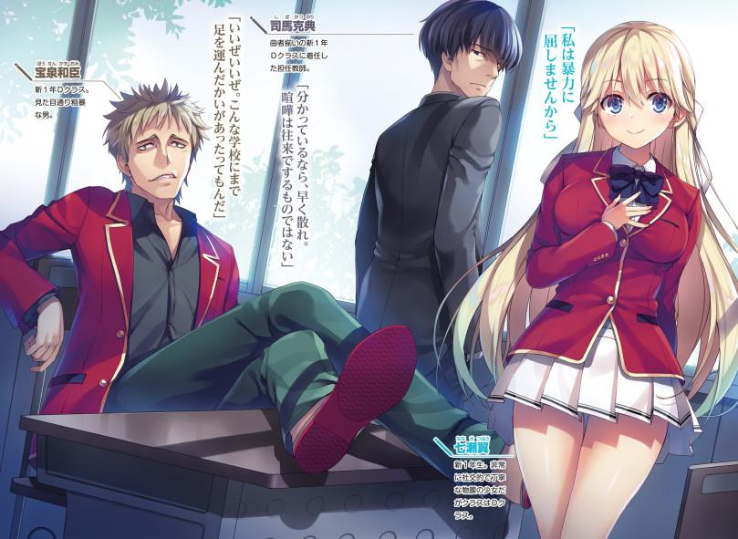
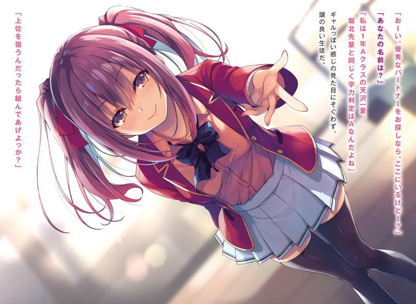
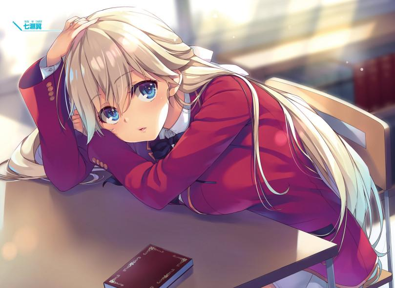
GLADHEIM
TRANSLATIONS
Youkoso Jitsuryoku Shijou Shugi no Kyoushitsu e - Segundo Año Volumen 1
OPERANDO DETRÁS DE ESCENA
Retrocediendo en el tiempo a un cierto día de febrero dos meses antes...
En una sala de reuniones, dentro de cierta instalación en algún lugar de Tokio, un hombre que se cree que tiene unos 40 años estaba leyendo información mostrada en una pantalla.
Un adolescente estaba escuchando en silencio.
Un adolescente de 15 años, que pronto entrará a la preparatoria.
Sin embargo, su identidad no era la de un niño normal.
Es alguien que ha recibido una educación especial en la instalación secreta conocida como Habitación Blanca.
—Con esto, hemos revisado los datos de Ayanokouji Kiyotaka y los otros 156 estudiantes de segundo año. ¿Has memorizado todo?
El hombre, Tsukishiro, mostraba a este adolescente todos los datos que habían recopilado sobre los estudiantes de cierta preparatoria en el curso del último año.
No sólo tenía información estándar como sus nombres completos, fecha de nacimiento, y escuelas anteriores, sino que además tenía información sobre sus padres y hermanos, calificaciones y logros desde la niñez, e incluso con quiénes interactuaban típicamente. Era una reunión de alto secreto con información detallada que ni siquiera los profesores de la escuela podían ver.
—Creo que ya estás al tanto de esto, pero es crucial que Ayanokouji-kun sea expulsado y devuelto a la Habitación Blanca antes de finales de abril.
Después de todo, no podemos permitirnos prolongar el plan por más tiempo. Sin embargo, por favor, sé inteligente en cómo lo haces. Asegúrate de que la gente no se entere de nada. Si el gobierno se entera de esto, me temo que el nombre de Sensei podría quedar manchado.
Después de la explicación de Tsukishiro, el estudiante de la Habitación Blanca levantó lentamente su mano.
—Así que está diciendo que no debería atraer atención innecesaria,
¿verdad?
—Así es. Es precisamente por eso que sólo alguien como tú, que puede hacerse pasar por estudiante, es capaz de hacer esto. Haré todo lo que pueda para apoyarte, pero la facción de Sakayanagi definitivamente va a estar más alerta de ahora en adelante. Eso limita cualquier movimiento grande que yo pueda hacer.
El adolescente demostró muestras de comprensión, pero en su rostro se podía ver una cierta mirada de insatisfacción, que Tsukishiro no fue capaz de pasar por alto.
—Parece que tienes algunas quejas, puedo verlo en tu cara.
Tsukishiro se dio la vuelta y miró la foto de Ayanokouji en la pantalla detrás de él, luego se dio la vuelta y se encontró con los ojos del adolescente.
—No estás contento de que él, Ayanokouji-kun, esté siendo elogiado como nuestra obra maestra, ¿verdad? No sólo me están enviando allí, sino que han llegado a interrumpir los experimentos y enviarte a ti cuando la Habitación Blanca acaba de reanudar sus operaciones. Debo decir que se siente como una respuesta demasiado cortés. Como alguien criado dentro de las mismas instalaciones, la humillación que sientes debe ser insoportable.
Tsukishiro enfatizó fuertemente este punto mientras explicaba.
Buscaba que el adolescente superara su propio potencial avivando su sentido de la rivalidad.
'Ayanokouji Kiyotaka es nuestra obra maestra.'
Cada vez que escuchaba estas palabras, Tsukishiro pensaba que invocarían sentimientos de competencia que acechaban en la mente del adolescente.
A Tsukishiro seguramente le pareció que había manejado todo perfectamente, pero en realidad, había malinterpretado una parte crucial.
Había una idea que había sido cuidadosamente inculcada en las mentes de los que estaban en la Habitación Blanca:
[Conviértete en alguien que pueda superar a Ayanokouji Kiyotaka.]
Esta idea les había llevado a desarrollar un sentimiento de "odio". Uno que alguien como Tsukishiro, que no había sido criado en la Habitación Blanca, nunca sería capaz de entender.
A veces, este odio crecía hasta el punto de que no podían contenerlo más, causando que actuaran de forma imprudente.
—El escenario está preparado. Todo lo que resta es que hagas uso de todas tus habilidades. He mirado tu expediente y no tengo ninguna queja. Si realmente tienes este nivel de talento, expulsarlo debería ser cosa de niños, ¿no?
Su explicación terminó junto con una provocación distorsionada. Tsukishiro entonces apagó la pantalla.
La habitación se vio envuelta en la oscuridad en un instante, pero en poco tiempo, la volvió a quedar envuelta en las luces que brillaban desde el techo.
—Bien, entonces, lo dejaremos así si no tienes más preguntas. Después de todo, el tiempo es muy valioso.
Al oír esto, el adolescente se dio la vuelta y comenzó a moverse para salir de la habitación como si nada hubiera pasado.
Tsukishiro estaba ligeramente molesto por su actitud tranquila.
Su intuición le dijo que había cometido un error en algún momento de su explicación.
Sin embargo, era imposible retractarse de las palabras que ya había dicho.
—Una cosa... hay una cosa que olvidé confirmar contigo.
Llamó al adolescente, hablándole a la espalda mientras éste se detenía justo antes de salir de la habitación.
—No me estás ocultando algo, ¿verdad?
Incluso si el adolescente estaba de su lado, no todos en la institución estaban siempre en la misma página, y Tsukishiro lo sabía.
Si los dos no se veían cara a cara desde el principio, algo que podría haber ido bien podría terminar mal.
Por eso llamó al adolescente.
Sin darse la vuelta, el adolescente simplemente asintió con la cabeza antes de salir en silencio de la habitación.
Una vez que estuvo solo, Tsukishiro apagó las luces una vez más antes de volver a dirigir su atención a la pantalla.
En ella se mostraban todos los datos de Ayanokouji Kiyotaka de su estancia en la Habitación Blanca.
—No me gusta usar este tipo de palabras para describir las cosas, pero...
realmente es un monstruo.
No hace falta decir que sus habilidades académicas eran excelentes, pero sus habilidades físicas podían avergonzar a los adultos.
Su historial de peleas contra peleadores profesionales estaba lleno de victorias.
—Una batalla entre dos compañeros de la Habitación Blanca... me pregunto cómo resultaría en una pelea justa.
Por supuesto, Tsukishiro ya había ideado un plan inteligente para asegurarse de que ganaría.
Pero aun así, la victoria no estaba garantizada.
—Es cazar o ser cazado. Puede que sea un juego entre niños, pero sin duda seguirá siendo interesante.
Como adulto, Tsukishiro no estaba preocupado. Sólo se tomaba su tiempo lentamente para ejecutar la misión que se le había encomendado.
HABILIDAD VERDADERA
Fue un cierto año, mucho después de que la gente se familiarizara con el siglo XXI.
Mientras el mundo se enfrentaba a todo tipo de problemas, Japón también estaba en un punto de inflexión.
Entre la disminución de las tasas de natalidad, el envejecimiento de la población, problemas ambientales y la caída del poder nacional, la sociedad japonesa estaba empezando a mostrar signos de decadencia.
Para reconstruir desde cero, el gobierno comenzó a centrar en serio sus esfuerzos en el desarrollo de sus recursos humanos.
Y, como parte de este cambio en la política, se estableció cierta preparatoria.
El objetivo de esta escuela es reunir a varios estudiantes de todo el país y convertirlos en individuos capacitados para enfrentarse al mundo exterior.
[Preparatoria Avanzada de Educación]
Una de las características más distintivas de esta escuela es que no tiene en cuenta las notas de la secundaria de un solicitante al seleccionar a quien se inscribe.
Los estudiantes elegidos a través de los criterios de selección de la escuela tienen una amplia variedad de características.
Hay quienes pueden estudiar, pero tienen dificultades para comunicarse. Y hay otros que sobresalen en los deportes pero batallan en lo académico.
Algunos, por otro lado, no parecen tener ni una sola cualidad rescatable, y sin embargo la escuela los agrupa con el resto y les enseña a todos de la misma manera.
Es un sistema de aprendizaje que sería impensable en una preparatoria ordinaria.
A pesar de todas las personalidades tan diferentes, estos estudiantes se ven impulsados a vivir sus vidas en grupo y competir entre ellos por el bien de su clase.
El propósito detrás de todo esto es crear la base necesaria para que entren en una sociedad competitiva y sobrevivan como grupo.
Y, aquellos que son considerados como no cualificados están condenados al destino de ser expulsados sin la más mínima piedad.
Los estudiantes no podrán sobrevivir en esta escuela simplemente haciendo deporte o estudiando de manera efectiva.
Cada grado escolar se divide en cuatro clases diferentes, que van desde la clase A a la clase D. En el momento de la inscripción, a cada clase se le asignan 40
estudiantes, para un total de 160.
Con todo eso dicho, hay otros aspectos de esta escuela que la hacen tan dramáticamente diferente de otras preparatorias.
Empezando por lo básico, los estudiantes no pueden comunicarse con el mundo exterior hasta el día en que se gradúan, tres años después de la inscripción. Al mismo tiempo, se les prohíbe dejar las instalaciones de la escuela y se les obliga a vivir en los dormitorios suministrados por la escuela. Dicho esto, la escuela cuenta con un campus inmensamente grande, completamente equipado con todo tipo de instalaciones para apoyar a sus estudiantes con cualquier cosa que puedan querer o necesitar durante su estancia allí. También hay un establecimiento comercial de gran tamaño para uso exclusivo de los estudiantes y el personal de la escuela llamado "Centro Comercial Keyaki" que tiene todo lo que los estudiantes puedan necesitar, desde cafeterías y tiendas de electrónica de venta al por mayor hasta peluquerías y salas de karaoke. E, incluso si hay
algo que el centro comercial no vende, los estudiantes siempre pueden adquirirlo y pedirlo por Internet.
Además, los estudiantes reciben una forma de dinero llamada "puntos privados", que pueden usar para hacer estas compras durante su estancia en la escuela.
Estos puntos tienen un tipo de cambio fácil de entender con el yen japonés, y pueden ser usados como dinero real.
Sin embargo, estos puntos privados no aparecen de la nada.
Cada mes, los estudiantes son provistos con puntos privados iguales a su número actual de puntos de clase por 100.
En otras palabras, para abastecerse de puntos privados que los estudiantes necesitan para vivir sus vidas, asegurar estos puntos de clase se convierte en la primera prioridad.
Hay varias maneras de ganar estos puntos de clase, pero el método más común consiste en superar los desafíos dados por la escuela llamados "exámenes especiales".
Básicamente, durante estos exámenes especiales, las cuatro clases compiten entre sí, y los más fuertes ganan puntos de clase y los más débiles los pierden.
Si alguna clase termina con 1000 puntos de clase, entonces los estudiantes de esa clase ganarán una asignación mensual equivalente a 100.000 yenes. Por el contrario, si una clase pierde continuamente estos exámenes, sus puntos de clase se desplomarán hasta cero y como resultado se les dará una asignación mensual de cero puntos privados.
Esta relación inseparablemente interrelacionada entre los puntos de clase y los puntos privados es la manera que tiene la escuela de conseguir que los estudiantes con diferentes formas de pensar trabajen juntos para el objetivo común de preservar sus puntos de clase. Esto se debe a que, para los estudiantes, asegurar una gran suma de puntos de clase significa que asegurarán la vida escolar perfecta y satisfactoria que todos desean.
Sin embargo, el encanto de la Preparatoria Avanzada de Educación va incluso un paso más allá de eso.
El punto más importante de la escuela proviene de ser un miembro de la clase A al graduarse. A los estudiantes que consiguen ganarlo todo se les concede el lujo de poder avanzar a cualquier universidad u oportunidad de empleo que deseen. Hasta en los casos más extremos, ya sea una universidad con los más bajos índices de aceptación imaginables o una gran empresa de primera clase, los estudiantes tienen garantizado el ingreso con pase libre. Sin embargo, esto no implica que puedan permitirse el lujo de ser demasiado optimistas. Después de ser aceptados, si el potencial natural de uno no es suficiente para hacer el trabajo, es seguro que eventualmente seas eliminado.
Aun así, no se puede negar que esta sigue siendo una oferta extremadamente atractiva.
Supongo que esto es una buena visión general de la Preparatoria Avanzada de Educación.
Yo, Ayanokouji Kiyotaka, soy actualmente un estudiante matriculado en esta notable preparatoria, donde pronto me embarcaré en mi segundo año.
Desde el 1 de abril, soy un estudiante de la clase D, con un total de 275 puntos de clase. Esto significa que cada mes, recibiré aproximadamente 30.000 yenes en puntos privados. Por cierto, la clase de mayor clasificación, la Clase A, está liderada por Sakayanagi con un total abrumador de 1119 puntos. A continuación está la clase B, liderada por Ichinose, con 542. Y siguiendo apenas detrás de eso está la Clase C, liderada por Ryuuen, con 540.
Al comparar nuestra clase con las otras, la diferencia en puntos de clase puede parecer grande, sin embargo, puede ser más exacto decir que la brecha entre nosotros se ha reducido.
El grado en que podamos cerrar esta brecha en el transcurso de este próximo año marcará la diferencia.
UN NUEVO ESCENARIO
Después de unas largas y de alguna manera cortas vacaciones de primavera que habían llegado a su fin, el día de la ceremonia de apertura finalmente llegó.
Nos movimos de nuestra vieja y familiar aula de primer año y nos trasladamos a una nueva para el segundo año. A simple vista, el pupitre y las sillas parecían ser los mismos, pero por alguna razón, el salón daba una sensación diferente.
Lo primero que nos esperaba al llegar a esta nueva aula era un mensaje
"desplegado" en el pizarrón.
[Siéntense en el mismo asiento que usaron el año pasado y esperen más instrucciones.]
El año pasado, el pizarrón era uno en el que los profesores escribían con tiza.
Sin embargo, el pizarrón a delante de mí era un pizarrón, pero no al mismo tiempo.
En pocas palabras, había sido reemplazado por un gran monitor.
La escuela probablemente había elegido instalarlo este año, a juzgar por el hecho de que brillaba con un resplandor que hacía parecer que recién había salido de la caja.
Los estudiantes que llegaron al aula después de mí también parecían bastante sorprendidos cuando vieron el monitor. De cualquier manera, me dirigí a donde me sentaba el año pasado, el asiento de la ventana en la parte trasera del aula, y me senté como se me indicó.
Más tarde, después de esto, la ceremonia de apertura se llevaría a cabo en el gimnasio.
Luego de eso, los profesores de la clase pasarían las próximas dos horas informándonos sobre el programa de este año y otros detalles importantes antes de retirarnos en algún momento antes del mediodía.
Los estudiantes parecían estar todavía un poco fuera de sí ya que las vacaciones de primavera acababan de terminar. Los amigos que no se habían reunido durante las vacaciones empezaron a hablar con entusiasmo de todo tipo de cosas, como lo que habían estado haciendo durante las vacaciones.
— Hey.
Estaba navegando tranquilamente por Internet en mi teléfono cuando escuché que una voz me llamaba.
Era mi compañero de clase Miyake Akito, un miembro de un pequeño grupo del que me había hecho buen amigo.
—Estuve un poco preocupado por ti porque no pasaste mucho tiempo con el grupo durante las vacaciones de primavera.
Lo que Akito dijo era cierto. Casi no interactué con el grupo de Ayanokouji durante las vacaciones.
O más bien, había estado tan ocupado con otros asuntos que terminé olvidándolos.
—No me malinterpretes, no hay ninguna regla que diga que tienes que pasar el rato con nosotros, pero hasta Haruka estaba un poco preocupada, y encima de eso, creo que Airi pensaba mucho en ti.
Akito me aconsejó que tuviera en cuenta los sentimientos de las chicas de nuestro grupo.
—Lo siento. Saldré con ustedes más a menudo en el futuro.
—Eso suena bien para mí. También me sentía muy solo sin ti, ¿sabes?
Me sentí un poco incómodo al oír a un amigo decirme algo así, pero no fue exactamente un sentimiento malo.
No parecía que Akito planeara quedarse mucho tiempo, ya que casualmente levantó su mano y volvió a su asiento.
Mientras lo hacía, me encontré pensando en cómo había encontrado un verdadero buen amigo.
Después de todo, se había esforzado mucho en darme un consejo tan bueno como ese.
Cuando volvió a su asiento, ya no me dieron ganas de jugar con el teléfono, así que decidí escuchar lo que decían algunos de mis compañeros.
El tema había cambiado de lo que la gente había hecho durante las vacaciones de primavera a los estudiantes recién inscritos.
Mañana es la ceremonia de entrada a la escuela donde los estudiantes de primer año entrarán en la escuela.
El año pasado, nuestra clase D había dado por sentado el buen trato de la escuela e hizo que nos quitaran la alfombra poco después de la inscripción, pero esa fue la consecuencia natural de nuestras acciones en ese momento.
Nos habían dado 1000 puntos de clase cuando llegamos aquí. En otras palabras, nos habían dado el equivalente a 100.000 yenes cada mes. El espíritu era alto ya que los estudiantes gastaron sus puntos, comprando imprudentemente lo que querían con la impresión de que recibirían la misma cantidad al principio de cada mes. Mientras tanto, retrasarse o incluso no presentarse a clase ocurría cada vez más, y un buen número de estudiantes tenían el hábito de hablar con sus amigos o dormirse durante las clases.
Por otro lado, los estudiantes diligentes estaban tan concentrados en sí mismos que no prestaban atención al comportamiento de los que les rodeaban.
Estos estudiantes diligentes seguramente tenían varias razones por las que no hablaban de ello, pero la principal era el hecho de que la escuela dejaba que los chicos problemáticos hicieran lo que quisieran. Después de todo, si los profesores no hacían nada al respecto, ¿por qué deberían hacerlo ellos?
Sin embargo, se podría decir que todo esto no fue más que el primer "examen especial" que la escuela nos tenía reservado.
La escuela estaba viendo si nos daríamos cuenta o no de que esto era diferente de la educación obligatoria que pasamos durante la primaria y la secundaria.
Poniéndonos a prueba como estudiantes de preparatoria, tratando de averiguar si éramos capaces o no de hacer lo que necesitábamos hacer sin que nos lo dijeran.
Y nuestra magnífica clase D fue presentada con la evaluación más baja posible que el examen especial podría habernos dado.
El mes siguiente, el primero de mayo, nuestros puntos de clase cayeron a cero, haciendo que nuestra asignación mensual de puntos privados cayera en picada hasta un maravilloso cero también.
Durante el resto del año, la clase D pasó por una prueba tras otra, pero después de caer hasta el fondo una vez, comenzó lentamente a reconstruirse, madurando y acercándose en el proceso. En un momento dado, conseguimos ascender a la Clase C, pero después de los resultados del examen de fin de curso, desafortunadamente fuimos relegados de nuevo a la Clase D. A pesar de ello, conseguimos recuperar un total de 275 puntos de clase a lo largo del año.
Todavía hay una gran brecha entre nuestra clase y la Clase A, pero para llegar a la cima, se trata de cuánto podemos cerrar esa brecha en el transcurso de este año.
—Buenos días.
La animada voz de una chica llenó el salón. Inmediatamente después, las estudiantes que ya estaban en el aula respondieron una tras otra, reuniéndose alrededor de la chica en cuestión. Era Karuizawa Kei, la figura principal de las chicas de la clase. El número de chicas reunidas alrededor de ella siguió aumentando, y así como así, empezaron a hablar de las mismas cosas que ya habían discutido entre ellas no hace mucho tiempo.
Apenas el otro día empecé a salir con Kei.
En este momento, la única persona que sabía de eso era la propia Kei.
Mientras pensaba en lo que había pasado mientras escuchaba sus discusiones, una voz sorprendida, más parecida a un grito se extendió por toda la clase. Miré para ver lo que estaba pasando e inmediatamente me di cuenta de lo que había causado la conmoción.
Se podría decir que fue una reacción razonable después de ver la aparición de la chica que entró silenciosamente en el aula.
Sin admitir la atención que estaba recibiendo, la estudiante simplemente se acercó a su asiento. Es decir, el asiento justo al lado del mío.
Su una vez largo y hermoso cabello negro era ahora corto, sin llegar siquiera a sus hombros.
Decidió cortarse el pelo después de reconciliarse con Horikita Manabu, su hermano mayor, y despedirse de su antiguo yo.
Personalmente no me sorprendió porque ya lo sabía de antemano, pero si hubiera sido la primera vez que lo veía, seguramente habría reaccionado igual que la gente que la rodeaba.
—¿S-Suzune? ¿¡Qué... qué pasa con tu pelo!?
El que gritó esto no era otro que Sudou Ken, un estudiante varón que se enamoró de Horikita.
Había interrumpido la charla que estaba teniendo con uno de sus amigos y se acercó a nosotros.
Estaba acompañado por otra persona, una chica que también parecía desconcertada por el repentino cambio de apariencia de Horikita.
—Horikita-san, eso es... un cambio de imagen bastante drástico. Estoy sorprendida.
Dicha chica era Kushida Kikyou, una de nuestras compañeras de clase que había asistido a la misma secundaria que Horikita.
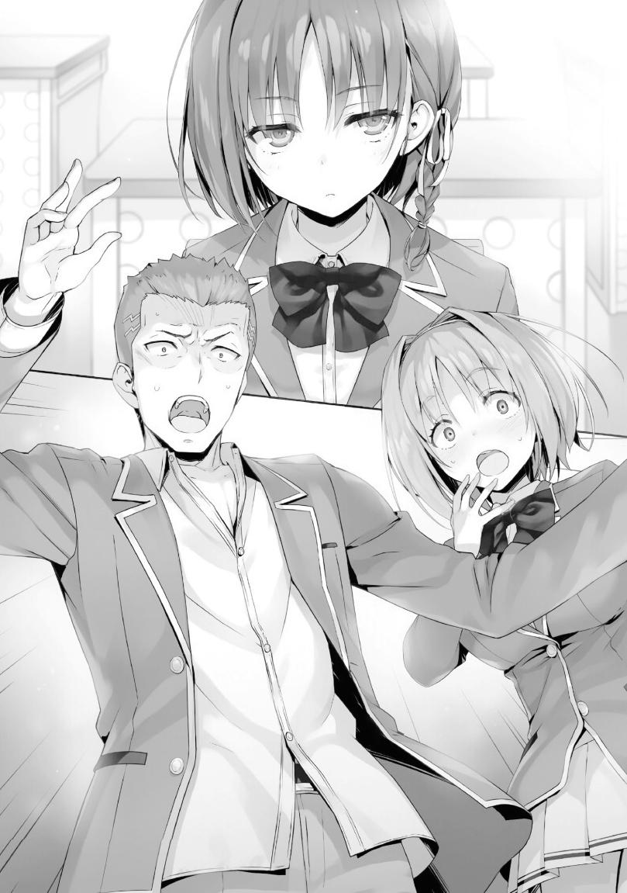
—¿Es realmente tan extraño que haya elegido cortarme el pelo?
Horikita miró no sólo a Sudou, sino también a los numerosos estudiantes que la miraban.
—N-no, más que extraño, es más, sorprendente, ¿sabes?... Es como si te hiciera parecer una persona totalmente diferente... Uhm, eso no quiere decir que te quede mal o algo así. El pelo corto en realidad te queda muy bien. ¿No estás de acuerdo, Kushida?
Aunque causó una fuerte impresión, para Sudou, cosas como el largo del pelo de Horikita eran triviales.
De hecho, él recibió con agrado la nueva imagen de la chica de la que está enamorado, enfatizando que realmente lo aprueba.
Por otro lado, a quien Sudou le había pedido su aprobación, Kushida, no pudo ocultar su desconcertante expresión.
—Creo que... ¿Entonces? Sí. Creo que te queda muy bien, pero... ¿pasó algo?
No creía que Kushida quisiera compartir sus pensamientos sobre el tema, ya que cambió la conversación para averiguar por qué Horikita se cortó el pelo.
—¿Qué quieres decir con 'pasó algo'?
Antes de que Horikita pudiera responder, Sudou se entrometió con entusiasmo con una pregunta suya.
— Como... ¿tal vez se le rompió el corazón, o algo así?
—¿¡C-c-c-corazón roto!?
—Si tuviera que decirlo, supongo que lo llamaría mi forma de mostrar mi determinación.
Horikita respondió en poco tiempo, disipando cualquier especulación adicional de que ella había hecho esto por la pena de su corazón.
—E-eso tiene sentido. No hay manera de que tengas que lidiar con un amor no correspondido o algo así, ¿verdad? ¿Verdad?
A pesar de decir eso, Sudou parecía estar sudando frío.
—Este año, como estudiante de segundo año, lucharé por llevar la clase D
a la cima. Quería hacer lo que pudiera para que eso ocurriera.
—Ah, ya veo. Bueno... supongo que haré lo contrario y trataré de dejarme crecer el pelo.
Kushida sonaba linda e inocente, pero de alguna manera, pude captar el verdadero significado de sus palabras.
Le disgustaba que su pelo fuera ahora del mismo largo que el de la persona que odiaba. No pensé que nadie se tomara en serio lo que decía, pero era posible que se lo dejara crecer. Era inevitable imaginar las furiosas emociones que se escondían dentro de sus palabras.
—Si están satisfechos, ¿podrían volver a sus asientos?
Horikita los instó a irse. Después de todo, no quería que la gente se quedara atónita por lo largo o corto de su cabello.
Aunque su corte de pelo hizo olas con los que la rodeaban, Horikita parecía algo infeliz por toda la atención que estaba recibiendo por ello.
Estaba de mal humor, pero afortunadamente, la campana sonó poco después, poniendo fin a la charla que ocirría.
PARTE 1
Habían pasado varios días desde la ceremonia de bienvenida. El fin de semana llegó y se fue, y era lunes una vez más.
Una vida escolar pacífica. Una rutina diaria que se repetía constantemente una y otra vez.
El comienzo del nuevo año escolar trajo muchos cambios, el más notable de los cuales fue que las pizarras se han vuelto digitales y que todos nuestros libros de texto han sido reemplazados por tabletas electrónicas. Miré la nueva tableta que la escuela distribuyó la semana anterior.
Todos los materiales de clase suplementarios están ahora en estas tabletas, resaltando la popularidad de los libros electrónicos en estos días.
A cada estudiante se le entregó una, y se instalaron puertos de carga de alta velocidad en el fondo del aula. También se pusieron a nuestra disposición cargadores de baterías portátiles cuando los necesitábamos, por si acaso nuestras tabletas se quedaban sin energía durante la clase. Aunque, como regla general, no se nos permitía llevar nuestras tabletas a los dormitorios, siempre podíamos transferir los datos que necesitábamos a través de la red inalámbrica de la escuela y usarlos en casa.
El incómodo número de libros de texto que solíamos llevar se almacenaba ahora en una tableta de 12 pulgadas. No sólo facilitaba la utilización del material visual como gráficos o fotografías, sino que también tenía soporte para usos más globales, permitiéndonos comunicarnos sin problemas con extranjeros durante nuestras clases de inglés.
Para una escuela supervisada por el gobierno, parece estar bastante atrasada en la introducción de estos cambios.
Al mismo tiempo, era difícil decir si estos cambios fueron los correctos o no.
El valor de estos cambios dependería en gran medida de si los estudiantes los necesitaban o no para integrarse con la sociedad más adelante.
Este año, el alcance de nuestros estudios lógicamente sería más difícil de lo que fue durante nuestro primer año. No tenía un marco de referencia con el que comparar esto, pero me pareció razonable suponer que esta escuela estaba al menos por encima de la media en términos de dificultad. Me encontré preguntándome si Sudou, Ike, y algunos otros estudiantes serían capaces de aguantar el ritmo por sí solos. Para evitar que cualquiera de ellos fuera expulsado, necesitarían más apoyo que nunca.
En definitiva, la mayoría de los grandes cambios tenían que ver con la digitalización del sistema educativo, pero si tuviera que nombrar algo más, posiblemente sería cómo ahora podríamos elegir dónde queremos sentarnos mediante el uso de puntos privados. Me trasladé de mi antiguo asiento de la ventana al pupitre justo al lado del pasillo en la parte posterior del aula.
Generalmente, los asientos junto al pasillo no son muy populares debido al tráfico, pero eso no es algo que me importe.
Y, aunque me encontraba con los nuevos estudiantes de primer año más a menudo en el transcurso de mi vida diaria, no participaba en ninguna actividad de club, por lo que todavía no había hablado con ninguno de ellos. El año pasado, la primera vez que hablé de forma adecuada con uno de los alumnos mayores fue cuando necesité recopilar viejas preguntas para un examen especial, así que no es precisamente extraño que no hayan hablado conmigo todavía.
En resumen, los primeros días del nuevo año escolar fueron bastante tranquilos.
—Todo el mundo está aquí, ¿verdad?
Nuestra profesora principal, Chabashira-sensei, entró en el aula sólo segundos después de que sonara la campana.
Al comenzar la mañana, tomó su lugar detrás del estrado con una mirada extremadamente seria en su rostro.
Esto, junto con el hecho de que no había clases regulares programadas para el primer y segundo período de hoy, significaba que era seguro asumir que algo estaba a punto de suceder.
Nuestro breve y pacífico descanso estaba a punto de terminar.
—Sensei, ¿hay un examen especial?
Ike hizo una pregunta antes de que Chabashira-sensei tuviera la oportunidad de abrir la boca.
Por lo que parece, habló por la inquietud, no como una especie de broma.
Chabashira-sensei entendió esto también, así que no lo reprendió por hablar fuera de turno.
En el pasado, cada vez que un nuevo examen especial surgía, la mayoría de nuestros compañeros se sentían consumidos por la ansiedad y el suspenso.
Pero ahora, los exámenes especiales se sentían más como obstáculos que teníamos que superar en nuestro camino a la cima.
La mentalidad de la clase había empezado a cambiar, a mirar hacia el futuro.
—Entiendo que estén preocupados, pero hay algo que necesito que hagan todos ustedes antes de responder a eso. Algo muy importante para el resto de su vida aquí en esta escuela.
Chabashira-sensei sacó su teléfono y lo sostuvo frente a nosotros mientras hablaba.
—Saquen sus teléfonos y colóquenlos en sus pupitres. Si no lo trajeron con ustedes, tendrán que volver a su dormitorio a buscarlo, pero... dudo que alguno de ustedes lo haya olvidado.
Hoy en día, los teléfonos se han convertido en una necesidad de la vida. Podrías decir que es la cosa más importante que debes llevar encima en todo momento.
En poco tiempo, 39 teléfonos fueron colocados en los pupitres. Después de comprobar rápidamente que nadie olvidó el suyo, Chabashira-sensei continuó hablando.
—Entonces, lo primero que deben hacer es navegar a la página de inicio de la escuela e instalar una nueva aplicación. Debería estar disponible para ser descargada en cualquier momento. El nombre oficial de la aplicación es 'Over All Ability', pero una vez que termine de instalarse aparecerá como 'OAA' en su teléfono.
La pizarra cambió a una pantalla diferente, donde comenzó a reproducirse un video de demostración con subtítulos.
Se podría decir que esta es una de las varias comodidades que nos ofrece la nueva tecnología.
Después de seguir la explicación del vídeo e instalar con éxito la aplicación, un icono de lo que parecía ser una ilustración de la escuela junto con las letras
"OAA" apareció en la pantalla de mi teléfono.
—Dejen sus teléfonos cuando terminen de instalar la aplicación. Levanten la mano si hay algo que no entienden.
El proceso de instalación fue extremadamente simple. Todo el mundo aquí tenía experiencia en el uso de sus teléfonos, así que todo progresó sin problemas.
—No son los únicos que hacen esto. Ahora mismo, todos los estudiantes de la escuela la están instalando. De aquí en adelante, esta aplicación será una herramienta muy útil para ustedes aquí en la Preparatoria Avanzada de Educación. Bueno, ver es creer como dicen, así que adelante y pónganla en marcha.
Presioné el icono en mi pantalla de inicio para ejecutar la aplicación, pero la cámara de mi teléfono apareció en su lugar.
—Sólo tomen una foto de su tarjeta de identificación de estudiante con su cámara y se encargará del proceso de configuración inicial.
Siguiendo sus instrucciones, tomé una foto de mi tarjeta de identificación.
Después la aplicación escaneó la tarjeta en busca de información como mi número de identificación y mi fotografía y continuó con el proceso de inicio de sesión.
—En este punto, cada uno de ustedes debe tener su cuenta personal. En adelante, no necesitarán ingresar más, ya que su cuenta está vinculada directamente a su teléfono, así que por favor tengan cuidado de no perderlo.
Después de entrar finalmente en la aplicación, aparecieron varios menús diferentes.
—Esta aplicación contiene los datos personales de todos los estudiantes de cada año escolar. Por ejemplo, si presionan en el menú de la clase 2-D, sus nombres se mostrarán en orden alfabético. Adelante, inténtenlo.
Las fotos escolares y los nombres completos de los 39 fueron listados en orden alfabético en la pantalla, tal como dijo que estarían.
—Son libres de mirar cualquier perfil que quieran, pero deberían mirar el suyo primero.
Toqué mi nombre como sugirió Chabashira-sensei.
Esperaba que me diera información básica como mi fecha de nacimiento, pero no fue así en absoluto.
En cambio, se presentaron datos que nunca había visto antes.
Clase 2-D - Ayanokouji Kiyotaka
Evaluación del primer año
Habilidad académica: C (51)
Habilidad física: C+ (60)
Adaptabilidad: D+ (37)
Contribución social: C+ (60)
Habilidad general: C (51)
—S-sensei, parece que mis resultados fueron convertidos en estadísticas de videojuegos.
—Así es. La escuela calculó esas puntuaciones para cada uno de ustedes basándose en sus logros hasta el final de su primer año. Por supuesto, ustedes no son los únicos que pueden acceder a esta información; es posible para los estudiantes de cualquier clase o año escolar acceder a la información de quien
quieran. El sistema fue adoptado porque creemos que será una herramienta importante para el futuro de su educación.
En otras palabras, el propósito de esta aplicación OAA es proporcionar una evaluación numérica de las habilidades de todos. Por otro lado, también podría utilizarse para enviar mensajes públicos a todos los estudiantes de la escuela.
Hay un icono con un signo de interrogación en la esquina superior derecha de la pantalla que, al ser presionado, me presenta una descripción detallada de cada una de las diferentes categorías de mi perfil.
Habilidad académica: Principalmente calculada en base a los resultados de los exámenes escritos realizados a lo largo del año escolar.
Habilidad física: Calculada en base a tu desempeño en las clases de educación física, actividades en clubes, exámenes especiales y otros esfuerzos físicos.
Adaptabilidad: Calculada en base a tu capacidad de adaptación al mundo que te rodea. Esto incluye, pero no se limita a, si demuestras consistentemente la habilidad de pensar por ti mismo, tus habilidades de comunicación, el tamaño de tu círculo social, y si actúas o no de una manera adecuada a tu posición social dentro de dicho círculo.
Contribución social: Calculada en base a una variedad de factores, como tu actitud general durante la clase, tu registro de asistencia, la presencia de cualquier comportamiento potencialmente problemático, o tu contribución a la escuela a través de programas como el consejo estudiantil.
Habilidad general: La capacidad integral de un estudiante se deriva de cada uno de los cuatro valores calculados anteriormente. Sin embargo, el efecto que la
contribución social tiene en la puntuación global se reduce a la mitad en comparación con los otros tres valores.
※ Fórmula para el cálculo de la Habilidad General: (Capacidad académica + Capacidad física + Adaptabilidad + (Contribución social * 0,5)) ÷ 350 * 100 (redondeado)
Ya veo. Con criterios de evaluación como este, podía entender por qué mi índice de adaptabilidad era más bajo que el de los demás.
Después de todo, el tamaño de mi círculo social y mis habilidades de comunicación no son muy altas para ningún estándar.
Mis calificaciones para las otras categorías eran razonables, ya que se calcularon en base a varias cosas que hice cotidianamente.
Junto con la información de mi primer año, hay páginas adicionales para la información del segundo y tercer año, pero están en blanco.
—En este momento, sólo se muestran las clasificaciones del primer año, pero a partir de hoy, las nuevas clasificaciones se reflejarán en la página del segundo año a medida que estén disponibles. Serán actualizadas el primer día de cada mes, el mismo día que se distribuyan los puntos privados. Por ejemplo, Sudou, tu calificación actual de Habilidad Académica es E, pero si obtuvieras notas máximas en el próximo examen escrito, recibirías una A+ por Habilidad Académica en la página de tu segundo año.
Esto implica que nuestras calificaciones de segundo año se evaluarán por separado de las de primer año. Además, las calificaciones de cada año se mantendrán siempre registradas. Aunque Sudou obtenga una calificación perfecta en el primer examen escrito de abril y obtenga una calificación de A+, si saca un cero en el siguiente examen, terminará con una calificación de C, o algo por el estilo. Y después de un año completo de eso, nuestra calificación promedio será lo que quede al final.
Una de las características más notables de esta aplicación es que nos permite comprobar no sólo nuestra clase, sino también todas las demás. Antes de esto, no podía averiguar sobre los estudiantes con los que nunca interactué sin salir personalmente y recopilar información, pero ahora, con sólo una mirada a la aplicación, puedo averiguar el nombre, la cara y el tipo de calificación que han obtenido, independientemente de si están en mi año escolar o no. Por cierto, los datos de los estudiantes de primer año están basados en información de su tercer año de secundaria junto con los resultados de su examen de ingreso. Esto quiere decir que, aparte de las clasificaciones de Habilidad Académica, Habilidad Física y Contribución Social, es posible que sus clasificaciones de Adaptabilidad no sean muy confiables.
Es una herramienta útil para comprobar las calificaciones... O, no, tiene que haber algo más que eso.
La aplicación obviamente está destinada a jugar un papel importante de algún tipo.
—Probablemente hay algunos estudiantes aquí que no están satisfechos con sus calificaciones y se sienten frustrados con la forma en que se mantendrán en el registro. Pero a esos estudiantes, sólo puedo decirles que ustedes son los que pasaron el último año actuando como lo hicieron.
Cuanto más se acercan las clasificaciones importantes como Habilidad Académica y Habilidad Física a una E, más deshonrado se sentirá uno como estudiante.
—Sin embargo, sus calificaciones de primer año son cosa del pasado, y no tendrán ninguna influencia en las evaluaciones que recibirán como estudiantes de segundo año. En otras palabras, es importante que aquellos de ustedes que recibieron resultados insatisfactorios aprovechen esta oportunidad para mejorar.
La escuela espera que la visualización de su progreso ayude a promover un crecimiento como ese.
Dado que la aplicación tiene un registro de calificaciones personales que cualquiera puede mirar, muchos estudiantes comenzarán a esforzarse para
verse lo mejor posible. Esto tendrá algún tipo de efecto publicitario para conseguir mejores calificaciones, como dijo Chabashira-sensei, pero...
—Sensei, ¿por qué la contribución social es la única que se tiene en cuenta de forma diferente a las otras tres categorías?
Esta pregunta vino de Hirata Yousuke, que se había estado preguntando por qué la categoría de Contribución Social tenía menos de la mitad de la influencia en la Habilidad General en comparación con las otras tres.
—Habilidad académica, habilidad física y adaptabilidad. La escuela considera que estas tres categorías son extremadamente importantes. La Contribución Social, por otro lado, es un poco diferente. La Contribución Social se basa en la moral y los modales. Es una evaluación de cómo te ves como estudiante en un sentido general, considerando cosas como el tono y la actitud que tomas con tus profesores, las ausencias o retrasos en tu registro de asistencia, si estás dispuesto o no a cumplir con varias reglas, e incluso la influencia de tu voz y la exactitud de tus palabras. Cubre el tipo de habilidades de sentido común que no puedes permitirte no tener, por lo que el impacto que tiene en la habilidad general es menor como resultado.
A diferencia de las tres primeras categorías, donde no puedes mejorar dramáticamente de la noche a la mañana, tienes la capacidad de mejorar enormemente las habilidades relacionadas con la Contribución Social en cualquier momento que desees con sólo cambiar tu forma de pensar y la manera en que haces las cosas. Esa era la diferencia.
—Esta aplicación considera a todos por igual. No importa en qué clase estén o dónde se encuentren entre sus compañeros, la aplicación los evalúa de la misma manera. Tal y como está ahora, se podría decir que aquellos de ustedes con altas calificaciones en la categoría de Habilidad General han hecho algo digno de elogio como individuos.
En la aplicación, los estudiantes aparecen en orden alfabético, pero también tiene una función de clasificación.
Y gracias a eso, no había necesidad de revisar a cada estudiante de la clase 2-D
uno por uno para saber quién tenía la más alta calificación de Habilidad General.
Después de probar la función de clasificación, encontré que Yousuke era el que ocupaba ese lugar.
Clase 2-D - Hirata Yousuke
Evaluación del primer año
Habilidad académica: B+ (76)
Habilidad física: B+ (79)
Adaptabilidad: B (75)
Contribución social: A- (85)
Habilidad general: B+ (78)
La excelencia de Yousuke fue obvia después de sólo una mirada a sus números.
Sus calificaciones fueron objetivamente de alto nivel en todos los ámbitos. Si no hubiera expuesto su debilidad al final del primer año, sus puntuaciones podrían haber sido todavía más altas.
Por otro lado, cuando se clasifica en orden descendente, Ike fue el que ocupó el primer lugar con una puntuación de 37 en Habilidad General.
Justo debajo de Ike estaba el nombre de Sakura Airi, con la misma puntuación de habilidad general de 37.
Sudou, alguien que muchos estudiantes esperaban que tomara el lugar más bajo en la clasificación, fue colocado varios lugares por encima de eso.
Clase 2-D - Sudou Ken
Evaluación del primer año
Habilidad académica: E+ (20)
Habilidad física: A+ (96)
Adaptabilidad: D+ (40)
Contribución social: E+ (19)
Habilidad general: C (47)
Sus calificaciones de Habilidad Académica y Contribución Social fueron muy bajas, dado su mal comportamiento el año pasado. Sin embargo, su calificación de Habilidad Física era más que suficiente para compensar eso, salvándolo del fondo de la lista. En una inspección posterior, encontré que, de todos los estudiantes de segundo año, él era el único que obtuvo A+ en la categoría de Habilidad Física.
Sudou creció tanto académica como mentalmente en comparación con la primera vez que vino a esta escuela, y sus calificaciones seguramente continuarán mejorando con el tiempo.
—Por otra parte, aunque esto no tiene nada que ver directamente con la clase D, hay excepciones especiales para los estudiantes de segundo año. La clasificación de la habilidad física de Sakayanagi Arisu de la clase 2-A tendrá el mismo valor que el estudiante con la clasificación de habilidad física más baja del año escolar.
Sakayanagi Arisu estaba físicamente discapacitada desde su nacimiento.
Tenía que usar un bastón para moverse, incluso mientras caminaba.
En otras palabras, la actividad física no era algo de lo que fuera capaz, incluso si quería.
Dicho esto, la categoría de Habilidad Física no podía ser eliminada del cálculo de su puntuación general. Así que en ese sentido, el hecho de que obtuviera la misma puntuación que el estudiante más bajo parecía razonable.
En cualquier caso, esta herramienta para visualizar las habilidades sería una parte integral de la meritocracia individualista propuesta por Nagumo.
—Estoy segura de que esta aplicación se distinguirá como una herramienta importante, no sólo para cambiar sus mentalidades y mejorarse a sí mismos, sino también para interactuar con otros, ya que ahora tendrán un medio para familiarizarse rápidamente con los nombres y rostros de los estudiantes sin importar en qué año escolar estén. Sin embargo... también creo que hay más que eso. Esta es sólo mi especulación personal, pero... tal vez dentro de un año, los estudiantes que no mantengan su calificación de Habilidad General por encima de cierto umbral recibirán algún tipo de penalización.
—Penalización... No estará diciendo, como, expulsión, ¿o sí, Sensei...?
—Es posible. Pero, como dije, esto es sólo una especulación. No es un hecho contundente ni nada de eso. Pero cuanto más se acerque su calificación de Habilidad General a una E, más peligrosa es la posición en la que se encuentren. Es mejor que tengan eso en mente.
Por el momento, Ike y Airi se clasificaron en la parte inferior, con ambas calificaciones de Habilidad General cerca de la E.
Si pasaran el año que viene haciendo lo mismo que el año pasado, estarían en problemas.
—Algunos de ustedes seguramente no estén satisfechos con la forma en que la evaluación de la escuela puede no coincidir con lo que creen que deberían haber recibido, pero tengan en cuenta que así es como la escuela los ve en este momento. Si no están satisfechos, entonces tienen este año para demostrar que estamos equivocados. Después de todo, la escuela no es infalible.
—P-pero Sensei, ¿cómo se supone que hagamos eso?
Ike levantó frenéticamente su mano mientras preguntaba, habiéndose dado cuenta de que estaba en el fondo de la clasificación.
—Bueno, como ejemplo, la exactitud de la calificación de Habilidad Física depende de si un estudiante participa o no en las actividades de los clubes. Si tienen confianza en sus habilidades, puede ser una buena idea unirse a un club.
Chabashira-sensei decía que los estudiantes que mostraban sus habilidades a la escuela generalmente terminaban obteniendo mejores resultados. Dicho esto, todavía dependía del individuo. Si un estudiante apelara a la escuela de mala manera, podría resultar contraproducente para él.
—Es como si estuviéramos luchando solos.
El silencioso murmullo de Horikita no pasó desapercibido para Chabashira-sensei.
Para Horikita, quizás sintió como si la introducción de esta aplicación eliminara la noción de la competencia centrada en la clase que había esperado durante su primer año aquí.
Y es probable que no fuera la única persona que se sintiera de esta manera.
—Tienes tanto la razón como no, Horikita. La escuela aprobó e implementó una propuesta del actual presidente del consejo estudiantil, Nagumo Miyabi, y ese es el mismo sistema que estamos introduciendo este año.
Así que el sueño de Nagumo de crear un sistema donde los individuos son evaluados en base a sus propios méritos finalmente se estaba realizando. La razón por la que no estuvo muy activo el año pasado debe haber sido porque estaba ocupado poniendo su tiempo y recursos en hacer esta aplicación.
—Pero, el hecho de que el énfasis de la escuela radica en trabajar juntos como clase aún no ha cambiado. Tengan eso en mente mientras trabajan duro para mejorar cada día.
Con las aplicaciones instaladas y la siguiente explicación terminada, el primer período llegó a su fin. Tan pronto como comenzó el descanso entre períodos, los ojos de todos se pegaron inmediatamente a la pantalla de sus teléfonos. No sólo
querían ver sus clasificaciones, sino que también querían saber cómo estaban sus compañeros y el resto de la escuela.
—¡No estoy contento con la forma en que me tratan, como si tuviera menos sentido común que Koenji!
Sudou se quejó en voz alta mientras fruncía el ceño hacia Koenji, completamente obsesionado con los rankings de la aplicación.
Escuché su conversación (aunque hablaba tan alto que era difícil no escucharlo) mientras buscaba confirmar lo que decía la aplicación.
Clase 2-D - Koenji Rokusuke
Evaluación del primer año
Habilidad académica: B (71)
Habilidad física: B+（78）
Adaptabilidad: D- (24)
Contribución social: D- (25)
Habilidad general: C (53)
Koenji recibió altas calificaciones tanto en Capacidad Académica como en Capacidad Física, lo cual tiene sentido dado que ha demostrado cierto grado de destreza durante nuestras clases y pruebas estándar.
—¿De qué estás hablando? Tu calificación de Habilidad Física es como, mucho más alta que la suya.
Ike, que no tenía ninguna calificación particularmente sobresaliente, se quejó con envidia a Sudou.
—Eso es porque Koenji no se está tomando esta mierda en serio. Es difícil de aceptar.
Las habilidades físicas de Koenji eran extraordinariamente altas, tal como dijo Sudou. Su potencial estaba al mismo nivel que el de Sudou o tal vez incluso más, pero, no es miembro de ningún club y su participación durante las clases de educación física dependía en gran medida de su estado de ánimo, así que no había manera de saberlo con seguridad. A menos que estuviera involucrado personalmente, era de los que de repente se rinden ante algo o lo dejan de lado por completo. Tampoco era tan raro que no levantara un dedo. Sudou, por otro lado, abordó los problemas físicos de frente y siempre obtuvo resultados de primera clase, sin importar la tarea a la que se enfrentó. A pesar de que sus habilidades físicas pueden ser similares, era obvio por qué había una gran diferencia en las calificaciones que se les había dado.
Dicho esto, la categoría por la que Sudou estaba molesto era la categoría de Contribución Social.
Es decir, la categoría que tenía que ver con la moral y los modales.
En ese sentido, Koenji, el que fue señalado y criticado, era tan problemático como Sudou.
Aparentemente, Sudou no podía soportar el hecho de que su calificación de Contribución Social fuera la más baja de las dos, a pesar de que eso era apenas el caso.
No es que no pudiera entender por qué Sudou quería quejarse, pero...
La razón por la que la clasificación de la Contribución Social de Koenji era más alta que la de Sudou era seguramente porque no había tenido tantas oportunidades de causar problemas en la clase o en la escuela. Dadas las suspensiones y el comportamiento violento que Sudou mostró el año pasado, el hecho de que estuviera por debajo de Koenji no fue tan sorprendente.
A pesar de que el mismo Koenji podía escuchar todo lo que Sudou decía, no prestó atención a nada de eso.
Tampoco se había molestado en usar la aplicación OAA más de lo necesario, a diferencia de los que le rodeaban que estaban completamente absortos con ella.
En el transcurso del último año, Koenji fue probablemente el que menos cambió.
En cualquier caso, gracias a esta aplicación, ahora podíamos cuantificar los resultados de nuestro primer año en esta escuela.
Y, como resultado, había tanto ventajas como desventajas para nosotros.
Por ejemplo, la existencia de la categoría de Habilidad General creó una especie de clasificación provisional de capacidades.
Ahora, si un molesto examen especial se llevara a cabo de nuevo, la clase no necesitaría ni siquiera discutir quiénes serían los candidatos a ser expulsados.
Los estudiantes con las puntuaciones generales más bajas serán los que estén en el banquillo de los acusados.
En el fondo, Airi, que estaba clasificada en el último lugar junto con Ike, tampoco estaba muy contenta con eso.
PARTE 2
Con la introducción de la aplicación OAA aún en la mente de todos, comenzó el segundo período.
Y sin embargo, la clase estaba más preocupada de que Chabashira-sensei comenzara oficialmente con "eso" en este momento.
No es sorprendente que esta predicción haya sido acertada.
—Ahora, les daré una visión general del próximo examen especial.
Con eso, Chabashira-sensei abordó el tema, casi como si estuviera comenzando una lección normal y cotidiana.
—El primer examen especial que tomarán este año incorporará nuevas experiencias que nunca antes han visto, como con la introducción de la aplicación.
¿Fue esto obra de Tsukishiro, o fue Nagumo quien lo hizo? De cualquier manera, la escuela estaba pasando por algunos cambios importantes.
—El resultado final es que el examen consistirá en una prueba escrita en la que los alumnos de segundo año colaborarán con los alumnos de primer año recién admitidos.
—¿Colaborar con... los de primer año...?
Rara vez habíamos hecho algo que se mezclara entre los diferentes años escolares.
Había excepciones a esto, como el campo de entrenamiento, pero la tendencia establecida era que las clases del mismo año compitieran entre sí.
¿Se rompió la barrera entre los años escolares debido a la introducción de la aplicación OAA?
—Este examen especial se centrará principalmente en sus habilidades para tomar exámenes y de comunicación.
Habilidades para tomar exámenes y habilidades de comunicación.
Dos conceptos que, a primera vista, no parecían tener nada que ver entre sí.
—La importancia de las habilidades para realizar exámenes no necesita más explicaciones. Sin embargo, hasta ahora, esta escuela nunca ha tenido una interacción profunda entre estudiantes de diferentes años escolares, excepto durante cosas como festivales deportivos o campos de entrenamiento. Por lo tanto, la escuela determinó que sus habilidades de comunicación se han quedado atrás.
—P-pero seguiremos compitiendo con otros en nuestro mismo año escolar,
¿verdad? Algo se siente sospechoso acerca de esto.
La idea de involucrarse mucho con los de primer año hizo que Ike se sintiera un poco frustrado.
—No es que no entienda a dónde quieres llegar, pero trata de pensar en ello objetivamente por un segundo. En tu primer año después de entrar a la fuerza laboral, las personas con las que te pongas en contacto no serán recién graduados como tú. Algunos estarán en su segundo año en el trabajo, mientras que otros serán veteranos de 20 o 30 años, y tú estarás compitiendo con ellos igualmente. A pesar de la gran diferencia de experiencia, ellos podrían convertirse en rivales para ti.
—Eso es... bueno, supongo que puedo imaginarlo.
—Mientras que el mundo en su conjunto está cambiando lentamente hacia una meritocracia, muchas empresas japonesas todavía están atadas a los conceptos de antigüedad y empleo de por vida. Para aquellos de ustedes que sintieron que sería incómodo interactuar con sus compañeros de clase superior o inferior cuando se enteraron de este examen especial, les sugiero que lo reconsideren. En una forma que sea fácil de entender para ustedes, consideremos el concepto de saltar de grado. Saltar de grado es un hecho bastante común en otros países como Estados Unidos, Gran Bretaña y Alemania. En esos países, no es tan raro que los niños pequeños estudien junto con estudiantes de preparatoria o universitarios. ¿Puede alguno de ustedes imaginar o incluso aceptar la idea de un estudiante de primaria estudiando junto a ustedes aquí, en esta clase?
Por inclinación de Chabashira-sensei, la clase comenzó a visualizar el escenario.
Un escenario que casi seguro no eran capaces de comprender. Debieron sentir que era extraño o incluso imposible.
Es cierto que casi no había casos de estudiantes que se saltaran grados en Japón. Aunque había que cumplir con condiciones específicas, la mayoría de la gente no sabía que era posible. En Japón, el concepto no está realmente relacionado con el status quo, donde el sistema educativo es relativamente lineal.
Pero eso no significa necesariamente que Japón no estuviera dispuesto a considerar el concepto en sí. Por ejemplo, la Habitación Blanca no se ajustaba a esta estructura de la educación, así que pude entenderlo bastante bien.
Sin embargo, estaba seguro de que esto no es todo lo que decía Chabashira-sensei.
No se trataba sólo de imitar lo que otros países hacen. También es esencial para Japón adoptar un estilo de educación adecuado al entorno japonés. Chabashira-sensei muy probablemente era consciente de esto, pero no tuvo más remedio que darnos esta explicación según las instrucciones de los superiores.
—En el futuro, seguramente habrá más casos en los que competirán contra los estudiantes de primer y tercer año. Sin embargo, este examen en particular se trata de ayudar a construir relaciones de colaboración, así que será bueno tenerlo en cuenta.
Me pregunté si esta era la razón por la que el examen especial requería tanto aptitudes para realizar el examen como para comunicarse. Algunos estudiantes parecían incapaces de entender las reglas, ya que se veían visiblemente confundidos en este punto.
—La forma más fácil de hacer que todos ustedes entiendan sería recordarles uno de los exámenes especiales que tomaron el año pasado.
Pueden pensar en este examen como una versión mejorada del examen "Paper Shuffle", en el que se les asoció entre sus compañeros de clase.
El examen Paper Shuffle.
Fue un examen especial en el que nos juntamos con un compañero de clase y resolvimos un examen escrito juntos.
Básicamente, esto quiere decir que esta vez nos uniremos a un estudiante de primer año en vez de a un compañero de clase.
Aunque esa parecía ser la única diferencia, era bastante grande.
—Son libres de trabajar con cualquier persona que quieran de los estudiantes de primer año. El período de prueba durará hasta el final del mes, que es alrededor de dos semanas a partir de ahora. Tendrán mucho tiempo para elegir cuidadosamente a su pareja y concentrarse en sus estudios.
Con un examen especial como este, tenía sentido por qué nos hicieron instalar la aplicación OAA.
Los alumnos de primer año no estarían familiarizados con los nombres y rostros de los alumnos mayores.
Y naturalmente, los de segundo año tampoco están familiarizados con los nombres y las caras de los estudiantes de las clases inferiores.
Durante el examen Paper Shuffle del año pasado, pudimos elegir libremente a nuestros compañeros después de hacer algunos arreglos gracias a que el sistema de compañeros del examen se manejó desde dentro de la clase.
En otras palabras, los estudiantes que no eran muy buenos estudiando podían confiar en alguien más para sobrevivir al examen. Sin embargo, el examen esta vez sería diferente. Las sociedades se harían bajo la premisa de que ambas partes buscarán excelentes estudiantes con los que emparejarse. Además, en lugar de colaborar con nuestros compañeros, lo haríamos con alumnos de las clases inferiores con los que no tenemos ninguna relación. Las circunstancias a las que nos enfrentábamos en nuestro segundo año eran diferentes a las de nuestro primero.
Por encima de todo, se necesita bastante tiempo para construir una relación de confianza desde su cero.
Sin la aplicación, es casi seguro que resultaría imposible establecer una relación significativa en sólo dos semanas.
Pero gracias a la OAA, se pueden tomar algunos atajos ya que se puede hacer coincidir la cara de alguien con su nombre en la aplicación.
Además, como la aplicación también proporciona una idea aproximada de las capacidades académicas de un estudiante prospecto, será fácil usarla como referencia cuando se decida con quién asociarse.
—Serán examinados en cinco materias el día del examen. Cada asignatura valdrá 100 puntos, para un total de 500 puntos. Ahora, la parte más importante... esta vez, serán evaluados en base a dos estándares diferentes. El
primero son sus resultados como clase, y el segundo son sus resultados como individuo.
Chabashira-sensei tocó la pantalla del pizarrón, mostrando los detalles del examen especial del que acababa de hablar.
Recompensas de clase (divididas en base al año escolar): La competición entre clases se basará en la puntuación media de cada clase en su año escolar. Esto se derivará de las puntuaciones combinadas de cada persona de la clase sumadas con sus respectivas parejas.
Cada clase será recompensada con 50, 30, 10, o 0 puntos de clase, basados en cómo su promedio de calificación general se compara con las otras clases en su año escolar.
Recompensas individuales:
Serán calificados en base a su puntuación combinada con la de su compañero.
Las cinco mejores parejas recibirán cada una, una recompensa especial de 100.000 puntos privados.
El 30% de las mejores parejas recibirán cada una 10.000 puntos privados.
En el caso de que la puntuación combinada de una pareja no supere los 500
puntos, el estudiante de segundo año será expulsado de la escuela y el estudiante de primer año no recibirá ningún punto privado durante los próximos tres meses, independientemente de cuántos puntos de clase puedan tener.
Además, cualquier estudiante que se considere que ha contestado incorrectamente a las preguntas a propósito o que haya manipulado o bajado su calificación será expulsado sin importar el año escolar. Del mismo modo, en el caso de que se descubra que alguien ha forzado a un estudiante a bajar su puntuación, esa persona también será expulsada de la escuela.
—Ya deberían estar al tanto de esto, pero en este examen, se buscarán primero los estudiantes con altas calificaciones de Habilidad Académica.
Si no existiera la OAA, nadie habría podido averiguar las verdaderas habilidades de los otros estudiantes. Pero ahora, con la llegada de la aplicación, esa información quedó expuesta para que todos la vieran. Cuanto más baja sea tu calificación de Habilidad Académica, más difícil será encontrar un compañero.
Lo más probable es que los estudiantes que parecen más débiles académicamente se quedaran abandonados.
Los estudiantes inteligentes lógicamente se unirán a un compañero inteligente y aspirarán a las mayores recompensas. Los estudiantes académicamente inseguros también buscarán compañeros inteligentes para sobrevivir. Los estudiantes con habilidades académicas débiles inevitablemente se unirán y, al final, probablemente caigan por debajo de la línea de referencia de 500 puntos.
En cuyo caso, la dura realidad es que los estudiantes de segundo año serán expulsados de la escuela.
Los estudiantes de segundo año entienden cómo funciona la escuela y han desarrollado amistades duraderas con muchas personas de su clase.
Aunque no busquen las mejores recompensas, es probable que se muevan para ayudar a sus compañeros.
Los estudiantes de primer año, sin embargo, no han tenido la oportunidad de intimar con su clase todavía. Como resultado, el concepto de que alguien que no es muy amigo suyo tenga que quedarse sin puntos privados durante tres meses no parecería algo muy importante. Será como a principios del año pasado
cuando la mayoría de la clase D estaba de acuerdo en abandonar Sudou... No, sería incluso más extremo que eso.
—Se formarán parejas una vez que ambas partes estén de acuerdo con ello, y podrán finalizar el proceso confirmándolo en la aplicación. Se les permite formar sus alianzas cuando quieran después de esto, pero una vez que hayan confirmado con quién se van a emparejar, no se les permitirá cambiar a otra persona.
Dicho esto, será difícil tomar una decisión inmediata a menos que las habilidades académicas de tu compañero sean increíblemente altas.
Una decisión descuidada podría llevar a arrepentirse más tarde.
El monitor de la pizarra se actualizó, presentándonos información sobre la elección de parejas.
Normas y reglamentos para la elección de pareja: Una vez al día, se les permite enviar una solicitud a un estudiante potencial a través de la OAA. (Si la otra persona no acepta, la solicitud será reajustada después de 24 horas).
Si la otra parte acepta su solicitud, la sociedad será finalizada y no se les permitirá cancelarla después.
※ Las únicas excepciones son circunstancias atenuantes e inevitables como la expulsión o una enfermedad grave.
Una vez que se haya finalizado el acuerdo de asociación, la información que aparece en la aplicación OAA se actualizará a las 8:00 AM de la mañana
siguiente y no se aceptarán nuevas solicitudes para ninguno de los dos estudiantes.
※ Los detalles sobre con quién ha elegido una persona colaborar no aparecerán en su perfil.
Debido a estas restricciones, no se puede enviar un gran número de solicitudes aleatoriamente. Y, aunque enviaras una solicitud a alguien, no sabrás si terminó asociándose con otro estudiante ese mismo día hasta las 8:00 AM de la mañana siguiente, lo que significa que es posible que desperdicies una solicitud.
Para ser justos, no sé si alguien aceptará una solicitud de un estudiante que no conoce tan bien.
Es posible que estas reglas se implementaran para ayudar a ocultar quién se alió con quién. Después de todo, si la información se actualizara tan pronto como se formara una pareja, sería bastante fácil analizar la fuerza global de cada clase.
—¡Sensei! ¡No hay forma de que uno de los de primer año quiera formar pareja conmigo! ¿¡Un idiota como yo realmente se supone que debe confiar en las habilidades de comunicación para superar esto!?
El lamento de Ike era comprensible.
A menos que todas las buenas opciones de pareja ya estuvieran tomadas, la probabilidad de que alguien quisiera emparejarse con alguien con una baja calificación de Habilidad Académica era muy baja.
O al menos, así es como debería ser mientras no pase nada turbio.
—No te preocupes. Se ha establecido de tal manera que, no importa cuántos de ustedes sean incapaces de encontrar pareja, nadie se quedará sin una. Esto es porque, en caso de que no se emparejen con alguien, un compañero será seleccionado al azar para ustedes a las 8:00 AM del día del examen.
Al oír que había protecciones, Ike dio un suspiro de alivio.
—Sin embargo, aquellos que no sean capaces de encontrar una pareja antes de la fecha límite no deben esperar el mismo nivel de trato que los que sí lo hagan. Por lo tanto, las parejas que se formen después de la fecha límite estarán sujetas a una penalización del 5% de su puntuación total.
Este breve aplazamiento duró sólo un segundo, ya que la clase se quejó colectivamente en el momento en que Chabashira-sensei mencionó la penalización.
Aunque se le permitiría hacer el examen, se le impondría una desventaja bastante dolorosa.
—Sensei, ha habido tres expulsiones entre los estudiantes de segundo año hasta ahora. ¿A los estudiantes de primer año no les sobrarán tres personas?
Al escuchar la pregunta trivial de Yousuke, Chabashira-sensei respondió con indiferencia.
—A los tres estudiantes extra se les doblarán las notas de los exámenes para compensar la falta de su pareja. Sin embargo, también estarán sujetos a la misma penalización del 5%, por lo que probablemente no habrá muchos de ellos que quieran enfrentarse al examen solos.
Esencialmente, una persona desempeñará ambos papeles. Parecía que los tres estudiantes de primer año que sobran no tendrían nada de qué preocuparse mientras sus habilidades académicas fueran lo suficientemente buenas.
De cualquier manera, no podía permitirme el lujo de preocuparme sólo por Ike y Sudou durante este examen especial.
Después de todo, este va a ser un examen especial extremadamente difícil para mí también.
La razón por la que va a ser tan difícil es la regla de que si mi compañero y yo no obtenemos más de 500 puntos, seré expulsado de la escuela. En otras palabras, esto quiere decir que mi compañero tiene que obtener al menos 1
punto para aprobar el examen especial. Aunque obtuviera una nota máxima en cada una de las cinco asignaturas, si mi compañero sacaba 0, mi expulsión sería inamovible.
En circunstancias normales, esta sería una regla extremadamente puntual y peligrosa. Debido a que los estudiantes de primer año no corren el riesgo de ser expulsados, si a propósito sacan una baja nota y hacen el examen, esta regla significa que el estudiante de segundo año será forzado irrazonablemente a dejar la escuela... Sin embargo, para evitar que eso suceda, la escuela ha ideado otra regla.
[Cualquier estudiante que se considere que ha contestado incorrectamente las preguntas a propósito o que haya manipulado o bajado su puntuación será expulsado sin importar el año escolar. Del mismo modo, en el caso de que se descubra que alguien ha forzado a un estudiante a bajar su puntuación, esa persona será expulsada de la escuela también.]
Esta regla era ciertamente un factor extremadamente indispensable para la legitimación de este examen especial.
Fue diseñada para prevenir comportamientos injustos como amenazar a otra persona con tomar atajos o exigirle que entregue sus puntos privados. Hizo imposible el mal comportamiento flagrante durante el examen. En cierto sentido, significaba que el estudiante promedio estaría más protegido por las reglas.
Sin embargo, a pesar de que la regla era más que suficiente, no aseguraba nada.
Porque, para el estudiante de la Habitación Blanca, era una historia completamente diferente.
El estudiante de la Habitación Blanca estaba preparándose con la premisa de ser expulsado más tarde de todos modos, así que esta regla no era un elemento disuasorio para ellos.
Si lograban emparejarse conmigo, lo más probable es que terminaran con un 0
sin la más mínima duda.
En otras palabras, si elegía al estudiante de la Habitación Blanca como mi compañero, estaría acabado. A pesar de que el examen especial acaba de empezar, ya tenía al menos un 1 en 160 posibilidades de ser expulsado.
Típicamente, habría por lo menos una regla que estableciera algo así como: “En el caso de que un estudiante sea expulsado de la escuela por conducta
deshonesta, el otro será tratado como si hubiera aprobado el examen sin ninguna otra penalización”. Sin embargo, basándome en todo lo que he oído hasta ahora, no había manera de garantizar eso.
La razón por la que nadie se molestó en preguntar sobre ello es porque todos estaban bajo la misma suposición egoísta, convencidos de que nadie se atrevería a hacer voluntariamente algo que hiciera que los expulsaran. No, esa no era la única razón.
En el improbable caso de que alguien lo hiciera, la escuela se ocuparía de ello rápidamente.
Después de todo, la escuela sentía que sería demasiado duro expulsar a un estudiante que simplemente se vio envuelto en el comportamiento injusto de su compañero. Sin embargo, si yo era el que terminaba atrapado en eso, ese hombre muy probablemente me obligará a salir de la escuela sin pestañear.
Diría que fue mi culpa por unirme a alguien que no se tomó el examen en serio.
Había creado una pequeña laguna en las reglas para poder reaccionar de forma flexible dependiendo del estudiante en cuestión.
La imagen de ese hombre, Tsukishiro, se elevó en el fondo de mi mente. No tenía ninguna duda de que él era el que había preparado estas reglas.
No había forma de que no aprovechara esta oportunidad. Si era demasiado lento en encontrar un compañero, los estudiantes regulares empezarían a ser elegidos uno tras otro y mis posibilidades de terminar con el estudiante de la Habitación Blanca aumentarían.
Estaría bien si pudiera actuar rápidamente y emparejarme con alguien que no parezca provenir de la Habitación Blanca, pero según la aplicación OAA, mi calificación de Habilidad Académica es una C. No tenía el lujo de poder elegir a quien quisiera.
Aunque quisiera elegir a alguien con una calificación de Capacidad Académica extremadamente baja, mi calificación de C no sería suficiente para disipar sus preocupaciones sobre el examen, así que probablemente no estarían dispuestos a asociarse conmigo.
En ese caso, la conclusión lógica era encontrar un compañero con una calificación similar a la mía con el que no tuviera problemas para emparejarme, pero es posible que mi oponente ya estuviera al acecho en previsión de ello.
Aunque acabábamos de recibir las reglas, ya estaba claro que este examen sería más difícil que cualquier otro examen especial que hayamos hecho antes.
—Sensei. ¿Qué tan difíciles van a ser las preguntas del examen?
Con la mano levantada, Horikita le hizo a Chabashira-sensei una pregunta crucial que la mayoría de la clase se hacía.
—A decir verdad, hay muchas preguntas extremadamente difíciles en el examen. Definitivamente será uno de los exámenes más desafiantes que hayan tomado hasta ahora. Pero... eso es sólo el caso si buscas obtener una alta puntuación en él. El examen fue diseñado para que hasta los estudiantes con una calificación de E en Habilidad Académica puedan obtener al menos 150
puntos sin ninguna preparación previa. Con un par de días de estudio en su haber, 200 puntos deberían ser más que manejables. Esto es sólo una estimación aproximada, Pero─
Chabashira-sensei interrumpió la frase mientras mostraba una tabla con las puntuaciones estimadas para el examen divididas por la calificación de Capacidad Académica.
Clasificación E - Entre 150 y 200 puntos
Clasificación D - Entre 200 y 250 puntos
Clasificación C - Entre 250 y 300 puntos
Clasificación B - Alrededor de 350 puntos
Clasificación A - Alrededor de 400 puntos
—Si estudian correctamente, deberían poder obtener una puntuación cercana a las que se muestran aquí. Sin embargo, no olviden que si son engreídos y descuidan sus estudios, pueden terminar con una puntuación más baja que esta.
Chabashira-sensei decía que no debemos confiar ciegamente en los resultados que se nos muestran en el monitor.
—Además, como pueden ver en la parte de la tabla que dice que se espera que los estudiantes con una calificación de A obtengan alrededor de 400
puntos en total, es poco probable que alguien obtenga más de 90 puntos en cada asignatura, y mucho menos que obtenga una puntuación perfecta.
Esto era de lo que hablaba cuando dijo que sería uno de los exámenes más desafiantes que hayamos hecho hasta ahora.
En cualquier caso, esto simplemente significa que, si dos estudiantes con calificaciones de E se unen, el estudiante de segundo año correrá el riesgo de ser expulsado.
—Eso debería ser todo para la visión general del examen especial que tomarán en abril. Prepárense y hagan lo mejor que puedan.
En este punto, Chabashira-sensei comenzó a explicar el alcance de los temas que serían cubiertos en el examen para cada materia.
Según ella, mientras repasemos el material que aprendimos el año pasado, estaremos bien en su mayor parte.
PARTE 3
Una vez que comenzó el receso entre clases, muchos estudiantes inevitablemente fueron y se reunieron alrededor de Yousuke.
Al ver eso, Horikita se levantó rápidamente de su asiento y se unió a ellos.
Decidí escuchar su conversación también, por el momento.
—¿Qué debo hacer, Hirata!? ¡Mi calificación de Capacidad Académica es E! ¡Estoy jodido!
Con la cabeza en sus manos, Ike rogó a Yousuke por ayuda.
Yousuke miró a toda la clase mientras intentaba calmar a Ike.
—Calmémonos primero, y luego estableceremos un curso de acción.
—Sí, no hay necesidad de entrar en pánico en lo más mínimo.
—¡¡P-pero!!
—Esto seguro que no será un examen fácil, eso es indudable. Un estudiante de segundo año con una calificación de E en Habilidad Académica necesita emparejarse con un estudiante de primer año con al menos B para asegurarse de que obtendrá una puntuación por encima de 500. Pero, por el contrario, este examen debe ser bastante sencillo siempre y cuando se empareje con alguien con al menos una calificación B.
Ella hizo parecer que la condición requerida para superar el examen no era muy complicada, tal vez para calmarlo.
—Además, pasamos juntos por exámenes similares como clase durante nuestro último año aquí. Si nos coordinamos y estudiamos lo mejor que podemos como lo hemos hecho en el pasado, no debería ser imposible para ti obtener más de 250 o 300 puntos.
—Sí. Es exactamente como dice Horikita-san. Si trabajamos juntos, todos deberíamos ser capaces de pasar el examen con seguridad.
Yousuke hizo eco del punto de vista de Horikita y la gente a su alrededor comenzó a calmarse gradualmente.
—La parte importante de todo esto es que no te alíes con alguien sin pensarlo bien primero. Aunque pienses que es urgente, no debes apresurar el proceso a menos que un estudiante de primer año con al menos una calificación de B esté dispuesto a emparejarse contigo.
Es cierto que, si te adelantas y te asocias con alguien desde el principio, tu decisión quedará registrada para el resto del examen.
Tienes que asegurarte de que tú y tu compañero definitivamente obtengan una puntuación por encima de los 500 puntos.
—En cuanto a los que tienen una calificación de B+ o superior, me gustaría que miraran la situación de manera objetiva. Podría ser importante para nosotros reservar un cierto número de nuestros estudiantes más hábiles para salvar a todos. En cualquier caso, independientemente de si son buenos estudiando o no, si surge algo, por favor consulten a Hirata-kun o a mí.
Horikita sólo les pidió lo mínimo: evitar tomar una decisión por pánico. Los estudiantes de honor como Keisei y Mii-chan asintieron sin dudarlo, indicando su voluntad de cooperar. Horikita podría haber asumido la responsabilidad de resolver las negociaciones para todos en la clase, pero eso habría hecho más difícil que el proceso de creación de parejas se desarrollara sin problemas.
Habría mucha competencia por cada posible compañero, así que cada segundo sería esencial.
—Por ahora, voy a tratar de negociar con los estudiantes de primer año que se unieron al club de fútbol. Parece que algunos de ellos son buenos estudiando, así que pienso que podríamos conseguir que se asocien con nosotros.
Después de que Horikita terminó de hablar, Yousuke le propuso su idea. Era una buena estrategia para abordar los problemas con más números.
—¿Puedo contar contigo para eso? Sería tranquilizador tener tu apoyo.
Sin embargo, las actividades del club estaban fuera de la zona de influencia de Horikita. Yousuke sonrió amablemente y asintió con la cabeza.
—Además, creo que deberíamos considerar la posibilidad de realizar una reunión para los estudiantes con calificaciones de Capacidad Académica por debajo de C-, por si acaso.
—Esa es una buena decisión. Trabajemos juntos para ayudar a todos a encontrar pareja.
Explicar el plan de acción a toda la clase en una etapa tan temprana haría toda la diferencia. No sólo los estudiantes más débiles recibirían una retroalimentación útil, sino que también se sentirían seguros de que nadie los abandonaría.
—Horikita-san, sólo una cosa más. Algu-
—Algunos de los estudiantes que tienen calificaciones por encima de C no son muy buenos comunicándose. También haré un seguimiento con aquellos de nosotros que tienen dificultades para encontrar compañeros por razones diferentes a las de los malos estudios.
Sus pensamientos están tan afinados que se entienden entre ellos sin necesidad de discutirlo en detalle.
Sólo se necesitaban unas pocas palabras para que ambos estén en perfecta coordinación.
—Gracias. Eso sería de gran ayuda.
Horikita y Yousuke continuaron su conversación sin ningún contratiempo, resolviendo la situación de una forma que les satisfizo a ambos.
En un momento dado, solían chocar entre sí, pero ahora trabajan increíblemente bien juntos.
No era sólo que Horikita se había vuelto más amigable, la forma de pensar flexible de Yousuke también había jugado un papel en ello.
—Por cierto, Sudou-kun, ¿qué pasa con el club de baloncesto? Algunos estudiantes de primer año deben haberse unido ya también, ¿verdad?
Horikita preguntó a Sudou, que estaba completamente dedicado a su club.
Sin embargo, Sudou parecía algo incómodo cuando miró hacia otro lado.
—S-sí. Pero...
—¿Pero?
—El club empezó hace unos días y todo eso, pero, bueno, nos hemos vuelto un poco espartanos con ellos... ¿o cómo debería decirlo? Hemos sido muy duros con ellos, ¿sabes?
—¿Quieres decir que los has intimidado?
—Bueno, supongo que podría ser así. El baloncesto puede ser bastante duro, ¿no?
El punto era que ya podría haberse puesto en una posición en la que no le agradaba a sus estudiantes de primer año.
Por supuesto, todo esto fue por lo serio que se toma el baloncesto.
Los estudiantes tienden a estar muy divididos con los mayores que son estrictos en la práctica.
—Muy bien. Concéntrate en tus estudios y no te preocupes demasiado por el examen especial.
—O-ok.
Sería contraproducente si Sudou tratara de hacer algo y lo echara a perder, así que Horikita le dio una firme advertencia para que se concentrara en otra cosa.
PARTE 4
Más tarde, durante la pausa del almuerzo, Horikita me llamó al pasillo después de que terminé de comer.
—Quiero hablar de algo que no es adecuado en el aula. Hablando aquí, sabremos si alguien nos está escuchando.
—¿Y? ¿Tiene que ver con el nuevo examen especial?
—Sí. Chabashira-sensei-sensei dijo que este nuevo examen especial será considerablemente difícil. Será problemático para los estudiantes más débiles académicamente, pero es un escenario ideal para nuestra competencia.
Debe tener la intención de sacar nuestros asuntos personales primero, así que empezó con eso.
Durante las vacaciones de primavera, Horikita y yo prometimos algo. Es decir, que competiríamos para ver quién obtenía la mayor puntuación en una asignatura de un examen escrito. Si yo ganaba, Horikita se uniría al Consejo Estudiantil, y si ella ganaba, usaría, sin reservas, las habilidades que yo había estado ocultando este último año para el beneficio de nuestra clase. Habían anunciado que incluso los estudiantes con una calificación A en Habilidad Académica tendrían dificultades para obtener más de 90 puntos. Con un examen tan difícil, no estropearíamos la competencia con un empate porque ambos obtuviéramos puntajes perfectos.
—Confío en que no tengas quejas.
Quería confirmar que no tenía objeciones para resolverlo con el próximo examen escrito.
—Por supuesto.
Como no tenía sentido alargarlo más, naturalmente estaba de acuerdo con ella.
—Eso es genial. Entonces, pasemos al siguiente tema.
Satisfecha con la reafirmación de nuestro acuerdo, sacó su teléfono.
Luego, inició la aplicación OAA que habíamos instalado esta mañana.
—Busqué el número de estudiantes en el primer año con calificaciones de Habilidad Académica B o más. Hay 17 en la clase A, 13 en la B, 13 en la C y 11
en la D.
54 en total. Un porcentaje razonable, se podría decir.
—Hay 4 estudiantes en nuestra clase que tienen una calificación E en Habilidad Académica. Que sean 12 si incluye a los que tienen una calificación D.
Debería haber más que suficiente poder de fuego disponible entre todos los alumnos de primer año para cubrirlos.
—La pregunta entonces es, ¿cuántos estudiantes de primer año podemos atraer a nuestro lado?
Aunque fueran 54, inevitablemente serían muy disputados. La más mínima apertura podría llevar a que nos los arrebataran a todos.
—Sí. La clase que termine con la mayoría de esos 54 estudiantes tendrá lógicamente una ventaja. Por otro lado, la clase que termine con los estudiantes con D+ o menos estará en desventaja.
La aplicación que nos acaban de presentar está llena de funciones extremadamente útiles.
La clase que la usara mejor tendría más posibilidades de salir ganando.
—Sakayanagi-san, Ryuuen-kun, e incluso Ichinose-san. Lo más probable es que todos ellos hagan su primer movimiento hoy.
De todos los líderes, Sakayanagi de la Clase A irá al ataque inmediatamente.
Gracias al hecho de que su clase tuviera el menor número de estudiantes que no confiaban en sus habilidades académicas, lo único que tenía que hacer era atraer a los estudiantes más inteligentes de primer año a su lado. La estabilidad general de la clase A es fácil de ver con sólo una mirada a la aplicación, incluso para los nuevos estudiantes. Si trabajan juntos, pueden obtener las recompensas para los mejores resultados.
Mientras tanto, esa simplemente no era una opción que tuviéramos disponible.
—En primer lugar, debemos priorizar la ayuda a nuestros compañeros de clase con D o E para que se emparejen con los estudiantes de mayor rango.
Horikita asintió ligeramente en concordancia.
—No diré que es perfecto ni nada, pero intenté hacer una lista de para quiénes debemos priorizar la búsqueda de compañeros. De cualquier manera, creo que tenemos que empezar por ocuparnos de Sudou-kun primero.
—Espera. Es cierto que Sudou recibió E en Habilidad Académica, ¿pero es realmente el caso?
Las calificaciones de Sudou eran tan horribles cuando se inscribió por primera vez aquí que recibió una E como resultado.
Sin embargo, en la última mitad de su primer año, su rendimiento académico comenzó a mejorar lentamente.
En otras palabras, sus habilidades actuales eran probablemente mejores que lo que se reflejaba para él en la escuela.
—Cierto... sin duda ha crecido a pasos agigantados en comparación con lo que era antes. Incluso durante las vacaciones de primavera, pasaba su tiempo estudiando para compensar las cosas que se perdió a principios de año.
—¿Le diste clases particulares todo el tiempo?
—Por supuesto que no. No tengo tiempo para hacerle compañía todos los días. Ya ha aprendido a estudiar él solo hasta cierto punto. Sólo comprobaba su progreso de vez en cuando y le daba información sobre cómo le iba.
—¿Hoh...?
Pensé que Sudou sólo estaba estudiando debido a Horikita, pero esto fue un desarrollo honestamente admirable.
—Para ser honesta, Sudou-kun está en un nivel ligeramente más alto en mi libro... Cuando lo comparo con otros estudiantes, siento que está entre una D
y una D+.
Por supuesto, esto no fue más que una especulación optimista.
Sin embargo, como alguien que sabía cómo era Sudou hace un año, había madurado bastante.
—Si no me equivoco, Sudou solía entrar en pánico mucho más cuando se enteraba de un nuevo examen especial. Esperaba que esta vez se molestara, pero en cambio estaba bastante tranquilo.
Por otra parte, hizo un gran escándalo al perder contra Koenji en la categoría de Contribución Social.
—¿Crees que sus calificaciones de habilidad académica están por encima de D, y aun así lo pusiste por encima de Ike en la prioridad de tu lista?
—Su personalidad y apariencia exterior tienen un gran papel en eso. Lo que ha dicho esta mañana sobre cómo es pesado con los novatos del club de baloncesto también tuvo su parte en ello.
Por lo visto, al final parece que no estaba siendo parcial con Sudou. Llegó a esta conclusión después de analizar adecuadamente todos los factores.
—Si fueras un estudiante de primer año que no supiera nada de los de segundo año... ¿con quién te resultaría más fácil emparejarte, con Ike-kun o con Sudou-kun? Considerando que, en la superficie, ambos tienen la misma calificación.
—Bueno, tendría que ser Ike.
La combinación de la alta estatura de Sudou, el pelo rojo y el tono de voz áspero daba una impresión aterradora.
Si tuviera que emparejarme con alguien de su nivel académico, preferiría ir con Ike, que es más fácil de tratar.
—No importa encontrar una pareja que compense su falta de habilidades académicas, en primer lugar será difícil encontrarle una pareja dispuesta.
Esta fue la razón exacta por la que ella lo eligió como el estudiante para el que quería arreglar todo primero.
—Entiendo. Si es posible, queremos emparejarlo con alguien de primer año con al menos B- en Habilidad Académica, ¿cierto?
—Sí. Creo que definitivamente saldrá adelante de esa manera. Me gustaría ponerme en marcha lo antes posible, ¿me ayudarás?
—¿Ayudar? No creo que haya nada que pueda hacer.
—Sólo quédate a mi lado y dime lo que piensas. Tener cerca a alguien en quien pueda confiar sería genial.
—Entonces, ¿estás diciendo que confías en mí?
—Confío en ti más que en nuestros compañeros de clase que actúan de forma independiente.
Con la forma en que lo expresó, no podría decir si ella confiaba mucho en mí o no...
—O, ¿tal vez perder un solo minuto de tus estudios te hace preocupar por perder el enfrentamiento conmigo?
Su provocación fue bastante contraproducente.
Era como si me hubiera dado una excusa perfecta para evitar ayudarla. Todo lo que tenía que hacer era decir que estaba preocupado e ir a estudiar a mi habitación.
—Estoy muy preocupado por...
Justo cuando estaba a punto de aprovechar esa excusa con gratitud, mi teléfono vibró.
Fue porque Ichinose Honami, el líder de la clase 2-B, publicó un mensaje en el chat global que la escuela nos proporcionó en la aplicación. El mensaje era...
[Me han dado permiso para organizar una reunión para los estudiantes de primer y segundo año en el gimnasio hoy de 4:00 a 5:00 PM. ¡Si tienen tiempo libre, por favor, siéntanse libres de unirse!]
Este mensaje fue sin duda un salvavidas para los estudiantes que se habían estado devanando los sesos sobre cómo hacer contacto con los de primer año.
—Como se esperaba de Ichinose-san. Actuó con la debida consideración por todos, no sólo por su propia clase.
Aunque no está claro cuántos estudiantes asistirían, se puede asumir que habría una participación decente.
Es más que posible que algunas personas establezcan sociedades en ese momento.
Sin embargo, en lugar de alegría, un toque de frustración podía verse en la cara de Horikita.
Quizás ella había estado planeando una estrategia similar.
—¿Qué es lo que sucede? El examen especial acaba de empezar, ¿sabes?
—Sí, tienes razón. Parece que nuestra primera tarea se ha decidido por nosotros.
Con eso, debe referirse a participar en esta reunión después de la escuela.
Y antes de que me diera cuenta, me obligaron a ayudarla.
Bueno, supongo que no es tan malo si sólo le hago compañía...
Parecía que Horikita sabía exactamente lo que estaba pensando, mientras me miraba a los ojos como si me estuviera probando.
—Está bien, iré.
—¿Oh? ¿Realmente vas a ayudar? Pensé que me habías estado evitando últimamente, pero... te has vuelto muy cooperativo, ¿no?
Imponerse descaradamente de esta manera a pesar de ser consciente de que la he estado evitando fue realmente una gran hazaña.
—Estaba pensando en echar un vistazo más de cerca y ver qué tipo de estrategia se te ocurre.
—Ya veo. Fue prematuro por mi parte decir que serías muy cooperativo.
A pesar de eso, Horikita parecía estar dispuesta a aceptarlo, relativamente satisfecha de que yo llegara a un acuerdo. Sin embargo, todo esto fue tan frontal, ya que se trataba de un examen en el que no tenía otra opción que tomar medidas por mí mismo para sobrevivir. Actuar junto con Horikita simplemente hizo un montón de cosas más fáciles.
—En cuyo caso, puedes tratar lo que digo a continuación como si estuviera hablando conmigo misma. Si bien es cierto que nuestro principal objetivo aquí es conseguir que estudiantes como Sudou-kun e Ike-kun pasen la línea, la competencia entre los estudiantes sobresalientes es uno de los principios fundamentales de este examen especial. Así que naturalmente, tenemos que prestar mucha atención a los movimientos de Ryuuen-kun y Sakayanagi-san...
Es decir, tenemos que prestar mucha atención a sus estrategias.
Aunque lo que estaba diciendo era obvio, la Horikita del pasado no lo habría pensado hasta este punto.
Se habría centrado únicamente en ayudar a Sudou y al resto de su clase a sobrevivir, sin prestar atención a las estrategias de sus enemigos.
Esta vez, sin embargo, estaba siendo muy cautelosa desde el principio.
—Por supuesto, en este punto, no hay manera de saber qué tipo de trucos utilizarán esos dos. No obstante, creo que los puntos privados jugarán un papel clave en sus estrategias.
Puntos privados, o en otras palabras, dinero. Horikita creía que, en esta escuela, el poder de los puntos privados hablaba por sí mismo. Por el momento, no había un factor común que conectara a los estudiantes de primer y segundo año. Esto significaba que el uso de puntos privados sería la mejor manera de resolver rápidamente las discusiones con ellos.
—No sé cuánto poder financiero tienen la Clase A y la Clase C ahora mismo, pero si se convierte en una competencia por los estudiantes sobresalientes, podrían muy bien adoptar la estrategia de comprarlos directamente.
—Bien. Los puntos privados serán lo más fácil de entender en lo que respecta a los estudiantes de primer año.
Cualquiera podría imaginar el proceso de tomar puntos privados e intercambiarlos por la ayuda de los estudiantes con habilidades de estudio.
Aunque, si usaras montones de dinero irresponsablemente para pelear esta batalla, seguramente te quedarás sin puntos privados en un abrir y cerrar de
ojos. Esto era especialmente cierto para nosotros en la clase D, ya que tuvimos una situación financiera floja durante el año pasado. Era increíblemente obvio que con la cantidad de puntos privados que teníamos, nuestro poder financiero, era significativamente menor que el de las otras clases.
—En circunstancias normales, deberíamos invertir nuestros fondos para asegurarnos un número fijo de estudiantes para nosotros.
La razón por la que dije esto fue porque, fundamentalmente, la única manera de luchar contra el dinero es con más dinero. Teníamos que jugar al juego del dinero, preguntándonos quién puede apilar los billetes más alto.
Sin embargo, el hecho de que Horikita pareciera frustrada por el mensaje que Ichinose publicó en el chat global antes debe significar...
—Comencemos por explorar el lugar de encuentro. Puedo tomar medidas si se presenta la oportunidad, pero no tengo intención de apresurar las cosas.
¿Te parece bien?
Parece que aún no ha decidido el curso de acción ella misma, ya que no dijo nada más que eso.
—Como complemento, Ayanokouji-kun. ¿Puedo asumir con seguridad que encontrarás un compañero tú solo?
—¿Me encontrarías uno si te lo pidiera?
—Hablando objetivamente, tu calificación de Habilidad Académica es C, así que prácticamente no importa con quién te emparejes. Sin embargo, debería ser bastante fácil para mí ocuparme de ello mientras estoy trabajando.
—Bueno, entonces, me pondré en contacto contigo si estoy en problemas.
Si un estudiante de primer año decide emparejarse con Horikita o Yousuke, podría descartar la posibilidad de que sean de la Habitación Blanca. No sería imposible para mí acercarme justo antes de que el emparejamiento se finalice y cambiar de lugar. Sin embargo, si mi oponente supiera todo esto con anticipación, también sería posible que pudiera predecir que elegiría hacer eso si estoy en problemas. Ya que tendría que estar atento para que no me superen en
las maniobras, sería difícil decir que esto me mantenga definitivamente a salvo.
Además, el estudiante de primer año que decidiera formar pareja con Horikita o Yousuke no estaría muy contento con que yo los reemplazara, así que tampoco aceptarían el cambio muy fácilmente.
—Sería mejor si no te tomaras tu tiempo con ello. No es que no haya nada de lo que preocuparse. El 5% de penalización por quedarse sin tiempo no será económico.
—Eso es cierto.
Aunque no pretendía tomarme mucho tiempo con ello, me preocupaba el estudiante que vino de la Habitación Blanca.
No tenía ninguna duda de que se habían mezclado con los estudiantes de primer año.
EL PROBLEMÁTICO GRUPO DE ESTUDIANTES DE PRIMER AÑO
Docenas de estudiantes, tanto de primer como de segundo año, se reunieron en el gimnasio. La mayoría de los asistentes eran estudiantes de primer año. La mayoría de ellos seguramente veían esta reunión como una importante oportunidad para conocer a otros estudiantes. Puesto que no conocía a ninguno de de primer año, lo primero que hice fue comprobar quiénes de los de segundo decidieron participar.
La líder de la clase A, Sakayanagi, no estaba en ninguna parte. Sin embargo, vi a Hashimoto Masayoshi, pero no estaba claro si estaba aquí como su sustituto o no. Las piernas de Sakayanagi no eran muy fuertes. Su rango de movimiento era limitado, y no podía moverse muy rápido. Hashimoto tenía un papel importante para ayudarla a compensar eso. Por lo que pude ver, Hashimoto era el único miembro de la clase A que estaba aquí. Además, no se esforzaba por hablar con nadie en particular.
Probablemente estaba aquí para hacer algún tipo de reconocimiento, averiguando quiénes se ponían en contacto durante la reunión.
Como clase organizadora del evento, cerca de la mitad de los estudiantes de la clase B estaban presentes, Ichinose incluida. Pude ver a Kanzaki de pie junto a ella apoyándola. Sin embargo, no tuve la impresión de que, como grupo, el resto de la Clase B fuera académicamente insegura o influyente. En todo caso, parecía que los estudiantes que asistían eran los más sociables de su clase. Por otro lado, no había ningún estudiante de la clase C que participara en este evento. Era como si hubieran ignorado por completo la idea de la reunión y el saludo desde el principio. A partir de esta reunión de estudiantes, se podía entender aproximadamente las intenciones de cada una de las diferentes clases de segundo año. Pero para Horikita, los estudiantes de segundo año no eran los importantes de hoy.
Los importantes eran los alumnos de primer año que aún no habíamos tenido la oportunidad de conocer.
Como los de primer año que recién se habían matriculado en la escuela, no deberían saber todavía nada.
El hecho de que de repente se les pidiera que formaran pareja con los estudiantes de segundo año probablemente hizo que muchos de ellos se sintieran completamente desconcertados sobre qué hacer. Durante el evento, se aferraron a sus compañeros, es decir, a los estudiantes con los que ya estaban familiarizados.
Viendo esto, Ichinose decidió evitar mencionar el examen especial en primer lugar. En cambio, se centró en tratar de hacer amigos con los de primer año presentándose y entablando conversaciones casuales con ellos. Por supuesto, esto no significaba que todos le abrieran su corazón de inmediato.
Habiendo entendido esto, Ichinose no apresuró el proceso. Se acercó a ellos con una gentil sonrisa en su rostro, derritiendo lentamente las paredes de hielo que habían cerrado sus corazones. Sólo tomó unos minutos de observación cercana para tener una idea aproximada de lo que pasaría después.
—En lugar de dar prioridad al examen especial, se centra en la construcción de relaciones basadas en la confianza mutua. Qué manera tan increíble de hacer las cosas al estilo de Ichinose-san; Un enfoque deslumbrante que no cualquiera sería capaz de implementar.
Horikita habló, expresando su primera impresión de esta reunión.
Estratégicamente, se desconocía hasta qué punto la Clase B haría uso de esto, sin embargo, era extremadamente importante.
Las acciones de Ichinose proporcionaron beneficios tanto para el primer como para el segundo.
Horikita había descrito a Ichinose como "deslumbrante" por tratar de asumir un papel tan activo.
De una mirada al perfil de la cara de Horikita, pude vislumbrar la estrategia que había comenzado a formular.
—¿Estás pensando en una estrategia similar?
—... Sí. Una estrategia basada en puntos privados sería demasiado para nuestra clase. Por eso pensé que sería importante para nosotros establecer una relación de confianza con los alumnos de primer año. Pero, no somos rivales para Ichinose-san cuando se trata de hacer eso. O más bien, ese tipo de estrategia es más o menos su forma exclusiva de hacer las cosas.
Un cierto "algo" era necesario para que esa persona te aceptara como su pareja.
Ese 'algo' podía ser todo tipo de cosas como puntos privados, confianza, amistad, o incluso obligación.
—La cara y el nombre de Ichinose Honami de la clase 2-B ya son conocidos por muchos de los estudiantes de primer año. Los estudiantes ansiosos acudirán a ella, y estoy segura de que estará a la altura de sus expectativas.
—Sí.
No se molestarían en intentar acercarse a una clase como la nuestra de la que no saben nada.
—Pero, incluso si no podemos replicar ese deslumbrante acercamiento suyo, todavía tenemos opciones.
Al parecer, Horikita había sacado algún tipo de idea de este evento diseñado para conocernos.
La clave de esto seguramente tenía que ver con cómo ella estaba constantemente mirando a los estudiantes de primer año mientras usaba la aplicación OAA.
No parecía que Horikita tuviera ninguna intención de irse todavía, ya que continuó observando a los de primero.
No era el único que la miraba observar a los estudiantes de primer año, ya que una gran figura apareció a su lado.
—¿Pero sabes lo que pienso? Cada uno de ellos me parece muy débil.
Junto a Horikita, Sudou compartió imprudentemente su impresión de los alumnos de primer año que había estado observando.
Originalmente había planeado ir directamente a las actividades de su club después de la clase de hoy, pero la escuela aceptó la petición de Ichinose de celebrar una reunión informativa y decidió rápidamente que se celebraría en el gimnasio hasta las 5:00, por lo que pidió acompañar a Horikita al evento.
Horikita lo había rechazado categóricamente, diciendo que no necesitaba venir, pero él pensó que estaba bien venir ya que se dirigía al gimnasio más tarde de cualquier manera.
—No los mires sin ninguna razón. No ganamos nada asustándolos.
—Aunque no los miro con atención. Esta es simplemente la cara con la que nací. Bueno, di lo que quieras, pero ¿está bien que te lo tomes con tanta calma? ¿No se dejarán atrapar los chicos listos por Ichinose? ¿No deberíamos ir y decirles algo?
Sudou habló con impaciencia a Horikita, diciendo que sería mejor llegar a los estudiantes de primer año tan pronto como sea posible. Incluso si un estudiante que no fuera de la clase 2-B hiciera avances con uno de los de primer año en la reunión, Ichinose no se enfadaría por ello. De hecho, probablemente estaría feliz.
—¿Qué vas a hacer, Horikita?
Tenía curiosidad por las acciones de Horikita, así que le hice una pregunta.
—¿De verdad crees que podemos superar la clase 2-B en un lugar como este?
Por el momento, Ichinose parecía poner más énfasis en salvar a los estudiantes de primer año que en ganar el examen para su clase.
Nadie de la clase B había abandonado el evento aún, y parecía que intentaban profundizar su amistad con los de primer año.
Los estudiantes de primero también habían captado su entusiasmo.
—Bueno, no lo creo.
Cedí a la pregunta de Horikita. Podría ser posible superar a la clase B para Yousuke o Kushida, pero los tres carecíamos de la capacidad de hacer algo así.
Ella debe haber venido aquí sabiendo muy bien que ese era el caso.
Cuando la reunión realmente comenzó a tomar fuerza, Horikita finalmente entró en acción.
—Vámonos.
Es decir, en lugar de participar en la reunión, nos íbamos a ir.
Esto significaba que Horikita no había planeado tratar de ganarse a los alumnos de primer año en este evento.
—¿Está realmente bien, Suzune?
—Más de la mitad de los estudiantes invitados a esto ni siquiera asistieron.
Esos son los estudiantes con los que voy a negociar.
En otras palabras, ella buscaba a los estudiantes de primer año que no se preocupaban por lo que Ichinose tenía para ofrecer.
Al mismo tiempo, sin embargo, ganarse a esos estudiantes no sería fácil.
Algunos de ellos tenían la sensación de que podían encontrar una pareja por su cuenta sin depender de otros o simplemente no tenían el coraje de asistir a la reunión. Algunos incluso podrían haber ideado ya una estrategia para el examen.
En cualquier caso, sería seguro asumir que la mayoría de ellos tendrían personalidades más bien excéntricas.
—Escuchemos las bases para pensar eso.
—Hay dos razones. Según mis observaciones anteriores, hay una mayor proporción de estudiantes académicamente inseguros entre los que asisten a la reunión. Ahora mismo, necesitamos buscar estudiantes con una calificación de B- como mínimo. Es decir, tenemos que encontrar estudiantes seguros que estén listos para luchar sin siquiera asistir a la reunión.
Ya veo. Siendo ese el caso, definitivamente tiene cierto sentido que renunciemos a la reunión.
—Nuestra prioridad es no emparejar a los estudiantes que tienen una calificación de A en Habilidad Académica. En su lugar, tenemos que convencer a
los estudiantes académicamente dotados para que cubran a los más débiles para que nadie sea expulsado.
Sin embargo, aunque la clase 2-B eligiera conservar un buen número de los estudiantes de primer año que vinieron a la reunión, naturalmente habría algunos que se quedarían fuera. Además, Ichinose iba a priorizar el rescate de los estudiantes más débiles sobre los más capaces académicamente.
Podríamos habernos quedado y escoger de entre los estudiantes relativamente capaces que quedaban y que la clase 2-B no podía ayudar.
Su segunda razón parecía tener algo que ver con eso.
—Además, había una ligera inconsistencia en la gente que se presentó a la reunión que no tenía nada que ver con los índices de capacidad académica.
—¿Inconsistencia?
—Los estudiantes de la clase 1-D no asistieron al evento en absoluto.
¿No asistieron en absoluto? Esa fue una interesante inconsistencia.
—Parece que lo entiendes, Ayanokouji-kun.
Horikita pareció captar lo que estaba pensando, pero...
—¿Eh? ¿Hay algún tipo de significado detrás de que la clase 1-D no asista o algo así?
Sudou inclinó su cabeza, incapaz de entender el significado detrás de esto.
—Hay 40 personas en la clase 1-D. Algunos de ellos no saben estudiar, y otros no son muy buenos para socializar. Pero a pesar de eso, ni siquiera una persona de la clase 1-D participó en el evento, lo que obviamente refleja la voluntad de la clase en su conjunto.
Es evidente que alguien tomó el control de la clase y los convenció de no participar en la reunión.
Era inusual, considerando que sólo había pasado un corto tiempo desde que se inscribieron aquí.
—Entonces, ¿estás diciendo que la clase 1-D ya tiene un líder, y que ellos son los que se negaron a asistir a la reunión?
—Si hay alguien con quien podemos negociar a nivel de clase, no es necesario tratar de negociar con la gente a nivel individual.
En otras palabras, su estrategia fue hacer que los estudiantes de la clase 2-D y la clase 1-D se cubrieran entre sí.
—Eso es razonable, pero, ¿no sería difícil ganar el examen especial?
No era una mala idea porque evitaría las expulsiones, pero también haría imposible que ganáramos a las otras clases.
—Tienes razón. En ese sentido, no planeo participar en la competencia entre clases esta vez.
—Entiendo que no estoy en posición de decir nada, pero, ¿está bien?
—Sí. No hay ningún problema.
Horikita habló decididamente. Aunque había algunas diferencias fundamentales en la forma en que cada una de ellas estaba haciendo esto, la estrategia de Horikita era más o menos la misma que la de Ichinose.
Al final del día, el concepto era dar la valiosa oportunidad de ganar puntos de clase en el examen especial.
Hashimoto de la clase A ya había dejado el gimnasio, probablemente porque había terminado con su investigación de la reunión de Ichinose.
Horikita siguió los pasos de Hashimoto mientras se dirigía a la salida, Sudou y yo la seguimos.
Sin embargo, justo antes de cruzar la puerta, me di la vuelta y miré a Ichinose por última vez.
Estaba hablando con los estudiantes de primer año con una sonrisa en su cara, completamente ajena a nuestra presencia.
Ichinose extendería fácilmente su ayuda a cualquier estudiante, no importa cuán baja sea su calificación de habilidad académica.
Ella había abandonado la idea de tomar el primer lugar en el examen especial y en su lugar estaba luchando para evitar que cualquiera de sus compañeros de clase fuera expulsado.
Era prácticamente idéntico a lo que Horikita estaba planeando hacer, sólo que con un enfoque diferente.
Sin embargo, en esencia, ¿eran realmente lo mismo?
—Hey.
Después de salir del gimnasio, Hashimoto nos llamó como si nos hubiera estado esperando.
—Ichinose seguro que es la misma de siempre, ¿eh?
—Parece que tiene el corazón puesto en salvar a sus compañeros de clase junto con los de primer año.
—Seguro que sí. Tal y como están las cosas ahora, no será una amenaza.
¿No se da cuenta de que traer idiotas a su lado sólo va a hundirla? Es como si tirara a la basura sus posibilidades de ganar.
Hashimoto hablaba como si no pudiera entenderlo. No había forma de que se diera cuenta de que Horikita iba a ejecutar exactamente la misma estrategia.
Después de todo, el hecho de que Horikita también planease abandonar la competición era una idea que nunca había considerado.
—¿Tal vez organizó el evento precisamente porque sabía que los de primer año iban a hundirla?
—Aaah, ya veo. Tienes razón en eso.
—La Clase A... no, Sakayanagi-san entendió todo sin siquiera tener que venir al encuentro. Ya había anticipado qué estudiantes aparecerían. Por eso no participó, ¿verdad?
—Bueno, tal vez.
Aun así, es probable que enviara a Hashimoto solo como explorador.
—Entonces, ¿cómo pretende la clase A atraer a los estudiantes de honor?
—Eso depende de nuestra princesa decidirlo. Sólo estoy aquí siguiendo órdenes, ¿entiendes?
Con eso, Hashimoto se fue, aparentemente satisfecho con lo que nos había dicho.
—No confíes en una palabra de lo que dice ese bastardo de Hashimoto, Suzune.
Sudou habló después de que Hashimoto saliera del rango en el que pudiera escucharnos.
—No necesito que me digan eso. Aunque, ¿estás diciendo que conoces bien a Hashimoto?
—Ni siquiera un poco.
La respuesta de Sudou fue confiada, si no arrogante.
—...ya veo. Bueno, la clase A tiene una gran ventaja sólo por ser la clase A.
Hasta cierto punto, supongo que es natural que tengan gente que se les acerque.
Al inscribirse en esta escuela, era sólo cuestión de tiempo que los estudiantes se dieran cuenta de que la clase A era la mejor de las mejores.
Incluso si no eran conscientes de ese hecho ahora, pronto se correría la voz.
—De todos modos, vamos a movernos. No se ha hecho demasiado tarde, así que en algún sitio debería haber todavía algunos estudiantes de la clase 1-D
en la escuela.
Nos dirigimos a las aulas de primer año para tratar de averiguar lo que había pasado dentro de la clase 1-D.
Mientras los ojos de su entorno se centraban en la reunión, Horikita parecía estar aprovechando la oportunidad que se le había presentado.
Parte 1
Nos dirigimos al piso donde se encontraban las aulas de primer año, un lugar donde habíamos pasado nuestros días no hace mucho tiempo.
No parecía haber muchos estudiantes que se quedaron en el área, dado que la mayoría de ellos habían ido al gimnasio.
Observamos silenciosamente a los estudiantes en las aulas de la clase 1-A a la 1-C, pero una vez que se dieron cuenta de que un grupo de alumnos de la clase superior los observaba, se pusieron incómodos y miraron hacia otro lado. El hecho de que no fueran muy receptivos a nuestra repentina intrusión no fue tan sorprendente.
Los que no se preocupaban eran pocos, ya que probablemente odiaban la incómoda atmósfera que nuestra presencia había creado.
Esta atmósfera sólo empeoraría en los días venideros. Los estudiantes de segundo año se acercarían constantemente a los de primer año a todas horas del día, desesperados por encontrar una pareja lo antes posible. Sin embargo, hacerlo sería una apuesta arriesgada que podría terminar en su contra.
Pero aun así, en cada una de las aulas que revisamos, pudimos ver a los estudiantes de primer año entablando conversaciones despreocupadas entre ellos.
Podrían haber sentido que no había necesidad de preocuparse por el examen especial, o tal vez no pensaban que el examen fuera la gran cosa todavía.
—Parece que la mayoría de los estudiantes que se quedaron no están preocupados para nada, como se esperaba.
—No es tan agradable. Aunque me estoy volviendo loco.
Incluso si un par de ellos obtuvieran menos de 500 puntos durante el examen, el estudiante de primer año no podría ganar puntos privados durante los próximos tres meses. Aunque esto sería sin duda una gran pérdida para ellos, no se
sentía tan crítico ya que deberían haber recibido su primer pago justo después de la ceremonia de entrada.
—Kuku. Llegas muy tarde, ¿eh Suzune?
Horikita estaba a punto de terminar su inspección de la clase 1-C cuando fue recibida por una voz familiar.
La voz pertenecía nada menos que a Ryuuen Kakeru de la clase 2-C, que tenía sus ojos fijos en nosotros con audacia.
La puerta que conducía a la Clase 1-D estaba detrás de él, y parecía como si acabara de salir de ella.
—Ryuuen-kun, ¿estás aquí para observar a los de primer año también? No creo haberte visto en la reunión de bienvenida.
—Era todo un grupo de idiotas agrupados en el gimnasio, ¿verdad? Ir allí sería una pérdida de tiempo.
Ryuuen había adoptado la misma estrategia que Horikita. Es decir, ir tras los estudiantes que no asistieron a la reunión.
Basado en su tono, parecía razonable asumir que estaba dirigiéndose a los mejores estudiantes que el primer año tenía para ofrecer.
Había llegado aquí sólo 20-30 minutos antes que nosotros, pero...
Con tanto tiempo, era posible que ya hubiera reclutado con éxito a varias personas.
Tendríamos que esperar hasta las 8 de la mañana de mañana para ver qué emparejamientos había hecho.
—Relájate. No he reclutado a nadie todavía.
Horikita y Sudou no confiarían en sus palabras muy fácilmente.
Es decir, al menos hasta que la aplicación se actualice con los emparejamientos que habían sido finalizados para la clase 2-C.
—Parece que no me crees.
—Por lo menos, voy a tomar todo lo que digas con cautela.
—¿Ah, sí? ¡Parece que me he convertido en una persona poco fiable!
—¿Oh? Pero nunca antes te he tratado con algo parecido a la confianza.
—Kukuku, ¿no es cierto?
Sudou miró con odio a Ryuuen, aparentemente descontento con la naturaleza bromista de su plática con Horikita.
La persona promedio probablemente se retraería por miedo a la mirada aguda que Sudou estaba dando, pero no tuvo efecto en alguien como Ryuuen.
—Veo que te conseguiste un guardaespaldas, pero Dios te eligió uno tonto.
—¿¡Qué dices!?
Horikita casualmente extendió su mano para detener a Sudou, que estaba a punto de perder los estribos.
—Oh Dios, ¿se necesita cerebro para ser un guardaespaldas? Hablando de una olla llamando a la tetera negra.
Con su mano todavía sosteniendo Sudou, Horikita miró directamente a Ryuuen, su mirada inalterable.
—¿Estás buscando asustar a los de primer año? Sabes que esa actitud tuya terminará por ser contraproducente para ti, ¿verdad?
Los estudiantes de primer año probablemente se encogerían al ver Ryuuen caminar como si fuera el dueño del lugar.
—Pensé que con un par de ligeras amenazas aceptarían inmediatamente ayudar. Algo así.
Horikita había respondido a sus provocaciones, pero esta vez, Ryuuen confirmó lo que ella le preguntó.
—... Estás bromeando. ¿De verdad crees que es una forma aceptable de hacer las cosas?
—A quién le importa si es aceptable. ¿Qué hay de malo en un par de amenazas? Nos dijeron que no podíamos amenazar a alguien para bajar la nota de los exámenes cuando se explicaron las reglas, pero no recuerdo que nos dijeran que no podíamos usar algunas amenazas para ayudar a emparejar a la gente.
—¡Eso es porque debería ser obvio sin que las reglas tengan que decirlo!
Tú eres el que estará metido en un lío si algo sale mal.
—Entonces, ¿qué tal si haces que algo salga mal para mí? De cualquier manera no soy tan tonto como para que me atrapen.
Sus palabras fueron tan confiadas como siempre.
No sólo era muy probable que amenazara a los novatos, sino que incluso llegó a declarar que la verdad sobre ello tampoco saldría a la luz.
Independientemente de si estaba diciendo la verdad o no, Horikita debería haberse dado cuenta una vez más de que Ryuuen siempre se mantendría en el límite.
—Bueno, entonces haz lo que quieras. Sólo recuerda que si alguna vez encuentro alguna evidencia, no lo pensaré dos veces antes de denunciarte.
Probablemente se refería a estas palabras como una especie de disuasión, pero lo más probable es que no tuviera ningún efecto en Ryuuen.
—¿Entonces qué? ¿A quién vas a persuadir?
Pensando que no había necesidad de responder, Horikita mantuvo la boca cerrada.
—Te imaginaste algo mientras estabas en la reunión, ¿no? ¿Luego viniste corriendo a ver a todos los demás?
—¿Igual que tú entonces, tal vez?
—Kuku. Tal vez.
Con eso, Ryuuen continuó dirigiéndose a Horikita, casi como si estuviera tratando de darle sabor a las cosas.
—Si ese es el caso, te daré una pista de algo porque estamos en la misma onda. Los niños de primer año, en esta época, se acaban de inscribir, y sin embargo están muy tranquilos, ¿no crees? Es decir, hay una buena posibilidad de que la gente de la escuela les haya dicho cómo funcionan las cosas por aquí.
Si lo que decía era cierto, sería una información bastante inesperada. Cuando llegamos a la escuela el pasado abril, no teníamos ni idea de cómo funcionaban las cosas y nos equivocamos todo el tiempo. Por supuesto, la Clase A y la Clase B eran mucho más equilibradas que nosotros, pero eso podría atribuirse a la gran diferencia en nuestros antecedentes en cuanto a perspectivas.
Pero en este caso, Ryuuen no sólo hablaba de una clase específica, sino de todo el año escolar en su conjunto.
¿Acaso la escuela hizo esto para que los estudiantes de primer y segundo año se asociaran desde el principio?
¿O tal vez la escuela tenía otro motivo?
—¿Podría ser que este lote de novatos sólo tiene las cosas resueltas y nosotros fuimos excepcionalmente aburridos en comparación?
—Parece que algunos de ellos ya han empezado a unir sus clases. Es demasiado pronto.
Aunque hubieran empezado a actuar en el momento en que se anunció el examen especial, no había forma de que pudieran unirse tan rápidamente.
Ryuuen estaba diciendo que este no sería el caso a menos que algo hubiera sucedido antes, es decir, justo después de que entraran en la escuela.
—...¿Qué clase de truco cobarde estás tratando de hacer diciéndome todo esto?
—No es nada de eso. No puedo derrotar a mis oponentes en un examen especial como este. Pero, tendré que mover algunos hilos para salir victorioso en general.
No era un examen especial fácil para expulsar a los estudiantes de las otras clases. Después de todo, el fuerte anonimato del sistema de asociación hacía difícil saber con quiénes se asociaba la gente. Sería extremadamente difícil saber con quién se emparejó alguien con la aplicación OAA, a menos que fueran por ahí diciéndoselo a todos o recopilaran información. Aunque consiguieras que un estudiante con una baja calificación de capacidad académica se asociara con alguien específico de una clase rival, sería virtualmente imposible forzarlo a hacer el examen. Si obtuvieran una puntuación inferior a la que su capacidad académica sugiere que son capaces, la escuela lo consideraría intencional y serían expulsados sin importar en qué año escolar estén.
Al final, lo único que influiría en el resultado de este examen sería la capacidad bruta de su clase y del estudiante de primer año con el que se emparejó. En términos de estrategia, necesitabas enfocarte en persuadir a tantos alumnos de primer año de alto rendimiento para que se unan a tu clase como sea posible. Si juntamos todo esto, no sería fácil para la Clase 2-C ocupar el primer lugar en el examen, ya que sus calificaciones de Habilidad General no parecían muy buenas desde la perspectiva de un extraño.
No había forma de que la Clase 2-C saliera ganando si decidían competir con la Clase 2-A desde un punto de vista financiero, y sus habilidades académicas fundamentales también estaban muy lejos. Las cosas serían difíciles para ellos sin importar cuántos puntos privados invirtieran en tratar de atraer a los novatos.
Siendo así, deberían renunciar a la máxima puntuación general y centrarse en conseguir las recompensas que se dan a las parejas que se anotan en el 30%
superior en la competición individual.
Por supuesto, no había manera de que Horikita mencionara todo esto a Ryuuen.
Después de todo, si la Clase 2-C no compitiera con la Clase 2-A para obtener el primer lugar general, nosotros seríamos los que estaríamos en una situación difícil. En lugar de dejar que la Clase 2-A se lleve la victoria sin esfuerzo, me gustaría ver a las dos clases en un combate de tira y afloja a gran escala y desgastarse mutuamente, aunque sea un poco.
—Hazlo lo mejor que puedas para no quedarte atrás.
—Podría decirte lo mismo. Tu preocupación es completamente injustificada.
—Kuku, lo siento, lo siento.
Con eso, Ryuuen se puso en marcha, dejando atrás las aulas de primer año.
El tiempo que había pasado aquí fue demasiado corto para hacer las cosas.
—Los estudiantes de primer año podrían estar más en contra de negociar con nosotros de lo que esperaba.
Tenía sentido que dudaran si realmente se les había dicho la verdadera y desesperada naturaleza de la escuela.
—Entonces, ¿no deberíamos negociar con ellos lo antes posible o algo así?
—Sí... Por supuesto que deberíamos, es sólo que...
Horikita se dio la vuelta y miró más allá en el pasillo.
Sus ojos estaban fijos en el aula de la clase 1-D.
—Continuemos. Vamos.
Sudou nos instó a seguir avanzando hacia el aula que tenemos delante.
—Me temo que puede que no sea tan simple.
Parece que Horikita también lo notó durante la conversación anterior.
Desde el momento en que Ryuuen salió del aula hasta el momento en que se fue, ni siquiera un solo estudiante salió al pasillo.
Tampoco podíamos escuchar un simple sonido que viniera de adentro mientras nos acercábamos.
Nuestras sospechas se confirmaron cuando finalmente llegamos al aula y abrimos la puerta.
—¿Qu-qué demonios está pasando aquí?
En pánico, Sudou exploró el salón de un extremo a otro.
—Negociar con la clase 1-D puede ser mucho, mucho más difícil de lo que esperaba.
El aula estaba completamente vacía, no había ni un alma.
Parecía como si los 40 estudiantes que no habían asistido a la reunión se hubieran desvanecido sin dejar rastro.
—Esta clase en su conjunto podría ser más problemática de lo que pensaba.
Sin embargo, no podíamos quedarnos parados sintiéndonos ansiosos para siempre.
Después de todo, necesitábamos tomar medidas antes de que las otras clases empezaran a moverse en serio.
La batalla de Horikita comenzaría mañana, desde el momento en que finalmente se ponga en contacto con los estudiantes de la clase 1-D.
Yo también necesitaba ir a casa y memorizar los nombres y apariencias de todos los estudiantes de primer año en la aplicación OAA.
Horikita tenía su batalla que luchar, y yo tenía la mía.
Y así, el mismo día que el examen especial fue anunciado por primera vez, un total de 22 parejas habían sido completadas.
Parte 2
Al día siguiente, al final de la hora del almuerzo, la situación tomó un giro abrupto.
Todos esperaban pacientemente en el aula para que nuestras lecciones de la tarde comenzaran después de haber terminado con sus comidas.
—¡Oye, algunos de los de primer año parecen dirigirse hacia aquí!
El que gritó esto fue mi compañero de clase, Miyamoto.
El examen especial sólo sería posible con la cooperación de los estudiantes de primer y segundo año.
Por eso, dadas las circunstancias, no creí que tuviéramos que sorprendernos tanto por esto, pero al parecer el resto de la clase no sentía lo mismo.
—Deben tener mucho coraje para venir a la clase de sus compañeros mayores.
Mientras reflexionaba sobre ello, Yousuke habló para explicármelo.
—Imagina si fuéramos a visitar a los estudiantes de tercer año.
Probablemente seríamos mucho más cuidadosos al respecto, ¿verdad?
—Eso es cierto...
Sería una historia diferente si estuviéramos en estrecho contacto con muchos de los estudiantes mayores, pero ese no era el caso para los de primer año.
Para la mayoría de los estudiantes, probablemente se sentiría como si estuvieran marchando hacia territorio enemigo.
Así que en ese sentido, el hecho de que algunas personas se presenten de esta manera puede ser algo digno de ser considerado como una sorpresa.
Yousuke salió al pasillo para echar un vistazo, así que le acompañé.
Horikita y Sudou también nos siguieron de cerca.
La primera persona en la que me fijé fue un joven de gran estatura.
Había varias razones por las que destacaba. La primera es que tenía la misma altura que Sudou.
Pero más que eso, la forma confiada y descarada en que caminaba por el centro del pasillo de segundo año fue profundamente impresionante.
Los estudiantes de segundo año se encogieron y lo evitaron mientras pasaba en lugar de lo contrario. Una estudiante caminando un poco detrás de él.
Habiendo notado que esto no era una simple acción hecha con el fin de buscar un compañero, Horikita salió y se paró frente al estudiante varón, bloqueando su camino. Sudou siguió su ejemplo poco después.
Por alguna razón, cuando comenzó el enfrentamiento con los dos estudiantes de primer año, la primera persona a la que miraron fue a mí, a pesar de que había estado mirando desde la distancia.
No mucho después de eso, miraron hacia otro lado, cambiando su atención hacia Horikita.
Pensé en la información que memoricé en la aplicación de OAA ayer.
Por lo que parece, Horikita se pondría en contacto con esa clase antes de lo esperado.
—¿Quién es esta nena?
—Por favor, espera un momento... Ah, la encontré.
La chica jugueteó con su teléfono por un momento antes de mostrarle al chico su pantalla.
—Clase 2-D, Horikita Suzune. Habilidad académica A-, ¿eh?
La chica habló mucho más educadamente comparada con el chico, así que los dos se encontraron con una extraña pareja. El chico se giró y miró a Sudou, que estaba de pie junto a Horikita.
Una vez más, la chica jugueteó con su teléfono y le mostró la pantalla, al igual que había hecho con Horikita.
—¿Sudou Ken? ¡...Hah!
Después de ver las clasificaciones de Sudou, el joven se burló de manera degradante.
—Soy conocida como Nanase, una estudiante de la clase 1-D. Y este de aquí es mi compañero de clase H─
—Housen.
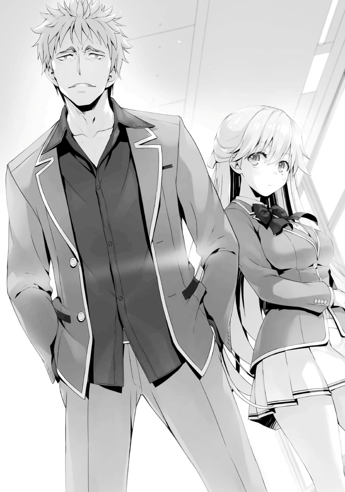
El dúo se presentó sólo por el apellido. Como complemento, el nombre completo del estudiante masculino es Housen Kazuomi, mientras que el de la chica es Nanase Tsubasa.
Ambos eran genuinos estudiantes de clase 1-D, tal como ella dijo que eran.
Estudiantes de la misma clase que no habíamos podido conocer ayer. Aunque su repentina aparición aquí fue definitivamente inesperada, para Horikita, fue tanto una bendición como una maldición. La razón es que no era exactamente una buena idea comenzar las negociaciones con ellos ahora, dada la presencia de los estudiantes de las otras clases.
—Para un par de nuevos estudiantes, los dos han hecho algo bastante drástico. Admiro su coraje.
—¿Hah? ¿Admiras qué? Maldita sea, eres muy arrogante, ¿no es cierto, perra?
—¿Crees que ella es la que es muy arrogante? Vete a la mierda con esa actitud descarada, imbécil de primero.
Housen se encendió contra Horikita, incitando a Sudou a encenderse también e interrumpir la conversación.
A pesar de que tenían más o menos la misma altura, la complexión de Housen era mayor, por lo que Sudou parecía pequeño en comparación.
—¿E+ en habilidad académica? Parece que eres tan retrasado como pareces.
—¿¡Quieres decir eso otra vez!?
Sudou se enfadó más, pero Housen lo ignoró y siguió hablando.
—Bueno, a la mierda. Parece que sólo hay un montón de idiotas de la clase D aquí. Funciona para mí.
—¿Y qué se supone que significa eso?
—Ustedes son la mierda en el fondo del barril. Ni siquiera pueden encontrar pareja sin rogarle a nuestra clase por ello. Así que voy a echarles una
mano a ustedes, retrasados incompetentes, ¿de acuerdo? ¿Entiendes lo que digo?
Housen respondió a la pregunta de Horikita y le planteó una, casi como si la estuviera probando.
—Entonces, ¿esencialmente estás diciendo que quieres asociarte con nosotros? Y sin embargo, ¿estás preguntando con una actitud arrogante como esta?
—No me digas que lo soy. Ustedes deberían ser los que nos piden que nos asociemos con ustedes. Les hice un favor a ustedes, idiotas, al arrastrarme hasta aquí —Housen la desafió, dejando de lado su punto de vista y afirmando el suyo—. Así que apúrense, pongan sus cabezas en el maldito piso y rueguen.
Mientras que ella impidió que Sudou dejara que su temperamento lo afectara, Horikita habló una vez más.
—Parece que estás malinterpretando algo. Nuestras posiciones son iguales.
Habló con más convicción que antes, sin prestar atención a la disparidad física entre Housen y ella misma.
—¿Igual? ¿Podrías dejar que ese amigo retrasado tuyo sea el único que escupa mierda?
—Estás en la clase D como nosotros. No eres diferente.
—Simplemente no lo entiendes. Si quisiéramos, podríamos hacer todo tipo de cosas a la basura como ustedes. No quieres que la mierda se te escape de las manos, ¿verdad? Si es así, entonces conoce tu lugar y empieza a mover la cola para mí.
Aparentemente, este tipo Housen ya había notado la ventaja especial que el primer año tenía contra nosotros.
—¿Y qué son estas 'cosas' que podrías hacernos?
Horikita debería haber sido consciente de cuál era la respuesta, pero aun así se atrevió a cuestionarlo, queriendo que Housen fuera quien lo dijera.
—Lo entiendes, ¿no? Tenemos los medios para controlar intencionalmente nuestros resultados en los exámenes.
Al escuchar sus palabras, Horikita se mordió el labio un poco.
—¿Eh? ¿Qué demonios estás diciendo?,¡bastardo de primero! ¡Tomar atajos en el examen hará que te echen de la escuela!
—Basta, Sudou-kun. Perder los estribos así de repente es un mal hábito tuyo.
—Pero...
Pude entender por qué la forma excesivamente agresiva de hablar de Housen hizo que Sudou quisiera enfadarse.
Sin embargo, lo que Housen estaba diciendo no era falso.
—Claro, las reglas dicen que te expulsarán si te atrapan arruinando el examen. Pero la pena que viene con no encontrar un compañero para el día del examen es diferente. Eso sólo es un problema para los de segundo, ¿sí?
Si se te acaba el tiempo, se elegirá un compañero al azar para ti.
Además, recibirás una penalización del 5% de tu puntuación total.
Como los estudiantes de segundo año tienen que enfrentar el peligro de expulsión, sentirán los efectos de esta penalización más que los de primer año.
—¿¡Es eso realmente cierto!?
Incapaz de creerlo, Sudou envió a Horikita una mirada que exigía una confirmación.
Pero la única cosa con la que Horikita podía responder era con un asentimiento.
—¿No se estrangularían haciendo eso? ¿Están realmente de acuerdo en sufrir pérdidas inmediatamente después de la inscripción?
Si incurren en una penalización, su oportunidad de conseguir más de 500 puntos se reducirá de forma natural.
—No será tan doloroso para nosotros como para ustedes del segundo año.
¿Verdad?
Housen buscó la confirmación de Nanase, que estaba de pie justo detrás de él.
—Sí. Se dice que no recibiremos puntos privados durante 3 meses, pero como mucho, sólo serán 240.000 puntos. No creo que sea un problema fatal.
—¿Lo entiendes ahora, Horikita-senpai?
Housen se puso de pie ante Horikita, una persona de una clase superior, como si fuera el de más alto rango.
Viendo eso, Sudou no pudo contenerse más.
Sin embargo, todavía tenía suficiente fuerza de voluntad para evitar dar un puñetazo, eligiendo en su lugar adoptar una postura imponente y agresiva delante de Horikita.
—¿Buscas pelea?
Housen desafió a Sudou sin siquiera un rastro de vacilación en su voz.
—Eres un engreído, ¿no?
—No pierdas la compostura, Sudou-kun. Eres muy consciente de cómo es esta escuela, ¿verdad?
No era sorprendente que los de primer año no supieran de esto, pero los pasillos estaban constantemente vigilados por la escuela.
Como las cámaras de vigilancia estaban siempre funcionando, si algo sucedía, la escuela desenterraba las imágenes para usarlas como evidencia.
—Yo sé...
Habiendo sido repetidamente advertido por Horikita, Sudou se retiró a pesar de su irritación.
Su mal genio era definitivamente uno de sus defectos, pero al menos estaba dispuesto a escuchar a Horikita.
Sudou se dio la vuelta y miró en dirección contraria a Housen, pero mientras lo hacía, Housen levantó su mano y lo empujó en el pecho.
—¿¡Woah!?
En ese momento, Sudou perdió el equilibrio y cayó de espaldas al suelo, sujetándose con las manos.
—¿Eres una perra arrogante? ¡Apenas te he tocado!
Ni siquiera los de segundo año que habían estado viendo cómo se desarrollaba la situación pudieron ocultar su sorpresa ante el comportamiento excesivamente imprudente de Housen.
Considerando lo inmensamente audaz que fue, no sería sorprendente si esto se considerara un acto de violencia.
Si hubiera comprendido la dificultad y el riesgo que conlleva el ejercicio de la violencia en esta escuela, nunca lo habría hecho.
Esta nueva camada de estudiantes de primer año aparentemente estaba más familiarizada con el funcionamiento interno de la escuela que las de años anteriores.
Si realmente sabían más sobre la escuela como Ryuuen afirmó ayer, entonces no tuve más remedio que decir que la conducta de Housen aquí había sido directamente imprudente.
¿No saben en realidad tanto sobre la escuela como yo pensaba que sabían?
No, ese no parecía ser el caso. Si ese fuera el caso...
—¡Hijo de puta!
A pesar de haber casi recuperado su compostura antes, Sudou se dio cuenta de lo que Housen le había hecho, y estaba a segundos de explotar con toda la furia que había guardado dentro.
Sin embargo, antes de que eso pudiera suceder, un joven que había estado observando la situación desde la distancia se interpuso entre ellos.
—¿Qué demonios estás haciendo?
Era Ishizaki Daichi de la clase 2-C. Aunque normalmente se le clasificaba como un delincuente que perdía rápidamente los estribos, también era un tipo con mucho corazón. Parecía que no podía contenerse más al ver la crueldad con la que Sudou, uno de sus compañeros, estaba siendo tratado.
—Estos chicos de segundo año siguen apareciendo como cucarachas.
Housen mostró una expresión divertida, mientras que la chica que se presentó como Nanase, con mucho tacto, le devolvió el control.
—¿No viniste aquí para tener una discusión, Housen-kun? Si viniste aquí porque querías ponerte violento, me iré.
—¿Violento? Sólo lo toqué como si fuera a acariciar un gato. Es mi culpa, Sudou.
Se dirigió al estudiante de segundo año delante de él sin usar honoríficos, casi como si le estuviera escupiendo.
—¡Oye! Ser un imbécil tiene sus límites, ¿entiendes?
Ishizaki extendió su brazo, buscando agarrar Housen por el cuello de su camisa.
En el momento en que vio el brazo moverse hacia él, las esquinas de la boca de Housen apenas se acercaron a una sonrisa.
—Ríndete a menos que quieras morir, Ishizaki.
El brazo de Ishizaki se detuvo en el aire, a sólo unos momentos de agarrar la camisa de Housen.
La advertencia había llegado nada menos que de Ryuuen, que al parecer también había estado observando la situación desde la barrera.
—¿¡Por qué me estás deteniendo!?
Ishizaki estaba visiblemente confundido por el hecho de que Ryuuen lo hubiera detenido.
—Pensar que intervendrías. ¿Qué estás haciendo?
Ibuki, una estudiante de la misma clase, también habló, sorprendida por la repentina implicación de Ryuuen.
Ryuuen no odiaba este tipo de enfrentamientos, ni mucho menos. Normalmente los recibía con los brazos abiertos.
Si el momento lo requería, no dudaba en lanzarse, sin importar si había cámaras de vigilancia o no.
Por lo que el hecho de impedir que la pelea ocurriera era tan inesperado.
Ryuuen envió a Ishizaki de vuelta, y luego procedió a acercarse a Housen él mismo.
—¿Así que ahora eres mi oponente? Pareces débil como un meado comparado con ese retrasado de Sudou de ahí.
Dado que el físico de Ryuuen no parecía tan grande o impresionante, Housen dijo lo que pensaba.
—He oído mucho sobre ti. Un tipo llamado 'Housen' era un poco una celebridad local de donde vengo. Sin embargo, nunca pensé que tendrías una cara tan retrasada.
Ryuuen insultó a Housen con la misma palabra que Housen había usado para insultar repetidamente a Sudou. Era realmente el típico comportamiento de Ryuuen. Normalmente, Ryuuen era el enemigo de nuestra clase, pero verlo tomar una posición en una confrontación como esta fue tranquilizador. De hecho, Sudou incluso había logrado controlarse con éxito gracias al cambio de atmósfera.
—¿Conoces a este tipo, Ryuuen-san?
—¿Acabas de decir Ryuuen?
La expresión facial de Housen cambió al escuchar el nombre de Ryuuen, su ligera sonrisa se convirtió en una amplia sonrisa.
—Oye, oye, ¿en serio? Esto debe ser el destino o algo así. He oído tantos rumores sobre ti que me ha fastidiado, Ryuuen.
—Parece que tienes suficientes células cerebrales para al menos recordar el nombre de alguien.
Aparentemente, los dos se conocían desde hacía bastante tiempo. Daba la impresión de que Housen era de algún lugar relativamente cercano a la ciudad natal de Ryuuen.
En cualquier caso, a juzgar por las interacciones entre Ryuuen, y sus compañeros de clase Ishizaki e Ibuki, parecía seguro decir que había resurgido por completo. Aunque había renunciado por un corto tiempo, tomó el mando de la clase 2-C de nuevo.
—Sin embargo, que Ryuuen tenga un cuerpo tan flaco... Qué decepción.
—Y supongo que eres tan musculoso como imaginaba.
—He ido a buscarte un montón de veces para darte una paliza, pero nunca nos encontramos. Estabas siendo una pequeña perra y escondiéndote de mí en ese entonces, ¿no es así? Te escapaste y dejaste todo el trabajo a tus subordinados, ¿o me equivoco?
—Kuku, el destino estaba de tu lado, Housen. Si te hubieras cruzado conmigo entonces, no serías tan egocéntrico como ahora. Parece que has tenido suerte ya que no sabes lo que es experimentar la derrota todavía.
—Estaba seguro de que sólo estabas huyendo con el rabo entre las piernas. Pero si dices que no es así, ¿qué tal si dejamos las cosas claras aquí y ahora?
Housen apretó su gran mano en un puño, mostrando su confianza.
Si Housen realmente conocía Ryuuen de sus días en la secundaria, su impresión no debería ser tan diferente de nuestras impresiones de él. ¿Quizás no veía a Ryuuen como alguien a quien no querrías hacerte enemigo?
—Relájate. No voy a intercambiar golpes con un gorila cuando no hay nada para mí.
A pesar de que se le ofreció una pelea, Ryuuen ignoró su provocación y se negó.
Por supuesto, fue porque no había forma de que pudiera luchar en un lugar como este, pero...
Ishizaki y los demás pensaron probablemente que Ryuuen aceptaría la oferta, aunque tuvieran que cambiar de lugar para hacerlo.
—¿Este tipo realmente da tanto miedo? Es más grande que Sudou y todo eso, pero...
—Quién sabe.
No parecía que Ryuuen tuviera intención de dar una respuesta ahora mismo.
Sólo dejó mostrar una ligera sonrisa antes de dar sus próximas instrucciones a sus compañeros.
—Terminemos por hoy.
—¿De verdad vas a dejar que un niño de primer año te mire así?
Ibuki sabía muy bien que Ryuuen era el tipo de persona que intercambiaría golpes con cualquiera, sin importar quién fuera, así que no pudo evitar preguntarle esto.
—¡Ja! Podemos resolver esto cuando queramos. No tiene que ser ahora.
Ryuuen respondió a Ibuki con una actitud completamente calmada y serena.
Aunque lo mejor hubiera sido que terminara con eso, Housen se adelantó, cerrando la distancia entre él y Ryuuen.
—¿Esa nena es también una de tus subordinadas?
Planteó esta pregunta a Ryuuen, después de observar cómo hablaban entre sí unos momentos antes.
—Bueno, algo así.
—¿Eh? ¿Quién? ¿Quién murió y te hizo mi jefe?
—¿Qué, hasta tienes nenas haciendo el trabajo sucio?
—Podría decirte lo mismo. Tú eres el que trajo esa linda muñeca tuya, ¿no?
De manera similar, Housen tenía a la chica llamada Nanase parada justo al lado de él.
—Ella no es mi subordinada. Bueno, me importa un carajo de cualquier manera. Llevemos esto afuera, Ryuuen.
—Te dije que no voy a hacer eso.
No importa cuántas veces Housen lo provocara, Ryuuen no se dejaría atrapar por ello.
Y, como para simbolizar eso, le dio la espalda a Housen, demostrando su intención de retirarse.
—¿Así que esas tenemos? Bueno, entonces...
Ryuuen no picaba, y Housen no parecía encontrarlo muy divertido. De repente, casualmente extendió su brazo hacia Ibuki. Ella intentó apartar su brazo mientras lo hacía, pero...
Justo antes de que ella pudiera apartarle el brazo, los movimientos de Housen se aceleraron, y él le puso la mano alrededor del cuello y la levantó en el aire.
—¿¡…!?
Ibuki intentó frenéticamente apartar su brazo mientras la respuesta de lucha o huida inundaba su cerebro.
Sin embargo, Housen sonrió sin miedo, su brazo se mantuvo firme como si hubiera sido fundido en acero.
Ryuuen se dio la vuelta, tomando nota de lo que le estaba pasando a Ibuki.
Ella hizo todo lo que pudo con sus manos y piernas para tratar de escapar, pero Housen no se movió en lo más mínimo.
—¡Haha! Sólo intenta escapar, chica. Eso, o no me importa si todos ustedes espectadores cobardes vienen a mí también.
En lugar de valentía, su expresión exudaba un aura de absoluta confianza en sí mismo.
Dicho esto, involucrarse en la situación tampoco era una decisión fácil de tomar.
Si se causara una conmoción en un lugar como éste, la escuela naturalmente terminaría por enterarse de ello. Dado que la escuela inevitablemente se involucraría, nadie hizo nada. Nadie, es decir, excepto por Ryuuen, que dio un paso adelante a pesar de la sorpresa. Se puso delante de Housen, no tanto para golpearlo como para salvar a Ibuki. Ryuuen pateó a Housen repetidamente, pero Housen se encogió de hombros casualmente a pesar de que su movimiento estaba restringido con una de sus manos alrededor del cuello de Ibuki.
—¡Bastardo!
En ese momento, Ishizaki, a quien Ryuuen le había dicho previamente que se detuviera, se unió también.
Se estaba convirtiendo en el tipo de conmoción que hacía difícil imaginar que estábamos en el pasillo de una escuela.
—¡Sí... sí! ¡Valió la pena venir hasta esta escuela después de todo!
Una pelea en toda regla podría empezar en cualquier momento.
Sin embargo, Nanase, que había estado observando en silencio todo el tiempo, abrió la boca.
—Por favor, detente, Housen-kun.
Housen estaba haciendo un espectáculo al enfrentarse a dos oponentes a pesar de estar en desventaja por su control sobre Ibuki, pero cuando su compañera de clase Nanase le llamó, el espectáculo se detuvo.
—¿Qué acabas de decir?
En lugar de seguir obedientemente su petición, hizo una demostración de su irritación por el hecho de que ella interfiriera.
—Los estudiantes mayores han estado preocupados por las cámaras de vigilancia desde hace un tiempo. Basada en las circunstancias, he determinado que no hay nada que ganar atacando aquí.
—No me digas. Eso ya lo sé. Es por eso que estoy jodiendo con ellos, ¿de acuerdo?
Admitió que era consciente de que nuestras acciones estaban limitadas por las cámaras de vigilancia.
En cuyo caso, la serie de acciones que Housen había llevado a cabo aquí era todavía incomprensible.
Housen ignoró la petición de Nanase y volvió a centrar su atención en la lucha que se desarrollaba ante él. En ese punto, sin embargo, Nanase se volvió aún más contundente con sus palabras.
—Si sabes lo que haces, entonces es una razón más para detenerte. Si sigues perdiendo el tiempo con esta inútil disputa, tomaré el asunto en mis manos. Tengo que considerar si debo o no decirle a todo el mundo sobre 'eso', aquí y ahora.
Al escucharla mencionar el término abstracto 'eso', Housen se detuvo por segunda vez.
Luego, con una mirada aburrida y tediosa, aflojó su agarre, dejando caer a Ibuki al suelo, tosiendo violentamente mientras lo hacía.
—Bien, Nanase. Pero ten en cuenta que si traicionas mis expectativas, no tendré piedad, ni siquiera con una chica como tú.
—Con gusto te aceptaré cuando llegue el momento.
Por mucho que Housen la intimidara, Nanase seguía hablando con confianza.
Parecía tan tranquila y serena que el hecho de estar frente a las aulas de segundo año no parecía importarle.
Sin embargo, este tipo de Housen no era una persona común. Entre todos los estudiantes de segundo año, había un buen número que estaba orgulloso de sus habilidades de combate. Había tipos como Ryuuen, Sudou, y Albert. Sin embargo, a pesar de ser un estudiante de primer año, podía decir por un simple vistazo que Housen era el verdadero desafío. Aunque lo enfrente, probablemente no sería capaz de mantenerlo bajo control. Como sólo había visto un atisbo de lo que era capaz de hacer, no podía ni siquiera predecir lo que pasaría si se esforzaba al máximo. La razón por la que Ryuuen trató de evitar que Ishizaki actuara de forma descuidada fue porque consideró que participar en una simple pelea a puñetazos les pondría en desventaja. Un escandaloso de primer año había llegado.
—Me detendré. Hicimos lo que vinimos a buscar. Vámonos de aquí, Nanase.
—Sí. Es una sabia decisión.
Aparentemente satisfechos con todo excepto con la pelea, Housen se dio la vuelta y miró por última vez a Ryuuen.
—Si te postras ante mí, supongo que podría dejar que te emparejes conmigo, Ryuuen-senpai.
—Lo siento, pero sólo trabajo con humanos. No tengo intención de estar con un gorila salvaje.
—Qué lástima.
Sin embargo, este inesperado giro de los acontecimientos no terminó con eso.
Porque, además de Housen y Nanase, había otro estudiante de primer año que observó cómo se desarrollaba la situación todo el tiempo.
Este estudiante seguramente había puesto de los nervios a Housen, ya que al final dirigió su atención a ellos.
—¿Vas a escabullirte y sólo mirar, cabrón?
—Un hombre sabio se mantiene alejado del peligro. ¿Quizás nunca has oído el proverbio?
Con eso, el chico de primer año esquivó elocuentemente la pregunta del frustrado Housen.
—Una conversación amistosa es una cosa, pero no es muy buena idea que causes más problemas aquí, Housen-kun. Creo que deberías ser el primero en retirarte. ¿No estás de acuerdo?
Mientras el chico decía esas palabras a modo de consejo, un adulto finalmente llegó al pasillo.
—¿Qué estás haciendo aquí, Housen?
Un hombre vestido con un traje llegó para romper el tumulto de los estudiantes.
Y, cuando el hombre habló, muchos de los estudiantes de segundo año que habían estado observando desde el margen huyeron a sus aulas.
—Housen, entiendo que te sientas inquieto, pero estoy seguro de que te han acosado con las reglas de la escuela hasta el punto de que te duelen los oídos.
—Sí, sí, lo entiendo.
—Si realmente lo entiendes, entonces ve y márchate. No deberías pelear en los pasillos.
—Esta mierda ni siquiera fue una pelea.
Con una risa desdeñosa, Housen metió las manos en sus bolsillos y se dio la vuelta.
Se había echado atrás inesperadamente con facilidad, dando la orden de que Nanase se retirara también.
—Te veré más tarde, Horikita.
Housen dejó caer expresamente el nombre de Horikita antes de irse... no, más bien, era más bien como si le dijera esto a la clase 2-D en su conjunto.
—Lamento el disturbio.
Con eso, Nanase inclinó su cabeza en una disculpa final, poniendo fin a la situación con éxito.
Y luego, cuando levantó la cabeza, me miró una vez más antes de irse. Fue la misma mirada que me dio cuando llegó aquí. Es decir, una mirada inquisitiva que parecía como si estuviera buscando algo.
Pero, tan pronto como me di cuenta de que me estaba mirando, inmediatamente apartó la mirada y corrió tras Housen.
—Debo disculparme con todos ustedes. Los estudiantes de mi clase les han causado problemas.
El profesor se disculpó con Horikita, que había estado observando la situación desde cerca.
—No...
—Mientras estoy en ello, por favor permítanme presentarme. Soy el que ha sido puesto a cargo de la clase 1-D, Shiba Katsunori. Aunque acabo de llegar a esta escuela, estoy deseando conocerlos de cara al futuro.
Después de una breve presentación, Shiba-sensei se dio la vuelta para seguir a Housen y Nanase.
Entonces, como si quisiera cambiar de lugar con Shiba-sensei, el elocuente estudiante de primer año que se defendió de Housen vino y se inclinó ante los de segundo año.
—Parece que mi compañero, Housen-kun, salió y molestó a los estudiantes mayores. Les presentaré otra disculpa en nombre del cuerpo estudiantil de primer año.
A diferencia de Housen, parecía ser un estudiante muy versado en el arte de la comunicación.
—Los alumnos de primer año aún no entendemos realmente todo esto de los exámenes especiales. Pido disculpas por las molestias, pero les agradeceríamos que cuidaran de nosotros.
Después de terminar con su presentación de disculpas, el estudiante comenzó a girar la cabeza, dando a entender que él también estaba a punto de irse.
Pero entonces, de repente notó algo, o mejor dicho, alguien.
Un pequeño grupo de chicas de la clase 2-D acababa de regresar de almorzar juntas.
Constaba de cuatro personas: Matsushita, Kushida, Satou, y Mii-chan.
Miró a una de ellas, Kushida, con una expresión de sorpresa en su cara.
—Todos parecen un poco agitados. ¿Qué pasó, Horikita-san?
A pesar de notar la presencia del estudiante, Kushida se acercó a Horikita, curiosa por saber qué había ocurrido aquí.
—No hay nada de lo que tengan que preocuparse.
—¿De verdad?
A la respuesta de Horikita, Kushida se encogió de hombros, lista para regresar al salón de clases junto con sus amigas.
—Uhm... ¿Eres Kushida-senpai, por casualidad?
—¿Eh?
Habiendo escuchado a alguien hablarle, Kushida se dio la vuelta. Me pregunté si el hecho de que el estudiante supiera el nombre de Kushida significaba que eran conocidos del pasado, pero...
—¿Erm?
Kushida lo miró con visible confusión en sus ojos. La atmósfera entre ellos parecía no dejar espacio para la familiaridad.
—¿No me reconoces? Supongo que es comprensible si no lo haces pero, soy yo, Yagami Takuya.
Después de oír su nombre, Kushida lo pensó un poco antes de darse cuenta.
—Yamagi... ¡Ah! ¿¡Ese Yagami-kun!?
—En efecto, ese Yagami. Ha pasado mucho tiempo, ¿verdad?
—¡Así que tú también viniste a esta escuela, Yagami-kun! ¡Qué asombrosa coincidencia!
—¡Ciertamente nunca pensé que volvería a ver a Kushida-senpai aquí!
—¿Ustedes dos se conocen?
Preguntó con curiosidad Satou, a lo que Kushida asintió con la cabeza.
—Sí. Aunque, casi nunca hemos interactuado. Yagami Takuya-kun. Me dio la impresión de que era increíblemente inteligente. Pero nunca nos dijimos mucho más allá de los saludos porque estábamos en años escolares diferentes.
—¿Sabes algo de esto?
Le susurré a Horikita para comprobar lo que sabía y ella respondió inmediatamente.
—Bueno, en realidad no.
—No pareces recordar mucho de tus antiguos compañeros de clase,
¿verdad?
—No te equivocas. En aquel entonces, no tenía tiempo para prestar atención a la gente que no me interesaba.
Aparentemente, ella realmente no recordaba... o mejor dicho, ni siquiera le prestaba atención.
Dado que ni siquiera se molestaba en prestar atención a sus compañeros de clase, no había manera de que recordara a un estudiante de clase inferior.
Aunque Kushida no lo recordara al principio, un chico no podría olvidar a Kushida una vez que la hubieran visto.
Después de todo, así de llamativa es su apariencia.
—Soy muy afortunado de asistir otra vez a la misma escuela que Kushida-senpai, a quien admiré tanto.
—Eso es demasiado...
Kushida respondió con humildad. Sin embargo, si realmente fue a la misma secundaria que Yagami, algunas preocupaciones vinieron a la mente.
—¿Sabe este chico Yagami sobre el 'ya sabes qué'?
Le susurré a Horikita una vez más. Mi uso del término 'ya sabes qué' se refería, por supuesto, al pasado de Kushida.
En su época de secundaria, Kushida causó la destrucción de su clase.
Además, veía a Horikita, alguien que había ido a la escuela junto con ella y que sabía la verdad sobre lo que había pasado, como su enemiga. Esto se debe a que Kushida sintió que era peligroso que alguien supiera de lo que era capaz, y como resultado quería deshacerse de Horikita.
Como él también había ido a la misma secundaria, no sería extraño que Yagami supiera la historia también, pero...
—No me sorprendería si lo hiciera, pero de cualquier manera no hay garantía.
En ese caso, la presencia de Yagami aquí no era muy tranquilizadora en lo que respecta a Kushida.
Ya que había gente que venía de la misma secundaria en nuestro grado, tenía sentido que la gente de la misma escuela pudiera estar en los otros grados también.
—Sé que esto es repentino, pero si eres tú, Kushida-senpai, entonces no tendría ninguna queja. ¿Estarías dispuesta a asociarte conmigo?
Aunque acababa de volver a verla, Yagami hizo su oferta, extendiendo su mano con una sonrisa en su cara.
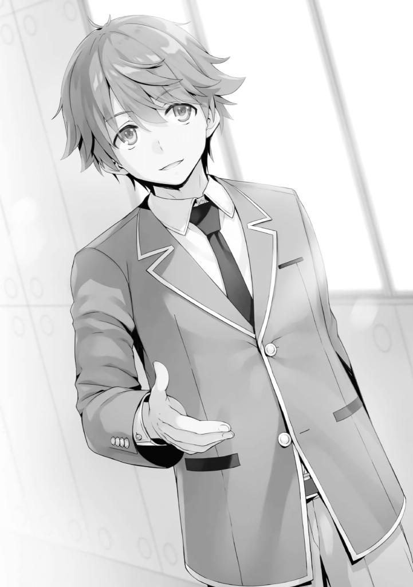
¿Intentaba enfatizar que no sabía nada de su pasado? ¿O era que no importaba aunque lo supiera?
—¿Estarías realmente bien con alguien como yo? Deberías emparejarte con alguien que sea mejor en los estudios, Yagami-kun.
La calificación de la habilidad académica de Yagami Takuya era una A, es decir, nada menos que impecable, por lo que la modestia de Kushida era comprensible.
Horikita, que estaba jugando con su celular a mi lado, buscaba confirmar su calificación por sí misma en la aplicación OAA.
¿Intentaba enfatizar que no sabía nada de su pasado? ¿O era que no importaba Horikita, que estaba manipulando su teléfono móvil a mi lado, buscaba confirmar su calificación por sí misma en la aplicación de la OAA.
—No conozco nada en esta escuela todavía, así que me gustaría asociarme con alguien en quien pueda confiar.
Aunque la aplicación podría hablarte de los estudios de alguien, no te diría nada sobre su personalidad.
Siendo así, Yagami probablemente decidió que sería mejor elegir a alguien que supiera que produciría resultados confiables.
—Erm, bueno, déjame pensarlo un poco, ¿supongo...?
No estaba claro si era porque desconfiaba de Yagami, o había alguna otra razón, pero Kushida decidió poner su oferta en espera por el momento.
—Por supuesto. Esperaré para asociarme con alguien y aguardaré pacientemente tu respuesta, Kushida-senpai.
Con una calificación de A en Habilidad Académica, no había necesidad de que encontrara un compañero inmediatamente.
Por lo tanto, Yagami aceptó con calma su petición.
—Maldición, qué suerte. No habría dudado en emparejarme contigo si fuera yo...
Dada su calificación E+, Sudou parecía celoso de la capacidad de Kushida para elegir con quién se emparejaría.
—Entonces deberías esforzarte más en avanzar.
—¡Definitivamente obtendré mejores calificaciones!
Anhelaba mejorar, insatisfecho por quedarse donde estaba ahora.
Me distancié de Horikita y de los demás por un momento.
Fue porque vi a Haruka haciéndome señas para que me acercara a donde ella estaba parada.
Estaba junto con el resto de los miembros del Grupo Ayanokouji: Akito, Keisei y Sakura.
—E-él era súper temible, ¿eh?
Lo primero que escuché después de unirme a ellos fue la impresión de Airi de Housen.
—Se siente como si hubiera un montón de alborotadores como Sudou-kun y Ryuuen-kun en esta nueva generación de primer año, ¿eh?
Después de ver toda la odisea desde la distancia, Haruka habló, con sus palabras llenas de exasperación.
A su lado estaba Akito, que miraba inmóvil al final del pasillo donde Housen había desaparecido.
—¿Miyachi? ¿Qué pasa?
—Un tipo increíble se acaba de inscribir aquí. Esta escuela podría ser bastante tormentosa en el futuro. Ese tipo... Housen es tan fuerte que Sudou y Ryuuen ni siquiera se pueden comparar con él.
—¿Qué? ¿Tú también lo conoces, Miyachi?
—Nunca lo he visto en persona ni nada, pero Ryuuen y Housen son bastante famosos en el lugar de donde vengo.
Al parecer Akito solía vivir cerca de las escuelas secundarias a las que Ryuuen y Housen asistían.
—En pocas palabras, el líder de la pandilla en mi escuela estaba bastante confiado en sus habilidades de pelea, pero un día algo sucedió y el tipo simplemente desapareció de repente. No mucho después de eso, empecé a oír historias sobre cómo un alumno de primer año de secundaria llamado Housen le había dado una paliza en un uno contra uno y lo había mandado al hospital a pesar de ser dos años menor que él.
—¿Líder de pandillas? ¡Esto es como algo sacado directamente de uno de esos mangas de delincuentes! Es como, un poco espeluznante.
—El lugar del que vengo es famoso por cómo siempre atrae a todo tipo de delincuentes.
—Eh...
Akito había estado usando muchas palabras que Haruka no había oído muy a menudo, así que parecía un poco desconcertada.
—Y así como así, Housen dio la vuelta, apretando su control en cada una de las secundarias de la zona, una tras otra.
—¿No es Ryuuen-kun famoso también? Aunque pareció que esta era la primera vez que esos dos se encontraban.
—Tengo la sensación de que nunca se encontraron, eso es todo.
—Dime, ¿también eras un delincuente, Miyachi?
—Yo... he dejado de hacer ese tipo de cosas. Soy un buen estudiante en estos días.
—Así que eras un delincuente también.
—...Tuve muy mal carácter hasta el segundo año de la secundaria. Desde entonces lo canalizo todo en el tiro con arco.
—Así que, en otras palabras, estás diciendo que eras un delincuente,
¿verdad?
Akito se rascó la cabeza incómodamente mientras Haruka lo acosaba constantemente con preguntas extrañas.
—¿Es eso algo malo?
—No realmente. En vez de eso, es como, algo súper genial, ¿no?
—No es para nada genial.
La razón por la que Akito estaba tan bien informado en lo que respecta a las peleas era porque había estado en ambos lados del asunto antes. Era cierto que ya habíamos visto cosas de él que lo sugerían, desde sus nervios de acero hasta la agilidad de sus movimientos.
—Ya que eres un antiguo delincuente, ¿qué tal si vas y le muestras a Housen qué es qué?
—Deja de bromear. Yo soy de los que eligen a mi oponente antes de pelear con alguien, y no hay manera de que elija pelear con Housen.
Akito levantó una bandera blanca antes de que la pelea tuviera lugar. Sus palabras y conducta fueron tales que, en lugar de admitir su propia debilidad, enfatizó y reconoció la fuerza de Housen.
Ibuki también tenía un buen sentido del combate, pero antes no pudo hacer nada para detener a Housen.
La diferencia en sus físicos era abrumadora. Además, tampoco había sido rival para él en términos de velocidad.
Parte 3
Después de clases, Horikita se me acercó, igual que ayer.
Cuando estábamos a punto de salir de la clase juntos, Sudou llegó, esforzándose por acompañarnos. Aunque Horikita trató de rechazarlo como lo hizo la última vez, al parecer fue persuadida por su deseo de ayudarle hasta que lograra encontrar una pareja. Ella aceptó con la condición de que no se interpusiera en sus estudios o en su participación en las actividades del club, y
comenzó a actuar desde allí. Para que Horikita fuera tan gentil, o quizás debería decir que aceptara, ciertamente se sintió como algo inesperado.
Sin embargo, probablemente había una razón perfectamente válida para ello.
Sólo quedaban unos diez días para el examen especial. Dada la alta dificultad de los exámenes escritos, sería ideal que Sudou garantizara un tiempo y un lugar en el que pudiera concentrarse en sus estudios, aunque fuera sólo un poco.
Pero, si siempre está preocupado por los movimientos de Horikita, no será capaz de concentrarse. Está claro que Horikita quiere encontrar un compañero para Sudou tan pronto como sea posible, para que pueda tener tiempo de concentrarse en sus estudios.
Aunque Horikita tenía una sólida comprensión del hombre llamado Sudou Ken, había un aspecto crucial que aún tenía que entender. Concretamente, los sentimientos de Sudou por ella. No se había dado cuenta de que había una razón por la que él siempre quería estar a su lado.
Por supuesto, no había manera de que le señalara esto a ella. Después de todo, era uno de los motivadores más importantes de Sudou.
En lugar de dirigirse a las aulas de primer año, Horikita nos llevó en dirección al centro comercial Keyaki.
Tal vez fue porque los estudiantes de primer año habían causado problemas en el área de segundo año durante el almuerzo de hoy.
Estaba siendo considerada para asegurarse de que un desarrollo similar no volviera a ocurrir.
O tal vez había decidido no hacerlo por Housen, el niño problemático de la clase 1-D.
De cualquier manera, lo averiguaría muy pronto.
—Tengo que decir, que hay mucho que hacer aquí. Estos nuevos estudiantes están haciendo mucho ruido.
Tan pronto como entramos en el centro comercial, Sudou se metió el dedo meñique izquierdo en el oído, aparentemente irritado.
Habló sin rodeos, compartiendo su impresión de los estudiantes de primer año que se extendían ante él.
—Ciertamente hay un montón de estudiantes merodeando, ¿no es así?
Estaban por todas partes, charlando felizmente entre ellos sobre lo que les gustaría comprar o comer.
—Y aun así estoy aquí buscando en serio una pareja.
Dedicar varios días a buscar pareja no sólo era una buena idea para los estudiantes de segundo año, sino también para los de primero. Sin embargo, había una gran discrepancia entre los estudiantes de los dos grados.
Es decir, la diferencia en nuestra comprensión de los exámenes especiales.
Muy pocos de los estudiantes de primer año sintieron la urgencia, como los estudiantes que vimos ayer después de clases.
Esto se hizo aún más pronunciado después de que dejamos el campus.
—Es comprensible, ¿no? No es diferente de como era cuando estábamos en primer año.
—Supongo que es verdad...
Los estudiantes recibieron una gran suma de puntos privados justo después de venir a la escuela, y naturalmente pasaban sus días disfrutando de la diversión.
Incluso si eran de la clase A, no había mucha diferencia.
No importaba el método, el grado en que se complacían era el mismo.
Lo más problemático de todo esto era la diferencia en los castigos para los estudiantes de primer y segundo año.
Comparado con la expulsión, los de primer año sólo tendrían que sufrir tres meses sin puntos privados.
—Sólo míralos, jugueteando sin ninguna preocupación en el mundo.
—No tienes derecho a hablar, Sudou-kun. ¿Ya has olvidado cómo eras en tu primer año?
—No lo he olvidado... he reflexionado mucho sobre ello, ¿bien?
Después de todo, fue el primer estudiante en estar bajo amenaza de expulsión.
Sin embargo, las medidas de ayuda que usamos para salvarlo en ese entonces ya no estaban disponibles para nosotros.
Los privilegios que venían con el hecho de ser nuevo se habían agotado hace tiempo.
—Por el momento, ¿qué tal si tratamos de contactar con algunos de ellos?
Dijo Horikita, viendo a un grupo de tres estudiantes varones de primer año sentados juntos en uno de los bancos del centro comercial, bromeando entre ellos.
Sus nombres eran Kaga, Mikami y Shiratori. Los tres eran estudiantes de la clase 1-D con calificaciones de Habilidad Académica de B- o superior. Antes de llegar a ellos, Horikita se aseguró de buscarlos en la aplicación, por si acaso.
Pareciera que todavía buscaba ir tras los estudiantes de la clase 1-D.
—¿Podría molestarlos por un segundo?
—... ¿Qué pasa?
Seguramente se dieron cuenta de que se les acercaban los alumnos de la clase superior con sólo mirarnos.
Sus expresiones de aspecto alegre se habían desvanecido, reemplazadas en su lugar por vigilancia y precaución.
—Estamos buscando parejas para el próximo examen especial. Ustedes no tienen pareja todavía, ¿verdad?
—Eh, ah, sí. No nos hemos emparejado con nadie todavía.
—Si no les importa, ¿podríamos discutirlo bajo la premisa de emparejarnos?
—No nos importa en absoluto. ¿Verdad, chicos?
Después de escuchar nuestra propuesta, los tres asintieron como si lo hubieran discutido de antemano. Fue una respuesta inesperadamente buena, y se sintió como si hubieran bajado un poco la guardia.
Sudou también se sorprendió por su actitud favorable, dejando ver una expresión ligeramente sorprendida.
—Sin embargo, siento mucho decir esto, pero nuestra principal prioridad ahora mismo es encontrar...
—Compañeros que pueden evitar que aquellos de ustedes con bajas calificaciones de habilidad académica sean expulsados, ¿verdad?
Tal parece que esta noción ya se había extendido entre los alumnos de primer año.
—Sí. Si ustedes ya están al tanto de eso, entonces nuestra discusión será mucho más fácil.
—Veamos... ¿así que te gustaría que uno de nosotros se asociara con...
Sudou-senpai?
Hablaron con confianza ya que también revisaron nuestros perfiles OAA en sus teléfonos.
—Así es. Él es uno de ellos. Aunque hay varios más.
—Ah, ya veo. ¿Así que su calificación de Habilidad Académica es una E+...? Esto podría ser difícil.
Las palabras que eligió fueron discretas, pero estaba claro que estaba enfatizando el bajo rendimiento académico de Sudou.
Si bien todo lo que se dijo el de primer año era cierto, Sudou todavía parecía un poco molesto, pero de alguna manera apenas pudo evitar que se le viera en la cara.
—Si eres tú, Shiratori, debería estar bien, ¿verdad?
Kaga y Mikami volvieron a centrar su atención en Shiratori, que estaba sentada en el extremo derecho del banco.
—Tal como está ahora, mi calificación de Habilidad Académica es una A.
—Así parece. Si estás dispuesto a asociarte con él, entonces no tengo nada más que decir.
—Muy bien, entonces... ¿qué tal esto?
Shiratori hizo un gesto hacia Horikita, mostrándole su mano con los cinco dedos levantados mientras hacía su propuesta.
Por un momento, Horikita no entendió lo que quería decir, así que echó un vistazo a Sudou y a mí. Esto hizo que Shiratori hablara de nuevo.
—Oh Dios. Quieres que nos asociemos, ¿verdad? Si es así, un cierto algo es absolutamente necesario, ¿no crees?
Al escuchar esas palabras, Horikita finalmente entendió.
—...Supongo que te refieres a puntos privados?
—Por supuesto. Si me asociara con alguien inteligente, podría aspirar al primer puesto. Ya que estaría renunciando a las recompensas potenciales que vienen con la llegada a la cima al asociarme con alguien que tiene un bajo índice de Habilidad Académica, es natural que haya una compensación, ¿no lo crees?
—¿Qué? ¿Quieres quitarnos puntos? ¿Y 50.000 puntos por eso...? ¡Eso es demasiado!
Para Sudou, que había llevado una vida en la que estaba constantemente bajo de recursos, esta era una cantidad escandalosa de puntos.
—Senpai, por favor, deja de bromear. ¿Cómo podría aceptar 50.000?
—¿Ah?
—500,000. Si me das 500.000 puntos, estaré encantado de asociarme contigo aquí y ahora.
—¿¡Quinientos mil!?
—Habrá consecuencias si alguien es expulsado de tu clase, ¿verdad?
También hemos hecho nuestra parte de investigación sobre esto.
Era evidente que había una gran diferencia entre los alumnos de primer año actuales y los del año pasado.
Ya habían empezado a entender la estructura del sistema escolar y, además, conocían el valor que ellos mismos aportaban.
Entre los que estamos aquí, era difícil saber quién era de la clase superior y quién de la inferior.
Así es como se podría interpretar la situación.
—No te equivocas en que emparejarse con alguien que tiene un nivel de habilidad académica más bajo requeriría algún grado de compensación.
—…Hey, Suzune, no tengo ni siquiera cerca de 500.000 puntos.
—Ya lo sé, así que cállate un segundo.
Los tres estudiantes de primer año tenían sonrisas tensas en su cara una vez que escucharon a Sudou filtrar descuidadamente su pobre situación financiera.
—Es natural desear puntos, ¿pero realmente vale la pena perseguir la codicia mezquina?
—¿Qué estás diciendo?
Shiratori, como representante de los tres, pidió a Horikita que lo explicara.
—Lo que quiero decir es que, si nos hicieras un favor, podríamos ayudarte en una situación similar más adelante.
Horikita estaba tratando de persuadirlos de que, si hacían un préstamo que no involucrara puntos privados, se pondrían en ventaja en el futuro.
—Aparte de Horikita-senpai, que tiene una A en Habilidad Académica, no puedo imaginar que Sudou-senpai o Ayanokouji-senpai nos ayuden mucho.
—Eso no es necesariamente cierto. Hay más en esta escuela que sólo lo académico. También hay momentos en los que se requiere habilidad atlética.
Esto era particularmente aplicable a Sudou, ya que era el único estudiante de segundo año que tenía una calificación de A+ en Habilidad Física.
Horikita buscaba usar esto como un arma, pero...
—Lo sé, pero al final del día ustedes siguen siendo la Clase D, ¿verdad?
Si yo buscara conseguir favores, preferiría buscar la clase A o la B.
Shiratori respondió, habiendo llegado a conclusiones tranquilas y objetivas.
En este punto, Horikita probablemente también lo entendió.
—...Ya veo. Así que es así, ¿eh?
Teniendo en cuenta el número de puntos privados implicados y lo bien que habían manejado nuestra oferta, no era necesario pensar en ello muy profundamente.
—¿Qué significa eso?
—Antes de que llegaran, fuimos consultados por otra clase de estudiantes de segundo año.
—Y te dijeron que no vendieras tu capacidad académica por poco dinero,
¿verdad?
—Sí. Por favor, sepan que no nos asociaremos con ustedes si no pueden ofrecer un número adecuado de puntos.
A pesar de enfrentarse a un rechazo tan claro de Shiratori y sus amigos, Horikita no se echó atrás.
—Si ese es el caso, entonces es cierto que no pueden venderse tan barato.
Sin embargo, me pregunto si realmente se acercaron a ti de verdad.
—¿A qué te refieres?
La expresión de Shiratori parecía algo descontenta, como si su orgullo, que venía con su habilidad académica de nivel A, hubiera sido herido.
—Ustedes están en la clase D, igual que nosotros. No creo que las clases de mayor rango se les hayan acercado tan fácilmente.
Este era el farol de Horikita. Si uno tenía un alto grado de Habilidad Académica, sería útil en este examen, incluso si era un estudiante de la Clase D.
Ella había dicho esto para confirmar quién era el que se había acercado a ellos, y los detalles de lo que se había dicho.
Shiratori se opuso a su afirmación en un tono ligeramente áspero, habiendo sido instigado aparentemente debido a su orgullo herido.
—Es cierto. Fuimos invitados por Hashimoto-senpai de la clase 2-A. Y, también se nos acercó la clase 2-C, ofreciéndonos una justa suma de puntos para asociarnos con ellos. ¿Verdad, chicos?
Los otros dos asintieron con la cabeza.
—Y no somos sólo nosotros. Prácticamente todos los inteligentes de por ahí ya fueron abordados.
Los que buscaban comprarlos eran Clase 2-A y Clase 2-C, tal como Horikita había predicho.
—Ya veo... En cuyo caso, no hay manera de que respondamos a sus expectativas en este momento.
—Ah, pero no te rechazaremos si tienes los puntos para ello. Estaremos observando la situación durante la próxima semana más o menos. Si puedes ofrecer 500.000 puntos en ese tiempo, estaremos encantados de asociarnos, incluso con alguien como Sudou-senpai.
500.000 puntos privados. La cantidad que se necesitaría para asegurar que no tengas que enfrentarte a la expulsión.
Es una gran suma, pero desde otro punto de vista, es el precio de comprar tu seguridad.
Sin embargo, no se podía tomar una decisión definitiva en este momento, ni debería hacerse.
—Por cierto... ¿cuántos puntos te ofrecieron Hashimoto-kun y los otros?
Quería saber exactamente cuántos puntos había sobre la mesa, pero Shiratori y los demás no eran tan ingenuos.
—Prometimos no compartir esa información. Lo único que diré es que, si tienes 500.000 puntos, te ayudaremos gustosamente.
—Entiendo. Lo tendré en cuenta. En cualquier caso, ¿podría pedirles un favor a los tres? ¿Podrían presentarnos a algunos de sus otros compañeros de clase?
—¿Presentarlos?
—Ya tenemos planeado cooperar con su clase, al menos hasta cierto punto. Pero tomará mucho tiempo y esfuerzo acercarse a cada uno de ustedes uno por uno y explicarles las mismas cosas desde el principio. Si es posible, esperaba que ustedes pudieran reunir a algunas personas y que pudiéramos tener una discusión concreta a partir de ahí.
Se refirió brevemente a la idea de trabajar juntos, pero no articuló de qué se trataba exactamente.
Los tres intercambiaron miradas entre ellos, pero sus expresiones faciales parecían un poco avergonzadas.
—Eso... confiarnos algo así... será un poco difícil, ¿verdad chicos?
—Sí. Si nos adelantáramos y lo hiciéramos por nuestra cuenta, Housen-kun seguramente se enfadará con nosotros.
El nombre 'Housen' surgió cuando los tres discutieron el tema.
Por sus palabras y su comportamiento, me di cuenta del miedo que le tenían.
—Lo siento Senpai, pero ¿podrías por favor pedirle esto a alguien más...?
Por supuesto, ese tipo era el que tenía la llave de la clase 1-D.
Habiendo notado el obvio cambio de atmósfera, Horikita decidió no seguir con el asunto.
—Gracias. Me pondré en contacto con ustedes si necesito algo más.
—O-ok. Estaremos esperando.
Nos alejamos del banco y nos dirigimos al café del segundo piso del centro comercial. Miré discretamente detrás de nosotros mientras íbamos, sólo para ver a Shiratori haciendo una llamada apresurada con su teléfono.
—Aunque conseguimos algo de información, es difícil decir que hayamos hecho algún progreso real. Lo único de lo que estoy segura es de que cooperarán siempre que les demos la absurda suma de 500.000 puntos.
—Realmente se están aprovechando de nosotros con estos ridículos requisitos y todo eso.
—Es una ridícula suma de puntos, eso es seguro. Pero al final del día, tampoco hay razón para que se vendan baratos.
No venderse barato era aún más importante para aquellos que habían obtenido una calificación A en Habilidad Académica.
Comparado con la meta de los 100.000 puntos que obtendrías al llegar a la cima del examen, este era un método mucho mejor.
—Entonces, ¿la única forma de salvarme es pagando a alguien con puntos privados?
—Es difícil decir que habrá alguien dispuesto a ayudarte gratis.
La noción de que los puntos eran necesarios para establecer relaciones ya se había extendido en la mentalidad de los estudiantes. Era mejor asumir que no sólo Shiratori y sus amigos, sino todo el cuerpo estudiantil de primer año conocía el sistema de intercambio de puntos privados. Todo esto era muy probablemente parte de la estrategia de Sakayanagi y Ryuuen. Normalmente, el intercambio de puntos por favores era menospreciado y hacerlo debería, en teoría, hacerse en secreto. Sin embargo, ahora que las tácticas de compra a gran escala habían tomado protagonismo, habían obligado a los novatos a reconocer que prestar servicios sin compensación equivaldría a sufrir una pérdida.
Sin embargo, algo en nuestra conversación anterior con Shiratori y sus amigos me llamó la atención.
Aunque parece que las otras clases ya se habían acercado a ellos, Shiratori había dicho que estaría dispuesto a esperar una semana. Incluso si habían reservado el tiempo para conseguir puntos, me molestaba que los tres estuvieran de acuerdo en esa línea de acción desde el principio. También debería haber estudiantes que quisieran tener la seguridad de encontrar un compañero lo antes posible.
¿Era que esos tres simplemente estaban confiados, o...?
—Si seguimos preguntando al azar de esta manera, seguiremos obteniendo las mismas respuestas, ¿no?
El hecho de que tuviéramos los ojos puestos en la clase 1-D estaba bien, el problema fue lo que vino después de eso.
También me llamó la atención lo que dijeron sobre que Housen se enfadaría si hacían algo por su cuenta.
Y por la forma en que hablaban, estaba claro que Housen Kazuomi era la que controlaba la Clase 1-D.
—Housen seguramente dio instrucciones a sus compañeros de clase.
Diciéndoles algo como: 'No me importa con quién carajo formen pareja, pero sólo háganlo de inmediato si se les ocurre sacar más de 500 mil. De lo contrario, sólo esperen, aunque sean de la clase A.
—Pero, con algo así, ¿no acabaría la Clase 1-D quedando abandonada en el polvo?
—Significa que ya ha hecho los preparativos para esa situación exacta.
—¿Qué? No lo entiendo.
—Los de segundo año son los que temen la penalización que conlleva no encontrar un compañero en el plazo previsto. Está buscando usar esa penalidad como un arma, exprimiendo tantos puntos privados como sea posible.
Si todos los estudiantes de honor fuera de la clase 1-D ya hubieran sido comprados, no tendríamos más remedio que gastar mucho para conseguir la ayuda de la clase 1-D. Aunque los precios sean de uno o dos millones.
—Es una estrategia imprudente, una con total desprecio por todo lo que sucederá más adelante.
—Entonces, ¿puedes explicar formalmente tu plan de cómo vas a manejarlo?
Ya habíamos analizado los principios y la estrategia de la Clase 1-D. Teniendo eso en cuenta, quería saber lo que Horikita estaba pensando, de ahí mi pregunta.
¿Buscaría abrir una brecha en el agresivo juego de compra de activos en el que se habían comprometido la Clase 2-A y la Clase 2-C? O tal vez iría por el mismo camino que Ichinose y trataría de establecer una relación de confianza aceptando a los estudiantes académicamente inferiores, ¿ganándose la ayuda de los estudiantes de honor en el camino?
—Había decidido tres objetivos para nosotros cuando escuché por primera vez acerca de este examen especial.
—¿Tres objetivos?
Sudou pareció interesarse en este tema, mientras se acercaba más por curiosidad.
—El más importante es no dejar que nadie sea expulsado, esto es evidente.
Ante eso, Sudou asintió con la cabeza.
—Lo siguiente es que tratamos de obtener el tercer lugar o más alto en la clasificación general de la clase.
—¿Tercer lugar? ¿Significa eso que desde el principio te rendiste en el primer y segundo lugar?
—Nadie dijo nada sobre rendirse. Sólo dije tercer lugar o más alto.
Si bien era cierto que la frase exacta de sus palabras había incluido tanto el primer como el segundo lugar, de alguna manera no se sentía como si ese fuera el caso.
Esto seguramente tenía algo que ver con su tercer objetivo.
—El tercero es evitar participar en cualquier intercambio monetario. Tengo la intención de tomar medidas con estos tres principios en mente.
—¿Eh...? P-pero...
—Entiendo lo que quieres decir. No ganaremos nada si no competimos con puntos privados. Pero, aunque luchemos usando todos los puntos que tiene nuestra clase, los riesgos no compensan los beneficios. Digamos que conseguimos el primer lugar general. En ese caso sólo obtendríamos 50 puntos de clase. Repartir eso en el transcurso de un año y la clase sólo terminaría con un poco más de 2 millones de puntos.
Con 5000 puntos por mes multiplicados por un total de 39 personas, restando los puntos que ya habían sido distribuidos en abril, recibiríamos un total de 2.145.000 puntos en el curso de los once meses restantes.
—Asumiendo que gastaríamos 500.000 por persona, estaríamos en números rojos después de cinco personas. No eres tan optimista como para pensar que podemos ganar globalmente con sólo cuatro alumnos de primer año con Habilidad Académica de nivel A, ¿verdad?
Aunque lleváramos eso a cabo durante los próximos dos años, es decir, hasta la graduación, sólo serían 4.485.000 puntos privados. Sólo seríamos capaces de atraer a un máximo de once personas. Además, esto se basaba en el prerrequisito de que no sólo los reclutáramos por 500.000 puntos como máximo, sino que también ocuparan el primer lugar en la clasificación general de la clase.
Dados los riesgos, lo más probable es que sea más eficiente esperar a un futuro examen especial y hacer uso de nuestros puntos privados entonces.
—Los puntos privados no son iguales a los puntos de clase. Soy muy consciente de que hay algo más que lo que obtenemos a cambio. Sin embargo, creo que aunque juntáramos todos nuestros puntos, nuestras posibilidades de ganar serían escasas o nulas, así que no deberíamos intentar forzarlo. ¿Me equivoco, Ayanokouji-kun?
—No. Tu deducción es correcta.
Originalmente, la diferencia de habilidad académica entre la clase 2-D y la clase 2-A es dolorosamente obvia. No pensé que tendríamos la ventaja necesaria para ganar en general, aunque consiguiéramos reclutar a once personas. Por supuesto, Horikita se adaptaría probablemente a las necesidades de la situación.
Podría imaginar que ella estaría dispuesta a proporcionar puntos privados si hubiera alguien que ofreciera ayuda por 50.000-100.000. Ella no quería que la clase se viera envuelta en una batalla monetaria.
—Para cumplir con estos tres objetivos, creo que deberíamos negociar con la clase 1-D.
—P-pero ¿por qué? Con Housen al mando, no estarán dispuestos a asociarse con nosotros si no entregamos al menos medio millón, ¿verdad?
—Ese es sólo el caso de los estudiantes de honor. Sin embargo, hay varios estudiantes en la clase 1-D con calificaciones en el rango de C, e incluso más que están por debajo de eso. ¿Qué crees que pasará si se quedan así?
—¿Qué pasará...?
—Los estudiantes que deberían haber recibido ayuda recibirán una penalización, y la situación se volverá inestable.
Respondí en lugar de Sudou, a lo que Horikita asintió y continuó.
—No hay razón para que ellos renuncien voluntariamente a los puntos privados que reciben cada mes. En otras palabras, en algún momento, Housen-kun no tendrá más remedio que cambiar su postura.
Aunque todos los estudiantes de honor consiguieran vender sus habilidades por 500.000 cada uno, ninguno de los otros estudiantes sería capaz de usar ese método. Independientemente de que los de segundo año tuvieran a alguien expulsado, en la batalla de primer año, Housen terminaría quedándose atrás.
—Si tiene sus ojos en la victoria, definitivamente debería haber una oportunidad para aprovecharla.
Parecía que Horikita tenía la intención de oponerse a la clase 1-D, la clase que todos querían evitar.
—Aunque, el tener a todos los 39 de nosotros tratando de enfrentar a la clase de Housen-kun sería peligroso. Tenemos que hacer nuestro mejor esfuerzo para reducir el riesgo tanto como sea posible.
Si nuestras negociaciones fallaran, los estudiantes con bajo rendimiento académico serían los que estarían en problemas.
—Con el examen que acaba de empezar, no es extraño que algunas personas tengan condiciones irrazonables que tendrían que cumplir para asociarse con ellos.
—Bueno, eso espero... Para alguien como yo, no estoy tan seguro de que exista un compañero.
—En cualquier caso, para encontrar un buen compañero, no tenemos más remedio que empezar a contactar con un montón de gente.
—Heyo~ Si estás buscando un buen compañero, hay uno justo aquí.
Mientras subíamos las escaleras y nos dirigíamos al café del segundo piso, oímos una voz que nos llamaba por detrás. Nos dimos la vuelta para ver a una colegiala, que nos miraba desde el primer piso con una amplia sonrisa en su rostro. Tan pronto como nuestros ojos se encontraron, casualmente comenzó a subir las escaleras.
Horikita fue la primera persona en dejar que la sospecha se mostrara en su cara.
—¿Nos estabas escuchando a escondidas?
—No seas así, Senpai. ¡Acabo de gritar porque te escuché por casualidad, eso es todo! Uhm...
Ella habló sin mirar a Sudou y a mí en absoluto, sus ojos fijos en Horikita todo el tiempo.
—Senpai, ¿cuál es tu nombre y tu calificación de habilidad académica?
—... Soy Horikita de la clase 2-D. Mi calificación de Habilidad Académica es una A-. ¿Por qué lo preguntas?
—¿En serio? Eres muy inteligente.
—¿Y tu nombre es?
—Soy Amasawa Ichika de la clase 1-A. Tengo una A en Habilidad Académica, como tú, Horikita-senpai.
Era una estudiante inteligente, al contrario de lo que su apariencia de gal te haría creer.
Horikita revisó dos veces la aplicación sólo para asegurarse.
—Si vas a ir por el primer lugar, ¿qué tal si te asocias conmigo?
Amasawa preguntó sin siquiera molestarse en preguntar sobre los antecedentes de Horikita.
Si dos personas con una clasificación A y una clasificación A- se unieran, tomar el primer lugar no estaría fuera de la posibilidad. Dado que Horikita había bajado intencionalmente sus propias puntuaciones por el bien de Sudou en el pasado, no sería demasiado exagerado decir que su calificación real estaba más cerca de una A.
Aunque este fue un desarrollo inesperado, Horikita podría terminar decidiendo sobre su pareja antes que Sudou y los demás.
Después de todo, una estudiante con calificación A se había acercado a ella, a pesar de que había sucedido por casualidad.
Si Horikita le pidiera que se emparejara con un estudiante que tuviera una calificación peor ahora, podría terminar asustando a Amasawa.
—Aprecio tu oferta, pero no estoy buscando mi compañero en este momento. En vez de a mí, ¿podría quizás preguntarle si estaría dispuesto a asociarse con él...?
Horikita fue por ello de todas formas, corriendo el riesgo de presentar a Sudou.
Aunque Sudou estaba un poco desconcertado, inclinó ligeramente la cabeza en señal de saludo.
—Déjame ver, y ¿cuál es la capacidad académica de Sudou-senpai? E+.
No es buena en absoluto.
"No es buena" era una subestimación. Estaba en la competencia por la calificación más baja de todo el año escolar.
Amasawa probablemente ya se había dado cuenta por sí misma gracias a la aplicación.
—Ya veo. Así que básicamente estás intentando encontrarle un compañero para evitar que lo expulsen de aquí.
Habiendo comprendido la situación, Amasawa miró hacia Sudou.
—¿E+? Olvida el primer puesto, si estamos juntos, es probable que acabemos por debajo de la media.
—Así es. Básicamente no hay nada para ti.
En este punto, pensé que Amasawa sacaría el tema de los puntos privados, pero no fue así.
—Bueno, ya que lo preguntas, supongo que no me importaría ayudar.
Comparado con los tres tipos de antes, esta fue sin duda una mejor respuesta.
Luego cambió su mirada en mi dirección.
—¿Qué pasa con este Senpai? ¿También necesita un compañero?
—Su calificación es C, así que no es tan prioritario. Aunque, si Sudou-kun no es lo suficientemente bueno para ti, te agradecería que al menos te asociaras con él.
—No, eso es...
A pesar de que Horikita estaba siendo generosa, no tuve más remedio que poner fin a la idea.
Después de todo, no podía permitirme el lujo de decidirme por un compañero sin pensarlo primero.
—¿Estás insatisfecho con algo de ella?
—No exactamente, es sólo...
—Oye, oye, espera un segundo. No he dicho todavía que me gustaría asociarme con alguno de ellos, ¿ok?
Habiendo notado que la conversación avanzaba sin ella, Amasawa le puso fin.
—¿Tienes alguna condición que se deba cumplir para que te asocies con uno de ellos?
—Condiciones, condiciones... Sí, supongo que tengo derecho a hacer algunas de ellas, ¿eh?
Horikita había abordado el tema aquí para tratar de presionar a Amasawa para que nombrara sus requisitos.
Su objetivo fundamental de no entrar en una batalla financiera con las otras clases probablemente no había cambiado, pero, si el precio de Amasawa era lo suficientemente barato, habría espacio para la consideración. Después de eso, todo lo que podíamos hacer era rezar para que no pidiera una absurda cantidad de puntos como lo habían hecho antes Shiratori y sus amigos. Sin embargo...
—Diría que me gustan las personas fuertes y poderosas, ¿te parece?
Amasawa sonrió diabólicamente mientras mencionaba algo que parecía no tener nada que ver con el examen especial.
—¿De qué demonios estás hablando?
Horikita frunció el ceño con sospecha, esperando que la conversación pasara de lo académico a lo privado.
—Para mí es como si estuviera súper preocupada por lo que hay que hacer para este examen, ¿sabes? ¿Debería ir por el primer lugar y estudiar tan duro como pueda y emparejarme con alguien inteligente como Horikita-senpai...?
¿Eso, o debería intentar superarlo sin tener que preocuparme tanto? Y, si
eligiera no preocuparme demasiado por ello, también podría emparejarme con alguien que me interesara, ¿verdad?
Sin duda era una mejor decisión que trabajar con alguien a quien odiaras o que no te importara en absoluto.
—Y estoy particularmente interesada en tipos fuertes y poderosos.
En este punto, repitió lo que había dicho momentos antes por segunda vez.
La cabeza de Horikita daba vueltas, intentando lo mejor para entender lo que Amasawa estaba diciendo.
—Así que en otras palabras... ¿quieres saber si Sudou-kun es fuerte o no?
—Correcto. Y no hablo de ser fuerte mentalmente, sino físicamente. Bueno, por su físico, parece que hace muchos deportes y cosas así, así que eso me da una idea sólida de dónde está.
Amasawa se giró y señaló a Sudou, un estudiante que debería ser irrelevante para los que tienen una calificación de A en Habilidad Académica.
Aunque era algo tímido, Sudou tenía confianza en su cuerpo, así que asintió con la cabeza y comenzó a posar un poco para ella.
—¿Quieres ser mi pareja?
Diciendo eso, Amasawa extendió la mano para acariciar la mejilla de Sudou.
—B-bueno, estarías mejor si yo tuviera una A en Habilidad Académica y todo eso... ¿De verdad estarías bien conmigo?
—Si eres realmente tan fuerte como dices.
Con eso, trazó su delgado dedo en el pecho de Sudou, hipnotizándolo con su encantadora apariencia.
—Soy fuerte.
—Eres un tipo seguro de sí mismo, ¿eh? No odio eso.
—¿Qué quieres decir exactamente con 'fuerte y poderoso'?
Como encargada de supervisar a Sudou, Horikita expresó su incertidumbre sobre a qué se refería Amasawa.
—Significa lo que significa. Me gustan los tipos fuertes que son buenos peleando. Es por eso que quiero asociarme con alguien que sea, digamos, agradable y poderoso.
—Si ese es el caso, entonces creo que Sudou-kun estará a la altura de tus expectativas. Puedo dar fe de su fuerza física.
—No me convenceré sólo con palabras~ Tendré que asegurarme de ello con mis propios ojos.
—…... ¿Con tus propios ojos?
—Digo que vayas a reunir a todos los tipos fuertes en el segundo año y que se peleen entre ellos o algo así. Entonces vendré y me asociaré con el que gane.
—¿Estás bromeando? No hay manera de que podamos hacer algo así.
—¿Por qué no? He sido como, completamente seria todo este tiempo, ¿de acuerdo?
—Vamos, Suzune. Estamos perdiendo el tiempo aquí.
A estas alturas, Sudou tampoco pensaba que Amasawa fuera en serio, así que también intervino.
Era como si se estuviera amonestando a sí mismo por caer en los seductores encantos de Amasawa, aunque sólo fuera por un momento.
—No me importa especialmente si te olvidas de toda esta conversación.
Decía que, para ella, esto no era más que un juego extra.
Ciertamente no había ninguna necesidad imperiosa de que ella tomase la iniciativa y se asociase con un estudiante de E+.
Dada la perfección de su calificación y clase, probablemente siempre tendría a alguien dispuesto a pagar.
Hasta cierto punto, hasta podría decirse que somos afortunados. Si estuviéramos de acuerdo, Sudou ganaría el derecho de asociarse con una estudiante de categoría A. Incluso si no terminara ocurriendo, no es que hubiera ninguna penalización tampoco.
—¿No estarás jugando con nosotros? ¿Estás siendo completamente seria?
Cuando ella preguntó esto, la mirada en los ojos de Horikita era la verdadera esencia de la seriedad misma.
—Por supuesto que sí.
—Ya veo. En ese caso, tendremos que escucharte en serio también.
—¿Eh, Suzune?
—Bien... bien... quiero emparejarme con alguien fuerte.
—Muy bien entonces, Sudou-kun, deberías aceptar su oferta.
—E-espera, Suzune. No hay manera de que nos permitan empezar una pelea en la escuela. Las cosas se salen de control rápidamente. ¿Recuerdas lo que pasó el año pasado? ¿O incluso hoy temprano en el almuerzo cuando ese tipo Housen vino a revolver un poco la mierda?
El año pasado, Sudou se peleó con los chicos de la clase de Ryuuen, lo que terminó convirtiéndose en un gran calvario.
Y hoy temprano, estalló una conmoción cuando Housen visitó nuestra clase.
—Es cierto que pelear no es algo que se pueda admirar. Sin embargo, si ambos lados están dispuestos, entonces no debería haber ningún problema.
¿No estás de acuerdo, Ayanokouji-kun?
Me tomé un momento para considerar las intenciones de Horikita al preguntarme esto.
Si preguntaras si hay un problema, entonces la respuesta sería naturalmente sí.
Ganar o perder, incluso si ambas partes deciden no oponerse a la lucha y van a ella, no hay manera de que la escuela tolere algo que esencialmente se reduce a un duelo entre los estudiantes.
Sin embargo, la respuesta de Horikita hizo que sonara como si estuviera aprobando la pelea.
—Tienes razón. No hay manera de que el personal de la escuela apruebe la pelea si se enteran de ella. Pero si es de mutuo acuerdo por los estudiantes, entonces no debería ser un gran problema.
Respondí como si no tuviera ningún problema con ello.
—¡Hey, Ayanokouji!
—Además, de todos en el segundo año, nadie puede esperar igualar a Sudou-kun en una pelea.
—Sip.
Mientras que Sudou no entendía bien, Horikita y yo nos turnábamos para pasar la conversación de un lado a otro.
Lo importante aquí no era que habíamos acordado pelear.
Era enfatizar que estábamos seguros de que Sudou era el más fuerte sin siquiera pelear.
—Para ser honesta, Sudou-kun, esta es una oportunidad única en la vida para ti. Normalmente, sería extremadamente difícil para ti emparejarte con un estudiante de rango A. Sin embargo, Amasawa-san está diciendo que le parecería bien ser tu pareja. Además, lo hace basándose en la fuerza en un combate, algo en lo que eres mejor que nadie. No deberías dudar en aceptarlo.
Era muy improbable que alguno de los de segundo año aceptara participar en una pelea tan descuidada como esta, ya que estaban familiarizados con las reglas de la escuela.
Además, ya que su oponente sería Sudou, el resultado sería tan claro como el día.
En otras palabras, aunque aceptáramos esta oferta ahora, había una buena posibilidad de que una pelea nunca ocurriera en realidad. Y, en la remota posibilidad de que alguien aceptara el desafío, Sudou podría simplemente cambiar las tornas.
—¡Genial! ¡Esto es genial! Me estoy emocionando mucho.
Amasawa, al haberse inscrito recientemente aquí, naturalmente no entendía nada de esto.
No había forma de que pudiera entender que esto era diferente de una secundaria o preparatoria ordinaria.
—Sin embargo, ¿podrías prometernos una cosa primero? Si nadie se presenta a la pelea aparte de Sudou-kun, tendrás que asociarte con él.
Con esto, Horikita buscaba proponer una estipulación importante.
Después de todo, si Amasawa no estaba de acuerdo ahora, la discusión no podría avanzar más.
—Claro, te lo prometo. Si nadie se presenta a desafiarlo, lo trataré como su victoria por default.
Con la promesa verbal de Amasawa establecida, Horikita estaba satisfecha.
—¿Estás bien con todo esto, Sudou-kun?
—Ah, sí. Si tú estás de acuerdo con esto, Suzune, entonces yo también lo estoy.
Sudou apretó sus puños y los juntó delante de él.
Para Horikita, la propuesta de Amasawa debe haber sido un producto de la casualidad, y uno muy valioso.
—Bien, lo anunciaré a través del chat general de la aplicación. Le pediré a cualquiera que crea que tiene confianza en su fuerza que se ponga en contacto conmigo al final del día de hoy para participar.
—Je. Cualquiera que se presente va a recibir una patada en el culo.
Convenientemente, Sudou no parecía entender las intenciones de Horikita.
Se estaba entusiasmando con la perspectiva de derribar genuinamente a alguien.
—¿Estaría bien si decidimos la ubicación? Me gustaría evitar que la escuela nos descubra.
—Mhm. Ustedes los Senpais saben mejor que yo, así que les dejo eso a ustedes...
Parece que Amasawa ha terminado de escribir su mensaje, así que se dirigió a nosotros para una última confirmación antes de enviarlo.
—Muy bien, con esto, la batalla debería estar lista. ¿Les parece bien?
Mientras Horikita asentía en respuesta, Amasawa miró lentamente entre nosotros tres.
Y entonces, apagó la pantalla de su teléfono y lo puso de nuevo en su bolsillo.
—En realidad, no importa.
Al principio pensé que había cambiado de opinión repentinamente, pero no parecía ser el caso.
A juzgar por su expresión facial, pude ver que también estaba tratando de sondearnos, probándonos.
Sin embargo, tanto Horikita como Sudou estaban desconcertados por el repentino cambio de actitud de Amasawa.
—¿Qué pasa?
—Aunque publique el anuncio, dudo que alguien se presente. Mirando el físico de Sudou-senpai y la actitud de Horikita-senpai y Ayanokouji-senpai, ya puedo entender que la fuerza de Sudou-senpai es como, de primera clase entre todos los de segundo año.
Se las arregló para llegar a la conclusión de que no había necesidad de comparar a de segundo a través de una pelea.
Parecía que la farsa que Horikita y yo habíamos montado, combinada con la reacción natural de Sudou, fue incluso más efectiva de lo que habíamos pensado.
Si ella hubiera notado que estábamos actuando después de que el anuncio fuera publicado, Horikita no le habría permitido retractarse.
Para evitar que Amasawa se diera cuenta de que habíamos estado montando un espectáculo todo este tiempo, Horikita expresó su descontento.
—¿Sólo estás jugando con nosotros?
—De ninguna manera, nada de eso. Es tan obvio que nadie se mostrará que no es muy divertido, ¿entiendes? Sólo quiero disfrutar confirmando que es el más fuerte con mis propios ojos, eso es todo. Así que por favor no te enfades conmigo, Senpai.
Amasawa se llevó el dedo índice a los labios mientras lo pensaba un momento.
—Sin embargo, todavía te daré una oportunidad, así que perdóname.
Aunque Horikita quería mantener el control, se había visto atrapada en la forma única de hacer las cosas de Amasawa.
No parecía ser muy buena para tratar con este tipo de personas.
—Aparte de los tipos fuertes, supongo que me gusta un tipo que sepa cocinar, ¿qué te parece?
—¿Cocinar?
La nueva sugerencia de Amasawa, una vez más, no tenía nada que ver con el examen especial.
—Sudou-senpai, ¿verdad? ¿Crees que puedes hacerme una comida casera? ¿Una suuuper sabrosa?
—¿¡Una comida casera!?
Sudou, que había estado rebosante de confianza momentos antes, estaba prácticamente abatido por su inesperada petición.
—Por supuesto, no sólo tiene que ser deliciosa, sino que también tienes que hacer lo que te pido.
—B-bueno, nunca he cocinado una comida en mi vida y...
—¿De verdad? Bueno, supongo que tengo que retirar mi oferta, ¿eh?
Horikita se entromete, no queriendo dejar que eso suceda.
—¿Estaría bien si yo sustituyera a Sudou-kun?
—Eso no está bien. Te lo dije, ¿no? ¿Que me gusta un tipo que sepa cocinar? Si no me voy a asociar con un buen cocinero, ¿entonces qué sentido tiene asociarse?
En otras palabras, no importaba lo bien que uno pudiera cocinar. Si era una chica, no las consideraría.
—Si Sudou-senpai no puede hacerlo, entonces ¿por qué no, digamos, renunciar e ir a buscar a uno de tus compañeros que sí pueda? ¡Ah! ¿Es porque, aunque consiguieras encontrar a alguien lo suficientemente rápido, todavía no me emparejaría con Sudou-senpai?
Amasawa sonrió diabólicamente.
—¿Qué tal si intentas convertir a Sudou-senpai en un profesional de la cocina ahora? Me pregunto si tendrás tiempo para eso. Soy una chica popular, así que, si eres demasiado lenta, puede que me decida por un compañero ya.
Esto no fue sólo una mera advertencia. Ella estaba diciendo que, en algún momento pronto, se decidiría por su pareja.
Había un montón de excelentes estudiantes de segundo año además de Horikita.
No había necesidad de que ella tomara el riesgo de asociarse con alguien como Sudou sólo por el hecho de hacerlo.
En palabras, esto era sólo un capricho, un mero impulso juguetón mostrado por la chica llamada Amasawa.
Si cambiaba de opinión, aunque fuera ligeramente, sería el final.
Sin embargo, un compañero de clase con poca habilidad académica era una cosa, pero si tenían que ser hombres y también hábiles en la cocina... Nadie se me ocurrió en este momento.
En cuyo caso, esta petición de Amasawa podría ser un callejón sin salida en lo que respecta a la clase 2-D.
Rendirse y acercarse a otros estudiantes sería probablemente un mejor uso de nuestro tiempo.
Viendo que no podíamos darle una respuesta, Amasawa habló de nuevo.
—Lo entiendo, lo entiendo. Entonces, les haré un servicio especial.
Normalmente querría hacer pareja con un tipo que sea realmente bueno cocinando, pero... si pueden satisfacer mi lengua, supongo que puedo, digamos, hacer pareja con Sudou-senpai para ustedes ya que es un luchador tan fuerte y todo eso.
Con esto, Amasawa ofreció una pequeña concesión a su propuesta.
Amasawa quería asociarse con un tipo que fuera un fuerte peleador o un hábil cocinero.
Siendo así, sus gustos estarían ciertamente satisfechos con un compromiso como este.
—Haciéndolo así, sería similar a asociarse con un buen cocinero y un fuerte peleador al mismo tiempo.
Esencialmente, ella estaría dispuesta a asociarse con Sudou siempre y cuando sus gustos estuvieran satisfechos, sin importar si era otro tipo el que cocinaba o no.
Me pregunté cómo iba a responder Horikita al deseo de Amasawa...
Pero el problema era que no se me ocurría ningún estudiante de este tipo.
Además, no había tiempo suficiente para que alguien se entrenara para ello ahora.
—Ayanokouji-kun. Si no me equivoco, antes me alardeaste de que eras bueno cocinando, ¿verdad?
¿En qué estaba pensando Horikita, preguntándome algo así tan abiertamente?
Nunca le había dicho eso, y mucho menos presumir de ello.
Habría sido fácil negarlo, pero parecía como si necesitáramos estar en la misma página aquí.
No habría muchas oportunidades para que Sudou se emparejara con alguien que tuviera una A en Habilidad Académica.
—No sería una exageración decir que la cocina es mi único punto fuerte.
—Eso es cierto, ¿no? Si Amasawa-san está dispuesta a permitirlo, ¿qué tal Ayanokouji-kun?
—Mientras sea un chico, no me importa. Pero, ¿realmente eres un buen cocinero? Puedes decir lo que quieras, pero yo te juzgaré muy duramente, ¿de acuerdo?
—Por supuesto que estará bien. ¿No es así?
—Bueno, sí.
En cuanto lo afirmé, Amasawa aplaudió.
—¡De acuerdo entonces! ¿Qué tal si me enseñas de qué estás hecho realmente? ¡Vámonos ya!
La situación se estaba desarrollando demasiado rápido. Sin embargo, esto era esencialmente un ultimátum de Amasawa.
No quería darme la oportunidad de ir y aprender a cocinar alargando esto más de lo necesario.
Quería saber si realmente era un experto cocinero o no.
Tal y como estaban las cosas, como Horikita había mentido para mantener a Amasawa interesada, no había manera de que pudiera acceder a la petición de Amasawa.
Si yo fuera a cocinar con mis habilidades actuales, todavía no serían muchas.
Y aunque no fuera muy estricta con su juicio, estaba seguro de que seguiría sin pasar el corte.
—Aunque me encantaría hacerlo, ¿podrías por favor darnos un poco de tiempo? Ayanokouji-kun y yo hemos estado contactando con estudiantes de primer año para encontrar compañeros de clase. Además de Sudou-kun, hay muchos otros estudiantes a los que tenemos que ayudar. Nos pondrán en una situación muy difícil si las otras clases terminan ganándonos. Incluso en este momento, nuestros rivales están ahí fuera buscando compañeros.
Horikita explicó nuestra situación, para ver si Amasawa entendía nuestras intenciones.
—Si es posible, me gustaría esperar hasta después de clases el viernes.
Con eso, Horikita rechazó firmemente el deseo de Amasawa de que le presentaran hoy su comida casera.
Lo que es más, trató de posponer la prueba por varios días, es decir, hasta el viernes después de la escuela.
También mencionó que podríamos hacer tiempo para ello el fin de semana.
—Ya veo. Ciertamente no quiero quitarte todo tu tiempo sólo para hablar conmigo.
Entonces, Amasawa hizo una oferta diferente.
—Pero me parece bien hacerlo más tarde esta noche. ¿Funcionaría eso para ustedes dos?
—Un estudiante de primer año visitando la residencia de segundo año en medio de la noche traería problemas. Problemas morales si el lugar de encuentro está en el cuarto de un chico.
—Ya veo... pero esperar hasta el fin de semana es un poco dudoso,
¿sabes? Perdería mi oportunidad de asociarme con otro senpai... ¿Verdad?
Como era de esperar, la sugerencia de Horikita de esperar hasta el fin de semana no llegó muy lejos.
Esta vez, Amasawa nos presentó rígidamente sus condiciones.
—Pero ya que este ha sido un encuentro predestinado, les daré sólo un día. Si mañana no pueden servirme una comida casera después las clases, hagamos como si esta conversación nunca hubiera tenido lugar. ¿Eso suena bien?
Ésta era la última concesión que Amasawa estaba dispuesta a hacer.
Tengo la impresión de que, si fuéramos más codiciosos, Amasawa se echaría atrás inmediatamente.
Si Horikita la malinterpretaba e intentaba regatear más...
—Bien. Sin duda, no se puede negar que esto te supondrá una gran carga.
Además, no quieres darnos la oportunidad de practicar, ¿no es así?
—Oh no, no he estado pensando en eso.
—...Está bien. ¿Puedo pedirte que te mantengas fiel a estas nuevas condiciones?
Sólo teníamos un día para prepararnos. Sin embargo, si no lo hiciéramos así, no seríamos capaces de retener a Amasawa.
Puede parecer un acto de desesperación de Horikita, pero aun así se aferró a esas condiciones de todos modos.
—Está decidido entonces.
Amasawa aceptó de inmediato, completamente satisfecha de reunirse mañana después de clases, como ella misma había propuesto.
—Sin embargo, esto se establece siempre que no cambies de opinión sobre nosotros como lo hiciste antes. Tampoco estamos jugando.
—De acuerdo... lo prometo. Si juzgo que sus habilidades culinarias son reales, entonces me asociaré con Sudou-senpai.
Aunque sólo era una promesa verbal, Amasawa asintió con la cabeza mientras respondía.
—¡Te lo ruego, Ayanokouji! Por favor, usa tus habilidades culinarias para conseguirme pareja.
Estuve de acuerdo dadas las circunstancias, pero no esperaba que la situación resultara así.
—Bueno, entonces, ¿qué tal si nos encontramos en frente del Centro Comercial Keyaki a las 4:30 después de clases mañana, Ayanokouji-senpai?
—¿Centro comercial Keyaki? ¿No los dormitorios?
—El plato que te pediré que me hagas es un secreto. Y naturalmente vas a tener que comprar los ingredientes y las cosas también, ¿verdad?
Ya veo. Esencialmente decía que todo, desde lo que compro hasta cómo lo cocino, iba a ser parte de su juicio.
—¿Podría ir yo también?
Horikita preguntó, seguramente buscando ofrecerme un consejo para que nuestra mentira no quedara expuesta.
Sin embargo, su oponente no iba a dejar que eso sucediera muy fácilmente.
—De ninguna manera~ Podrías ayudarlo a través de señales oculares o algo así. Me aseguraré de que mi juicio sea estricto...
En otras palabras, mañana tendría que arreglármelas solo.
—Estarás bien, ¿verdad Ayanokouji-senpai?
—Sí. No hay problema.
Por el momento, honestamente haría lo que pudiera, pero esto se había convertido en algo muy importante.
—Bueno, entonces, te veré mañana. Adiós.
Satisfecha, Amasawa se fue, bajó las escaleras.
—Horikita, creo que ya estás al tanto de esto, pero...
—Cállate por ahora. Se me ocurrirá un plan.
Aunque dijo que se le ocurriría un plan, sólo tenía un día para hacerlo.
Con mis mínimas habilidades culinarias, ¿cuánto podría hacer realmente?
LA PRUEBA DE ICHIKA
Ya era miércoles, el tercer día del examen especial.
La OAA se refrescó por segunda vez a las 8 AM, y naturalmente, el número de opciones había bajado una vez más.
—Se han formado 34 nuevas parejas, ¿eh?
Combinado con el martes, eso significaba que se habían formado 56 pares en total.
Considerando que el número máximo de parejas era 157, esto significaba que más del treinta por ciento de los estudiantes ya habían decidido sus parejas.
La clase 2-B había impulsado la formación de parejas ayer. Por lo tanto, muchos de ellos seguramente tenían que ver con Ichinose.
Parecía que los estudiantes de primer año habían considerado cuidadosamente sus opciones después de la reunión y decidieron formar parejas.
Esencialmente, pude confirmar que la mayoría de los estudiantes de primer año con bajas calificaciones de Habilidad Académica se habían emparejado con estudiantes de la clase de Ichinose.
Aparte de eso, varios de los estudiantes de honor de primer año encontraron pareja ahora conjuntamente con varios estudiantes de la clase 2-C. De esto puedo inferir que tuvieron éxito en sus negociaciones. En nuestra clase, comenzando con Kushida, cinco personas habían establecido sus parejas.
Revisé la página de la clase 1-B y encontré que Yagami Takuya también había encontrado pareja. Era posible que se haya unido a Kushida.
Pero lo extraño era que ni siquiera una sola persona de la clase 1-D se había asociado todavía.
Esto no tenía precedentes si lo comparamos con el resto del primer año y la totalidad del segundo.
Si no hacía mi movimiento pronto, no podría hacer nada cuando llegara el momento.
En primer lugar, no había forma de que alguien mirara objetivamente mi calificación y me pidiera que me uniera a ellos. Es natural que los estudiantes quieran unirse a alguien inteligente, sin importar lo bueno o malo que sea su propia calificación. A diferencia de los estudiantes de segundo año, que habían llegado al punto en el que eran capaces de tomar medidas por el bien de su propia clase, los estudiantes de primer año no se tomarían el tiempo de preocuparse por su entorno. Es probable que se inclinen a ver a sus propios compañeros de clase como rivales.
Para ellos, me pondrían en un segundo plano. Es decir, al menos hasta que todos los que tienen altas calificaciones ya estuvieran ocupados.
Por esa razón, Tsukishiro debe haber instruido a su ejecutor para no dejar pasar esta oportunidad.
Naturalmente, cualquiera que se acercara a emparejarse conmigo, o que me permitiera emparejarme con ellos, sería una gran bandera roja.
Dicho esto, si sigo dudando y no me decido por un compañero, las posibilidades de ser emparejado con el matón de Tsukishiro seguirán aumentando.
Necesitaba estar absolutamente seguro de que el estudiante que eligiera no era el ejecutor, pero eso no va a ser fácil.
Al final del día, no tenía ni idea de qué tipo de representación estaban haciendo para disfrazarse.
Había memorizado los nombres, las caras y las puntuaciones de todos los que estaban en la aplicación, pero no había podido sacar ninguna pista de eso.
Si los 160 estudiantes de primero año estuvieran en mi contra, me enfrentaría a un ineludible y seguro jaque mate.
Pero, eso sería absurdo. Eso sería imposible de lograr para alguien, incluso para Tsukishiro, pero...
No, esa no es la forma correcta de plantear esto.
Lo importante aquí es que se me ocurra una forma de sobrevivir, aunque todos estén en mi contra.
En cualquier caso, por ahora, buscaría a alguien seguro de los 104 estudiantes que quedan.
No hay prejuicios de género en los niños criados en la Habitación Blanca. Como su pedagogía trata a niños y niñas por igual, me era imposible reducir mi selección con eso en mente.
En ese caso, ¿cómo debería verificar a las personas de la lista? Una posible forma de hacerlo era comprobar su tipo de cuerpo o físico.
Las comidas proporcionadas dentro de la Habitación Blanca eran controladas hasta el más mínimo detalle. Era básicamente imposible que los niños que crecían en ese ambiente fueran obesos. Por lo tanto, se me ocurrió un plan simple... Si escogiera a un estudiante con sobrepeso, podría evitar al estudiante de la Habitación Blanca.
Sin embargo, este plan no está exento de fallas. Era más que posible que el estudiante de la Habitación Blanca comenzara a prepararse para mi expulsión hace varios meses. Pensándolo así, no estaba fuera de discusión que se hubieran tomado el tiempo para ganar o perder peso en consecuencia. Hacer algo así sería trivial para aquellos que habían soportado el implacable plan de estudios de la Habitación Blanca.
Pero, aunque dejara todo eso de lado, es dudoso que pudiera seleccionar a un estudiante con un tipo de cuerpo inferior. No podría decirlo con seguridad, ya que la aplicación OAA no proporciona una imagen de cuerpo completo, pero sólo había unos dos estudiantes en el primer año que tenían un evidente sobrepeso.
Pese a ello, no podía descartar la posibilidad de que ambos hubieran sido enviados por Tsukishiro. Después de todo, asumo que no sólo el estudiante de
la Habitación Blanca fue enviado como ejecutor, sino también los estudiantes comunes.
Podrían haberles prometido la admisión en un colegio o universidad mejor si hicieran que me expulsaran.
Mi siguiente pensamiento fue si podía o no reducirlo en base a la clasificación de Habilidad Académica, pero eso también sería difícil.
Para un estudiante de la Habitación Blanca, obtener una puntuación perfecta en el examen de ingreso no sería difícil en lo más mínimo. Podrían obtener una calificación de A o A+ en Habilidad Académica con facilidad. En otras palabras, eso significaba que podrían controlar su calificación como quisieran.
Deben haber sido informados sobre la introducción del sistema OAA.
No sería sorprendente que estuvieran pacientemente al acecho, equipados con una calificación E en Habilidad Académica.
Del mismo modo, era imposible reducirlo en base a la afiliación de clase, como ser miembro de la clase 1-A o clase 1-D.
Lo sabía desde el principio, pero no había manera de reducir mi lista de sospechosos en este momento.
Sabía lo que tenía que hacer.
Necesitaba investigar a cada estudiante con mis propios ojos y verificar su autenticidad yo mismo. Si podía confirmar que alguien no era un enemigo, podría asociarme con ellos, o quizás incluso hacer que cooperaran conmigo para avanzar.
Establecí una regla para mí mismo.
Hoy, desde que empiece la escuela, durante el almuerzo y hasta que terminen las clases, me acercaré a todos y cada uno de los estudiantes de primer año que me encuentre. A partir de ahí, trataría de que cooperaran conmigo. Como no había forma de que Tsukishiro enviara un oponente que se identificara por simple observación, no tenía más remedio que luchar con el elemento de la suerte para minimizar cualquier interferencia potencial.
Con una C en Habilidad Académica, mi calificación no era para nada alta, así que no podía usarla exactamente como un arma. Sin embargo, no es como si nadie estuviera dispuesto a asociarse conmigo. Si busco lo suficiente, es probable que encuentre al menos algunas personas.
Parte 1
Dejé los dormitorios y me dirigí a la escuela.
Pronto vi a dos chicas de primer año charlando mientras caminaban.
Sus nombres eran Kurihara Kasuga y Konishi Tetsuko. Ambas de la clase 1-A.
Desafortunadamente, ambas eran estudiantes académicamente excelentes que habían encontrado pareja el primer día del examen. Pedirle a una de ellas que fuera mi compañera no era una opción viable.
Bueno, el hecho de que ya se hubieran decidido por sus parejas no era un gran problema.
De hecho, incluso se podría decir que eran la mejor opción disponible para que yo colaborara. Es sólo que, ¿cómo decirlo?, era un poco difícil llamarlas...
Aunque no teníamos más remedio que encontrar pareja debido al examen especial, desde la perspectiva de un extraño ¿cómo sería que un chico de segundo año se acercara a dos chicas? Me encontré atrapado pensando en eso.
No tuve el coraje de llamarles y desearles buenos días como lo haría Yousuke, pero dicho esto, pedirles con confianza que me presentaran a alguien que se emparejara conmigo tampoco era posible.
Sea como sea, tenía que intentarlo al menos. Ceder ahora no me llevaría a ninguna parte. Reforcé mi determinación de contactar con ellas, pero me encontré preguntándome qué debería hacer con respecto a la oportunidad. En lugar de interrumpirlas mientras charlaban felizmente entre ellas, sentí que debía esperar pacientemente un respiro en su conversación.
—Buenos días a ti, Ayanokouji-senpai.
Mientras las observaba, una voz me llamó por detrás.
La tercera estudiante de primer año que me encontré hoy fue Nanase Tsubasa, la chica que había estado con Housen hace unos días.
Me miró con una sonrisa despreocupada en su cara.
—Ah, buenos días.
No esperaba que nadie me llamara, así que por un momento hubo una incómoda pausa entre los dos.
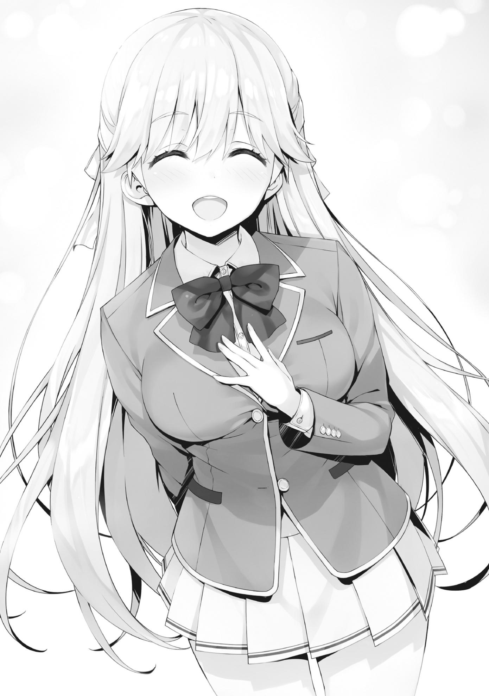
—¿Necesitas algo de esas dos? ¿Quieres que las llame por ti?
A pesar de la propuesta de Nanase, como estudiantes de primer año, la conversación que tenían las dos chicas se convertiría en una conversación entre las tres. Eso sólo serviría para aumentar la carga para mí.
—No, está bien.
—Oh, ¿de verdad?
Nanase reflexionó en voz alta, caminando al mismo ritmo que yo.
Una conversación inesperada con Nanase comenzó mientras yo pensaba en cuándo acercarme a las chicas. Estaba agradecido de que me hubiera ahorrado la molestia de ser yo quien se acercara a alguien, pero...
No había manera de que una estudiante de primer año me llamara por coincidencia. Era muy posible que estuviera esperando a que yo fuera a la escuela y programara su acercamiento en consecuencia. Esto tampoco se limitaba a Nanase. Esta debería ser la suposición básica para cualquier estudiante que tomara la iniciativa de hablar conmigo. Al igual que Amasawa ayer, no fue alguien a quien me acerqué, sino alguien que se acercó a mí.
—Me disculpo por la grosería de Housen-kun el otro día.
—No, no me afectó directamente, así que no necesitas disculparte conmigo.
—Pero no hay duda de que causamos una molestia. Mientras que yo fui con Housen-kun para evitar que se comportara así, ahora soy plenamente consciente de lo impotente que fui en realidad.
Comparada con la naturaleza áspera y violenta de Housen, Nanase hablaba con un tono muy sociable y educado, lo que daba una muy buena impresión. Y con su calificación de Habilidad Académica B, era esencialmente la compañera ideal.
No sería extraño que alguien que no fuera yo la hubiera buscado ya, pero hasta ahora, al tercer día, todavía no se había asociado con nadie.
Sin embargo, eso se debe al plan de la clase 1-D.
Además de la habilidad académica, sus calificaciones eran altas y bien equilibradas, ya que sus calificaciones de habilidad física, adaptabilidad y contribución social eran todas de C+ o mejor. A primera vista, no pude encontrar ningún problema con ella en absoluto. Por esa razón, me pregunté por qué Nanase Tsubasa fue colocada en la clase D. A nivel fundamental, había una fuerte tendencia a que los estudiantes asignados a la clase D tuvieran algún problema. Por ejemplo, en la superficie, personas como Yousuke y Kushida no parecían tener ni un solo defecto. Sin embargo, una vez que descubrí más sobre ellos, llegué a entender que no era así.
En otras palabras, no podía rechazar la posibilidad de que Nanase tuviera algún tipo de problema latente como ese. Por otra parte, hasta ahora, no había garantía de que la clase 1-D de este año cayera bajo esta misma tendencia.
En mi opinión, no me importa que alguien tenga problemas con su personalidad o su sentido de los valores. Aunque le pidiera que se asociara conmigo o que colaborara conmigo, lo único que importaba era si Nanase Tsubasa estaba o no del lado de Tsukishiro. Cuando estuvo con Housen durante nuestro primer encuentro, me miró con unos ojos que me preocuparon un poco, pero... Ahora, esos ojos no estaban en ningún sitio; su mirada era completamente natural.
—¿Ya te has decidido por tu pareja para este examen especial?
Decidí retomar la conversación para saber más sobre esta persona conocida como Nanase.
—¿Yo? No, aún no me he decidido por nadie.
—Entonces, ¿la gente se ha acercado a ti?
—En efecto. Hasta ahora, se me han acercado los alumnos de la clase 2-A y 2-C.
Como se espera de alguien con una B en habilidad académica. Parece que la gente se ha acercado a ella.
—¿Por qué no has aceptado a nadie todavía?
Decidí investigar más a fondo. Honestamente no sabía si diría que tenía que ver con el rendimiento académico o los puntos.
—Mis disculpas, pero no puedo responder a eso.
Así, Nanase inclinó su cabeza en disculpa.
—No tienes que responder si no quieres; no es algo por lo que tengas que disculparte.
En ese momento, me pareció que no podría averiguar si era su problema personal o un problema de la clase 1-D en su conjunto.
Siendo así, intentemos atacar desde un ángulo ligeramente diferente.
—Si te parece bien, ¿qué tal si hacemos que nuestros compañeros de la clase D trabajen juntos para encontrar compañeros adecuados para cada uno?
Le ofrecí una propuesta, una que me incluía a mí. Horikita pensó que la Clase 1-D era importante, y también Housen parecía tener algún tipo de sentimientos por la Clase 2-D. Ciertamente no era una mala propuesta.
—¿Cooperación entre clases...?
—Sí. Muchos estudiantes están tratando de emparejarse con los estudiantes académicamente más fuertes por sus calificaciones. Pero, como consecuencia, los estudiantes académicamente más débiles no serán elegidos y por lo tanto serán dejados fuera. Si los estudiantes académicamente más débiles se emparejan, los estudiantes de ambos años escolares, el tuyo y el mío, se expondrán al peligro de la expulsión.
—Sí. Lo entiendo. Si es posible, también deseo evitarlo.
—Por supuesto. Para eso, se necesita una cantidad apropiada de equilibrio.
Aunque tengamos que renunciar a ocupar uno de los primeros puestos, debemos encontrar socios que aseguren que nadie repruebe.
Somos estudiantes de la clase D. Es decir, somos abrumadoramente inferiores a los ojos de los que nos rodean.
Y es por eso que la Clase 1-D, colocada igual que nosotros en la jerarquía social, es probable que acepte esta propuesta.
—¿Qué te parece?
—Estoy de acuerdo. En la medida de lo posible, me gustaría cooperar contigo, Ayanokouji-senpai. Es sólo que...
—¿Sólo que...?
—No sé cuán dispuestos estarán mis compañeros a ayudar. Además, algunos de los estudiantes más seguros académicamente ya están a punto de decidir en secreto un compañero.
Muchos de los estudiantes que tenían el potencial de ser los pilares de este examen aspiraban a los primeros puestos después de haberse decidido por un socio sólido. Este era sin duda el caso de las dos chicas de la clase 1-A que caminaban delante de nosotros.
La razón por la que la clase 1-D no había elegido a su pareja fue probablemente por un tema completamente diferente, como los puntos.
La parte más importante de la prueba es la gran recompensa de puntos que se da al 30% de las mejores parejas. Ayudar a los estudiantes académicamente más débiles, significaba renunciar a esa recompensa.
—No necesitamos que todos colaboren. Con la coordinación adecuada, deberíamos ser capaces de pasar el examen especial sin la ayuda de demasiadas personas.
Mientras nos las arregláramos para conseguir que una parte de la clase se sume al proyecto, no sería un gran problema.
—Eso es cierto. Sin embargo, no es como si no hubiera otros problemas que vienen con eso.
Nanase expresó su aprobación de la propuesta en sí, pero su expresión facial la hizo parecer vacilante.
Comprendí la causa de eso sin necesidad de pensar en ello.
—Housen... ¿no es así? Parece que ese tipo tiene mucha influencia sobre la clase 1-D, ¿no?
Me metí todavía más en los asuntos internos de la Clase 1-D.
Saqué a relucir un dato que estaba bastante seguro por nuestra discusión con Shiratori el otro día.
—Sí. Muchos de los chicos y chicas de la clase ya empezaron a seguir obedientemente las órdenes de Housen-kun.
Mis sentimientos de especulación se convirtieron en confianza.
Por supuesto, Housen ya había tomado el control de la clase y aparentemente lo había hecho suya.
Housen también podría haber sido el que estaba detrás de la estrategia que hacía más difícil para la clase decidir sobre sus parejas.
Si ese era realmente el caso, entonces Housen no era sólo un estudiante que blandía su destreza física, sino uno que poseía la perspicacia, la habilidad de observación y la tranquilidad para tener una visión amplia de su entorno.
—¿Estás en una posición un poco única, Nanase? No parecías tener miedo de Housen en aquel entonces.
—Eso es porque nunca cederé a la violencia.
Respondió con una intensidad que no podía ni imaginar dada su apariencia.
Sus palabras no fueron dichas de manera casual. Más bien, había algo más, algo oculto, que las respaldaba.
Sentí que podía ver esa confianza, o algo similar a ella, asomando por el color puro de sus ojos.
—Senpai... ¿qué piensas de la violencia?
—¿Qué quieres decir con eso?
—¿Estás a favor? ¿O estás en contra?
Si ella quería saber cómo me sentía sobre la forma de hacer las cosas de Housen, entonces sólo había una respuesta que podía darle.
—Si tuviera que elegir entre las dos, supongo que diría que estoy a favor.
Hablé de forma definitiva.
Esperaba que reaccionara de inmediato, pero en cambio me encontré con silencio. Cuando me giré y miré hacia Nanase para medir su expresión facial, su dócil rostro de antes casi había desaparecido.
Sus ojos estaban igual que cuando me miró justo antes de irse la última vez que nos vimos.
Pasaron unos momentos mientras esperaba su respuesta...
—Si tuviera que elegir, también estaría a favor.
Su respuesta, que podía ser tomada como verdad o mentira, llegó sin ningún rastro de emoción.
¿Había reconocido Housen su intenso deseo de no ceder a la violencia y la mantuvo a su lado por ello?
No... No fue solo eso.
En aquel entonces, Housen mostró una fuerte reacción cuando Nanase sacó a relucir el término "eso".
No había ni una pizca de evidencia que dijera que Housen tenía un carácter más fuerte que Nanase.
Aunque eso pesaba en mi mente, probablemente no era algo que pudiera preguntarle aquí y ahora.
Después de todo, no la veía como alguien que hablara innecesariamente de algo que no debería decirse.
Todavía no debo hacer ninguna tontería que la haga subir la guardia.
En este punto, me preguntaba si debería retroceder por el momento. Después de todo, habría otra oportunidad de intentarlo de nuevo más tarde con Horikita.
—En cualquier caso, si Housen es el que decide el curso de acción para su clase, implementar esto podría ser difícil.
Dándome por vencido, pensé en hacer contacto con las otras clases mientras mantenía una buena relación con Nanase, pero...
—Uhm, si te parece bien... ¿Quieres que intente preparar algo para ti?
Ella respondió con eso, tal vez porque pensó que mi propuesta de una sociedad conjunta era una buena idea.
—Aprecio tu oferta, pero ¿estás segura?
—Sí. Sin embargo, no sé cuántos estudiantes estarán dispuestos a participar, así que no puedo prometer nada. En el peor de los casos, podría ser sólo yo. ¿Te parece bien?
Nanase lo planteó, interesada en escuchar mi respuesta.
Por nuestros compañeros de clase, era importante para Horikita y para mí aprovechar cada oportunidad disponible para desarrollar una conexión con la clase 1-D.
—Por supuesto. Estoy seguro de que Horikita estará encantada también.
—¿Es Horikita-senpai la líder de la clase 2-D?
—Sí. Ella es la que mantiene la clase unida en este momento.
Decidí que necesitaba informar a Horikita que sería mejor establecer una discusión con la clase 1-D con la ayuda de Nanase. Aunque, si le dijera a Horikita esto cara a cara en la clase, el tema me haría destacar un poco, así que me pregunté qué debería hacer exactamente.
—Ah... puede que no sea capaz de responderte sobre esto inmediatamente. ¿Sigue estando bien?
—Lo comprendo. También intentaré arreglar las cosas por mi parte lo antes posible.
—¡De acuerdo!
Luego intercambié información de contacto con Nanase y acordamos ponernos en contacto más tarde.
Parte 2
Después de confirmar que Horikita no había entrado en el edificio de la escuela todavía, decidí esperarla en la entrada un rato.
Después de todo, si tenemos esta conversación en el salón de clases, terminaremos atrayendo una atención excesiva.
En poco tiempo, Horikita apareció y me miró con curiosidad, sin darse cuenta todavía de que yo la había estado esperando.
—Buenos días. ¿Vas a encontrarte con alguien?
—¿Encontrarme con alguien? Bueno, es algo así. Acaba de llegar.
—¿De verdad?
Miró ligeramente por encima del hombro sólo para girarse y mirarme una vez que se dio cuenta de que no había nadie detrás de nosotros que yo conociera.
—¿Yo?
—Sí. Hay algo que me gustaría contarte rápidamente.
—¿Algo tan importante que expresamente te tomarías el tiempo de esperarme?
Los dos empezamos a caminar juntos.
—¿Importante...? Sí, creo que tiene el potencial de ser importante. Tuve la oportunidad de hablar con Nanase Tsubasa de la clase 1-D hace un rato, así que intenté ofrecerle a ella y a su clase una propuesta decente.
—Ah, ¿y qué le propusiste?
—Planteé la idea de que la clase 1-D y la clase 2-D colaboren juntas.
—Conociéndote, es una decisión muy importante.
La misma Horikita debe haber estado preocupada por cómo íbamos a formar una relación con la Clase 1-D.
Reforcé mi determinación, totalmente preparado para que ella se enojara conmigo por hacer la propuesta sin su permiso, pero...
—¿Estás consciente de la situación de los compañeros de la clase 1-D?
—Sí. Ni siquiera uno de ellos se ha decidido por su pareja todavía.
Sakayanagi y Ryuuen seguramente también los están dejando de lado.
Es natural que los estudiantes de segundo año centraran su atención en los estudiantes de honor de las otras clases que estuvieran dispuestos a cooperar por un número razonable de puntos, en lugar de los de la clase 1-D que esperaban un número increíblemente grande para lo mismo.
—Estoy seguro de que hay mucho más que eso. Requeriría una cierta cantidad de esfuerzo para que ellos cumplieran con la estrategia agresiva de Housen-kun. Desde la perspectiva de las clases más altas, dedicar algo de tiempo a la clase 1-D sólo serviría para aumentar la cantidad de trabajo que tendrían que hacer.
—Tal vez.
—De todos modos, ¿le hiciste esta propuesta a Nanase-san después de haber entendido las dificultades que vendrían al enfrentar a Housen-kun? ¿O te acercaste a ella con la intención de colaborar en secreto con ella, esperando que Housen-kun no se dé cuenta?
—¿Qué es lo que piensas?
Intencionalmente le devolví la pregunta a Horikita sin dar mucha respuesta. Si ella había renunciado a la idea de trabajar con la clase 1-D en este momento, yo estaba de acuerdo en cancelar la propuesta.
—Me he tomado el tiempo para reevaluar el estado del examen especial.
¿Estarías dispuesto a escucharme?
—No estoy seguro de poder darte ningún consejo significativo.
—No espero nada.
Parece que sólo quería compartir sus pensamientos conmigo.
Probablemente tenía que ver con lo que mencioné sobre la clase 1-D momentos antes.
—Para empezar, y esto es obvio, pero cuando miras al alumnado de primer año como un todo, los estudiantes académicamente dotados son naturalmente más populares como pareja.
—Sí. Shiratori mencionó que ya le habían hecho ofertas de puntos de la Clase 2-A y la Clase 2-C.
—Sin embargo, entre Shiratori-kun y sus amigos, ninguno de ellos ha tomado una decisión todavía. Parece justo asumir que la Clase A y la Clase C
no pudieron llegar a un acuerdo sobre cuántos puntos les ofrecerían. De cualquier manera, la oferta de 500.000 puntos que nos presentaron es demasiado cara, no importa cómo se mire.
Incluso pedir 200.000 puntos sería irrazonablemente alto, dado que la recompensa era sólo de 100.000 puntos para las cinco primeras parejas y 10.000 puntos para el 30% superior.
—Hace que te preguntes cuántos puntos les ofrecieron Hashimoto-kun y los demás, ¿no es así?
—Quién sabe. Supongo que no fue ni cerca de 500.000.
Era imposible saberlo a menos que fuera alguien que estuviera realmente involucrado en las negociaciones.
—Yo diría que no había tanta diferencia en el número ofrecido por las dos clases. No, en todo caso, diría que las ofertas de la clase A han sido más bajas.
Seguramente lo había deducido al vigilar la aplicación OAA hasta esta mañana.
Entre las dos clases, la clase 2-C tenía más estudiantes que habían decidido sus parejas.
—La clase A naturalmente tiene la ventaja sobre la clase C en términos de valor comercial. A menos que haya una diferencia notable en el número de puntos que ofrecen, más gente terminaría eligiendo la Clase A. De todo esto, podemos concluir que la Clase A busca apelar a los de primer año acoplando puntos junto con su valor como clase. Mientras que la Clase C, por otra parte, está tratando de abrirse camino con más puntos, ya que pierden en términos de valor.
Yo asentí ligeramente en concordancia.
—El proceso de pensamiento de Ryuuen-kun también es un poco extraño,
¿no crees? En este examen, atraer a los mejores jugadores a tu lado es fundamentalmente esencial si quieres ganar. Sin embargo, eso significa que la Clase C no tendrá otra opción que competir financieramente con la Clase A. Si juegan ese juego de dinero, la Clase C ciertamente no tendría ninguna oportunidad. En todo caso, parece imprudente que apunten al primer lugar general.
A pesar de que Ryuuen dijo algo sobre el uso de amenazas para conseguir que los de primero se emparejaran con su clase, no había duda de que, a partir de ahora, esta era una competición que tenía pocas posibilidades de ganar.
—Deberían ir detrás de los estudiantes que no se superponen con la clase A, aunque eso signifique bajar un poco el listón.
Sería mucho más seguro para ellos ir tras el segundo lugar general. Ir detrás de los estudiantes con una calificación de B- o C+ sería más que suficiente para eso.
—Bueno, tratar de adivinar lo que está pensando no tiene sentido, pero...
Voy a seguir con el punto principal. El resto de las clases, la clase 2-B, está tratando de construir una relación de confianza con los estudiantes de primer año, atrayéndolos a su grupo sin importar la calificación de Habilidad Académica, como una forma de proveer salvación a los débiles y vulnerables. Dejando de
lado la clase 1-D, la mayoría de los estudiantes con una calificación D o inferior ya han sido salvados por Ichinose-san.
Horikita hizo una pausa, mirando hacia atrás para asegurarse de que nadie nos estaba espiando antes de continuar.
—Decidí que nuestro objetivo actual es enfocarnos en el promedio, los estudiantes ordinarios de cada clase. Es decir, los estudiantes con calificaciones en el rango de C+ a B-.
Los estudiantes en ese rango probablemente no se acercarían con grandes ofertas y aun así muchos de ellos se quedaron sin pareja también.
Alcanzarlos mientras la clase A y la clase C aún luchaban por los mejores resultados fue una decisión inteligente.
—Entonces, ¿significa eso que estás renunciando a tu plan de concentrarte en la Clase 1-D?
—No, eso sigue adelante. De hecho, cada vez se siente más como si fuera nuestra elección más óptima.
—¿Estás diciendo que abandonarás a los estudiantes comunes de las otras clases?
Hacerlo sería una decisión demasiado drástica. Como la clase 2-D, nos quedamos en un segundo plano en comparación con las otras clases, por lo que necesitábamos concretar tantas parejas como fuera posible lo antes posible.
—Ellos también jugarán un papel en todo esto. Aunque puede ser un poco burdo, tengo la intención de crear una especie de juego de dinero falso para ayudarnos a ganar tiempo. A diferencia de los estudiantes de honor, los estudiantes normales no esperan recibir ninguna oferta atractiva. En ese caso, les daremos una muestra del lujo que se están perdiendo, desilusionándolos para que piensen que valen algo.
—¿Así que el objetivo es forzar a Sakayanagi y a Ryuuen a usar sus puntos no sólo para los mejores, sino también para los estudiantes comunes?
—Aunque soy escéptica sobre eso, al menos logrará atraer algo de atención. Y mientras tanto, voy a empezar a entrar en la clase 1-D. Es por eso que esta propuesta tuya es justo lo que he querido escuchar. Después de todo, estaba pensando en ponerme en contacto con Nanase-san yo misma.
—Pero, ¿no es Housen el que quiere jugar un juego monetario como este?
—Ciertamente lo hace. Sin embargo, ¿realmente sólo está buscando puntos? Cuando vino marchando por el pasillo de segundo año, me dijo: "Ni siquiera serías capaz de encontrar pareja sin rogarle a nuestra clase por ello".
Así que les daré una mano a los retrasados incompetentes, ¿de acuerdo? En otras palabras, su objetivo es nuestra clase en sí. ¿Realmente diría algo así si todo lo que quisiera fueran puntos?
Horikita hizo la afirmación de que debe haber espacio para la negociación más allá del alcance de los puntos privados.
—El hecho de que también agregó al final 'Te veré más tarde, Horikita', justo antes de que dejara insinuaciones al respecto.
—Eso es seguro. Podemos decir con seguridad que Housen sólo tiene sus ojos puestos en la clase 2-D.
Esta vez, Horikita renunció al primer lugar a cambio de tres objetivos: no dejar que nadie sea expulsado, obtener el tercer lugar o más alto en la clasificación general de la clase, y no participar en ningún intercambio monetario. No sería fácil, pero era precisamente por eso que nos centramos en la Clase 1-D.
—Sin embargo, es justo asumir que Housen-kun no será fácil de tratar. De cualquier manera, tengo un plan de respaldo.
Al parecer, Horikita había hecho otros arreglos que ni siquiera yo conocía.
—En estos momento estamos en discusión con parte de la clase 1-B sobre la posibilidad de fomentar una relación de cooperación con los demás.
—Por la clase 1-B... ¿estás hablando de ese chico Yagami de la misma secundaria que Kushida y tú?
Pensé en la última actualización de la OAA esta mañana donde vi que ambos, Yagami y Kushida, ya habían decidido un compañero.
—Kushida-san y Yagami-kun se asociaron ayer. Lamentablemente, no recuerdo nada de mis compañeros de clase de ese entonces, pero él podría ser la clave de todo esto. Parece que confía mucho en Kushida-san, así que ya empezamos las negociaciones en secreto. Si todo va bien, podemos aumentar nuestro número de colaboradores.
Aunque ésta definitivamente era una buena noticia, todavía había algo que me preocupaba.
—¿Eres tú la que está dando instrucciones a Kushida?
Dado que Kushida odiaba todo lo relacionado con Horikita, aún se desconocía hasta qué punto estaría realmente dispuesta a ayudar.
—Soy muy consciente de que será difícil dada nuestra relación actual. Por eso estoy impulsando la conversación con Hirata-kun como intermediario.
—Ya veo. Si ese es el caso, Kushida no puede permitirse el lujo de sacar ningún provecho.
Si las negociaciones de Kushida con Yagami logran atraer a un par de estudiantes a nuestro lado, entonces una parte del problema de las parejas de la clase 2-D se resolverá, permitiendo que la clase empiece a centrar su atención en los estudios.
Parte 3
—Buenos días Horikita-san. ¿Tienes un momento?
Durante el descanso después del primer período, Yousuke visitó a Horikita en su asiento.
Por alguna razón, decidí vigilarlos desde mi asiento.
—Ayer fui a hablar con mucha gente, pero está resultando difícil conseguir que alguien ayude. Un par de personas me dijeron que estarían dispuestas a emparejarse, pero...
A pesar de ser compañeros del club de fútbol, el proceso de reclutamiento no parecía progresar muy bien. Después de todo, hacer que los estudiantes de primer año que acababan de unirse al club se abrieran completamente a él sería difícil, incluso para alguien como Yousuke.
—Te pidieron puntos, ¿no?
Al ver a Yousuke asentir con la cabeza en respuesta, Horikita continuó.
—Tienen la oportunidad de venderse a un alto precio. No es sorprendente.
Las tácticas de compra de puntos privados se habían extendido a lo largo de todo el primer año, tal y como había imaginado.
—Me dijeron que la Clase 2-A se acercó a ellos, pidiéndoles que se emparejaran, pero luego la Clase 2-C entró y ofreció puntos por lo mismo.
Tampoco son sólo los chicos con los que hablé. La Clase C ha tratado de robar a casi todos los que la Clase A ha llegado.
—Es natural, ya que los estudiantes inteligentes son tan disputados.
En el fondo, Horikita ya había predicho esto.
Sin embargo, lo que Yousuke dijo a continuación fue un poco diferente.
—Aunque, parece que han llegado incluso a algunos estudiantes con calificaciones de C o D. Hasta he escuchado historias de que estaban dispuestos a pagar grandes sumas de puntos por ellos.
—¿Así que estás diciendo que no están necesariamente priorizando a los estudiantes académicamente más fuertes?
—Hasta donde puedo decir, al menos.
—Está bien. Si puedes recordar el nombre de alguien en concreto,
¿podrías compartirlo conmigo?
—Por supuesto.
Yousuke enumeró los nombres de los estudiantes de primer año a los que sabía que la Clase A había hecho ofertas. Entonces Horikita buscó cada uno de esos nombres en la aplicación y rápidamente entendió lo que estaba pasando.
A pesar de que aquellos a los que se les acercaron tenían bajas calificaciones de Habilidad Académica, cada uno de ellos tenía algo excepcional fuera de eso.
Fueron valorados por sus excelentes calificaciones de Habilidad Física, Adaptabilidad o Contribución Social.
—Ya veo... Como era de esperar, debería decir.
—En lugar de atraparse en el corto plazo, quizás estén pensando en el largo plazo.
Este no sería necesariamente el único examen en el que tendríamos que trabajar con los estudiantes de primer año. Siendo así, naturalmente, las habilidades no académicas se volverían esenciales. El proceso de pensamiento es que, al proporcionar un salvavidas a los estudiantes que son académicamente precarios ahora, serían útiles en su propio campo de especialización más adelante. Era un plan decente.
Dejando eso de lado, lo interesante de esto fue que la clase de Ryuuen también lo estaba haciendo.
En lugar de centrarse sólo en los estudiantes con altos índices de capacidad académica, seguían de cerca los pasos de Sakayanagi.
—Sería genial si pudiéramos hacer eso también, pero...
—Eso sería difícil, ¿no?
Éramos estudiantes de la clase D, mientras que Sakayanagi era de la clase A.
Incluso aquellos que se acaban de inscribir aquí ya deben saber qué clase tiene la mejor imagen.
Considerando su futuro, era perfectamente comprensible que prefirieran apoyarse en la clase superior cuando necesitaban ayuda.
—Gracias. ¿Puedo pedirte que sigas investigando esto?
—Sí. Te informaré si averiguo algo más.
Yousuke resplandeció ante Horikita con una brillante y refrescante sonrisa y volvió a su asiento.
Poco después, recibí un mensaje de texto de Horikita.
[Así que ahí lo tienes.]
Ya veo. Parecía como si se hubiera dado cuenta del hecho de que había estado espiando.
[Hirata-kun es verdaderamente confiable, ¿no es así?]
[Supongo que sí.]
Él tuvo problemas con Horikita en un momento dado, pero ahora eso era agua pasada.
Como alguien que siempre da el 100% por el bien de la clase, es una persona muy confiable.
Por supuesto, su inteligencia y habilidades de comunicación son muy buenas, pero su mayor fortaleza es su fiabilidad.
Su historial era tan fuerte que hacía creer a la gente que podía manejar cualquier cosa.
Esa fue también la razón por la que Horikita estaba dispuesta a discutir libremente la estrategia con él.
[Como Clase D, tenemos que soportar la desventaja. Es una batalla cuesta arriba.]
[No tenemos otra opción. Buena suerte.]
[Sabes que tienes que hacer tu parte también, ¿verdad?]
[¿Te refieres a lo de Nanase?]
[Sí. ¿Puedes responderle lo antes posible? Dile que estamos listos en cualquier momento.]
Ella quería avanzar rápidamente, para golpear lo más rápido posible.
Después de todo, si no lo hacíamos, las otras clases nos arrebatarían a todos los estudiantes talentosos.
[Bueno, me pondré a ello mañana. Tengo que ocuparme primero de ese otro problema.]
[Por supuesto que lo sé.]
Parte 4
Cuando terminaron las clases del día, todavía no había recibido noticias de Nanase.
Aunque ella dijera que todo estaba listo hoy, no es que Horikita y yo pudiéramos actuar en cualquier caso.
Todavía había un asunto más urgente que debía ser tratado primero.
Y ese era mi acuerdo con Amasawa para hacerle una comida casera. Mientras mi cocina estuviera a la altura, sería una oportunidad excepcional para que se asociara con Sudou. Dicho esto, no era una tarea fácil.
Cuando llegué a la entrada del Centro Comercial Keyaki diez minutos antes de la hora señalada, no parecía que Amasawa hubiera llegado todavía. En lugar de jugar con mi teléfono o algo así, observé casualmente a los estudiantes entrando al centro comercial desde donde yo estaba. Los estudiantes, de primero a tercer año, charlaban alegremente sobre cualquier cosa mientras entraban en el centro comercial. La temperatura se había sentido más cálida de lo normal esta mañana, pero a medida que se acercaba la noche, empezaba a enfriarse. La temperatura bajaría todavía más para cuando llegara la noche.
Finalmente, justo antes de la hora señalada, Amasawa apareció.
—Perfectamente hecho~ Ayanokouji-senpai~
En cuanto nos encontramos, sonrió ampliamente y asintió con la cabeza varias veces, como si estuviera satisfecha con algo.
—¿De qué estás hablando?
—Esperaste en el lugar de encuentro antes de que la chica apareciera. Sin hacer nada como, demasiado excesivo~
Era sorprendentemente perceptiva. O, tal vez debería decir que tenía una sólida comprensión de mis acciones, no importa lo triviales que pudieran parecer.
Por "excesivo", probablemente se refería al hecho de que no estaba jugando con mi teléfono o haciendo una llamada.
Pronto, tendría que enfrentarme a la prueba de Amasawa. En otras palabras, tenía que ajustarme y cocinar algo para ella con mis manos. En ese caso, el tiempo que pasé aquí podría haber sido una buena oportunidad de última hora para buscar recetas y tomar otras medidas. Una buena analogía es que no habría sido diferente de mirar el libro de texto hasta el sonido de la campana el día del examen. Por supuesto, hacerlo no habría violado ninguna de las reglas que Amasawa había establecido.
Sin embargo, estar en mi teléfono de esa manera podría hacerme parecer como alguien que no confiaba en su cocina.
Lo mismo ocurría con una llamada telefónica, ya que podía dar la impresión de que estaba hablando del asunto con otra persona. Por lo tanto, para resaltar mi calma, intencionalmente no hice nada que pareciera excesivo. Planeaba inculcar esta imagen mía en Amasawa sin que ella se diera cuenta, pero parece como si hubiera percibido eso desde el principio.
—Bueno, entonces Ayanokouji-senpai, ¿nos vamos?
Amasawa habló tan pronto como se unió a mí y entramos juntos en el centro comercial.
—Para comprar ingredientes, ¿verdad?
—Oh sí. Eso también... Tienes que comprar las cosas que me harás.
¿Tienes suficientes puntos?
—Debería.
En realidad, no me quedaban tantos, pero no diría nada innecesario como eso delante de uno de mis compañeros más jóvenes.
—¡Bien! No tengo que contenerme entonces... Déjame ver... Creo que oí a mis compañeros decir que venden todo lo esencial aquí, pero... me pregunto dónde están las cestas de compras...
En lugar de ir al supermercado, Amasawa entró directamente en 'Hamming', una tienda especializada en la venta de artículos para el hogar y otras necesidades diarias, y cogió una cesta de compras azul que encontró cerca de la entrada.
Las palabras "Eso también..." que dijo antes me pesaban en la cabeza.
Aunque sabía que debía cocinarle una comida, ¿significaba esto que tenía que hacer algo más que comprar ingredientes?
Amasawa se detuvo en la sección donde se exhibían los utensilios de cocina.
Esto me trajo recuerdos de cómo, cuando me inscribí aquí, hice varios viajes a esta misma tienda para comprar todo lo que necesitaba.
No eran sólo los estudiantes de la escuela los que hacían uso de estos suministros, sino también los miembros del profesorado y los empleados que trabajaban en la cafetería o en los cafés de los alrededores del campus, así que la tienda tenía una sección particularmente grande reservada para los utensilios de cocina. Podía recordar la primera vez que vine aquí y cómo fue difícil encontrar de inmediato lo que estaba buscando.
Por lo que parece, habían sacado un surtido de nuevos productos desde mi última visita, hace mucho tiempo.
Tal vez el hecho de que Amasawa haya pasado por aquí significaba que estaba buscando comprar algún equipo especializado específico o algo así. Después de todo, la tienda tenía peladoras, ralladores, morteros e innumerables utensilios de cocina. Dada toda la variedad, naturalmente había varios que yo no tenía. De
cualquier manera, era extraño que no se hubiera molestado en consultarme nada de esto. Tenía sentido para mí que al menos comprobara qué utensilios tenía o no tenía primero. Considerando nuestras limitaciones de tiempo, habría sido fácil para ella preguntarme sobre ello mientras caminábamos juntos, pero...
Detuve mi deseo de preguntarle sobre ello, permitiendo a Amasawa mantener el control por el momento.
Opté por tratar de sacar a relucir un tema que no tenía nada que ver con los utensilios de cocina.
|—¿Has cocinado algo tú misma antes, Amasawa?
—¿Yo? No, en absoluto. No soy del tipo que prepara una comida sin ayuda. Soy la clase de chica que prefiere dejar que otros cocinen para mí que hacer cosas para mí misma.
Explicó eso antes de detenerse, aparentemente habiendo llegado a su destino.
El viaje hasta ahora había transcurrido sin problemas. Miró hacia otro lado, fijando sus ojos en el estante de mercancías frente a nosotros.
Durante un par de docenas de segundos más o menos, se quedó allí, perdida en sus pensamientos con los brazos cruzados, casi como si estuviera preocupada por algo.
Luego, como si se hubiera decidido, asintió con confianza, murmurando para sí misma " Bien" mientras lo hacía.
—Para empezar necesitaremos una tabla de cortar, ¿verdad? ¿Y un cuchillo de cocina? Luego están los tazones y un batidor, y después de eso necesitaremos una olla y un cucharón también, ¿eh?
Tiró cada artículo a la cesta uno tras otro mientras los enumeraba en voz alta.
El último objeto que puso en la cesta fue una gran cuchara redonda, que, al parecer, se conoce como cucharón.
—Espera un segundo. Ya tengo en mi habitación casi todas estas cosas que estás metiendo.
Me sorprendió una mala premonición sobre esto, así que rápidamente empecé a hablar, pero...
—Está bien, está bien. Sólo te hago comprar estos exclusivamente para cuando cocines para mí.
¿Me está haciendo comprar esto para qué? La tabla de cortar que puso en la cesta era de una calidad superior a la que utilizo en mi habitación ahora mismo.
Parecía hecha de ciprés hinoki y costaba un poco más de 4000 puntos. Todos los demás artículos también eran de alta calidad.
En este punto, no parece que haya terminado todavía, ya que se fue una vez más, fijando la vista en el siguiente juego de estantes. Su comportamiento problemático de antes no se veía por ninguna parte, mientras procedía a agarrar un pequeño cuchillo de fruta sin dudar en lo más mínimo.
—Para alguien que se precie de ser un cocinero experto, poseer un cuchillo Petty es una necesidad absoluta, ¿no crees?
Habló en un tono informal y relajado mientras arrojaba el cuchillo a su cesta.
Para un estúpido aficionado como yo, que ni siquiera sabía que los cuchillos de frutas eran también conocidos como cuchillos Petty, ese cuchillo era muy caro, con un precio de casi 3000 puntos. A pesar de que había numerosas opciones más baratas expuestas junto al cuchillo que eligió, ni siquiera fingió un intento de actuar como si le interesaran. Por lo que pude ver, la diferencia de precio se redujo finalmente a si se vendía o no con una funda y si se había fabricado o no en Japón. Pero incluso entonces, el cuchillo que eligió seguía siendo excesivamente lujoso.
Aparentemente, se esperaba que un chef experto dominara el uso de este tipo de pequeño cuchillo de cocina.
—Esto es sólo una pregunta, pero el que va a pagar...
—Bueno, ese serías tú, por supuesto, ¿verdad Ayanokouji-senpai?
Ya sabía que se suponía que debía pagar, pero el total ya superaba fácilmente los 15.000 puntos. Ya que se llegó a esto, bien podría tirar el barato que había estado usando hasta ahora. Si pensara en la comida que me haría con estas
herramientas de alta calidad cuando cocine en el futuro, ¿entonces quizás podría aceptar las compras?
—Ah, como mencioné antes, vas a comprar estos para cocinar para mí exclusivamente, así que no los desgastes con el uso diario, ¿entendido?
—¿Eres una especie de demonio?
Me adelanté y vocalicé mis tacaño pensamientos, pero Amasawa lo había anticipado inquietantemente.
—Puedes renunciar a ello ahora si quieres, ¿sabes?
Habló de forma provocativa, con las manos aún agarradas al asa de la cesta azul.
Se aferró a mi debilidad, consciente de que no podía negarme, y bailaba en la palma de su mano.
15.000 puntos era un precio increíblemente barato a pagar para conseguir que Sudou se asociara con un estudiante de nivel A. No tuve más remedio que reducir mis pérdidas y tomar una decisión.
—No, lo entiendo. Aceptaré todas tus condiciones, así que siéntete libre de comprar lo que quieras.
—¿Crees que soy una chica mala?
—Yo no diría eso.
Amasawa fijó sus ojos en los míos y luego, al parecer se dio cuenta de algo, sonrió ampliamente.
—Entonces todo debería estar bien, Senpai.
Al final, se decidió que lo compraría todo, desde la olla al cucharón y todo tipo de cosas intermedias.
Cada artículo, comprado bajo la horrible condición de que sólo lo usaría cuando cocinara para ella.
Parte 5
Después, fuimos al supermercado a comprar los ingredientes, aquello para lo que vinimos al centro comercial en primer lugar.
En total terminé gastando unos 20.000 puntos privados. No hace falta decir que nunca antes había comprado tantas cosas a la vez. Las bolsas de plástico que llevaba eran tan pesadas que las asas se me clavaban en los dedos.
Mi conjetura sobre lo que Amasawa estaba considerando y lo que quería que hiciera con estos ingredientes era tan buena como la de cualquier otro. Esto se debió a que me hizo comprar todo tipo de cosas, desde verduras hasta carne y fruta, y demás cosas.
Sin embargo, había algunos platos que me vinieron a la mente. Por ejemplo, la presencia del nam pla y los pimientos picantes ayudaron a reducir las opciones.
Sin embargo, todavía era difícil de decir. Estaría perfectamente bien si planeaba que yo usara todos los ingredientes, pero era más que posible que también hubiera mezclado varios falsos para fastidiarme. Después de presenciar todo lo que había dicho y hecho a lo largo del día de hoy, no pude evitar albergar estas sospechas. Era seguro asumir que sería virtualmente imposible determinar el plato que quería que le preparara en este momento.
—¡Okie dokie~! ¡Eso debería ser todo! Vamos a tu dormitorio ahora, ¿sí, Senpai~?
Habló con un nivel de entusiasmo que uno esperaría de una chica que se dirigía a la habitación de su novio, pero no sentí ni una onza de emoción al respecto. Si no conseguía cocinarle un plato con el que estuviera contenta, todas las negociaciones se romperían en ese momento. Sin mencionar que la tarea esta vez era cocinarle algo "delicioso", que era un punto de referencia inherentemente abstracto para basar las cosas.
Si nunca tuvo la intención de dejarme pasar esta pequeña prueba suya, entonces todo esto no fue más que una inútil pérdida de tiempo y puntos. Pero
por ahora, no parecía que tuviera otra opción que aceptar cualquier desarrollo que se produjera.
No me había dado cuenta de que la decisión de Horikita de ayer en una fracción de segundo habría llevado a algo tan pesado y problemático.
Originalmente, no le dije nada a Horikita y a Sudou antes ya que estaba bien cubriendo los gastos, pero ahora tenía la intención de discutir los costos con ellos después de terminar con todo esto.
Sin embargo, sería mejor dejar ese asunto a un lado por el momento.
Para afrontar la situación actual de la forma más directa posible, decidí hacerle a Amasawa una de las preguntas que quería hacerle.
—Querer comer una comida hecha por un tipo que ni siquiera conoces es un poco extraño, ¿no crees? ¿No se opondría alguien normalmente a algo así?
Esta era sólo mi opinión egocéntrica, pero sentí que era algo que la gente generalmente se opondría a hacer.
Las comidas no estaban hechas sólo para lucirse, estaban hechas para ser llevadas a la boca y deglutidas en el estómago.
Uno normalmente se preocuparía por quién cocinó la comida y cómo se hizo, ya que estos factores estaban directamente relacionados con el sabor y la higiene.
Entonces, cuando conoces a la persona que cocina para uno y comienza a confiar en sus platos, ese sentimiento de reticencia del pasado comienza a desaparecer gradualmente.
—¿Piensas así? Pero, ¿no es tan diferente de comer en un restaurante?
Con un extraño haciendo lo suyo en la cocina para prepararte una comida, no hay forma de que sepas lo que está pasando allí.
Era cierto que ninguno de nosotros sabía exactamente cómo se hacía la comida en la cafetería de la escuela, por ejemplo.
Sin embargo, mientras que esos dos escenarios podrían parecer iguales en la superficie, en realidad eran claramente diferentes.
—Aunque un restaurante haga una simple bola de arroz, seguiría cumpliendo con las normas de sanidad. Eso es completamente diferente de cómo es cuando cocinamos por nuestra cuenta, ¿no es así?
—¿Y? Me parece bien que el chef cocine delante de ti. Porque entonces puedes ver la mirada en su cara y cómo lo hacen y todo eso. También puedes comprobar y asegurarte de que están siendo higiénicos. Por el contrario, ¿no hay algunas cocinas en restaurantes que están totalmente escondidas de ti?
Algunos lugares también son como, súper sospechosos con bichos y cosas arrastrándose por todas partes, ¿verdad?
Amasawa opinó que, mientras lo viera con sus propios ojos, no importaba quién hiciera la comida, aunque fuera un extraño.
—Además, creo que tengo una idea bastante buena de cómo funciona esta escuela. Tendría que vivir con moderación si de alguna manera terminara sin puntos, ¿no? Pero si consigo que Senpai cocine para mí, no tendría que preocuparme por eso.
Ahí estaba. En otras palabras, si la comida que le cocinaba esta vez sabía lo suficientemente bien, tenía toda la intención de volver a limpiarme en el futuro.
Esencialmente buscaba asegurarse un ticket de comida fiable en caso de emergencia.
Probablemente sería una buena oportunidad para mejorar mis habilidades culinarias, pero dudaba si estaría dispuesta a pagar el costo de los ingredientes.
—¿Entiendes a lo que me refiero?
—Más o menos.
Amasawa mostró una blanca y dentada sonrisa.
Pero todavía había algo que no me gustaba. ¿Es un estudiante de segundo año, y un estudiante varón, la mejor persona para hablar de ello? Me imagino que preguntarle esto a uno de los compañeros de clase más cercanos o a alguien del mismo sexo haría las cosas mucho más fáciles más adelante.
Bueno, no me estoy quejando exactamente, ya que estaba buscando ganar algo con ello.
—De todos modos, soy súper exigente con el sabor. Si no es lo suficientemente delicioso, el trato se cancela, ¿de acuerdo?
—Lo entiendo. Sólo porque haga el plato no significa que sea lo suficientemente bueno para ti.
En ese sentido, el obstáculo no era de ninguna manera bajo, pero no tenía otra opción que bajar la cabeza y hacer lo mejor posible.
Las habilidades culinarias que Horikita había pasado la última noche enseñándome eran todo lo que importaba ahora.
Me preguntaba cuánto sería capaz de aprovechar de su entrenamiento en el corto tiempo que había pasado desde que aceptamos la propuesta de Amasawa ayer.
Pero aún así, Amasawa seguramente no era alguien a quien pudiera engañar muy fácilmente.
Podía adivinar por los ingredientes que había elegido que estaba ansiosa por poner a prueba mis habilidades.
Al poco tiempo, habíamos llegado a la entrada de los dormitorios.
Amasawa miró al edificio con su mano sobre la frente, protegiendo sus ojos de los rayos del sol.
—Los dormitorios de segundo año son como, un poco inquietantes.
A pesar de decir eso, no parecía muy nerviosa.
Más bien, dio la impresión de una persona que se divierte mientras está fuera pasándola bien.
—Ah, pero supongo que tiene el mismo aspecto que los dormitorios de primer año.
Compartió sus pensamientos después de echar un buen vistazo al exterior del edificio y a la parte interior del vestíbulo.
—Eso no sería sorprendente.
Simplemente coincidí con lo que ella decía, aunque nunca antes había visitado ninguno de los otros dormitorios.
Llamamos la atención de algunos de los estudiantes de las otras clases cuando pasamos junto a ellos.
Supongo que es natural, ya que parecía que traía a una chica de primer año a mi habitación... con la comida en la mano.
Amasawa saludó con la mano a los estudiantes de los cursos superiores cuando pasamos junto a ellos, pero nos hacía destacar, así que quise que se detuviera.
La llevé rápidamente a mi habitación antes de que cualquier rumor extraño se extendiera.
—Perdona la intrusión. Wow, realmente lo tienes todo bien y ordenado,
¿eh~? Es como, súper limpio...
—Anoche limpié porque sabía que vendría un estudiante de primer año.
Lo hice para asegurarme de que no había nada que insinuara que había pasado toda la noche estudiando cómo cocinar.
Ahora... La secuencia de eventos de aquí en adelante es de vital importancia.
Después de dejar las bolsas de comida y los utensilios de cocina en el suelo de la cocina junto con mi mochila, lo primero que hice fue poner a hervir el agua en mi hervidor eléctrico. Luego, miré hacia la sala de estar y le pedí a Amasawa que se sentara.
Podría haberla sentado en un lugar donde no pudiera ver la cocina, pero me aseguré de no hacerlo.
Era esencial que la pusiera en una posición en la que pudiera ver lo que hacía desde el lado si sentía que quería hacerlo.
—Haré café. Siéntete libre de encender la televisión si quieres.
—Gracias, Senpai.
Luego, le hice café después de que el agua comenzara a hervir, dándoselo antes de pedirle que esperara un poco.
Amasawa tomó el control remoto que había puesto en la mesa y comenzó a cambiar los canales.
Aunque no era en absoluto infalible, había una razón sólida y conveniente para hacer que ahogara el sonido con el televisor.
Instigarla a ver la televisión colocando el control remoto cerca había sido la idea correcta.
Una vez que confirmé que encendió el televisor, volví a la cocina, moviéndome de tal manera que enfaticé que quería empezar inmediatamente. Necesitaba asegurarme de que podía impedir que viera lo que estaba haciendo si realmente empezaba a verlo, pero por suerte no parecía que quisiera hacerlo.
—Oh, buscar cualquier cosa en tu teléfono va contra las reglas, ¿ok~?
Ella miró, advirtiéndome.
—Qué estricta. Estoy seguro de que la mayoría de la gente hoy en día cocina y busca recetas al mismo tiempo.
—¿Te asustaaaste~?
—No, nada de eso.
—Suena maravilloso entonces. Porque en mi mente, un buen cocinero es alguien que se sabe la receta de memoria.
Aunque Amasawa no mencionó nada de eso ayer, yo le seguí la corriente de todas formas.
Después de todo, ya había predicho que este sería uno de sus requisitos.
—Bueno, entonces dejaré mi teléfono en la cama.
Conecté mi teléfono al cargador y lo dejé en la cama.
Amasawa asintió con satisfacción y tomó su taza de café.
—Me gustaría empezar antes de que se haga tarde, así que, ¿qué plato voy a hacer?
—Muy bien, te diré... ¡El plato que vas a hacer es... ¡Tom Yum Goong!
—Tom Yum Goong... ¿de verdad?
Esta parece ser la razón de la presencia de los chiles y el nam pla, dos ingredientes indispensables de la cocina tailandesa.
—¿Podrías hacerlo para mí? ¿Por favor, Seeenpaiiii~?
El plato que Amasawa me había encargado era Tom Yum Goong.
Por supuesto, nunca había hecho este plato en mi vida.
Nunca antes había oído hablar de él, y mucho menos lo había probado.
Era el tipo de comida que nunca nos habían servido en la Habitación Blanca.
Había visto suficiente televisión para saber que el plato era popular entre las mujeres, pero ese era el alcance de mi conocimiento.
Si tuviera que hacerlo yo mismo ahora, probablemente no sería capaz de completar el plato correctamente.
No sólo no tenía ni idea de los ingredientes exactos que contenía, sino que tampoco tenía la menor idea de cómo hacerlo.
Así que, uno podría preguntarse ¿qué demonios he estado haciendo todo este tiempo anoche?
No pasé el tiempo haciendo algo imprudente como intentar memorizar las recetas de cada plato de la historia de la humanidad.
Tampoco pasé el tiempo dominando los procedimientos básicos de cocina.
Habría sido una completa tontería pasar el tiempo memorizando recetas dado que había una posibilidad de que Amasawa me permitiera seguir una en mi teléfono.
Una vez que se decidió que cocinaría una comida para Amasawa, Horikita puso en marcha dos planes diferentes.
El primero tenía que ver con el aprendizaje del uso básico de cosas como los cuchillos de cocina y las diversas técnicas que implicaba.
Había pasado la mayor parte del tiempo practicando cosas como cortar en rodajas, triturar, cortar en cubos y picar. Es decir, técnicas que ayudaron a difundir una muestra descarada de habilidad culinaria, incluso a simple vista.
Por supuesto, mis habilidades en este sentido no eran más que un juego de niños cuando se comparaban con las de un chef profesional.
Estaban al nivel en que una persona promedio no se avergonzaría de presumir un poco.
Era algo imposible de dominar para una persona normal en sólo medio día, pero confiaba en mi capacidad para captar nuevas cosas rápidamente.
Tal vez había logrado alcanzar el nivel de habilidad de alguien que cocinaba su propia comida al menos un par de veces a la semana.
Esto era algo que había logrado gracias al hecho de que no había pasado ni un segundo aprendiendo sobre recetas o cómo hacer algo.
Sin embargo, en ese caso, obviamente no había forma de saber cómo hacer el plato que Amasawa me encargó.
Y ahí fue donde el segundo plan entró en juego: Un método para comprobar las recetas en tiempo real usando un teléfono. Pero Amasawa me había prohibido expresamente mirar mi teléfono y éste estaba siendo retenido en mi cama.
Aunque hubiera escondido una tableta o algo por ahí cerca, probablemente no tendría ninguna abertura para mirarlo.
De hecho, esperábamos que Amasawa me vigilara de vez en cuando.
Trabajando alrededor del punto ciego de Amasawa, saqué un pequeño dispositivo de menos de 2 cm de diámetro de mi bolsillo derecho.
A primera vista, el dispositivo parecía un tapón de oído ordinario, y casualmente lo introduje en mi oído derecho, sabiendo que Amasawa no sería capaz de ver.
Procedí entonces a aclarar apenas mi garganta como una señal.
Y entonces...
[Hasta ahora he podido escuchar todo alto y claro. Nunca hubiera imaginado que te pediría que hicieras Tom Yum Goong.]
Pude escuchar la voz de Horikita a través del auricular inalámbrico en miniatura que me inserté en el oído derecho.
La estrategia era que Horikita me diera las instrucciones de la receta en tiempo real, ya que podía acceder libremente a su computadora en su habitación. El teléfono de Sudou estaba guardado dentro de mi mochila, que había colocado cerca de mis pies, y que transmitía todo el ruido saliente al auricular inalámbrico.
Había estado en una llamada con Horikita desde antes de llegar al centro comercial.
Cuando Amasawa y yo estábamos de compras en el centro comercial, Horikita ya había vuelto a casa y terminó de hacer todos los preparativos necesarios.
El auricular inalámbrico era algo que los dos habíamos comprado ayer.
Si parecía que Amasawa estaba a punto de levantarse de su asiento y venir a ver cómo estaba, podía simplemente fingir que me rascaba la cabeza mientras recuperaba el auricular y lo volvía a poner en mi bolsillo. Después de todo, como ella me estaba vigilando, yo era más que capaz de vigilarla a ella también.
Gracias a esto, pude cocinar sin tener que preocuparme por la receta. También habíamos establecido varias señales discretas en caso de que Horikita diera una instrucción demasiado rápida o quisiera escuchar una explicación de nuevo.
De aquí en adelante, sin embargo, todo dependería de lo bien que Horikita y yo fuéramos capaces de cooperar.
Incluso si sabía qué ingredientes y herramientas iba a usar, no tenía ningún tipo de referencia visual.
Después de todo, tenía que hacer un plato del que no sabía mucho, y tenía que hacerlo perfectamente.
El desafío era cómo dar instrucciones específicas y repetibles a través de una conversación bastante unilateral.
[Por cierto, hay algo que me gustaría que consultaras primero con Amasawa-san.]
Tomé la pregunta de Horikita y la puse en mis propias palabras antes de preguntar.
—Amasawa. No hay necesidad de usar un batidor o un cuchillo pequeño para hacer Tom Yum Goong. Si hay algo más que quieras que haga para ti después, sólo dímelo ahora.
Sería problemático si ella quisiera que le cocinara otra cosa más tarde, así que le pedí que lo mencionara con antelación, como Horikita me indicó.
—Iba a pedirlo más tarde, pero estaba pensando en que me pelaras una manzana.
Parece que Amasawa había planeado pedir otra cosa después, como se sospechaba.
—Eres libre de disfrutar de los ingredientes sobrantes todo lo que quieras, Senpai. Oh, y te haré usar el resto de los utensilios que compramos la próxima vez que venga, ¿ok~?
El cuchillo que no estaba seguro de que terminaría usando serviría para algo hoy, pero parecía que podía guardar el resto de las cosas por ahora.
[Es bueno que te haya hecho revisar. Ayer te enseñé a usar un cuchillo de frutas, para que puedas manejar la manzana, ¿verdad?]
No sabía hasta dónde llegaría con sólo un día de entrenamiento, pero probablemente eso estaría bien.
[Nuestro objetivo es un tiempo de cocción de unos 15 a 30 minutos. ¿Estás listo?]
Bien... Veamos qué tan bien puedo hacerlo.
Parte 6
Aunque había tomado un poco más de tiempo de lo esperado, me las arreglé para hacer el Tom Yum Goong aproximadamente como me fue indicado.
Y ahora, había llegado el momento de que Amasawa probara el plato completo.
Nunca hubiera imaginado que estaría sirviendo una comida casera a una chica que apenas conozco.
Puse el Tom Yum Goong en la mesa antes de darme la vuelta y volver con una manzana en la mano.
Parece necesario demostrar que soy capaz de manejar el cuchillo frente a Amasawa.
—Normalmente uso un cuchillo de cocina normal para pelar manzanas, así que usar esto podría ser un poco incómodo, pero...
Pronuncié estas palabras como prefacio para ayudar a amortiguar el golpe y comenzar a pelar la manzana.
—Guau... ¡Qué increíble! ¡Lo estás haciendo perfectamente! ¡La forma en que manejas ese cuchillo obtiene resultados perfectos de mi parte!
No tenía un aspecto profesional ni nada, pero al menos no parecía que fuera la primera vez que tocaba un cuchillo.
Luego puse las rodajas de manzana recién cortadas delante de ella.
—A propósito, cuando pienso en Tom Yum Goong, lo primero que me viene a la mente es el cilantro. ¿No te gusta eso o algo así?
El cilantro no era uno de los ingredientes que me hizo comprar hoy.
—Sí, pero... Es como, pensé que podrías averiguar cuál era el plato si comprábamos cilantro.
Había estado en guardia, eligiendo a propósito dejar fuera el cilantro; es decir, tomó medidas para evitar que la engañara con trucos baratos. Podía entender que lo había hecho para evitar mostrarme una abertura, pero era bastante excesivo que llegara tan lejos.
—¿Te importaría si empiezo a limpiar todo?
Pregunté, aprovechando la oportunidad de poner la tabla de cortar y el cuchillo que había usado para la manzana en la cocina.
—No, no, no. Tienes que sentarte ahí y esperar a que la jueza dé su veredicto, ¿ok~?
Protestó, exigiendo que me sentara justo delante de ella.
Incapaz de ir contra ella, dejé de limpiar y volví a la sala de estar, tal y como se me había ordenado.
—Muy bien, entonces, es hora de comer~
Amasawa llevó lentamente una cucharada de Tom Yum Goong caliente a su boca.
No parecía importarle que me sentara aquí y la mirara mientras comía.
Aunque en ese aspecto tampoco me importaba, así que ella y yo estábamos igual.
Cuando terminó de comer, Amasawa juntó sus manos, aparentemente satisfecha.
—Gracias por la comida.
No parecía ser el tipo de chica que sólo come pequeñas porciones, ya que se comió hasta el último bocado del plato.
El caso es que... lo había probado antes de servírselo, pero no tenía forma de estar seguro de si sabía bien o no.
No cometí ningún error con las medidas ni nada, así que no creí que hubiera ningún problema.
Sin embargo, si Amasawa decía que aún no era lo suficientemente bueno, entonces esta batalla marcaría el final de la guerra.
Una guerra en la que habíamos perdido.
—Tu Tom Yum Goong─
Se detuvo un momento antes de emitir su juicio.
—Sí, supongo que apenas fue lo suficientemente bueno. No era, como, súper delicioso o algo así, pero creo que sabía lo suficientemente bien como para que quisiera probarlo de nuevo.
Aún no había mencionado la parte que más me importaba: si había aprobado o fracasado.
—Bueno, por ahora, voy a limpiar, ¿ok~?
Con eso, Amasawa cogió su tazón, su cuchara y los demás platos de la mesa y se dirigió a la cocina.
No sólo puso los platos en el fregadero, sino que empezó a ordenar toda la cocina.
—Yo me encargaré desde aquí.
—Está bien, está bien... Soy yo quien te obligó a cocinar para mí, así que al menos déjame hacer esto. Ve a sentarte y relájate, Senpai. Soy terrible cocinando, pero soy muy buena limpiando después, ya que siempre ayudé a mi madre con eso.
—Bueno, entonces aceptaré. Por cierto, sobre nuestro trato... ¿qué piensas?
Amasawa se quedó en silencio mientras ordenaba la cocina.
Sólo se podía oír el sonido de las noticias nocturnas que sonaban en la televisión.
—Oh, es cierto... tengo que anunciar los resultados pronto, ¿verdad?
Aunque es un poco difícil...
Mientras lo pensaba, Amasawa no parecía estar contenta con la posición de la cinta que sostenía su coleta derecha, ya que la desató y empezó a atarla de nuevo, usando su reflejo en la pantalla de su teléfono como un espejo.
No mucho después, justo cuando terminó de atarse el pelo, dio su veredicto.
—Como dije hace poco, apenas fue suficiente. Después de todo, tu técnica no era terrible, y el sabor tampoco era malo.
—¿Sólo apenas? Qué duro.
—Bueno, dije que era muy exigente con el sabor.
Amasawa sonrió, mirándome mientras hablaba.
—Supongo que podría decir que si vuelvo o no a comer aquí la próxima vez depende de lo duro que trabajes, Senpai.
Esto significaba que mis habilidades culinarias no estaban a la altura de lo que ella quería y me pedía que le preparara una comida muy a menudo.
Aunque dijo que apenas fue suficiente, no sabía si esto significaba que había aprobado o no.
—¿Así que este trato con Sudou fue un fracaso?
Estaba un poco indeciso acerca de confirmarlo con ella, pero decidí preguntar de todos modos.
—Aunque no puedo decir exactamente que hayas aprobado, es cierto que sabes cocinar. Hice que compraras todo tipo de cosas caras y, como que, me
dejaste comer gratis, así que supongo que tengo que pagarte por eso. Haré pareja con Sudou-senpai, por respeto a tus esfuerzos.
Aunque no había sido suficiente para satisfacerla, por el momento apenas logré cumplir con sus estándares.
Me dio la buena noticia justo cuando empecé a pensar que esto podría ser un poco difícil, y di un suspiro de alivio.
—Casi he terminado de limpiar, así que espera un poco, ¿ok~?
No podía quedarme mirándola mientras arreglaba la cocina, así que decidí sentarme y ver las noticias en la televisión mientras la esperaba.
Al poco tiempo, Amasawa volvió a la sala de estar, contenta con las condiciones de la cocina. Sacó su teléfono y presentó una solicitud para asociarse con Sudou, mostrándome la pantalla mientras lo hacía. Siempre que Sudou respondiera a su oferta al final del día de hoy, su asociación quedaría sellada.
—Sudou está fuera haciendo actividades del club ahora mismo, así que haré que lo acepte más tarde. ¿Te parece bien?
Aunque esto no era exactamente una mentira, la verdadera razón era que yo tenía su teléfono, así que no podía usarlo ahora mismo.
—Me parece muy bien... De todas formas, no quiero estar fuera hasta muy tarde, así que volveré ahora. Nos vemos luego, ¡Ayanokouji-senpai~!
El plan se desarrolló sin problemas, ya que Amasawa se dirigía a la puerta principal para salir.
—Amasawa. Gracias por estar dispuesta a formar pareja con Sudou. Has hecho mucho por él, y por Horikita también.
—Sí, sí... puedes mostrarme todo el aprecio que quieras, ¿ok~?
Respondió bromeando alegremente mientras se ponía los zapatos.
—Mientras tanto, hay algo que me gustaría preguntarte, pero...
Justo cuando estaba a punto de decir lo que era, Amasawa terminó de ponerse los zapatos y me miró.
—¿Quieres que actúe como intermediaria entre nuestras clases?
Ella respondió en mi lugar. Su ubicación en la clase A y su capacidad académica de nivel A no eran sólo para presumir.
Esencialmente, pensaba rápido y hablaba sin el menor rastro de duda en sus palabras.
—No te equivocas. Hay muchos estudiantes en mi clase que tienen problemas para encontrar pareja, como Sudou. Sería genial si nos presentaras a algunas personas que estuvieran dispuestas a ayudarnos.
—Lo~ siento, pero no creo que eso sea posible.
Amasawa juntó ligeramente las dos manos delante de sí misma para disculparse.
Rechazó mi petición sin pensárselo dos veces.
—Ah, no es por ti o por Horikita-senpai, ¿ok~? Creo que puedo confiar en ustedes, pero no soy muy cercana al resto de mis compañeros. ¿Recuerdas cómo estaba sola cuando los conocí ayer?
—Ahora que lo mencionas, sí.
En ese momento, muchos estudiantes estaban en el centro comercial Keyaki con sus amigos, pero Amasawa había estado allí sola.
—Supongo que se podría decir que, como que, carezco de delicadeza o algo así, pero es porque no soy de la clase que endulza sus palabras. Es difícil hacerse amigo de gente así, ¿entiendes? Así que no puedo ayudarte Senpai.
¿Perdón?
—No, está bien. El hecho de que estés dispuesta a asociarte con Sudou ya es suficiente para mí. Si tienes algún problema, no dudes en confiar en mí.
Podría ser capaz de hacer algo para ayudar.
—Mhm, gracias... de todas formas, nos vemos luego... ¡adiós!
Aunque no logré establecer una conexión con la clase 1-A, esto era más que suficiente por el momento.
—Supongo que eso es todo.
Después de colgar la llamada en curso en el teléfono de Sudou, llamé a Horikita usando el mío.
[Bien hecho. Parece que todo funcionó de alguna manera].
Las palabras de agradecimiento prácticamente volaron de la boca de Horikita tan pronto como atendió la llamada.
—Sin embargo, tengo la sensación de que fuimos salvados por el misericordioso juicio de Amasawa.
[Aun así, esto ha resuelto el problema de Sudou. Es todo un logro.]
Estuvo mal por nuestra parte engañar a Amasawa, pero aun así lo conseguimos al final.
Lo único que quedaba por hacer era esperar a que Sudou viniera a buscar su teléfono a mi habitación y aceptara la solicitud.
Y dado el tiempo, probablemente aparecería pronto.
[¿Por qué le pediste a Amasawa-san que actuara como nuestra intermediaria con la Clase 1-A? Aparte de su personalidad y número de amigos, puedes imaginar lo difícil que sería para ella negociar con la Clase 2-D, ¿verdad?]
Horikita nunca mencionó ganarse a la Clase 1-A cuando estaba preparando su estrategia para este examen especial.
La única razón de esto era la dificultad que vendría con el intento de establecer una relación de cooperación con los demás.
—Era sólo una formalidad. Es cierto que nuestra clase tiene dificultades para encontrar pareja, así que hubiera parecido extraño si no tratara de ponerlo en palabras.
Si no teníamos otras opciones, necesitábamos dar la impresión de que nos aferrábamos a un clavo cuando nos acercábamos a los demás.
No hacerlo podría ser tomado como una señal de que nuestra clase estaba impulsando otra estrategia.
[En otras palabras... ¿No querías que Amasawa-san se diera cuenta de que hemos renunciado a ganarnos a la Clase 1-A, centrando nuestra atención en la Clase 1-B y la Clase 1-D?]
De hecho, Horikita ni siquiera había considerado ganarse a la clase 1-A a través de Amasawa, porque ya tenía en mente las otras dos clases. Desde el principio, decidió que podía aprovechar al máximo el escenario afortunado y simplemente pedirle que fuera pareja de Sudou.
—Ninguno de los dos sabemos qué clase de persona es realmente esa chica Amasawa. Por eso lo que ha pasado hoy podría filtrarse a las otras clases de primer año, o incluso al resto del segundo año. Sólo actué después de tener eso en cuenta. Aunque podría estar preocupándome demasiado.
Tras escuchar mi explicación, Horikita se hundió en el silencio por un momento.
—¿Qué sucede?
[Tu forma de pensar es... ¿Cómo lo digo...? Extremadamente calculada, y sin embargo inteligente.]
—No es gran cosa, de verdad.
[No, sí es gran cosa. Parece bastante obvio cuando lo dices después de los hechos, pero es algo completamente diferente que pienses tan a futuro en el momento. Creo que ahora entiendo mejor la razón por la que mi hermano mayor te prestó tanta atención. Sin embargo, si estuviera teniendo esta conversación con el tú del pasado, no te habrías molestado en decirme nada específico. ¿Qué ha cambiado?]
Horikita me hizo una pregunta, curiosa sobre el aparentemente completo cambio en mi comportamiento.
—No tengo ningún motivo oculto ni nada. De todos modos, nuestro siguiente problema es qué hacer con los estudiantes restantes. Te haré saber cuando tenga noticias de Nanase.
[Sí, tienes razón. Estaré esperando.]
Después de terminar mi llamada con Horikita, fui a ver como estaba la cocina.
La cocina estaba impecable. No sólo se habían lavado los platos, sino que el fregadero y las encimeras se habían pulido meticulosamente. El aspecto actual no era en absoluto inferior al que tenía cuando llegué a la habitación hace un año. La tabla de cortar, los platos, el cuchillo de cocina, el cuchillo Petty, la olla, el cucharón y todo lo demás que había usado también estaban limpios. No había nada de qué quejarse.
Aunque estuvo encabezado por Horikita, era la primera vez que interactuaba tan estrechamente con un estudiante de primer año. Si Amasawa era la de la Habitación Blanca, no habría sido extraño que intentara hacer algo, pero no vi ninguna evidencia de ello.
Todavía planeo comprometerme con la precaución, pero...
Dada la forma en que hablaba y se comportaba, el conocimiento que Amasawa poseía no era nada fuera de lo normal para un estudiante de preparatoria.
Probablemente sería difícil para alguien que acababa de salir de la Habitación Blanca asumir los mismos gestos que ella.
—Lo más importante es que la posibilidad de que Amasawa fuera la estudiante de la Habitación Blanca desapareció cuando se emparejó con Sudou,
¿verdad?
También podría descartar a los otros estudiantes de primer año que ya se habían decidido por un compañero. Al menos, eso es lo que diría si tuviera que emitir un juicio dada la información de la que dispongo actualmente. Sin embargo, todavía me parecía demasiado pronto para hacer esa afirmación, sin importar quién fuera.
Si bien es cierto que asociarse conmigo sería la forma más rápida de lograr que me expulsaran, esa era sólo una de las muchas estrategias potenciales que podrían tener. Había una posibilidad de que el estudiante de la Habitación Blanca buscara otra oportunidad dejando pasar intencionadamente el examen especial.
El conocimiento común de un estudiante de preparatoria no era algo que se pudiera dominar de la noche a la mañana, pero con suficiente tiempo, eso tampoco sería cierto.
Además, había partes selectas del discurso y la conducta de Amasawa que me molestaban.
Probablemente no era algo de lo que tuviera que preocuparme, pero lo mejor era aplastar completamente cualquier preocupación que tuviera.
Esto tampoco se aplicaba sólo a Amasawa. Lo mismo ocurría con Housen y Nanase, con quienes entraría en contacto en un futuro próximo. De los muchos estudiantes de segundo año presentes cuando llegaron a las aulas, yo fui el primero al que miraron con atención.
Debería sospechar de todos los estudiantes que se acercan a mí, sin importar si conversan conmigo o no.
Porque de aquí en adelante, me meteré en un territorio más peligroso para encontrar una pareja.
Más tarde esa noche, recibí un mensaje de Nanase.
[¿Podemos vernos mañana después de clases?]
Parte 7
Ese mismo día, alrededor de la hora en que Ayanokouji estaba cocinando para Amasawa, tres estudiantes de la clase 2-A, Sakayanagi, Kamuro, y Kitou, se
habían reunido en un café en el centro comercial Keyaki para mantener una discusión.
—Sucedió de nuevo. Parece que los estudiantes a los que llegamos han recibido ofertas de la clase C. Además, parece que la clase C ha estado ofreciendo a los estudiantes 10.000 puntos sólo por rechazar cualquier oferta que reciban de nuestra clase, sin condiciones.
Kamuro estaba al teléfono con Hashimoto, transmitiendo sus hallazgos a Sakayanagi desde el otro lado de la mesa.
—10.000 puntos, ¿sólo por decidir no unirse a nosotros? ¿Es eso estúpido o qué?
Después de expresar rápidamente sus pensamientos sobre el asunto, Kamuro continuó presentando el resto de la información tal y como la obtuvo de Hashimoto.
La clase 2-C ofrece 100.000 puntos privados como pago por adelantado sólo por aceptar asociarse con ellos. Luego, después de que se confirme que la pareja había obtenido más de 501 puntos en el examen, al parecer ofrecen 100.000
puntos privados adicionales, es decir, 200.000 puntos en total.
—Fufu. Parece que Ryuuen-kun tiene toda la intención de llegar hasta el final de este combate.
—¿Qué vas a hacer? ¿Deberíamos pelear con puntos privados también?
—Si peleáramos la batalla financiera, simplemente no perderíamos. Sin embargo, vencerlo con su propia estrategia carecería de cierta... potencia artística, ¿no crees?
—¿Potencia artística...? Si necesitamos repartir 100.000 o 200.000 puntos,
¿no deberíamos hacerlo? Los novatos obviamente piensan que hay mucho que ganar al ir tras los puntos privados.
Ya se había corrido la voz de que los de primer año tenían la ventaja en este examen. Se había establecido un estándar, donde los estudiantes de honor elegirían a sus compañeros a cambio de puntos privados.
Sakayanagi respondió al consejo de Kamuro con una simple y silenciosa sonrisa, incitando a Kamuro a hablar de nuevo.
—¿Así que te parece bien perder? ¿Con Ryuuen?
—En primer lugar, hay una gran diferencia en la destreza académica entre la clase de Ryuuen-kun y la nuestra. Si busca superar esto con la fuerza de los estudiantes de primer año, no tiene más remedio que atraer a un número considerable de ellos. Además, incluso si logra hacerlo, su victoria no es de ninguna manera absoluta.
—Tal vez sea así. Pero, eso tampoco significa que vayamos a ganar definitivamente, ¿verdad?
—Claro que sí. Asumamos que Ryuuen-kun reúne un buen número de estudiantes con calificaciones de Habilidad Académica en el rango A. Eso apenas lograría ponerlo en igualdad de condiciones con nosotros, ¿no es así?
Aunque no hagamos nada, nuestras probabilidades de ganar serían de un sólido 50%.
Sin embargo, dicho de otra manera, eso significaba que había un 50% de posibilidades de que pudieran perder.
Kamuro no se estaba enfadando porque quisiera ganar el examen o algo así.
Se debía a que era difícil de creer que Sakayanagi, la chica que estaba sentada justo delante de ella, se hundiera sin hacer nada al respecto.
—¿Qué crees que pase si anunciamos que pagaremos la misma cantidad que Ryuuen-kun?
—¿Qué pasaría? Bueno, Ryuuen pagaría aún más, ¿no?
—Tienes razón. Su oferta seguramente aumentaría hasta 200.000, tal vez incluso 300.000 puntos.
—Pero si les ofrecemos lo suficiente, definitivamente podríamos poner a los estudiantes de honor de nuestro lado.
—Y pagaríamos un número realmente enorme de puntos en compensación por eso. No hay necesidad expresa de arriesgarnos a perder miles y millones de puntos. ¿No estás de acuerdo?
—¿Estás diciendo que podemos ganarnos a los estudiantes aunque les ofrezcamos menos puntos? Aunque no creo que los de primer año tengan una comprensión muy profunda del poder que tiene el sello de la Clase A.
Kamuro se negó a retroceder, pero parece que Sakayanagi no tenía la menor intención de librar una batalla monetaria.
—Soy muy consciente de que Ryuuen-kun quiere ocupar el primer lugar general. Comparado con el acuerdo monetario que hizo con Katsuragi-kun el año pasado, parece que ha cambiado completamente de política.
—Iba a ahorrar 20 millones de puntos para él mismo y pasar a la clase A,
¿verdad?
—Ha tenido un gran cambio de opinión desde entonces, creo. Finalmente se ha dado cuenta de la importancia de los puntos de clase. No, más bien, ha cambiado de dirección para obtener la victoria para su clase.
Hasta ahora, Sakayanagi y Ryuuen no han intercambiado ni una sola palabra durante este examen especial.
Sin embargo, parece que los dos tenían una conversación abierta utilizando sus estrategias.
—Así que... ¿estás de acuerdo con esto? ¿Con que no hagamos uso de nuestros puntos privados?
—Vaya, vaya, Masumi-san. ¿Cuándo he dicho que no haría uso de nuestros puntos?
—¿Qué? ¿Pero no decías que competir con los puntos carecía de algo artístico o lo que sea?
—Por favor, dile a Hashimoto que diga en el primer año que estamos dispuestos a igualar la oferta de Ryuuen-kun.
Kamuro frunció los labios, habiendo escuchado las desconcertantes instrucciones de Sakanyagi.
—Sin embargo, aunque los estudiantes de primer año estén de acuerdo con nuestra oferta, no cierren el acuerdo con ellos.
—¿Hah? En serio no entiendo a qué diablos te refieres.
—Fufufu. La estrategia de Ryuuen-kun es en realidad bastante conveniente para mí.
—Ya ni siquiera sé qué es qué...
[¿No está bien? Si la princesa dice que no es necesario, entonces hagamos lo que dice.]
Hashimoto, que había estado escuchando la conversación por teléfono, se puso a trabajar.
—...Supongo que estoy bien de cualquier manera.
Incluso si se llegaba a un acuerdo con respecto a la cantidad de puntos, Sakayanagi indicó deliberadamente no finalizar las asociaciones.
Aunque Kamuro no lo entendió, una vez más transmitió los detalles de los planes de Sakayanagi a Hashimoto.
Mientras lo hacía, Sakayanagi miró tiernamente a Kamuro, preguntándose si había sido demasiado mala con sus travesuras.
Así que empezó a explicarle, para darle una pista a Kamuro sobre lo que estaba pasando.
—La gran estrategia de Ryuuen-kun no es inherentemente mala. Al ir contactando con los de primero como lo ha hecho, logró obligarme a participar en este juego de dinero suyo. Sin embargo, se ha empeñado en tratar de competir por los mismos estudiantes que nosotros, lo que es un claro error de cálculo de su parte. Como la clase C es la clase inferior en general, debería centrar su atención en los estudiantes con alto potencial académico primero y seguir adelante a partir de ahí.
Sin embargo, Ryuuen no estaba haciendo eso. Entre todos los estudiantes a los que la Clase A estaba llegando, algunos tenían potencial en áreas fuera de la capacidad académica, sin embargo Ryuuen estaba tratando de atraparlos también.
—¿Significa esto que ese tipo tiene un montón de puntos privados ahorrados?
—Bueno, ¿quién sabe? Aunque tenga los puntos que necesita, puede que no sea capaz de usarlos todos, ¿tiene sentido?
—No, eso sería una locura. Sólo es capaz de hacer todas estas ofertas agresivas porque tiene los puntos para ello, ¿verdad?
—Es posible hacer una oferta sin ni siquiera un solo punto a su nombre.
Todo lo que tendrías que hacer es fingir que tienes los puntos disponibles.
Kamuro no podía entender lo que Ryuuen ganaría haciendo algo así.
—Si no fuera por Ryuuen-kun, seríamos capaces de ganarnos a un montón de talentosos estudiantes de primer año con sólo nuestra reputación como Clase A. Pero al ofrecer comprar estudiantes con puntos, nos ha obligado a jugar este juego de dinero. Entonces, ¿qué viene después de eso? Aumentará su oferta para hacernos pagar tantos puntos como sea posible.
—Ya veo... ¿Así que es eso?
Como resultado, aunque la Clase A lograra poner sus manos en un estudiante talentoso, el hecho de tener que pagar cientos de miles de puntos privados a los estudiantes de primer año sólo serviría para beneficiar la competencia entre las clases de segundo año.
—Pero estamos en desventaja entonces, ¿no es así? Su estrategia ha funcionado una y otra vez.
—No es necesario que nos pongamos nerviosos en esta etapa. Sólo ha comprado a unos pocos estudiantes, así que déjale que se divierta por ahora.
Simplemente ha malinterpretado algunos detalles cruciales. Piensa que nuestra buena reputación no es más que una etiqueta, un estatus que puede
desaparecer si la gente empieza a vernos con malos ojos. Además, ha determinado erróneamente que puede conseguir que la gente colabore con él más tarde con sólo entregar algunos puntos.
—No lo entiendo del todo, pero estaremos bien siempre que sigamos tus instrucciones de antes, ¿no?
—Sí. Eso debería ser suficiente por ahora.
—No me gusta. Todavía se siente como si estuviéramos siendo forzados a seguir la estrategia de Ryuuen. Si seguimos arrastrándonos así, no sé cómo nos resultarán las cosas.
—Por favor, tranquila. No resultará de esa manera. Ganaremos este pequeño juego sin tener ningún problema.
Incapaz de seguir el ritmo de otra inexplicable explicación de Sakayanagi, Kamuro dejó escapar un suspiro.
—No hay razón para que te devanes los sesos en este momento, así que por favor no te dejes influenciar por Ryuuen-kun. Este examen especial no es más que un preludio de lo que vendrá después. En este momento sólo nos mantenemos en control mientras intentamos sondear su próximo movimiento.
—Estoy a punto de dejar de intentar comprenderte en absoluto.
—Aunque... si es posible, espero que él no termine esto autodestruyéndose. No sería muy divertido terminar esto tan fácilmente.
Sakayanagi miró por la ventana a su lado, rezando para que su oponente fuera alguien con quien valiera la pena enfrentarse.
Parte 8
Ese mismo día, unas dos horas después de que Sakayanagi y Kumuro terminaran su discusión, Ryuuen se reunió con Ishizaki e Ibuki en una sala de karaoke.
—Parece que el estudiante de la clase 1-B que buscábamos por 200.000
pidió poner la oferta en espera, Ryuuen-san.
Después de recibir una actualización en su teléfono, Ishizaki reportó la información a Ryuuen. A pesar de eso, Ibuki fue quién respondió.
—¿Qué demonios? ¿No son suficientes 200.000?
—No, parece que Sakanyagi dijo que la Clase A ofrecería la misma cantidad que nosotros...
—Suena como si realmente no quisieran perder con nosotros. ¿Podemos seguir así? Será difícil.
—La clase A tiene un número considerable de puntos privados, ¿verdad?
Creo que también estamos en aguas bastante calientes...
A pesar de los comentarios de Ishizaki e Ibuki y de la nueva información, Ryuuen simplemente se sentó allí a jugar con su teléfono, completamente imperturbable.
—¿R-Ryuuen-san?
—Relájate. Ya sé lo que están haciendo.
Ryuuen envió una mirada a su vaso vacío, y en segundos, Ishizaki lo llenó de agua.
—Diles que pagaremos 100.000 por adelantado y 200.000 después del examen.
—¿En serio? ¿Tanto?
300.000 en total. El número de puntos en juego había crecido todavía más.
—La mayoría de los novatos no tomarán una decisión de todos modos.
Todos estarán esperando a que Sakayanagi haga el contraataque.
—¿No terminaremos jodiéndonos por esperar eso?
Si estuvieran cortos de fondos, no podrían hacer nada.
—Parece que es imposible competir con Sakayanagi... ¿Qué tal si buscamos el segundo lugar en vez de...?
—Estoy de acuerdo con Ishizaki. Si ofrecemos la misma cantidad, perderemos por la reputación de la clase A.
Ryuuen simplemente se rió después de escuchar el análisis de Ishizaki e Ibuki.
—¡Ja! Esa pequeñita probablemente tiene una mirada triunfante en su cara ahora mismo.
—Acaba de descubrir tu forma de hacer las cosas. Incluso si podemos luchar bien con puntos privados, ellos tienen mejor reputación que nosotros.
—La reputación de la clase A no es más que una insignificante decoración en este momento. Dado lo mucho que esos tipos valoran su reputación, la confianza que perderán cuando todo se venga abajo será inconmensurable.
—Aunque eso sea cierto, ¿qué vamos a hacer con los puntos? No es el fin del mundo si la oferta sube a 300.000 o 400.000, ¡pero no podríamos pagar tanto a todos!
—No hay necesidad de pagar. No pienso trabajar con mocosos desvergonzados que siguen pidiendo puntos sin conocer el límite.
—...¿Eh?
—No quiero intentar hacer algo así esta vez. Estoy en el proceso de aprender acerca de este nuevo grupo de novatos; descubriendo qué clase de personas son. Dicen que el dinero es la llave que abre todas las puertas, pero un tonto que está dispuesto a cooperar por un montón de puntos es el tipo de tonto que podemos tener de nuestro lado cuando queramos. Todo lo que tenemos que hacer es dar algunos puntos cuando realmente necesitemos que nos ayuden y eso es todo. Estoy buscando a los tipos que intuitivamente entienden el panorama general.
—Lo siento pero, no tengo ni idea de lo que estás hablando...
—Esa niñita cree que estoy aquí con la vista puesta en el primer lugar, pero nunca tuve intención de ir tras un número tan mísero de puntos de clase. Si
vamos a joder a la clase A, sólo tenemos que esperar una oportunidad cuando los puntos de clase van a fluctuar más que esto.
—Así que, ¿lo preparaste todo para averiguar cuál de los estudiantes de primer año es completamente fácil de convencer?
—Era obvio que podíamos seguir aumentando nuestra oferta desde el principio, y aun así algunos estudiantes eligieron asociarse con nuestra clase.
¿Por qué crees que eligieron hacer eso?
—¿Eh...? Ahora que lo pienso, ¿por qué hicieron eso?
Al principio, la clase C ofreció 50.000 puntos por adelantado y otros 50.000
después del examen.
Aunque esta cantidad no era muy alta ni nada, varios estudiantes estuvieron dispuestos a unir fuerzas con la clase C.
—Tú... antes de cerrar un trato con alguien, siempre te reuniste con ellos en persona... ¿Los amenazaste o algo así?
—Bueno, tal vez un poco, pero tienes la idea correcta.
Se les atraía con ofertas de 300.000 o 400.000 puntos, sólo para ceder después de una entrevista personal con Ryuuen.
Al final, la cantidad establecida fue siempre mucho más baja de lo que parecía ser en la superficie.
—Sólo estoy echando un vistazo a los nuevos, viendo si son lo suficientemente inteligentes para entender que soy mucho mejor que Sakayanagi.
Elegía a los estudiantes que podían notar instintivamente la clase ganadora sin ser atrapados por cosas como los puntos o la reputación.
Esos eran los estudiantes que Ryuuen Kakeru estaba buscando en este examen especial.
Su verdadera meta para este año estaba puesta en un futuro lejano, donde derribaría a Sakayanagi, arrastrando al resto de la clase A junto con ella.
LA CLASE D Y LA CLASE D
Jueves; el fin de semana pronto estará sobre nosotros. Llevé a Horikita conmigo a la biblioteca después de las clases de ese día.
Esto fue porque organizamos una discusión con los estudiantes de la clase 1-D
que Nanase traería hoy.
En el camino a la biblioteca, Horikita y yo hablamos sobre el examen especial.
—¿Ya viste la actualización de la OAA de hoy?
—Se ultimaron 17 parejas más, lo que eleva el total a 73.
Aunque el número de nuevas parejas no fue tan inesperado, hubo una cosa que hizo que esta actualización fuera muy diferente de las dos anteriores.
Dos estudiantes de la clase 1-D se decidieron por un compañero.
Se podían ver leves rastros de actividad en la clase que había permanecido inactiva durante los últimos tres días.
—Estoy un poco molesta. Pensé que Housen-kun esperaría y vería cómo se desarrollaba la situación por un poco más de tiempo. Intenté tener algunas conversaciones sencillas con varios estudiantes de la clase 1-D durante el almuerzo de hoy, pero todos me ignoraron diciendo que no sabían nada de los dos estudiantes que estaban involucrados.
—Hay una línea muy fina entre que ellos no sepan nada y que tengan una orden de silencio.
No sería sorprendente si les hubiesen ordenado no filtrar nada de información ni relacionarse con alguien a menos que recibieran un número sustancial de puntos.
—Eso es cierto. De cualquier manera, es bueno que hayamos decidido reunirnos con Nanase-san después de esto. Si es ella, podríamos preguntarle sobre eso también.
Horikita sólo había tenido contacto con Nanase una vez, y nunca habían tenido una conversación propiamente dicha.
Sin embargo, Nanase, la chica que estuvo con Housen, se destacaba como una estudiante con la que parecía fácil comunicarse.
Personalmente sentí una fuerte impresión de honestidad cuando hablé con ella.
De alguna manera, tiene una personalidad directa y recta que me recuerda a Ichinose.
Llegamos a la biblioteca y pusimos un pie dentro.
—Oh, cielos. La biblioteca tiene algunos visitantes inesperados.
La primera persona que nos saludó no fue Nanase, sino Shiina Hiyori de la clase 2-C.
Como era de esperar de un ratón de biblioteca, llegó aquí tan pronto como terminaron las clases.
—Puede que hoy haya un poco de ruido. Estamos aquí para tener una discusión con algunos estudiantes de primer año sobre el examen especial.
—Ya veo. Bueno, creo que los asientos del otro extremo de la sala deberían ser buenos para eso. De esa manera, no molestarán mucho a los otros lectores de la biblioteca, así que estará bien que hablen un poco. Si alguien trata de acercarse a ustedes, lo notarán de inmediato.
Optamos por seguir el consejo que Hiyori nos ofreció.
—¿Van bien las cosas en la clase C?
—Sí. Están pasando muchas cosas en este momento.
Debido a que nuestras clases eran competidoras directas, le fue difícil informarnos sobre los asuntos internos de su clase.
Nos separamos de Hiyori después de intercambiar unas sencillas palabras más y decidimos ir a sentarnos puesto que habíamos llegado antes que Nanase.
Aunque estaba vagamente preocupado por la situación de Hiyori, fui con Horikita a los asientos del fondo de la sala.
—Aparte de Nanase-san, ahora que nos estamos involucrando con la Clase 1-D, la pregunta es si Housen-kun aparecerá o no.
—Así es. Si viene o no con ella hará toda la diferencia.
Como no había ninguna restricción previa sobre quién podía venir, no había garantía de que Housen no la acompañara.
En cuyo caso, tendríamos que negociar un gran acuerdo en condiciones bastante turbulentas.
—¿Puedo preguntarte algo antes de que lleguemos a la discusión en toda regla? ¿Has estado estudiando?
—Bueno, algo así. ¿Hay algo malo en ello?
—Como tengo la ventaja de elegir el tema en el que competiremos, me he preguntado si te has tomado el tiempo suficiente para estudiar.
—¿Por qué? ¿Intentas mostrarle humanidad a tu enemigo o algo así?
—De ninguna manera. No soy tan amable de renunciar a mi ventaja. Esta es una competencia que debo ganar.
Aunque ella dice esto, todavía le importa si estoy estudiando bien o no.
En otras palabras, le preocupa que termine poniendo excusas si pierdo nuestra apuesta, diciendo que he estado demasiado ocupado con el examen especial para estudiar.
—Podría decirte lo mismo, dado que recientemente has pasado todo tu tiempo tratando de poner en orden a la clase 2-D.
—Soy tan diligente con mis estudios como siempre, así que no hay problemas de mi parte.
Me pareció que estaba bastante confiada en su rutina diaria de estudio.
—No te preocupes. No voy a perder.
—Está bien si ese es el caso, pero...
No confiaba en mí, así que no creía que me tomara la apuesta muy en serio.
Había una cosa más que quería preguntarle en relación con eso. Horikita tenía muchas cosas que hacer. Además de trabajar para organizar la clase, tenía que estudiar por su cuenta y dar clases particulares a otros. No estaba seguro de si podría mantener este ritmo hasta el día del examen. Sin embargo, cuando estaba a punto de preguntarle, Nanase llegó a la biblioteca sola. Se fijó en nosotros dos inmediatamente, inclinando la cabeza antes de acercarse. Por lo visto, Housen no iba a aparecer en la discusión inicial.
—Siento haberlos hecho esperar, Senpai.
—Acabamos de llegar.
Los saludos fueron compartidos mientras Horikita le hacía señas a Nanase para que se sentara al otro lado de la mesa. La discusión comenzó.
—Me presentaré de nuevo... Soy Horikita Suzune. Gracias por tomarte el tiempo para tener esta discusión con nosotros hoy.
—Yo─ No, eso no está bien... Soy conocida como Nanase Tsubasa. No he hecho nada digno de su agradecimiento. Más bien, debería ser yo quien expresara mi agradecimiento a los dos. (TLN: El primer "yo" que Nanase usa aquí es Boku, mientras que el segundo y todos los pronombres futuros que usa para sí misma en esta parte es Watashi. No tengo idea de cómo traducirlo así que sólo hago esto para explicarlo ya que es un detalle importante más adelante).
Eran compañeras de la clase D, ambos habían empezado desde abajo.
Tan pronto como escuchó la educada presentación de Nanase y su respuesta, Horikita fue al grano.
—Esto puede parecer bastante entrometido, pero, ¿podría preguntarte algo?
—Por supuesto.
—En primer lugar, como premisa básica, me gustaría oír sobre la política de la clase 1-D en el futuro. Sólo hoy dos estudiantes de tu clase decidieron finalmente sobre sus parejas. Sin embargo, la dirección de los 38 estudiantes restantes sigue en el aire. Tú eres una de ellos, ¿no es así Nanase-san?
Aunque no se sabía si se trataba de Housen o de otro estudiante de la clase 1-D, estaba claro que alguien estaba dando instrucciones a la clase.
—Tienes razón. Pensé que preguntarían sobre eso. Le preguntaste a Kajiwara-kun esta misma pregunta hoy temprano, ¿verdad?
Kajiwara era el nombre de uno de los muchos estudiantes de la clase 1-D.
Según parece, Nanase ya había descubierto que Horikita trató de contactar con varios estudiantes de la clase 1-D durante el almuerzo de hoy. En cuyo caso, era razonable suponer que Nanase también sabía que contactamos con Shiratori y sus amigos el primer día del examen.
—Estoy sorprendida. Parece que hacen un gran trabajo informando, comunicando y discutiendo las cosas.
—Muchos estudiantes ya han comenzado a tomar medidas de acuerdo con las órdenes de Housen-kun.
En lugar de ser ambigua, Nanase confirmó fácilmente que Housen era el que estaba a cargo.
—¿Es por su actitud agresiva? No... creo que hay más que eso. ¿Qué demonios hizo?
Nanase reflexionó por un momento antes de finalmente abrir la boca.
—Lo siento muchísimo, pero me temo que no puedo darles ningún detalle.
Es una estrategia que Housen-kun ideó para unificar la clase. Aunque no sé si su estrategia es correcta o no, filtrar la información a un extraño sería un acto de traición.
—Oh, bueno. Has hecho la elección correcta.
En respuesta a las palabras de Horikita, Nanase inclinó ligeramente la cabeza en agradecimiento. El hecho de que fuéramos sus compañeros de clase superior no significaba que tuviera que contarnos todo. Tal y como ella había expresado en su conversación de ayer, Nanase poseía la determinación que se espera de una estudiante dedicada a su clase.
—Entonces, vayamos al grano. Me gustaría saber si nuestra clase puede colaborar con la clase 1-D, como las dos personas que ayer concretaron sus parejas.
—Creo que ya han oído esto de Shiratori-kun, pero nuestras puertas están siempre abiertas para ustedes. Mientras nos presenten al menos un número fijo de puntos privados, aceptaremos la asociación sin la más mínima duda.
Por supuesto, nuestra conversación con Shiratori y sus amigos había llegado a oídos de Housen.
A partir de esto, podía aventurar una suposición de que los dos estudiantes de clase 1-D en cuestión habían sido comprados por un gran número de puntos privados.
—Pero lo que estoy pidiendo hoy es completamente diferente de llegar a un acuerdo con los puntos.
—Entiendo eso. He escuchado un poco sobre esto en Ayanokouji-senpai antes, están buscando establecer una sociedad de colaboración donde nuestras clases ayuden a cubrir a los estudiantes más incapaces académicamente,
¿correcto?
—Así es. El hecho de que hayas venido aquí a pesar de saber eso, ya me lleva a creer que tenemos espacio para negociar, ¿verdad?
—Lo hay… o al menos eso es lo que me gustaría pensar—. Con eso, la expresión de Nanase se nubló antes de continuar—. La forma de pensar de Housen-kun está muy arraigada en la mentalidad del individualismo, y hace que eso se imponga a los que le rodean. A este ritmo, los estudiantes con bajos índices de capacidad académica no podrán encontrar pareja y terminarán
quedándose atrás. Aunque no es un gran problema que pierdan tres meses de puntos privados, me temo que serán tachados de perdedores que no fueron capaces de encontrar una pareja. Bueno, no, eso tampoco es un problema tan grande... Lo que realmente me molesta es el pensamiento de que esta mentalidad individualista podría no desaparecer nunca, impidiéndonos ser capaces de unirnos como clase en el futuro.
Después de escuchar lo que Nanase tenía que decir, Horikita dijo sus predicciones sobre lo que pensaba que podría pasar con la Clase 1-D en el futuro.
—Sí. Si nadie está dispuesto a ayudar a la clase en su conjunto, la batalla individualista se acelerará de forma natural. Los estudiantes más débiles no tendrán otra opción que valerse por sí mismos. Y, tan pronto como eso se convierta en el estándar esperado, nadie estará dispuesto a ayudarse, aunque alguien lo pida. La clase no estará en posición de hacer algo si se enfrenta a un examen que requiere cohesión.
Por eso, para evitarlo, Nanase estaba dispuesta a participar por su cuenta en las negociaciones con Horikita.
—¿No le temes a Housen-kun, Nanase-san?
—Sí.
Una respuesta inmediata e imperturbable. Y entonces, Nanase se dio vuelta y puso sus ojos en mí por primera vez desde que comenzamos la discusión. Tenía esa misma mirada en sus ojos que yo sólo había visto dos veces antes. Me recordó lo que había oído ayer, cuando dijo: "Nunca cederé a la violencia".
Aunque me preocupaba su identidad, Nanase puede ser la única persona capaz de poner la clase 1-D de nuestro lado.
Si nos hubiéramos encontrado por casualidad, le estaría muy agradecido.
—Entonces, déjame hacerte una pregunta más profunda. ¿Cuántos estudiantes están luchando por encontrar pareja ahora mismo en la clase 1-D?
Por favor, dime en la medida que sepas que puedes responder, dejando de lado las calificaciones de habilidad académica.
Mientras que la aplicación OAA te diría qué estudiantes no han encontrado pareja aún, no dice nada sobre si un estudiante determinado es probable que encuentre una pareja.
Para eso, no tenías más opción que preguntarle a alguien involucrado personalmente con la clase para averiguarlo.
—En este punto, creo que aproximadamente quince estudiantes tienen dificultades para buscar pareja ellos mismos.
—Quince... Eso es más de lo que esperaba.
Sin embargo, muchos estudiantes de la clase 2-D tampoco se habían decidido por un compañero todavía.
Mientras se coordinen adecuadamente, debe haber suficiente espacio para que nuestras clases trabajen juntas.
—Nanase-san. Si me lo permites, me gustaría llegar a un acuerdo contigo y tu clase.
—Un acuerdo, ¿no es así?
—Espero que tú y yo podamos decidir una combinación de quince parejas y terminar con esto de una vez. No importaría el grado de habilidad académica que puedan tener. Y, naturalmente, tampoco habría ningún punto involucrado.
Sería una relación igualitaria y de colaboración basada en ayudar a aquellos que necesitan ser ayudados.
En otras palabras, una relación basada en el entendimiento de concesiones y compromisos mutuos.
Como estaríamos dando y recibiendo unos de otros, los puntos y sentimientos privados no necesitarían involucrarse.
Las posibilidades de que alguien sea expulsado bajarían mucho solamente con el establecimiento de este acuerdo.
Sin embargo, las cosas no eran tan sencillas, y tanto Horikita como Nanase eran conscientes de ello también.
—En primer lugar, esto se basa en la premisa de que podemos hacer ese acuerdo, pero no hay garantía de que podamos salvar a los de la clase de Horikita-senpai con Habilidad Académica alrededor de una calificación E. La mayoría de los estudiantes de mi clase que están luchando por encontrar pareja tienen calificaciones de Capacidad Académica de C o D.
Si, por ejemplo, la máxima calificación de Capacidad Académica que estaban dispuestos a proponer era un C+, todavía habría enormes riesgos asociados con el emparejamiento con alguien que tiene una calificación E de nuestra clase. No sería descabellado decir que, para nosotros, las desventajas serían mucho más predominantes.
—Por eso necesito que hagas lo mejor para asegurarte de que no resulte así.
—Sí, lo sé. Aunque así sea, no creo que lleguemos a un acuerdo fácilmente.
Nanase dijo lo que pensaba sin ocultar nada.
—Housen-kun nunca nos permitirá ayudarte de forma gratuita.
Especialmente ahora.
La clase 2-A había logrado mantener un alto número de puntos de clase desde la inscripción y tenía una amplia cantidad de fondos ahorrados como resultado.
La clase 2-C, a pesar de haber acumulado un gran número de puntos para salvar a Ryuuen a finales del año pasado, tuvo el lujo de un suministro constante de fondos debido a su contrato con Katsuragi y la clase A. Los estudiantes de la clase 2-C seguramente también tenían una cierta cantidad de puntos ahorrados.
Dado que las dos clases se disputaban un número tan grande de puntos en la mesa, era natural que los de primer año se vendieran al mejor postor.
Se podría decir que el plan de Housen, la política que había puesto en marcha, era la mejor manera de manejar este examen.
Sin embargo, aunque los precios solicitados eran altos en general, no había duda de que la clase 1-D pedía precios mucho más altos que todas las demás clases de primer año.
Esto era evidente por el bajo número de estudiantes de la clase 1-D que ya habían concretado sus compañeros.
—A pesar de que beneficiaría a todos en su clase... No debería haber ningún inconveniente para él.
La desventaja era que los estudiantes que no podían unirse con un compañero no recibían los puntos privados que habrían obtenido de otra manera. Aunque, esto estaba implícito en este punto.
—Entiendo lo que intentas decir, Horikita-senpai. También puedo apoyar la gran mayoría de lo que me has explicado hasta ahora.
Parecía que, personalmente, Nanase estaba impresionada con la propuesta de Horikita.
Sin embargo.
—Es sólo que... todavía no creo que Housen-kun lo permita.
Hubo un breve silencio. Podía adivinar vagamente en qué estaba pensando, así que hablé.
—La única cosa que sé con seguridad es que Housen no sólo está recolectando puntos para sí mismo.
—¿A qué te refieres?
—Originalmente pensé que Housen estaba exigiendo un gran número de puntos para las asociaciones porque quería reunir todos los puntos para sí mismo. Pero si ese fuera el caso, estaría buscando activamente ayudar a sus compañeros con bajos índices de habilidad académica. En el escenario más extremo, se acercaría a esos estudiantes, diciéndoles que entregaran los puntos que obtendrían y les encontraría un compañero.
—Eso es cierto... Tres meses de puntos privados no son algo de lo que preocuparse. Prefiero dar la mitad de los puntos a Housen-kun y salvarme en lugar de reprobar el examen y no obtener ningún punto en absoluto.
A juzgar por sus acciones hasta ahora y lo que pude deducir de las conversaciones con Nanase, eso no era lo que estaba haciendo.
—Es tal como Ayanokouji-senpai ha especulado. Housen-kun no ha recibido ninguna compensación de nuestros compañeros de clase.
Él estaba controlando la clase, imponiendo reglas.
Y entonces, cuando alguien rompe esas reglas, sería completamente condenado al ostracismo por Housen y los estudiantes que lo siguen.
Por lo tanto, no se atreverían a encontrar un compañero sin el permiso de Housen. No podían.
Los estudiantes de la clase 1-D no se presentaron en la reunión porque desde el principio sabían que sería inútil asistir.
—¿No podrías usar tu influencia para controlar incluso a un par de estudiantes académicamente capaces de tu clase?
Horikita no estaba pidiendo nada a cambio de su propuesta. Era simplemente un acto de cooperación mutua entre clases.
Comparado con los estudiantes de segundo año, los de primero no tenían tanto apego emocional a su clase y amigos.
No era razonable esperar que se vincularan en la primera semana o segunda después de la inscripción.
—He tratado de preguntarle a varios de ellos, pero ninguno dijo que estaría dispuesto a considerarlo.
—¿Así que la compensación es todavía un requisito absoluto?
—Si sólo necesitamos un par de personas, ¿no podríamos hacer un acuerdo usando puntos?
Le hice la pregunta a Horikita. Si nuestro objetivo fuera ocupar el primer lugar general como la clase 2-A y 2-C, necesitaríamos una enorme suma de puntos para reclutar un número tan grande de estudiantes capaces. Sin embargo, ya que nuestro objetivo es sólo prevenir las expulsiones, sólo necesitamos reclutar
un par de estudiantes, por lo que el costo monetario se reduciría en consecuencia.
—Sí... Si realmente no tenemos otras opciones, eso es lo que tendremos que hacer. Pero una relación construida sobre puntos privados sólo puede mantenerse con más puntos privados. Quiero una relación que vaya más allá de eso.
Después de responderme, Horikita se giró y miró directamente a Nanase.
—¿Qué quieres decir con eso, Horikita-senpai?
—En este momento, los de primer y segundo año están en campos de juego diferentes. Los de primero como tú tienen ventaja porque no tienen que soportar los riesgos de expulsión. Sin embargo, esa dinámica seguramente no durará para siempre. Tarde o temprano, llegará el día en que también tendrán que afrontar el riesgo de expulsión. Si nunca logran más que establecer relaciones que giren en torno a puntos, ¿qué van a hacer cuando llegue el momento y la clase 1-D no tenga suficientes?
Aunque algunos estudiantes se salvarían, lo más probable es que también hubiera quienes no lo hicieran.
—Por eso quiero trabajar con ustedes como iguales sin crear una relación jerárquica basada en puntos. Y, quiero crear confianza. Una relación especial de confianza que viene de estar en diferentes años escolares.
Con esto, Horikita abogaba por que, cuando un estudiante de la clase 1-D
estuviera en problemas, podrían consultar con nosotros en igualdad de condiciones. En resumen, era similar a la estrategia enfocada en la confianza que Ichinose estaba implementando.
La principal diferencia es que no requería la cooperación de todo el grado, sino sólo la de una clase.
Horikita no buscaba atraer a todo el mundo. Ella sólo limitaba el alcance de nuestros esfuerzos de cooperación a la clase 1-D.
Ya nos habíamos embarcado en el cuarto día del examen especial. No podíamos permitirnos perder mucho de nuestro tiempo.
Esto le había dado a Nanase una sólida comprensión de las intenciones de Horikita.
Pero aun así, su expresión tensa nunca se iluminó.
—Entiendo completamente lo que dices, pero no creo que mis compañeros puedan entenderlo todavía. La mayoría de los estudiantes de primer año están ansiosos por ahorrar tantos puntos privados como sea posible. Considerando eso, asociarse con alguien sin ninguna forma de compensación sería visto como nada más que un desperdicio.
En este sentido, la única opción era darles tiempo para entender cómo funciona la escuela.
—Así que, básicamente, estás diciendo que hay dos obstáculos para trabajar junto con la clase 1-D en este momento. Persuadir a Housen-kun, y persuadir a los estudiantes de honor que quieren puntos. El último de los cuales sigue siendo lo mismo sin importar con qué clase estás tratando, pero...
Era cierto que, al menos en la superficie, los beneficios que se obtendrían al trabajar con la Clase 1-D parecían pequeños debido a la gran cantidad de obstáculos que habría que superar, Housen en particular. Sin embargo, la realidad es diferente.
¿Es Horikita consciente de esto también?
—Por favor, déjame discutir las cosas con Housen-kun.
Horikita expresó su petición, habiendo decidido que era imposible avanzar en las discusiones más allá de esto sin Housen.
—Tienes razón... Si queremos llevar esta relación más lejos, supongo que no hay manera de evitarlo.
—Estaría lista para reunirme con él ahora mismo, si te parece bien.
—Está bien. Lo llamaré.
Nanase sacó su teléfono y se dirigió a la entrada de la biblioteca.
—Parece que la influencia de Housen-kun está más extendida de lo que imaginaba.
—Sí.
—Tratar de trabajar con la clase 1-D de esta manera... no estoy cometiendo un error, ¿verdad?
—Establecer una relación que mire hacia el futuro no es una mala idea.
Incluso se podría decir que será esencial. Sakayanagi y Ryuuen han intentado construir relaciones de confianza con los talentosos estudiantes de primer año usando su reputación y sus puntos. Ichinose no tiene ningún punto, pero está tratando de construir sus propias relaciones de confianza salvando a los débiles.
Y tu estrategia es similar a la de Ichinose, pero estás tratando de construir confianza con una sola clase, ¿verdad? Las estrategias tienen todas diferentes formas y tamaños, pero al final son todas iguales. Ya estás en el proceso de convertirte en una líder capaz de competir con los tres.
Horikita asintió ligeramente al escuchar mis palabras. Con esto, dependía de ella asegurarse de que las negociaciones se desarrollaran sin problemas.
Después de esperar un rato, vimos a Nanase asomar la cabeza por la entrada y nos hizo señas para que fuéramos hacia ella.
—Me pregunto si pasó algo.
—Vamos a averiguarlo.
Salimos de la biblioteca y nos unimos a Nanase.
—Perdónenme, Senpais. Uhm... Housen-kun está en la línea.
Nanase extendió su teléfono silenciado, presentándoselo a Horikita.
Horikita tomó el teléfono, lo puso en modo de altavoz, y se puso a confrontar a Housen.
—Lamento haberte hecho esperar.
[Hey. Escuché lo esencial de esto de Nanase.]
—Me gustaría reunirme en persona y explicártelo yo misma, si puedo.
[No es necesario. La reunión no servirá para nada.]
Después de una risa audible en el fondo de la llamada, Housen habló.
—Con eso... ¿quieres decir que ni siquiera estás dispuesto a negociar?
[Exactamente. Ni siquiera quería hablar contigo por teléfono, pero Nanase se estaba comportando muy mal].
—Pero Housen-kun, creo que deberíamos considerar lo que Horikita-senpai tiene que decir.
[Cállate perra. ¿Quién carajo te crees que eres? ¿Eh? Te mataré maldita sea].
—No tengo ningún interés en que me maten, pero por favor reúnete con Horikita-senpai al menos esta vez.
[No me contactes de nuevo a menos que tengas la voluntad de entregar los puntos.]
Nanase intentó decir algo más, pero Housen colgó la llamada.
Inmediatamente trató de devolverle la llamada, pero no importaba cuántas veces llamara, él nunca contestó el teléfono.
—...¡Lo siento mucho!
Nanase bajó la cabeza todo lo que pudo, disculpándose con nosotros dos.
Pero no había hecho nada malo.
—Levanta la cabeza. Mi plan es completamente diferente al de Housen-kun, así que no será fácil hacer las cosas bien. Estoy muy agradecida de que hayas estado dispuesta a echarnos una mano así.
—Eso...
—Dejémoslo así por hoy. Tendremos que pensar en algo si queremos discutir las cosas con Housen-kun. De cualquier manera, me gustaría terminar esto para el final de esta semana.
Un poco más que eso y Horikita tendría que cambiar su atención a una clase diferente. Dicho esto, realmente esperaba que no resultara de esa manera.
Luchar contra las otras tres clases por los estudiantes después de que la mayoría de ellos ya han sido tomados requeriría una cantidad casi desalentadora de esfuerzo.
—Estoy muy feliz de que no te hayas rendido todavía, Horikita-senpai, pero...
Nanase retuvo las palabras que estaban a punto de salir de su boca.
Probablemente había querido decir que era imposible formar una relación igualitaria y de colaboración con Housen, pero pensó que todo terminaría si lo decía.
—Al menos se dio cuenta de lo que quiero hacer. Eso debería ser suficiente por ahora.
Aunque el tiempo se estaba acabando y la paciencia se estaba agotando, Horikita tranquilizó a Nanase mientras terminaba la conversación.
Horikita ofreció que todos regresáramos juntos, pero resultó que Nanase tenía un lugar al que debía ir.
Y entonces, después de decirnos que esperaba encontrarse con nosotros en la biblioteca de nuevo mañana, se fue.
Tal vez se fue para reunirse con Housen.
—Vámonos. Todavía me queda mucho por hacer hoy.
Al parecer, Horikita tiene planes para llevar a cabo una sesión de estudio con Sudou y algunos otros después de que regresara a su habitación.
—Ah, y también es hora de que aclares cuál es tu plan con la búsqueda de tu pareja. ¿Vas a averiguarlo por tu cuenta, o piensas delegármelo también a mí?
Podría afectar a cómo resulten las cosas más adelante.
Después de todo, si logramos iniciar las negociaciones con Housen, tendríamos que hacer ajustes en el número exacto de personas involucradas en el acuerdo.
—Ya hay alguien que tengo en mente para eso.
—Así que en lugar de buscar a alguien con un cierto grado de habilidad académica, ¿estás buscando a alguien específico? ¿Quién?
—Eso es un secreto.
—¿Un secreto...? ¿Realmente necesitas ocultármelo?
—Sólo tengo una impresión de nivel superficial de eso en este momento.
—¿Realmente importa tanto? Todo el mundo ha tenido que hacer lo que puede para conseguir ayuda, lo sabes, ¿verdad?
—No te equivocas. Pensé que tendría una mejor idea hoy, pero... Bueno, tomaré mi decisión a más tardar para el final de esta semana.
—Si tú lo dices, pero... no puedo prometerte nada si vienes a mí llorando en el último minuto, ¿de acuerdo?
—Lo tendré en cuenta. De todos modos, quería preguntar antes, pero
¿cómo te sientes?
—...¿Estás preocupado por mí?
—Aunque no hay necesidad de preocuparse por tu resistencia ahora mismo, todavía hay un poco de tiempo hasta el examen especial.
Si se quedara sin energía justo antes del final, podría afectar su rendimiento el día del examen.
Hece sesiones de estudio día tras día, junto con todo el tiempo que pasó lidiando con el desafío de cocina de Amasawa ayer.
Es natural que la fatiga continúe acumulándose gradualmente.
—Es cierto que podría estar agotándome, pero no tengo tiempo para descansar ahora mismo. No me voy a derrumbar hasta que el examen especial termine.
En lugar de una simple muestra de coraje, esto era más como si hubiera adoptado una mentalidad adecuada de alguien que busca liderar la clase en la batalla.
Que Yousuke y Kushida ofrecieran su ayuda era una cosa, pero los estudiantes con excelentes calificaciones de Habilidad Académica como Keisei y Mii-chan también se habían ofrecido a ayudar a Horikita desde el principio del examen.
Por lo tanto, Horikita decidió seguir adelante con su plan de trabajar junto con la clase 1-D en el futuro.
Después de todo, si el líder vacila, incapaz de tomar decisiones, sólo será una mala influencia para la clase en su conjunto.
En una carrera contra el tiempo, la parte más importante de todo esto es averiguar cómo solidificar el curso de acción de nuestra clase durante las primeras etapas del examen.
PARTE 1
Hacía un poco de frío esa noche. Me quedé en mi cocina, cocinando con la gran cantidad de ingredientes sobrantes de las compras de ayer. Por supuesto, esta vez estaba usando recetas y videos como referencia para lo que estaba haciendo.
Estaba haciendo el plato que hice para Amasawa antes, queriendo probarlo yo mismo.
El nombre del plato, tom yum goong, es una combinación de tres palabras tailandesas diferentes, que significan "hervido", "mezclado" y "camarón"
respectivamente.
—Tiene un sabor único, pero no está mal.
La forma en que su sabor picante y agrio se extendió por mi boca y su distintivo aroma penetró en mi nariz hizo que pareciera un plato adictivo para cierto tipo de personas.
Después de limpiar, encendí el ventilador de la estufa, buscando dejar salir el olor que había llenado la habitación. Eventualmente noté que mi teléfono vibraba en mi cama, el sonido se ahogó por el ruido del ventilador. Pensé en llamar más tarde, pero nunca dejó de sonar, así que contesté.
[Tardaste una eternidad en contestar.]
Esta fue la primera vez en unos días que Kei me contactó. La última vez fue cuando el examen especial acababa de empezar.
Lo primero que salió de su boca fue una queja.
[Tú fuiste quien me dijo que llamara a esta hora. Contrólate, ¿quieres?
—Lo siento. ¿Averiguaste lo que te pedí que investigaras esta mañana?
[Sólo llamo porque hice mi investigación correctamente, ¿no crees que no eres lo suficientemente agradecido?]
—Estoy muy agradecido. ¿Entonces...?
[No parece que estés agradecido en absoluto... Bueno, lo que sea. Según la persona de la tienda, sólo uno de ellos se ha vendido desde abril. Me dijeron que, que casi nunca venden ese modelo comparado con otros similares que tienen, y que tienen suerte de vender incluso uno o dos de ellos al año. Pero la cosa es que, uno de los nuevos estudiantes intentó comprar uno también].
No había necesidad de decirme la identidad de la persona que compró uno recientemente. Estaba mucho más interesado en el nuevo estudiante que intentó comprar uno.
—Intentó comprar uno, ¿eh? ¿Entonces no compraron uno?
No había manera física de que este nuevo estudiante de primer año no pudiera comprarlo a menos que hubiera hecho algo absurdo como gastar todos sus puntos inmediatamente después de llegar a la escuela.
Y, considerando el grupo de nuevos estudiantes de este año, no pensé que harían algo tan absurdo.
[Traté de preguntarle al empleado sobre eso también, por si acaso.
Aparentemente, justo cuando el estudiante de primer año estaba por pagar en la caja registradora, alguien más se presentó y le impidió seguir con la venta. De todas formas, el dependiente me dijo que el estudiante que trató de comprar uno parecía...]
Mientras Kei describió la apariencia del estudiante, comencé a resolver la situación en mi cabeza.
Era un poco... no, considerablemente diferente de lo que tenía en mente al principio.
Nunca hubiera esperado que "esa persona" estuviera involucrada en todo esto.
—¿Dijo algo el dependiente sobre la persona que impidió que el de primer año lo comprara?
[No, no sabían mucho sobre eso. Sólo dijeron que estaban bastante seguros de que era una chica].
Los estudiantes tienen que presentar su carnet de estudiante para hacer compras, así que aunque el dependiente sabía el nombre de la persona que intentó comprar el artículo, no sabían nada sobre la persona que detuvo la venta.
[¿Mi información es útil?]
—Sí. Podría ser mucho más útil de lo que pensé que sería.
[Hehe, después de todo soy como, súper talentosa. Asegúrate de agradecérmelo adecuadamente, ¿bien? Pero, ¿por qué me hiciste investigar algo como esto? En serio, no lo entiendo en absoluto.]
—Yo tampoco.
[¿Qué?]
Esperaba que el hecho de que preguntara por ahí ayudaría a explicar el misterioso comportamiento, pero este desarrollo estaba mucho más allá de lo que había imaginado.
De hecho, como estaba tan lejos de lo que había imaginado, me hizo preguntarme si algo de esto era relevante.
—Ahora que lo pienso, escuché que ya encontraste un compañero para el examen especial.
[Ah, sí. Shimazaki-san de la clase 1-B, ¿verdad? Siento que he sido salvada gracias a Kushida-san.]
Ahora que nuestro asunto principal había sido atendido, cambié el tema muy ligeramente.
—No creo que tengas un mal compañero, pero Kei, ¿has estudiado bien?
[Bueno, uh, ¿cómo lo digo...? Como, estaba pensando que estaría bien si como, sólo posponerlo hasta más tarde, ¿sabes?]
Lo sabía. Todavía no había oído nada sobre su asistencia a una de las sesiones de estudio.
—Este examen no es algo que puedas hacer tú sola. Tu calificación es D+.
Si no tienes cuidado con tus notas, podrías terminar sufriendo más tarde.
[Lo sé, lo sé, no puedo interesarme, y como... incluso si fuera a un grupo de estudio, no es como si estuvieras allí o algo así.]
—Entonces qué, ¿estudiarías diligentemente mientras yo esté por ahí?
[...Uh, ¿sí? Trabajaría duro delante de mi novio.]
No estaba seguro de si eso era cierto o no, pero ya que lo dijo, la solución era obvia.
—Entonces veamos... ¿Qué tal si vienes a mi habitación mañana a eso de las 6:00?
Considerando que nos encontraríamos con Nanase mañana después de la escuela, me pareció una buena hora para programar las cosas.
[¡¿Puedo ir a pasar el rato a tu cuarto?]
—Estarás aquí para estudiar, no para pasar el rato.
[¿Eh?]
No me digas "eh".
—Te ayudaré a estudiar. Eso al menos debería motivarte, ¿verdad?
Para empezar, yo evaluaría el alcance total de sus habilidades.
Y si resulta que necesita participar en sesiones de estudio adicionales, entonces la instaría a hacerlo.
[Estás preocupado porque estarías muy triste si tu novia fuera expulsada, ¿eh?]
Preguntó de repente, notables rastros de excitación en su voz, casi como si pensara que ahora tiene la ventaja. Estuve tentado de burlarme un poco de ella en respuesta, pero me imaginé que se sentiría más motivada para estudiar si le seguía la corriente y estaba de acuerdo.
—Bueno, naturalmente... Si la novia con la que acabo de empezar a salir fuera expulsada, no sería motivo de risa.
[Ya veo... ¡Es verdad, ¿no?! Bueno, entonces, supongo que no tengo otra opción.
En realidad tenía todo tipo de cosas planeadas para mañana, pero haré una aparición especial, sólo por ti].
Aunque no fue muy sencillo, fue un pequeño precio a pagar para que siguiera adelante con sus estudios.
[¿Qué debo llevar conmigo?]
—Ya tengo todo lo que necesitas en mi habitación. Sólo no llegues tarde y eso debería estar bien.
[¡Está bien!]
—Bueno, entonces, voy a colgar ahora.
[¿¡Qué!? ¡Alto! ¡Espera! ¡Sólo hemos hablado del examen especial y de estudiar hasta ahora!]
Aparentemente, quería charlar sobre algo que no tiene nada que ver con eso.
—Supongo que tienes razón en eso.
[Hrmph, en serio...]
Aunque no hablamos de nada relacionado con el examen o el estudio después de eso, ella continuó regañándome de todas formas.
PARTE 2
El viernes, el quinto día del examen especial, el número de parejas completadas había aumentado a 81, lo que significa que un poco más de la mitad de todos los estudiantes habían tomado sus decisiones. El número de estudiantes de la clase 2-D que habían encontrado un compañero había empezado a aumentar también.
Lo mismo ocurría con aquellos a los que soy cercano. Ya sabía de la decisión de Kei por nuestra charla de ayer, pero tanto Airi como Haruka del grupo Ayanokouji también tomaron la suya. La fuerza motriz detrás de esto no había sido otra que Kushida. Ella fue la responsable de presentar a nuestros compañeros a los estudiantes de la clase 1-B gracias a su colaboración con Yagami, un estudiante de la misma escuela secundaria que ella. Sin embargo, esto no era de ninguna manera una solución perfecta para todo. Aunque Yagami estaba ganando gradualmente una reputación positiva dentro de su propia clase, no parecía que tuviera ninguna intención de ser un líder. Por lo tanto, simplemente estaba cooperando con nosotros como individuo. No era razonable esperar que él pudiera proveer suficientes estudiantes para cubrir a todos los que necesitaban un compañero en la clase 2-D.
Yagami ofreció su ayuda con una sola condición: Que se asociara con Kushida.
Y, como indica la información proporcionada en la aplicación de la OAA, eso fue exactamente lo que pasó ayer.
Tuvimos que usar a Kushida, una de nuestras estudiantes más capaces académicamente, pero Horikita no parecía estar insatisfecha con eso en lo más mínimo porque los beneficios habían superado con creces el costo involucrado.
Además, todavía teníamos varios estudiantes talentosos sobre la mesa, como Yousuke, Keisei, Mii-chan, Matsushita, e incluso la propia Horikita.
En cualquier caso, sólo porque el compañero de uno había sido elegido no significaba que uno pudiera tomárselo con calma.
Una cantidad adecuada de estudio era una realidad que simplemente no se podía evitar.
De hecho, se podría decir que el examen sólo comenzaba realmente una vez que el compañero había sido elegido.
A pesar de que no hablé mucho con ellos, pude sentir una sensación de unidad en nuestra clase cuando todos comenzaron a ayudarse mutuamente.
Sólo fue posible porque éramos compañeros que se habían mantenido unidos en las buenas y en las malas a lo largo del año pasado.
Pero a pesar de la atmósfera unificada,
Un estudiante se levantó de su asiento, a punto de regresar a casa por ese día.
Horikita comenzó a hablarle, como si hubiera estado esperando a que él intentara irse.
—Parece que todavía no has encontrado un compañero, Koenji-kun.
—¿Y qué hay de malo en eso?
Esta fue una intervención con la única persona de la clase que no era parte de este sentido de unidad.
—Como tu compañera de clase, pensé en preguntarte sobre tu situación actual.
Incluso para los estudiantes que normalmente hacían las cosas por su cuenta, normalmente seguían hablando de ello con los demás para que supieras lo que estaban haciendo.
Pero Koenji no era alguien que dijera nada a nadie, así que era difícil saber lo que estaba haciendo.
—Eres inteligente. Nunca has considerado la idea de que te puedan expulsar, ¿verdad?
—Por supuesto.
—Me parece justo. Conociéndote, incluso si te emparejaras con un estudiante con calificaciones similares a las de Ike-kun, te acercarías a los 400
puntos fácilmente. Creo que estás bastante seguro.
En general, uno querría hacer uso de Koenji como uno de los estudiantes más capaces académicamente de la clase.
Probablemente por eso Horikita se había acercado a él, pero por supuesto...
—Fufufu. No tengo intención de hacer nada para este examen especial. Lo único que importa es que el que se convierta en mi compañero consiga al menos 150 puntos. Mientras cumplan con el mínimo, no me costará nada conseguir una puntuación que supere el criterio de aprobación.
De acuerdo con Chabashira-sensei, todo el mundo debería ser capaz de obtener un total de 150 puntos en el examen como mínimo. A menos que estuvieras en mi lugar y terminaras asociándote con el verdugo de la Habitación Blanca, era impensable que el compañero obtuviera intencionalmente un cero.
Sin embargo, la necesidad de confiar en tu compañero es inevitable.
En efecto. Nunca encontrarías a alguien que estuviera garantizado al 100% que obtuviera al menos un punto en el examen, sin importar lo mucho que buscaras.
Tanto los estudiantes de primer y segundo año tenían que avanzar asumiendo que su pareja obtendría al menos 150 puntos, pero esto no era más que una garantía del 99,9%. Para que esa garantía se acercara lo más posible al 100%, la escuela había elaborado una regla, que establecía que los estudiantes cuyas puntuaciones se desviaran de lo que se esperaba de ellos, dadas sus clasificaciones de Habilidad Académica, serían expulsados. Y fue debido a esto que Koenji podía permitirse el lujo de tener confianza.
No necesitaba tomarse la molestia de asistir a las discusiones o construir relaciones con los nuevos estudiantes.
—En otras palabras, estás diciendo que no importa con quién termines asociándote, ¿verdad? Si es así, ¿me permitirías encontrar a alguien para ti? Sé
que crees que estarás bien sin importar con quién termines, pero lo más seguro sería evitar la penalización del 5% que vendría con no encontrar una pareja.
Se ofrecía a dejarle todo a ella, una propuesta que esencialmente no tenía ningún inconveniente visible.
—Definitivamente no te equivocas, pero permíteme rechazarlo.
—...¿Por qué? ¿Puedo pedirte que me des una razón?
—Porque soy quien soy, naturalmente.
En pocas palabras, no quería ser usado a conveniencia de Horikita.
Koenji era Koenji independientemente de la situación.
Si me encontrara en una posición en la que tuviera que hacer uso de Koenji para salir adelante, entonces debería haber hecho algo diferente antes de llegar a esa posición.
—¿Satisfecha?
Después de que le preguntaran esto, no había nada más que Horikita pudiera decir.
Después de todo, Koenji no era un oponente que pudiera forzar a la acción aunque lo intentara. Sería un desperdicio de esfuerzo.
—Sí. Por ahora. Pero, no puedes seguir así para siempre. Cuando llegue el momento y la clase tenga que trabajar en conjunto, tendrás que hacer tu parte también.
No estaba hablando de este examen especial en particular. Más bien, tenía la vista puesta en lo que vendría después de eso.
Horikita quería que lo tuviera en cuenta.
—Entiendo por qué querrías confiar en alguien tan perfecto e impecable como yo, pero lo más seguro no participaré en nada de eso.
No dispuesto a escuchar más a Horikita, Koenji giró y dejó el aula, se dirigió a quién sabe dónde.
—Koenji es imposible, ¿no?
Metí la nariz en lo que había sucedido y hablé, aunque de alguna manera sin intención.
—Estoy irritada porque nuestra clase sería mucho más fuerte si se tomara las cosas en serio.
No había nada más frustrante que tener un arma secreta que no podías controlar.
Fue el sentimiento de expectativa lo que la desesperó cuando él no actuó como ella pensaba que lo haría.
—Si fuera yo, no habría contado con él desde el principio.
Para el futuro, sería más fácil para ella pensar en Koenji como una excepción y dejarlo así.
—No me rendiré.
—... ¿De verdad?
Bueno, mientras que correr en círculos sin lograr nada no era el mejor uso del tiempo, al menos estaba motivada.
PARTE 3
Desde el momento en que pisamos la biblioteca, noté que estaba envuelta en una atmósfera completamente diferente a la del otro día. Muchos estudiantes, tanto de primer como de segundo año, estaban reunidos dentro, con cuadernos y tabletas extendidas ante ellos mientras participaban en lo que parecían ser varios grupos de estudio diferentes.
La mayoría de los estudiantes no se habían vuelto complacientes después de encontrar un compañero, sino que habían comenzado a actuar de inmediato.
Por alguna razón, recordé cuando nuestra clase tuvo una sesión de estudio aquí hace un año.
—Bueno, esto es un poco preocupante. Hay más gente aquí que antes, así que podríamos destacar un poco.
—Intentemos mezclarnos entonces.
Afortunadamente, los asientos que usamos ayer en la parte de atrás de la biblioteca aún estaban disponibles.
Como no sería extraño que los asientos estuvieran ocupados, me giré y miré a cierta persona en otro lugar de la biblioteca.
No pasó mucho tiempo antes de que Hiyori notara mi mirada y me saludara con una gentil sonrisa en su rostro mientras se acercaba a nosotros.
—Pensé que Ayanokouji-kun y Horikita-san seguramente nos visitarían hoy también, así que hice una petición especial y reservé estos asientos para ustedes.
—¿Estás segura de que está bien?
—Sería otra historia si la biblioteca estuviera cerca de su máxima capacidad, pero no hay necesidad de preocuparse por eso.
Dado el tamaño de la biblioteca, había mucho espacio para todos. Sin embargo, aprecié su consideración.
—Por favor, adelante, siéntanse libres de tomarse todo el tiempo que necesiten para discutir.
Con eso, Hiyori se fue, sin estar particularmente interesada en quedarse más tiempo.
—Ella es muy amable, ¿no? ¿Crees que escuchó nuestra conversación de ayer?
—Es difícil de decir. Creo que sería difícil dada la distancia.
Nos sentamos en los mismos asientos que ayer, ya que los dejaron expresamente disponibles para nosotros.
Y entonces, sacamos todo nuestro material de estudio de nuestras mochilas y empezamos a actuar como si estuviéramos allí para estudiar.
Sin embargo, no importó cuánto tiempo esperáramos, Nanase nunca apareció.
—Nanase-san. Llega tarde.
Se suponía que la reunión sería después de la escuela a las 4:30, pero ya eran más de las 5:00.
Ya le había enviado varios mensajes, pero no había leído ninguno. A este ritmo, podríamos tener que ir personalmente a ver cómo está, aunque eso ya sería complicado, ya que no sabíamos su ubicación actual.
—¿Deberíamos ir a revisar las aulas de primer año?
Justo cuando íbamos a buscarla, Nanase apareció en la entrada de la biblioteca, parecía nerviosa.
Cuando se dio cuenta de dónde estábamos, se acercó a nuestra mesa, visiblemente sin aliento.
—Pido disculpas. Los he hecho esperar bastante tiempo...
—Está bien. Sólo me preocupaba que algo te hubiera pasado en el camino.
—Estaba ocupada negociando con Housen-kun, intentando que me acompañara.
—Es así... Parece que no hubo mucho progreso en ese frente.
Como vino sola, parecía que nadie más se nos uniría.
—¿No te impidió venir a hablar con nosotros hoy?
—No lo hizo. Seguramente no cree que se concluya nada sin él.
Por mucho que Nanase lo intente ella sola, Housen tiene la última palabra.
Dada su confianza, quizá no le importa en absoluto microgestionar cada pequeña cosa que Nanase quiere hacer.
—Parece que no tenemos otra opción que obligarlo a reunirse con nosotros.
—Eso es...
—Ya entiendo que las cosas no se resolverán fácilmente. Pero a menos que discutamos esto en persona, seguiremos dando vueltas en círculos para siempre.
Eso es lo último que Horikita quiere hacer sin más preparación.
—Eso es sin duda así... Pero ...
Las palabras de Nanase se fueron apagando a medida que parecía algo indecisa sobre algo, pero rápidamente se decidió y continuó.
—Horikita-senpai quiere construir una relación de igualdad y colaboración con la clase 1-D sin importar lo que cueste, ¿verdad? ¿O estoy malinterpretando algo?
—Sí. Eso es exactamente así.
—Entonces... ¿podría hacer que escuches una propuesta mía?
Nanase vino aquí con algunas ideas propias.
—Aunque le sugiriera a Housen-kun que entráramos en una relación de igualdad y colaboración, está claro que acabaría siendo rechazada. Creo que sería lo mismo incluso si Horikita-senpai se reúne con él personalmente. Siendo así, ¿qué tal si tú y yo continuamos con las negociaciones en secreto?
—¿Proceder con las negociaciones en secreto? Pero tus compañeros no obedecerán sin el permiso de Housen-kun, ¿verdad?
—Sí. Sin embargo, eso es porque todavía no me he presentado como líder.
Con eso, Nanase nos presentó una propuesta inesperada.
—He juzgado que mi clase no sobrevivirá por mucho más tiempo si continuamos con la forma de hacer las cosas de Housen-kun. Por lo tanto, es mi esperanza que me convierta en la líder de la Clase D antes de que sus
peligrosos ideales se inculquen en la mentalidad de la clase. Y, como un paso para eso, me gustaría formar una asociación con la Clase 2-D.
Tanto Horikita como yo nunca esperamos que ella propusiera algo como esto.
Un cuento de cómo Nanase Tsubasa derrotaría a Housen y se convertiría en la líder de la Clase 1-D.
Si eso sucediera, el objetivo de Horikita de establecer una relación de igualdad y colaboración de pronto ya no estaría tan lejos.
—No tenemos la base para juzgar cuál de ustedes es más adecuado para ser líder. De cualquier manera, lo único que puedo decir con seguridad es que se nos está acabando el tiempo.
Con el examen especial acercándose rápidamente, ahora mismo no podíamos permitirnos involucrarnos en una lucha por el liderazgo.
—Muchos de mis compañeros no aprueban la forma de hacer las cosas de Housen-kun. De hecho, después de sacarlo a relucir estos últimos días, he conseguido que siete de ellos acepten ayudarme.
—¿Y eso no es sólo para los estudiantes con bajas calificaciones de habilidad académica?
—No. De esos siete estudiantes que están dispuestos a negociar, tres tienen calificaciones de Habilidad Académica de B- o más alto.
—... Ya veo.
Horikita reflexionó sobre esto por un momento. Tres personas no era perfecto, pero si ese número aumentara un poco más, formar una relación de colaboración con Nanase como punto focal podría no ser la peor idea.
—¿No sería problemático que Housen-kun se diera cuenta de lo que estamos haciendo?
—No hace falta decir que eso sería un desastre. Por eso tendríamos que mantener todo en secreto desde ahora hasta la fecha límite para elegir a
nuestras parejas el día del examen. Si presentamos las solicitudes en el último minuto, él no notará nada.
—Pero entonces será difícil ganarse a los estudiantes que pueden estudiar,
¿no?
No cambiaba el hecho de que los estudiantes con altas calificaciones de habilidad académica quieren recibir puntos privados como compensación.
—Nuestra clase ayudará a compensarlos por eso. Los que no seamos muy buenos estudiando, evitaremos la penalización de tres meses gracias a ustedes y a sus compañeros. En otras palabras, tendrán tres meses de puntos para ayudar a complementar sus pérdidas. De esa manera, incluso si pagan 200.000
puntos para ayudar a ganarse a estos estudiantes, al final terminarán recuperando su dinero. Aunque sería por mucho menos de los 500.000 puntos por persona que Housen-kun busca, debería estar dentro de lo que mis compañeros de clase encontrarían aceptable.
En resumen, esto significaba que estarían limpiando su propio desastre.
Originalmente, nosotros éramos los que teníamos que atraer a los estudiantes de honor con puntos, pero con esta estrategia, los estudiantes menos capaces de la clase 1-D serían los que usarían sus fondos para ayudar a atraer a sus compañeros.
—De esta manera, no causaremos ningún problema para ustedes y su clase. Por supuesto, Housen-kun se enojará una vez que se entere de lo que hicimos, pero yo asumiré toda la responsabilidad para que no le pase nada a los que han ayudado. ¿Qué piensan ustedes?
—Eso es... No importa cuánto quieras convertirte en la líder de tu clase,
¿no sería esta propuesta una carga demasiado pesada para ti?
—Está bien. Se han tomado la molestia de tender una mano, así que no quiero perder la confianza que han mostrado o la oportunidad que me han presentado.
Nanase dijo que sería un precio barato si eso significaba que sus compañeros se salvaran.
—Además, aunque no me reconozcan como líder de mi clase, al menos habré ayudado a su clase en este examen.
Si sólo consideraba los beneficios inmediatos, la propuesta de Nanase era muy atractiva.
Me encontré preguntándome cómo respondería Horikita a ella.
—Gracias a esto, ahora estoy absolutamente segura de que quiero tener una relación de colaboración con la clase 1-D.
—Entonces, ¿eso significa que estás de acuerdo con mi propuesta?
—No. No puedo aceptar tu propuesta.
—Pero no hay otra manera...
—Todos los problemas de la clase 1-D se resolverán si puedes poner a Housen-kun de tu lado. No creo que realmente quieras ser la líder de tu clase; simplemente no te gusta la forma en que Housen-kun está haciendo las cosas,
¿verdad? Siendo así, si Housen está de acuerdo en negociar, debería haber muchos estudiantes dispuestos a formar parejas, ¿no?
—Eso es... bueno, sí. Estoy segura de ello.
—Además, si tú y Housen-kun están en conflicto, es posible que la clase 1-D se divida en dos en lugar de estar unida. No hay manera de que deje que eso suceda. Así que, ¿qué tal si me dejas ayudarte a cambiar su opinión?
Esta conversación con Nanase también hizo que Horikita se diera cuenta de algo.
Que, mientras pudiéramos comunicarnos a través de Housen, el resto de nuestros problemas se resolverían.
—Es una apuesta arriesgada. Si fallamos, puede que no sea posible que la Clase 1-D y la Clase 2-D trabajen juntas en el futuro.
—Estoy preparada para eso... Bueno, eso no es cierto. Creo que hay una buena posibilidad de que nuestras clases puedan trabajar juntas. Y no soy sólo yo, estoy segura de que Housen-kun está pensando lo mismo.
—¿Aunque ayer fue tan grosero contigo por teléfono?
—Me diré a mí misma que está siendo tsundere. Al menos por ahora.
Habiendo entendido lo que Horikita trataba de decir, Nanase asintió con la cabeza.
—Hice bien en hacer tiempo para reunirme con Horikita-senpai y Ayanokouji-senpai de nuevo hoy. Parece que mi corazonada era correcta.
—¿Qué quieres decir con eso? Rechacé tu propuesta, ¿no?
—No, no rechazaste nada. Tú y yo hemos estado en la misma página desde el principio.
—Eso... ¿Significa que también estabas pensando en tratar de persuadirlo todo este tiempo?
—Así es.
La propuesta de Nanase de convertirse en la líder de su clase fue una especie de prueba.
Ella le había dado a Horikita la opción de menospreciar el futuro de la Clase 1-D
en favor de las ganancias a corto plazo. Si Horikita hubiera aceptado la oferta, no habría estado dispuesta a colaborar más con nosotros.
—Tal como Horikita-senpai dijo antes, nos estamos quedando sin tiempo.
No podemos seguir adelante sin reunirlos a los dos en la misma habitación, incluso si eso significa que tengamos que forzar el asunto. ¿Podrías darme algo de tiempo para que pueda poner todo en orden para que ustedes dos se reúnan?
Definitivamente traeré Housen-kun antes del domingo, pasado mañana.
Esta vez no parecía que Nanase nos estuviera poniendo a prueba, dada la seriedad con la que bajó la cabeza ante Horikita.
Al esperar hasta el domingo, la cantidad de tiempo que nos dejaría disminuiría mucho más.
Debido a esto, Horikita se giró y me miró, con sus ojos vacilantes buscando confirmación.
Pensando que no había nada malo en arriesgarse, le asentí con la cabeza como respuesta, y con eso, la vacilación de sus ojos se desvaneció.
—Te creo. Espero con interés reunirme con Housen-kun el domingo, pasado mañana.
—Sí... Por supuesto. Sin embargo, me gustaría evitar la reunión en un lugar público tanto como sea posible. Después de todo, Housen-kun puede actuar de forma imprudente dependiendo de las circunstancias.
—Está bien. Entonces, ¿qué tal si alquilamos una sala de Karaoke?
También estoy bien con reunirnos por la noche en algún momento si es más conveniente para él.
De hecho, reunirse en plena noche un domingo reduciría sustancialmente el riesgo de ser visto por otros.
—Entiendo. Me aseguraré de que lo sepa.
Justo cuando la conversación estaba empezando a cuajar, el teléfono de Horikita vibró.
Después de revisar el mensaje que recibió, dejó escapar un suspiro.
—¿Qué pasa?
—La sesión de estudio. Parece que están cortos de personas ya que yo no estoy allí.
Antes de darme cuenta, ya eran las 5:30.
—Creo que hemos terminado esta conversación. ¿Puedo pedirte que te encargues del resto, Ayanokouji-kun?
—Lo haré.
Después de una ligera reverencia a Nanase, Horikita recogió rápidamente sus cosas y se fue a la sesión de estudio.
Horikita es responsable de apoyar a toda la clase, y como tal, siempre tiene la tarea de moverse por todas partes.
—Horikita-senpai está bastante ocupada.
—Eso es lo que se necesita para dirigir una clase.
—Espero poder ser una estudiante increíble como ella dentro de un año...
—Horikita no preguntó sobre esto en detalle, pero ¿qué planeas decir para atraer a Housen?
—Eso... Bueno, aunque no me importa responderte eso, ¿por qué no me hablas de ti primero, Ayanokouji-senpai?
—¿Sobre mí?
El sol comenzaba a ponerse, tiñendo el mundo de un brillante tono naranja.
—Horikita-senpai es la líder de tu clase, pero tú eres diferente, ¿no?
Ya veo. Nanase no estaba segura de sí es apropiado que yo esté aquí o no.
Si dijera que Horikita sólo me obliga a venir con ella, eso sería suficiente para callarla.
—Senpai... ¿Qué clase de persona eres?
Cuando no respondí, Nanase apoyó su brazo en la mesa para ocultar parte de su cara.
Parecía una postura defensiva, hecha para evitar que nadie más que yo viera su boca y sus ojos.
—¿No vas a responder?
—Parece que no estás buscando preguntarme sobre mi relación con Horikita, ¿verdad?
Era algo diferente a eso. Buscaba preguntarme sobre qué clase de ser humano soy.
—Sí. Sospecho que Ayanokouji-senpai puede ser una persona malvada y sucia. Al menos, eso es lo que pienso.
Sus palabras fueron intensas y directas. Aunque, a pesar de eso, Nanase me miraba con ojos llenos de honestidad y confianza. No estaba seguro de lo que había hecho para que me mirara de esa manera. Dadas todas nuestras interacciones hasta ahora, no podía saber mucho sobre mí. Aunque ella y yo no éramos muy compatibles, no recuerdo haber dicho nada que justificara que me llamara "malvado". Nanase Tsubasa puede ser, de hecho, el verdugo que he estado buscando.
Había una razón por la que sospechaba esto.
Aunque mi expulsión era el objetivo principal del estudiante de la Habitación Blanca, habría más para ellos que eso. Seguramente buscarían ponerse en contacto directo e íntimo conmigo, interesados en observar al ser humano conocido como Ayanokouji Kiyotaka. Al menos, así es como lo veía. No sólo estaban interesados en mi expulsión, sino que querían demostrar que eran mejores que yo. Si no lo hacían, "ese hombre" nunca los aprobaría.
Este era el proceso de pensamiento que tendría si yo fuera el encargado de expulsar a la persona conocida como Ayanokouji Kiyotaka. Sin embargo, para alguien supuestamente de la Habitación Blanca, sus palabras se sentían un poco fuera de lugar.
—Cuando estoy contigo de esta manera, Ayanokouji-senpai me parece una persona común y corriente.
—Con eso, ¿estás diciendo que normalmente me ves como una persona poco común?
—...No. No es eso.
Aunque Nanase lo negó, me encontré preguntándome si eso era lo que realmente pensaba.
Ya me había reunido con Nanase cuatro veces, y había notado su extraña mirada en cada una de ellas. Parecía que estaba a punto de averiguar de dónde venía, pero sentía que mi oportunidad de husmear más profundamente se me escapaba.
—Lo siento, por favor, olvida que te lo he preguntado. Lo más importante ahora es averiguar cómo pueden colaborar nuestras clases.
Juntos, nos levantamos de nuestros asientos y nos giramos para dejar la biblioteca.
Mientras nos separábamos, recordé que había algo que quería preguntarle.
—Ahora que lo pienso, cuando nos conocimos, dijiste que sólo perderías 240.000 puntos privados si perdías tres meses de puntos. ¿Por qué fue eso?
La expresión de Nanase ya había vuelto a la normalidad, sin dejar rastro de lo que había sido sólo unos momentos antes.
—¿Por qué preguntas? Simplemente calculé que, mientras nuestra clase mantuviera los 800 puntos de clase que nos dieron al inscribirnos durante tres meses, una persona acabaría con 240.000 puntos...
Nanase respondió como si estuviera desconcertada por haberle preguntado.
Por lo visto, este nuevo grupo de primer año comenzó con una suma de puntos de clase diferente a la nuestra.
—El número de puntos de clase que nos dieron a principios del año pasado fue de 1000.
—¿Eh? ¿Así que estás diciendo que hay una diferencia de 200 puntos?
—Ese parece ser el caso. Me pregunto cómo será para la clase 1-A y 1-B.
—Creo que también tienen 800 puntos. Al menos, así es como el Shiba-sensei nos lo explicó.
¿Por qué no hubo un aviso oficial? Pensaría que sería algo injusto si se enteraran de que se les dio menos puntos de clase que en años anteriores.
¿Fue porque 80.000 puntos al mes eran todavía bastante, así que la escuela no pensó que importara mucho? No, si ese fuera el caso, la escuela les habría notificado de eso desde el principio. Habría tenido más sentido que la escuela fuera sincera con los estudiantes en lugar de tratar de ocultarlo y darles una razón para estar insatisfechos más tarde.
Probablemente había otras cosas diferentes del año pasado que todavía no sabía.
—Sabes que tu estilo de vida influye en tus puntos de clase, ¿verdad?
Cuando Shiba-sensei, el profesor de la clase 1-D, rompió el conflicto frente a las aulas del segundo año, mencionó algo relacionado con eso, diciendo: "Estoy seguro de que te han acosado con las reglas de la escuela hasta el punto de que te duelen los oídos".
—Sí. Nos dijeron que los retrasos, las ausencias y el hablar durante la clase pueden afectar los puntos de clase.
¿Era posible que la escuela hubiera bajado la cantidad inicial de puntos de clase como compensación por explicarles las reglas al principio del año? Aunque la escuela tratara de ocultarlo, los de primer año se habrían dado cuenta de la importancia de seguir las reglas debido a la categoría de Contribución Social en la aplicación OAA.
Aunque podía aceptar esta línea de razonamiento, Nanase parecía estar completamente perdida en sus pensamientos.
Entonces, dejó ver una expresión que parecía como si hubiera pensado en algo, pero que desapareció casi inmediatamente.
Fue muy sutil. Algo que sólo noté porque me había reunido con ella muchas veces en los últimos días.
Sin embargo, como Nanase no decía nada, no tenía ningún interés en preguntarle sobre ello.
Juntos salimos de la biblioteca y, después de un rato, llegamos a la entrada de la escuela.
—Bueno, Senpai, me voy a despedir ahora.
—Nanase. Esto no es una forma de agradecerte por haberme contado antes lo de tus puntos de clase, pero ¿has oído hablar de algo llamado punto de protección?
Cuando estábamos a punto de separarnos, la llamé y le hice una última pregunta.
—¿Punto de protección? No, es la primera vez que oigo hablar de ello.
—Es un sistema de puntos donde un estudiante que tiene uno puede usarlo para protegerse de una expulsión. Aunque, entre todos los de segundo año, sólo unos pocos estudiantes tienen uno, así que no es sorprendente que no lo supieras.
—Ya veo. Es bueno saberlo... ¿Pero por qué me dices esto?
—Me diste información. Sólo pensé que debía devolverte el favor.
Sin decir más, ella y yo nos separamos.
Decidí probar a Nanase. Para ver si tenía las habilidades para hacer el mejor uso de la información que le di.
PARTE 4
Aunque había llevado algún tiempo, gracias a la eterna cooperación de Nanase, se decidió que intentaríamos mantener una conversación con Housen, aunque un poco forzada. No había forma de saber hacia dónde irían las cosas a partir de aquí, pero definitivamente era un paso en la dirección correcta.
Poco antes de las 6:00 PM, sonó el timbre de mi puerta.
Kei llegó, vestida con su uniforme escolar en lugar de ropa casual, tal vez porque acababa de regresar a los dormitorios.
—Sabes, hay mucha gente a esta hora del día, así que tuve que ser como, súper cuidadosa. Hasta usé las escaleras.
No había muchas chicas que visitaran la habitación de un chico ellas solas, y menos aún que se quedaran allí por un largo período de tiempo.
Ese tipo de comportamiento no ocurría muy a menudo a menos que el chico y la chica tuvieran una relación.
—Bueno, entonces, ¿qué tal si empezamos?
—¿Eh? ¿No podemos hacer algo más primero?
En lugar de sacar sus materiales de estudio, Kei expresó su deseo de charlar conmigo.
Sin embargo, el tiempo es limitado. Cuanto más tarde se hiciera, menos tiempo quedaría para estudiar.
—Si no hay problemas con tus estudios, me encantaría charlar contigo todo lo que quieras.
—Hmph...
—Para empezar, tenemos que averiguar dónde están tus fortalezas y debilidades.
—¿Cómo lo averiguamos?
—Con esto.
Saqué cinco hojas de pruebas. Keisei las creó para el grupo Ayanokouji para comprobar nuestras fortalezas y debilidades. Eran extremadamente convenientes, dado el tiempo que tomaría escoger las preguntas para tener todo preparado. También Horikita y Yousuke a menudo las utilizaban durante sus sesiones de estudio.
—La mayoría de nuestros compañeros de clase ya han sido evaluados con estas.
—De verdad...
—Hay un límite de tiempo de 10 minutos por hoja. Adelante y comienza.
—Biiien.
Aunque reacia, Kei comenzó a trabajar en la primera hoja. Y luego, 50 minutos después, se desplomó sobre la mesa con desgana.
—¡Estoy tan cansada de esto...!
—Buen trabajo. Aunque, me sorprende que realmente te concentres en las pruebas normales.
—Es porque ya he tenido un día completo de clases. No es fácil para mí como, volver al modo de estudio.
Rápidamente terminé de calificar la última hoja mientras escuchaba sus quejas.
—Ya veo. Creo que tengo una idea de dónde están tus habilidades.
—¿Cómo lo hice?
No sabía de qué es capaz, y me miró con ojos llenos de anticipación y ansiedad.
—Definitivamente asistirás a las sesiones de estudio de Yousuke a partir de mañana.
—¿¡Eeeh!?
—No es nada por lo que valga la pena entrar en pánico. Sin embargo, si no estudias, estarás a un paso de ser expulsada.
—P-pero mi compañero, Shimazaki-san, tiene B-. ¿No debería estar bien?
—Necesitas obtener 501 puntos para pasar este examen especial. No has estudiado lo suficiente, pero se espera que obtengas unos 200 puntos.
Shimazaki obtendrá alrededor de 350. Un total de 550 es apenas suficiente para situarte en la zona segura. Además, si Shimazaki odia estudiar tanto como tú, hay una buena posibilidad de que consiga menos de 300 puntos. Si eso sucede, los dos estarían por debajo de la línea segura de 501 puntos.
—Creo que de repente me estoy asustando un poco...
—Por eso es importante que te pongas en una posición en la que puedas obtener 250 puntos en el examen lo antes posible.
Este examen fue diseñado para que incluso los estudiantes con D+ puedan obtener esa puntuación. Es decir, siempre y cuando hayan estudiado adecuadamente.
—Uhm, bueno, tengo una pregunta para ti.
—¿Una pregunta?
—Estás intentando ser mi tutor y todo eso, pero Kiyotaka, ahora mismo tienes una calificación de C, ¿verdad? Parece normal, pero en realidad puedes tener una puntuación mucho mejor que esa, ¿verdad?
—Algo así.
—También eres así con tus habilidades de pelea. ¿Por qué vas tan lejos para ocultar todo?
—No quiero sobresalir, así que no me esfuerzo con mis notas.
—Bueno, entonces, ¿cuántos puntos podrías conseguir si te pusieras serio?
—Quién sabe.
—¡Deja de evitar la pregunta y dímelo ya!
Me empujó el hombro y me preguntó con una sonrisa en su cara.
—Con gusto responderé a tu pregunta siempre y cuando asistas a las sesiones de estudio que empiezan mañana.
—Iré, iré. Sentí como, una sensación de peligro por lo que dijiste antes.
—En lugar de decirte cuántos puntos podría conseguir, te diré cuántos puntos he decidido conseguir.
—¿Qué demonios? Estás diciendo algunas cosas locas.
El examen tiene cinco asignaturas en total. Como una asignatura debe ser reservada para mi competencia con Horikita, no tengo ninguna intención de hacer alguna concesión. Sin embargo, si me esforzaba al máximo en las cinco asignaturas, mi reputación entre los demás cambiaría completamente.
—400 puntos.
—... ¿En serio? Espera un segundo, 400 puntos es...
—El equivalente a una calificación de A en Capacidad Académica.
Incluso entre nuestros compañeros de clase, era un dominio que sólo unos pocos estudiantes de honor como Keisei y Horikita podían aspirar a alcanzar.
Para ser precisos, habría sido más exacto decir casi 400 puntos, pero no sentí la necesidad de corregirme.
—¿Y estás diciendo que crees que puedes obtener esa puntuación tan buena?
—Por supuesto. No hay ningún problema que no haya podido resolver desde que me inscribí aquí.
No sabía cuántas preguntas de alta dificultad contendría este examen, pero comparado con lo que estudié en la Habitación Blanca, parecía justo asumir que el examen no sería tan difícil. Después de notar que era físicamente incapaz de entender lo que decía, decidí llamar a Kei de vuelta a la realidad.
—Ahora que vi lo que estás trabajando, quiero que tengas en mente ese sentido de peligro tuyo y te concentres en tus estudios.
—Bueno... supongo que estudiaré contigo un poco y luego volveré a casa...
Eran apenas pasadas las 7:00, así que no creí que hubiera un problema con trabajar duro por una hora más o menos. Sería útil ver más para poder decirle mañana a Yousuke sobre el nivel de habilidad actual de Kei.
—Muy bien. ¿Lista para empezar entonces?
—Aquí, aquí.
—¿Hm?
Tenía la intención de empezar de inmediato, pero Kei empezó a dar palmaditas en el suelo junto a ella con su mano.
—Ven a sentarte aquí y enséñame.
PARTE 5
Durante poco más de una hora, los dos estudiamos juntos en mi habitación mientras daba consejos casuales a Kei.
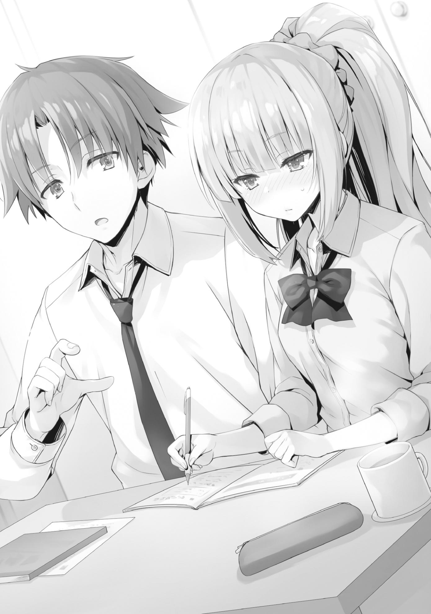
En general, me dio la impresión de que tenía una buena cabeza sobre sus hombros, pero el hecho de que no había sido diligente con sus estudios hasta ahora le había impedido alcanzar su máximo potencial. Sin embargo, no tenía intención de señalárselo.
Si sencillamente tuviera el hábito de descuidar sus estudios desde la infancia, entonces le diría algo. Sin embargo, en su caso, no fue capaz de recibir una educación normal y adecuada debido a la intimidación que sufrió en sus días de secundaria.
No aprendió adecuadamente algunos de los fundamentos que vienen con una educación secundaria, por lo que tenía dificultades con sus lecciones en la preparatoria.
Tomando todo eso en consideración, diría que lo estaba haciendo sorprendentemente bien.
Guiarla delicadamente, permitiéndole buscar las respuestas por sí misma, era la forma correcta de darle clases particulares.
Si pudiera llegar al punto en el que empezara a sentir que estudiar ya no es doloroso, crecería y maduraría mucho, al igual que Sudou.
—Hey...
—¿Qué pasa?
Kei de repente empezó a mirar el suelo delante de ella.
Y luego, después de lo que parecieron ser varios segundos, extendió la mano y recogió algo.
Me pregunté si era sólo un pedazo de basura o algo de polvo o algo así, pero...
—¿Qué diablos es esto?
Mientras hablaba, extendió su brazo frente a mí, mostrándome lo que había encontrado entre su dedo índice y pulgar.
Era una larga hebra de pelo rojo.
—Eso es un pelo, ¿verdad?
Cuando dije lo que pensaba que era, la expresión de Kei se retorció instantáneamente de ira.
—¡Un pelo rojo! ¡Un maldito pelo largo! No importa cómo lo mires, ¡es un pelo de chica!
Ella tenía razón. Dado el largo, era físicamente imposible que fuera mi cabello.
Y, por supuesto, el tipo de cabello también era completamente diferente. Su dueña vino inmediatamente a mi mente. No tenía ninguna duda de que pertenecía a Amasawa Ichika, que había venido a comer el otro día.
—¿A quién invitaste?
Preguntó, porque nadie se le ocurrió con este tipo de pelo de todos nuestros compañeros de clase.
—¿Es esto esa cosa? ¿Celos...?
—¿Es algo malo? ¡Soy tu novia Kiyotaka! ¡Tengo derecho a meter las narices en todo tipo de cosas!
Era la primera vez que oía hablar de ese derecho. De cualquier manera, debería tomar esto como una lección.
Después de invitar a una chica a mi habitación, me aseguraría de limpiarla a fondo a partir de ahora.
Me tomé este conocimiento en serio, y aun así el desastre continuó. Mientras deliberaba sobre cómo explicarle las cosas a Kei, el sonido del timbre de la puerta resonó inesperadamente por toda la habitación. Después de lo cual, un video del vestíbulo del dormitorio fue mostrado en el monitor cerca de la entrada.
No sólo yo, el dueño de la habitación, tenía curiosidad por saber quién era, sino también Kei. Los dos nos acercamos a mirar la pantalla.
Entonces, vimos nada menos que a Amasawa, agitando su mano a la cámara con una amplia sonrisa en su cara.
La primera en reaccionar no fui yo, sino Kei, el pelo rojo que aún agarraba con fuerza en su mano.
—Una chica que nunca he visto antes con pelo rojo...
Me pareció que intentaba resolver el enigma de un programa de televisión de misterio para niños.
Kei se acercó y presionó el botón de llamada antes de que pudiera tener la oportunidad de hacerlo yo mismo.
—¿Quién es?
Kei habló a través del altavoz, su voz llena de una rabia manifiesta, a la que Amasawa naturalmente saltó con sorpresa.
—¿Eh? Habitación 401... Esta es la habitación de Ayanokouji-senpai...
¿verdad?
Tiré con fuerza del brazo de Kei y me hice cargo.
—Lo siento, soy yo. ¿Qué es lo que quieres?
Aunque se trataba de una visita sin previo aviso, no había manera de que pudiera dejar que Kei lo manejara así. Dejando de lado a Amasawa, dado el alto tráfico de personas en el vestíbulo, sería un problema si alguien escuchara que Kei y yo estábamos juntos.
—Ah, ¿tienes compañía? ¿Debería volver más tarde? Me gustaría subir y hablar un poco contigo, pero...
Miré a Kei. Aunque me estaba mirando, hizo un gesto para que Amasawa viniera en lugar de ordenarme que la echara.
Obviamente, quería asegurarse de que el pelo fuera de Amasawa.
—No, está bien. Sube.
Presioné el botón de liberación del bloqueo automático y momentos después, Amasawa entró en el ascensor.
—¿Estás segura de que estás bien con esto? ¿Dejar que otra estudiante se entere de que estás aquí?
—... Lo que sea.
Kei estaba tan increíblemente enfadada que se descontroló.
Kei fue la que dijo que quería mantener nuestra relación de novio-novia en secreto de los que nos rodean en este momento.
Si nos encontramos con alguien en esta situación, es posible que los rumores sobre ello empiecen a extenderse.
—Bueno, ya es demasiado tarde, ¿verdad? No tenemos más remedio que intentar engañarla de alguna manera.
En cualquier caso, Amasawa ya había oído la voz de Kei, así que sacarla antes de que llegara aquí no sería un gran éxito.
Más bien, teníamos que considerar la posibilidad de que al hacerlo Amasawa sospechara todavía más.
Aproximadamente un minuto más tarde, Amasawa llegó al cuarto piso y tocó el timbre de mi habitación.
—La dejaré entrar, así que siéntate aquí y espera por ahora.
—Yo... lo entiendo.
Fui a la puerta principal y saludé a Amasawa.
—Siento la repentina visita~ Ayanokouji-senpai.
Estudió mi expresión por un momento antes de enviar una mirada calculadora a los zapatos de la entrada.
¿Cómo decirlo...? ¿Es esto lo que se conoce como "intuición femenina"?
—¿Novia?
Lanzó una pregunta directa con una amplia sonrisa en su cara.
—¿Qué puedo hacer por ti?
—Qué perverso... Bueno, a decir verdad, creo que me dejé algo en tu habitación la última vez que estuve aquí.
—¿Qué es?
—MI cinta de pelo favorita. No la encuentro en ninguna parte...
Así que, después de darse cuenta de su desaparición, ¿vino aquí para intentar buscarla?
—Bueno, pasa.
No podía hacer que se quedara parada y esperara en el pasillo, así que decidí dejarla entrar.
En lugar de poner excusas mezquinas sobre el pelo que Kei encontró, sería más rápido que Amasawa lo explicara ella misma.
—Perdona la intrusión.
Amasawa entró directamente, completamente despreocupada por la presencia de mi otra visitante. Parecía que acababa de regresar de la escuela, ya que todavía tenía su mochila en la mano.
Y entonces, se encontró cara a cara con Kei, que estaba esperando más adentro.
—Oh, hola... soy Amasawa Ichika...
—Hola.
Kei parecía obviamente infeliz, pero hacía todo lo posible por soportarlo a su manera.
—Eres una senpai, ¿verdad? Me encantaría escuchar tu nombre.
—...Karuizawa Kei.
—Karuizawa-senpai, ¿verdad? Ah, parece que estuvieron estudiando juntos, ¿eh? ¿Por casualidad eres su novia? Ayanokouji-senpai esquivó la pregunta hace un rato, pero me encantaría saberlo.
La capacidad de Amasawa de preguntar lo que quería sin la más mínima duda era un verdadero talento.
—Eso no tiene nada que ver contigo. ¿Qué pasa con eso de todas formas?
¿Cuál es tu relación con Kiyotaka?
Aunque sin duda se dio cuenta de que algo pasaba por la forma en que Kei me llamaba por mi nombre, Amasawa echó un vistazo a la habitación.
—Espera y responderé a esa pregunta en un momento. Hmm, no la veo con una mirada... Aunque estoy segura de que me lo quité cuando estuve aquí la última vez. Bueno... tal vez quedó bajo algo en algún lugar.
Entonces, Amasawa se arrodilló y empezó a mirar debajo de mi cama, sin tener en cuenta el ceño fruncido de Kei. Mientras lo hacía, el dobladillo de su falda se elevó, naturalmente centrando la atención en el tamaño de su trasero.
—Ah... Senpai. Esto podría ser demasiado atrevido para que yo lo maneje.
Todavía arrodillada junto a la cama, Amasawa giró la cabeza y me miró. Habló con una voz que parecía enfatizar que lo hacía a propósito.
Kei miró repentinamente hacia mí, con una mirada fulminante.
—Yo lo buscaré.
Intercambiando lugares con Amasawa, empecé comprobando si la cinta del pelo terminó debajo de mi cama de alguna manera.
—Oye, ¿podrías no ignorar lo que dije? ¡Responde a mi pregunta!
—Hmm, Ayanokouji-senpai es mi... ¿cómo decirlo?... mi chef exclusivo y personal.
—¿Eh? ¿Qué demonios?
Después de escuchar una respuesta que no podía entender, Kei se giró hacia mí otra vez, la mirada en sus ojos aún más dura que antes.
—Es la compañera de Sudou. Nos conocimos por algo trivial y terminé cocinando una comida para ella.
—Lo siento, pero no entiendo a qué quieres llegar. ¿Por qué estabas cocinando para la pareja de Sudou-kun?
Dado que sólo le había dado un resumen de lo que sucedió, su confusión era ciertamente comprensible.
Continué explicándolo con más detalle mientras seguía buscando la cinta del pelo bajo la cama.
Poco después de terminar de explicarlo por segunda vez, Amasawa volvió a hablar.
—¿Podría ir a ver en la cocina, por si acaso? Podría habérmela quitado cuando estaba lavando los platos. Ah, Senpai, por favor, sigue buscando dentro de la habitación. ¿Quizás esté bajo el armario?
—De acuerdo.
No encontré nada debajo de la cama, así que empecé a buscar en el área alrededor del armario.
Insatisfecha con mi segunda explicación, Kei vino y se agachó a mi lado, susurrándome en voz baja y silenciosa.
—Espera... Dijiste que podría o no haber una cinta de pelo aquí... ¿¡Qué se supone que significa eso!?
—Te lo dije. Invité a Amasawa y le preparé una comida. Eso es todo.
—¿Eso es todo?
—Por supuesto que lo es.
—...¿En serio?
Parece que no pude hacer que me creyera sólo con una explicación verbal.
—Voy a ir a ver a esa chica y ver si estás diciendo la verdad.
Con eso, Kei intentó ponerse de pie, pero yo la agarré con fuerza del brazo y la detuve.
Y luego, rápidamente llevé mi dedo índice a sus labios, indicándole sutilmente que se callara.
Rápida en la asimilación cuando más importa, Kei se abstuvo de hacer un escándalo.
—Busca por aquí conmigo.
—Yo... yo entiendo.
Aunque no entendía mis intenciones, se las arregló para reconocer que era importante y empezó a ayudarme con la búsqueda.
—¡Ah! Ayanokouji-senpai, ¡la encontré!
La voz de Amasawa sonó desde el interior de la cocina.
Juntos, Kei y yo miramos hacia la cocina, sólo para ver a Amasawa presentándonos la cinta del pelo en la palma de su mano.
—Parece que cayó en el hueco entre la encimera y el refrigerador.
Amasawa sonrió felizmente mientras la ponía en su bolsillo.
—Estoy interrumpiendo algo, así que me iré. Siento todo el alboroto. No, está bien. No debería haberla olvidado en primer lugar. Bueno, siento haberlos molestado a los dos...
Amasawa fue inmediatamente a recoger su mochila y se puso los zapatos en la entrada.
—Pero ahora que lo pienso, Senpai tampoco es alguien a quien subestimar... No esperaba que tuvieras una novia tan guapa.
Después de decir eso, Amasawa puso su dedo en la mejilla, demostrando que estaba pensando en algo.
—Hablando de eso, ¿sabes qué? No es buena idea que seamos sólo nosotros dos la próxima vez que cocines para mí, ¿eh?
—¡Obviamente!
—En ese case─ hagamos que Karuizawa-senpai coma con nosotros la próxima vez... ¡De todas formas, sayonara!
Amasawa vino y se fue como una tormenta pasajera.
—Conociste a una linda kouhai, ¿eh, Kiyotaka?
—No vas a escucharme sin importar lo que diga, ¿verdad?
El humor de estudio entre nosotros ya había desaparecido, pero tenía que seguir explicándole la verdad hasta que estuviera satisfecha.
PARTE 6
Pasó el viernes y llegó el sábado, el primer día del fin de semana.
Hubo muchas oportunidades de involucrarse con los estudiantes de primer año estos últimos cinco días, en parte gracias a la influencia del examen especial. Se produjo nuestro encuentro con Amasawa, una estudiante de la clase 1-A, que me llevó a cocinar una comida casera para asegurarle a Sudou una pareja. Y
luego, no mucho después, tuvimos una discusión con Nanase para llegar a un acuerdo entre nuestra clase y la clase 1-D.
En otras novedades, Kushida se las arregló para hacer conexiones con Yagami, un estudiante de la clase 1-B. Y gracias a la ayuda de Yagami, varios estudiantes, como Kei, lograron encontrar compañeros para ellos también. Este examen especial sería evaluado de manera diferente dependiendo de la persona que lo mirara, pero puede ser particularmente significativo en términos de interacción entre los años escolares.
Muchos estudiantes ya aprendieron los nombres y las caras de los alumnos de las clases superiores e inferiores, y algunos hasta conocen sus calificaciones.
Además, descubrimos sobre las diferentes inclinaciones de cada una de las clases.
Por el momento, la clase 1-A no tiene un líder claro, lo que da la impresión de que cada estudiante es libre de actuar por su cuenta. Una de las razones por las que esto se permite es la alta capacidad académica de la clase en su conjunto.
Fiel a su nombre, la Clase 1-A tiene el mayor número de estudiantes con calificaciones de Capacidad Académica de B- o superior. Muchos de los estudiantes más capaces académicamente tomaron la iniciativa de negociar contratos con las Clases 2-A y 2-C por puntos. Mientras que la clase obviamente tenía varios estudiantes con calificaciones de Habilidad Académica de nivel D, estos estudiantes todavía sobresalían en otros aspectos, así que la Clase 2-A hizo todo lo posible para conseguirlos también. De los 40 estudiantes de la clase, 34 ya se habían decidido por su pareja.
La clase 1-B era similar a la clase 1-A en el sentido de que aún no había surgido un líder definido. Además, los estudiantes académicamente capaces también se estaban vendiendo como compañeros. La principal diferencia era que muchos de ellos se habían asociado con estudiantes de la clase 2-C en lugar de la clase 2-A. Esto se debía al hecho de que Ryuuen ofreció más puntos que Sakayanagi, pero los detalles de la situación aún no estaban claros por el momento. En este momento, 33 de los 40 estudiantes se habían decidido por sus parejas.
La clase 1-D estaba actualmente dirigida por Housen, que tomó el control de la clase con mano de hierro. En esencia, no era diferente de lo que Ryuuen hizo con su clase el año pasado. Lo más notable de ellos era que habían seleccionado el menor número de compañeros de todas las clases.
Averiguaríamos más una vez que nos reuniéramos con ellos el próximo domingo.
Y finalmente, estaba la clase 1-C, la única clase con la cual no me había involucrado en absoluto la semana pasada. Ya había memorizado los nombres de cada uno de los estudiantes, pero no había escuchado nada sobre la clase, ni siquiera de Horikita. La razón principal de esto es que la mayoría de los estudiantes de la clase 1-C firmaron contratos de colaboración con la clase 2-B
después de asistir a la reunión de Ichinose a principios de la semana. De sus 40
estudiantes, 10 aún no habían decidido sus compañeros, pero ninguno de esos
10 tenía una calificación de habilidad académica por debajo de D-. En otras palabras, como clase, lograron garantizar una posición segura para casi todos.
En vista de ello, la clase 1-C podría tener algún tipo de intermediario de clase que utilizó la reunión para salvar con éxito a sus compañeros.
Después por la tarde, arranqué la aplicación OAA para examinar a todos los compañeros que habían completado sus parejas hasta el día de hoy.
—105 parejas. Aproximadamente el 70%, ¿eh?
Considerando el número de estudiantes que estaban en la biblioteca ayer, la mayoría de ellos querían terminar con esto para el fin de semana. También se vio más movimiento en la clase 1-D, ya que ahora se decidieron un total de 8
compañeros. No sabía si el fin de semana hizo que Housen se sintiera impaciente, o...
De todos modos, el número de estudiantes que todavía no se habían decidido por un compañero es de 55 para los de primer año y 52 para los de segundo año.
Si el ejecutor de la Habitación Blanca estaba entre esos 55 estudiantes, las probabilidades de formar pareja con él eran muy altas.
Con toda honestidad, no había manera de garantizar al 100% que pudiera evitar elegir al estudiante de la Habitación Blanca.
Por supuesto, la única razón para ello es porque no despiden ninguna esencia.
He estado prolongando el proceso, manteniendo la esperanza de algún tipo de evidencia que me permitiera decidir que alguien es seguro, pero esa estrategia estaba a punto de llegar a su límite. Debo tomar una decisión antes de que mis opciones se reduzcan todavía más.
Aunque las negociaciones con la Clase 1-D se llevarían a cabo pronto, sentí que debía estar preparado para otras opciones.
Decidí ir al centro comercial de Keyaki esta tarde para tratar de abrir mis posibilidades.
PARTE 7
Naturalmente, el centro comercial de Keyaki un sábado por la tarde estaba prácticamente lleno de estudiantes.
En particular, estudiantes que ya habían decidido sus parejas para el examen especial. Como no necesitaban preocuparse por encontrar una pareja, eran libres de dedicar su atención a estudiar para el examen de la semana siguiente junto con sus amigos o simplemente pasar el rato y relajarse.
Todavía no me había puesto en contacto personalmente con todos los estudiantes de primer año, pero aun así, sentí que si hubiera alguien de la Habitación Blanca en la zona, ya lo habría encontrado. Sin embargo, no tuve esa clase de impresión especial de nadie que hubiera visto hasta ahora.
Si tuviera que dar un ejemplo de la impresión que buscaba, la vez que hablé con Nanase en la biblioteca fue lo primero que me vino a la mente. Sospeché que Tsukishiro o alguien cercano a él había enseñado al ejecutor de la Habitación Blanca a comportarse como un "estudiante". Sin embargo, el problema no tenía nada que ver con si tenía una cierta personalidad o no.
El problema era que ocultaba completamente cualquier rastro de su verdadera identidad.
Es algo similar a lo que yo hacía cuando llegué a esta escuela hace un año.
Había ciertas desventajas e inconvenientes en crecer sin saber nada del mundo real.
Una de esas desventajas era que no sabía lo que significaba ser un "estudiante".
Nunca nos enseñaron algo así en la Habitación Blanca, ya que nunca tuvieron la intención de que fuéramos a la escuela.
Por eso, al principio, decidí arbitrariamente crear un personaje y usarlo para actuar.
Intenté todo tipo de cosas, como cambiar el tono de mi voz o hablar más de lo normal.
Asumí el papel de un estudiante un poco impertinente que veía el mundo un poco diferente.
Aunque... al final, la actuación comenzó a ser tediosa e insostenible, así que finalmente volví a mi verdadero ser.
Me di cuenta de que, incluso si no ocultaba mi verdadero yo, podía seguir viviendo como estudiante. Sin embargo, la persona que había sido enviada para infiltrarse en la escuela era diferente.
Se presentaba como un estudiante normal con el único propósito de mantener su identidad en secreto. No tenía forma de saber si los que conocía eran sólo estudiantes normales, o sólo actuaban como uno. De cualquier manera, probablemente no me haría saber su presencia muy fácilmente.
Cualquiera capaz de sobrevivir en ese mundo no puede ser subestimado, sin importar su género.
Aunque confiaba en que saldría adelante en términos de habilidad individual, seguía en una posición abrumadoramente desventajosa ya que me obligaban a estar a la defensiva. Mi oponente podía utilizar cualquier medio a su disposición para forzar mi expulsión, mientras que lo único que yo podía hacer para protegerme era tratar de averiguar su estrategia.
En mi camino de regreso de una rápida parada en Hamming, me encontré con Sakayanagi.
—Parece que recientemente has sido muy proactivo en la interacción con los estudiantes de primer año, Ayanokouji-kun.
—Eso es porque los estudiantes con bajas calificaciones no tienen otra opción que luchar por sus vidas. Acabo de ayudar a Horikita a encontrar compañeros para Sudou e Ike.
—Ya veo. De hecho, si uno de esos dos sacara la parte más corta del palo y se emparejara con un mal compañero, puedo decir con certeza que se enfrentarían a la expulsión.
Aunque Sakayanagi parecía al menos algo convencida con mi excusa, no se detuvo ahí.
—Sin embargo, ¿es eso realmente todo, Ayanokouji-kun?
—¿Qué quieres decir?
—Para que te expulsen, imagino que la Habitación Blanca podría enviar a alguien... una especie de ejecutor para infiltrarse en los estudiantes de primer año. Aunque obtengas una puntuación perfecta, si tu compañero obtiene un cero, ambos serán expulsados de la escuela. Por eso he estado pensando que este examen podría ser particularmente problemático para ti.
Traté de fingir ignorancia, pero dado lo que ella dijo, era como si esto fuera algo de lo que estaba consciente desde el principio en vez de algo que se le ocurrió de improviso.
—No hay manera de que puedas mantener una vida escolar pacífica indefinidamente, ¿sabes? Si tu oponente tiene ganas, puede que esté dispuesto a exponer tus verdaderas habilidades a todo el mundo. Sin embargo, si a pesar de eso todavía eres capaz de mantener una vida escolar agradable, entonces supongo que mis temores son infundados.
—Bueno, no tienes que preocuparte por eso.
—¿Y podría hacer que me digas tu razonamiento para eso?
—He decidido abandonar mi antigua forma de pensar. No planeo esconder nada de ahora en adelante.
Para mí, en este momento, continuar con mi vida escolar era mi máxima prioridad.
Si seguía obsesionado con las cosas equivocadas, había una posibilidad de que me quitaran la alfombra debajo de mí.
—Así que las cosas son así. Ya has revelado algunas de tus habilidades a ciertos individuos como Mashima-sensei, así que probablemente sea más conveniente revelar todo por completo, ¿no?
Sakayanagi respondió, después de escuchar con gusto mi explicación.
—Volviendo al tema que nos ocupa, si todavía no has encontrado un compañero, ¿qué tal si te ayudo y te ahorro algo de tiempo? No quedan muchos, pero estoy familiarizada con algunos alumnos de primer año que todavía no tienen pareja. No son de los que te causan problemas.
Gracias a sus esfuerzos de investigación, resultó que Sakayanagi se esforzó mucho por dejarme un par de estudiantes seguros.
—Es muy generoso de tu parte, pero me temo que debo rechazarlo.
—¿Es que no confías en mi juicio?
Ella ya me había examinado desde hace mucho tiempo, sabiendo muy bien que tenía que tomar mi decisión pronto.
—Reconozco tus habilidades, pero decidiré mi destino yo mismo.
Si tuviera un final trágico después de confiar mi destino a otra persona, me sentiría muy arrepentido.
—Además, creo que ya descubrí lo que tengo que hacer.
—¿Es así? Bueno, en ese caso, no diré nada más. Estaré pendiente desde lejos para ver lo que haces, Ayanokouji-kun. Espero el día en que podamos tener nuestra revancha.
Con eso, Sakayanagi inclinó la cabeza y se alejó. Ella nunca ha considerado la idea de que yo pueda ser expulsado. En cierto sentido, se puede decir que ella puso mucha confianza en mí.
PARTE 8
En el camino de regreso del centro comercial de Keyaki...
—Uhm, ¿tienes, tal vez, un minuto?
Una voz algo perezosa de un chico me llamó por detrás.
Me di la vuelta y encontré un chico y una chica mirándome fijamente. La chica, cambiando repetidamente su mirada entre su teléfono celular y yo, era Tsubaki Sakurako de la clase 1-C. El chico que estaba a su lado era su compañero de clase, Utomiya Riku.
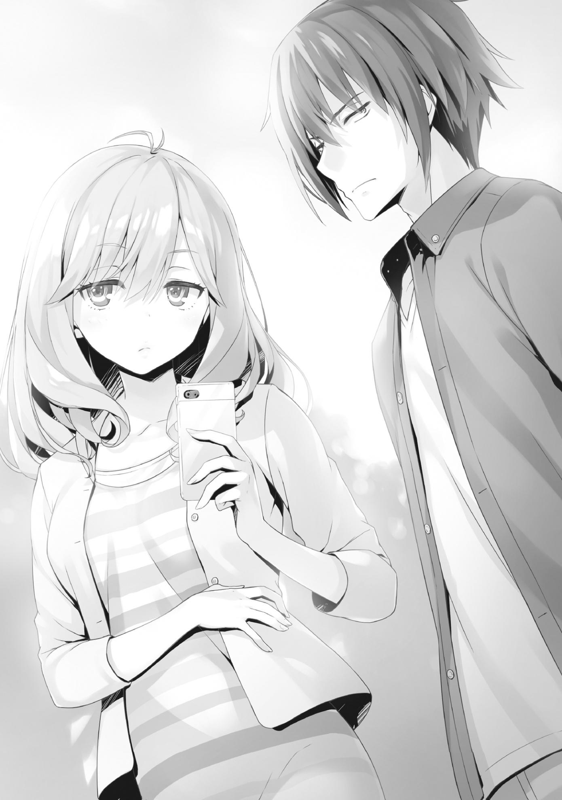
—Eres de la clase 2-D... Ayanokouji-senpai, ¿correcto?
No podía ver lo que había en la pantalla de su teléfono desde donde estaba, pero lo más probable es que tuviera la aplicación OAA abierta.
—Soy Utomiya, y su nombre es Tsubaki. ¿Podríamos hablar contigo un poco sobre ser compañeros para este examen especial?
—¿Compañeros?
—Sí. En estos momentos estamos buscando a estudiantes superiores con una calificación de C o superior que estén dispuestos a colaborar con nosotros.
Ya que hoy salí en busca de un compañero, este desarrollo se sentía demasiado bueno para ser verdad. Casi se sentía como si me hubieran estado esperando.
No sabía si debía o no confiar en un intento abierto de contactarme.
Bueno, tomar mi decisión basado en el momento oportuno sería el error más peligroso de todos.
—He tenido algunos problemas para encontrar un compañero. ¿Podrías darme más detalles?
Con la aplicación, puedes conocer la cara, el nombre y las calificaciones de un estudiante. Sin embargo, naturalmente te quedarías a oscuras con respecto a su personalidad. Por eso era tan necesario reunirse cara a cara y hablar con la otra persona, ya que te ayudaba a determinar si podías confiar en ella.
Por cierto, mientras que Utomiya ya había decidido su pareja, Tsubaki aún no había encontrado ninguna. Como su calificación de capacidad académica es de C- no era en lo más mínimo alta, seguramente quería asociarse con alguien que tuviera una calificación de C o más alta.
Dicho esto, no estaba claro si buscaban para Tsubaki o para uno de sus compañeros.
—En lugar de estar aquí, ¿qué tal si discutimos las cosas en el café?
Encabezando la conversación, Utomiya propuso respetuosamente cambiar de lugar.
Ciertamente no era un tema que pudiera decidirse en un minuto o dos, así que acepté su propuesta.
Aunque estaba bastante lleno, los tres ocupamos unos asientos vacíos en una parte vacía del café.
—Esto puede parecer repentino, pero ¿podrías por favor escucharnos?
Utomiya se giró y miró hacia Tsubaki, haciéndole señas para que empezara a hablar.
—La cosa es que no me gusta deber favores o estar en deuda con alguien o cosas así. Quiero un acuerdo aislado sin ataduras.
Tsubaki parecía un poco distante, mirándose las uñas mientras hablaba.
Entre un C y una C-, las calificaciones eran casi idénticas, más o menos.
Así que dada la similitud, ninguna de las partes tendría realmente la ventaja si se emparejaran.
—¿Puedo preguntar algo que me está molestando?
—Por favor, adelante.
—La mayoría de los estudiantes tienen calificaciones de habilidad académica en o alrededor de C. ¿Por qué no encontraste un compañero antes?
De todos en el segundo año, debería haber varios estudiantes que estuvieran más que contentos de formar equipo con Tsubaki.
No obtendrían una puntuación alta, pero al menos se las arreglarían para evitar la expulsión.
El hecho de que todavía no hubiera encontrado un compañero al cabo de una semana de examen me preocupaba.
—Eso es-
Utomiya se atragantó un poco con sus palabras.
Al darse cuenta de esto, Tsubaki me miró a los ojos por primera vez.
—Es culpa mía. Nunca dije nada al respecto.
Usando las palabras de Tsubaki como punto de partida, Utomiya continuó con su propia explicación.
—Inicialmente, Tsubaki no consultó a nadie sobre la búsqueda de una pareja. Pero cuando llegó el viernes, supongo que empezó a impacientarse... ...ya que vino a contarme lo que quería hacer.
Así que, en una carrera contra el tiempo, Utomiya empezó a hacer todo lo posible para ayudar a su compañera.
Después de todo, la mayoría de sus otros compañeros de clase ya habían decidido sus parejas.
Aunque todavía tenían una semana más para encontrar a alguien, una cierta cantidad de ansiedad no era nada fuera de lo normal.
—Con la capacidad académica de Tsubaki, la penalización del 5% podría ser un problema.
Esta era la razón por la que se acercaron a mí, un estudiante con una calificación de C.
Si no hubiera circunstancias especiales, seguramente habría aceptado su propuesta sin dudarlo ni un momento.
Sin embargo, había una razón por la que no podía tomar una decisión tan apresurada. Este escenario era muy similar al que imaginé cuando nos explicaron por primera vez las reglas de este examen especial.
Que, los estudiantes con los que más probabilidades tenía de emparejarme eran aquellos con una calificación de Habilidad Académica similar a la mía.
Y ahora, Tsubaki, una estudiante con una calificación de C-, llegó en busca de un compañero.
Era la primera vez que me reunía con Tsubaki y Utomiya, así que necesitaba sondearlos antes de tomar una decisión.
—Me gustaría preguntarte algo. Antes, dijiste que habías estado buscando a los de la clase alta. ¿A cuántas personas has contactado antes que a mí?
Decidí empezar preguntando algo simple, pero la respuesta de Utomiya fue bastante inesperada.
—Lo siento, las palabras que elegí fueron un poco engañosas; eres la primera persona a la que nos acercamos.
Utomiya me ofreció una disculpa antes de que tuviera la oportunidad de seguir investigando.
—Así que, si no estás dispuesto a unirte a ella, tendremos que buscar a alguien que lo haga.
—Oh, así que resulta que soy la primera persona a la que se acercan.
—En realidad, hay una razón por la que elegimos reunirnos contigo primero. Pensamos que podría haber un requisito de puntos privados si le preguntábamos a alguien de la clase 2-A o 2-C.
Ya veo. Es cierto que, como pasa ahora, los estudiantes de primer año estaban siendo comprados por los de segundo año.
Dadas las circunstancias, no sería sorprendente que alguien exigiera algunos puntos a cambio de asociarse con Tsubaki. Sin embargo, en la práctica, no estaría haciendo ninguna demanda a los estudiantes con altas calificaciones de habilidad académica. Todavía había muchos estudiantes sin pareja, así que ella podía simplemente emparejarse con alguien sin pagar nada. Era poco probable que no hubieran considerado esto ya.
Pero sería un poco extraño si les dijera que estaría bien que se asociaran con alguien de la clase 2-A o 2-C aunque yo no me hubiera decidido por un compañero todavía.
Hablando objetivamente, no había ni una sola razón para que yo rechazara su oferta.
Mis opciones aquí eran limitadas.
—Aunque aún no me he decidido por mi pareja, ya tengo un candidato en mente. De hecho, ya hemos hablado varias veces sobre trabajar juntos.
Era una mentira a medias, pero ninguno de los dos tenía forma de confirmarlo.
Además, si esto era suficiente para hacerlos retroceder, entonces lo más probable es que los dos fueran inocentes.
—Entonces así es... ya veo.
Utomiya miró a Tsubaki con una expresión de preocupación en su cara.
—Entonces supongo que es inútil, ¿verdad? Parece que será más rápido buscar a otra persona.
Tsubaki intentó echarse atrás en cuanto se enteró de que ya tenía en mente un candidato a compañero.
—Me gustaría preguntar, sólo como referencia... ¿con qué estudiante de primer año piensas emparejarte?
Mientras Tsubaki intentaba alejarse, Utomiya seguía con ello.
—No puedo decirte eso. Lo único que puedo decir con seguridad es que no están en la clase 1-C.
Aunque no le di ninguna explicación de por qué no podía decírselo, debería haber adivinado bien la razón.
Que, no le daría información a un enemigo, un rival, del estudiante con el que buscaba trabajar.
—Vamos Utomiya-kun. No deberíamos desperdiciar más el tiempo de Ayanokouji-senpai de esta manera.
—...Tienes razón.
Estaba agradecido de que me hubieran contactado, pero no podía tomar una decisión tan apresurada.
Había muy pocos datos sobre Tsubaki Sakurako.
—Por si acaso, aquí está mi información de contacto.
Utomiya me entregó un papel con su información de contacto escrita en él que había preparado de antemano.
—Es un poco egoísta por mi parte decir esto, pero podría contactar contigo si la persona con la que pienso trabajar me rechaza. En ese caso, si todavía está dispuesta a asociarse conmigo en ese momento, entonces por favor hágamelo saber.
—Entendido. Vamos Tsubaki.
A instancias de Utomiya, Tsubaki descruzó sus brazos y se levantó de su asiento.
Y entonces, se inclinó ligeramente antes de irse con Utomiya, en busca de otra persona con quien asociarse.
—Tsubaki Sakurako y Utomiya Riku, ¿eh? Debo tenerlos en cuenta.
Ahora que había desperdiciado la oportunidad de asegurar a mi compañero, mis acciones en el futuro serían de suma importancia.
Después de todo, no sería muy divertido si me asociara con otro estudiante de primer año y terminara sacando el extremo corto del palo.
PARTE 9
Ese mismo día, dos chicas de la clase 2-D caminaban juntas, una al lado de la otra.
Estábamos yo, Karuizawa Kei, y mi amiga, Satou Maya-san. Las dos solíamos pasar el rato juntas todo el tiempo. Eso es, hasta hace unos meses.
Recientemente, empezamos a vernos con mucha menos frecuencia. No era como si nos hubiéramos peleado o algo así. Sólo que inconscientemente empecé a sentirme culpable, y como resultado, se me hizo difícil mantenerme en contacto con ella.
—Siento haberte llamado de repente, Karuizawa-san.
—No, está totalmente bien. Yo también he querido salir contigo, Satou-san.
De todas formas, seguro que hace mucho tiempo que no salimos juntas así, ¿eh?
—Sí, seguro que sí. Solíamos pasar el rato juntas todo el tiempo cuando nos matriculamos aquí...
—Entonces, ¿qué quieres hacer? Es un poco temprano para el almuerzo,
¿no?
Caminando un poco por delante de ella, hice una pregunta sobre nuestros planes mientras inclinaba ligeramente mi cabeza para contemplarla.
Eran sólo un poco más de las 11 de la mañana.
Hoy temprano, Satou-san llamó y me preguntó si quería caminar por el centro comercial de Keyaki junto con ella.
Sin embargo, respondió con prisa justo cuando nos acercábamos a la entrada del centro comercial.
—Uhm.
—¿Hmm?
—¿Qué tal si... nos dirigimos por aquí en vez de eso?
Satou-san señaló el camino que conducía a los edificios de la escuela, una dirección completamente diferente a la del centro comercial.
—¿A la escuela? ¿Hay algo que tengas que hacer allí? Pero es el fin de semana, y estoy bastante segura de que no puedes ir allí sin tu uniforme,
¿verdad?
—No es que quiera ir al edificio de la escuela o algo así, es sólo que...
quiero ir a algún lugar sin mucha gente alrededor ahora mismo.
Fruncí el ceño, incapaz de entender lo que intentaba decir exactamente.
Bueno, en realidad tenía una ligera sospecha sobre de qué se trataría.
Pero lo aparté de mi mente para convencerme de que estaba equivocada.
Simplemente seguí fingiendo; actuando como si no hubiera notado nada.
—¿Qué pasa Satou-san? No es propio de ti decir algo así. ¿No te sientes bien?
—... Sólo quiero hablar contigo un poco, ¿ok?
Tenía un mal presentimiento sobre a dónde iba esto, pero no me di el lujo de rechazarla aquí.
Así que, felizmente asentí y nos alejamos del centro comercial Keyaki, en dirección a la escuela.
Llegamos a un lugar donde no había más gente alrededor; un lugar donde nadie podría escuchar nuestra conversación.
—Adelante, habla. Tampoco te andes con rodeos. Somos amigas, ¿verdad?
Mis palabras no fueron de ninguna manera amables. En cambio, fueron extremadamente crueles.
Y aunque lo sabía, no podía contenerme para no decirlas.
Después de todo, soy Karuizawa Kei, la líder de las chicas de la clase 2-D.
Una persona egoísta y egocéntrica que no presta mucha atención a los sentimientos de los demás.
Si no lo fuera, la imagen que había mantenido hasta ahora se desmoronaría.
Satou-san seguramente también tenía esa misma impresión de mí.
Por eso no se sentiría abatida o enfadada por la forma en que le hablé.
En su lugar, sacaría sus propias conclusiones. Que yo, Karuizawa Kei, era el tipo de chica que no se tomaba en serio lo que tenía que decir. Que simplemente lo suavizaría y me detendría ahí. Esperaba incluso que, por casualidad, ella estuviera satisfecha con eso.
Que escogería evitar amargar nuestra relación teniendo esta conversación conmigo.
Sin embargo─ Satou-san no se detuvo.
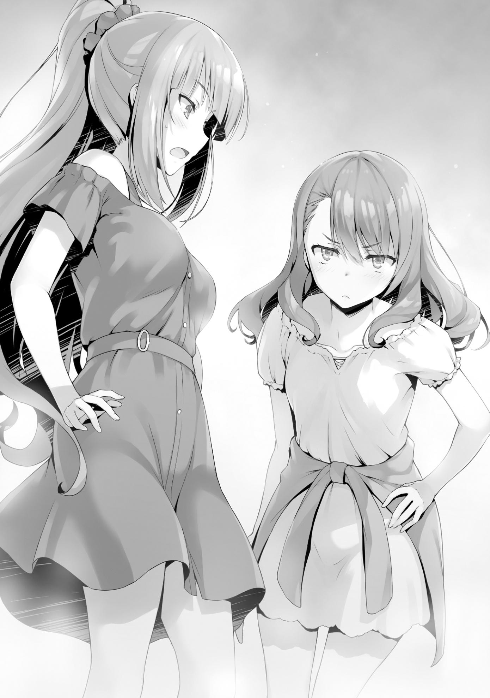
—Karuizawa-san... ¿Por qué rompiste con Hirata-kun?
—¿Eh? ¿No te lo dije ya?
Aunque su pregunta no estaba directamente relacionada con Kiyotaka, fue suficiente para hacer que mi corazón se acelerara.
A pesar de ello, me las arreglé para evitar que se me notara en la cara gracias a todo lo que había experimentado hasta ahora.
—Quiero decir, sí me lo has dicho y todo eso, es sólo que... no se sentía realmente bien.
—¿En serio? Bueno, supongo que fue un poco inútil. Espera, ¿estás tratando de convertirte en la nueva novia de Hirata-kun o algo así?
Esperaba que indicara que ya había perdido el interés en Kiyotaka.
Esta era esencialmente mi manera de confirmarlo con ella. Sin embargo, mi pregunta cayó en oídos sordos cuando respondió con palabras que me llegaron como un ataque directo.
—Por ejemplo, ¿quizás rompiste con Hirata-kun porque tenías otro objetivo en mente?
Ah, así que ella era consciente de ello. Sobre el hecho de que me había enamorado de Kiyotaka, y que mi relación con él había cambiado...
—¿Qué demo─? No entiendo lo que estás diciendo.
Hasta hoy, he mantenido a propósito la apariencia de mi yo normal y corriente.
Incluso si, tarde o temprano, llega el día en que mi relación con Kiyotaka tiene que ser revelada, no tenía más remedio que dar la espalda y huir de su acusación ya que había decidido mantenerlo en secreto.
No importaba lo que ella trajera a colación, estaba completamente preparada para suavizarlo antes de que algo se saliera de control.
O, bueno, pensé que lo estaba.
—... Karuizawa-san... ¿Estás saliendo con Ayanokouji-kun o algo así?
—¿Eh...?
Recibí un golpe inesperado. No tuve tiempo de responder a este ataque, un golpe por la espalda.
Puede haber sido diferente si estaba tratando con alguien más, pero en la cara de Satou-san, ese momento de vacilación fue similar a una herida fatal.
Ella había, como si fuera completamente natural, mirado mi corazón.
Si me hubiera preguntado si me gustaba o no, definitivamente habría sido capaz de ocultarlo.
Pero su pregunta fue más profunda que eso.
—¿...Así que después de todo yo tenía razón?
—¿Eh? No, no, no, ¡espera! ¿¡Qué te hace pensar eso!?
Por supuesto, lo negué. Independientemente de si significó algo o no, lo negué.
Después de todo, no había manera de que pudiera admitirlo aquí y ahora.
—Conmigo, eso, por qué...
Mis palabras como negación se desvanecieron cuando vi la mirada en sus ojos.
Ojos que parecían estar a punto de llorar, pero que al mismo tiempo contenían rastros de ira.
Y tenía sentido. Después de todo, ella confió en mí lo suficiente como para preguntarme sobre la posibilidad de entrar en una relación con Kiyotaka.
Y entonces, la ayudé. Todo ello mientras ocultaba el hecho de que yo misma empezaba a sentirme atraída por Kiyotaka. Si estuviera en su lugar, querría abofetearme por haber salido con Kiyotaka después de todo lo que había pasado.
En ese momento, no importaba lo que dijera. Ya se había convencido de que tenía razón.
—¿Ya estabas interesada en él cuando te pedí que me ayudaras a acercarme a él? ¿Te gustaba incluso antes de eso?
—E-espera, espera. Yo…
No tuve más remedio que enfrentarme a las preguntas de Satou-san.
—Yo... yo le dije lo mismo a Matsushita-san y a las otras también. Les dije que me preguntaba si la razón por la que rompiste con Hirata-kun era porque te gustaba Ayanokouji-kun. Pero tampoco estoy sólo adivinando esto, ¿de acuerdo?
Estoy bastante segura de ello, así que, por eso saqué el tema.
Ya había escuchado que Matsushita-san sospechaba de mi relación con Kiyotaka.
No había ningún sitio al que pudiera huir ahora.
—Por favor, sólo dime la verdad. De lo contrario... no creo que sea capaz de pensar en ti como una amiga nunca más.
Sus palabras estaban cargadas de una fuerte emoción.
En todo caso, estaba intentando todo lo que podía para ser mi amiga, hasta el final.
—Bueno...
Simplemente no podía ignorar esa mirada seria y sincera en sus ojos.
No sabía por dónde empezar.
No, seguramente sería inútil tratar de ocultarlo.
Le contaría todo. Confiar en ella era lo menos que podía hacer para disculparme.
—Yo... Es como dijiste. Estoy saliendo con Ayano... No, estoy saliendo con Kiyotaka.
Satou-san naturalmente tuvo una reacción muy fuerte al escuchar esto.
Aunque se confesó a Kiyotaka y fue rechazada antes, todavía tenía sentimientos persistentes por él.
Sólo porque a ella y a mí nos terminó gustando la misma persona pude entender cómo se sentía.
—Lo llamas Kiyotaka, ¿eh?
Quería correr y esconderme de su fría mirada, pero no pude.
—Nos volvimos novios justo al final de las vacaciones de primavera.
Realmente no ha pasado tanto tiempo.
—Principalmente quiero saber cuándo empezó a gustarte.
—...No estoy segura de cuándo exactamente. Pero, cuando me contactaste por primera vez, ya había empezado a pensar en Kiyotaka como un miembro del sexo opuesto.
—Ya veo...
No parecía que estuviera satisfecha con mi respuesta.
—Estás enojada, ¿verdad?
Hasta hace un momento, sus ojos estaban fijos en los míos, pero ahora no podía igualar mi mirada en absoluto.
—¿Qué esperabas? Sabías de mis sentimientos y aun así te acercaste a él a mis espaldas.
No había nada que pudiera decir para refutarla.
—Aunque, rechazó mi confesión, entonces... no tengo derecho a estar enojada ni nada. Es sólo que...
Una cálida brisa primaveral pasó suavemente por mi cara.
Sólo después de que se escuchara un sonido claro y definido me di cuenta de que me había abofeteado en la mejilla izquierda.
—Con eso, estamos a mano... ¿bien, Karuizawa-san?
El hecho de que me hubiera abofeteado fue más allá de mis expectativas.
Para ella, mis acciones fueron simplemente imperdonables.
—¿Qué tal si me golpeas una vez más?
Decidí que también podría ofrecerle mi mejilla derecha.
Después de todo, incluso ahora, el dolor que ella había sufrido era mucho mayor que el mío.
—No, eso... no creo que sea lo suficientemente valiente para eso... siento haberte golpeado...
—No. Yo soy el que lo siente. Enamorarme de la misma persona que tú y todo...
—No se puede evitar. Ayanokouji-kun es realmente genial, y es mucho más guapo que Hirata-kun.
Antes de que me diera cuenta, me encontré extendiendo mis brazos y tirando de Satou-san en un fuerte abrazo.
—¿Qué, espera, qué estás haciendo Karuizawa-san?
—... ¡Lo siento mucho!
—E-está bien, de verdad...
Aunque me sentía abrumadoramente arrepentida, simplemente no podía contener la felicidad que me había obligado a abrazarla.
Dos personas que se enamoran de la misma persona es difícil. Sin embargo, también significaba que ambas entendíamos su encanto.
No era el momento de decidir quién ganaba o perdía.
Después de todo, estoy segura de que el número de personas que caen por sus encantos sólo seguirá aumentando en el futuro.
Y tendré que luchar para no perder ante ninguna de ellas.
Si me tomo a la ligera mi posición como su novia, seguro que haré que me quiten la alfombra de debajo de mí.
Es posible que Satou-san termine convirtiéndose en una de mis rivales también.
—¿Quieres que vayamos a tomar el té juntas?
Todavía encerrada en mis brazos, Satou-san asintió con la cabeza, aceptando mi caprichosa petición.
EL SONIDO DE LA EXPULSIÓN
El domingo por la noche. La hora se acercaba a las 8:30 PM; El día señalado finalmente llegó.
La discusión que se avecinaba determinaría si podíamos unirnos o no a la clase 1-D.
O más bien, necesitábamos asegurarnos de que lo hiciéramos.
La mayoría de los estudiantes aparte de la clase 1-D y la clase 2-D ya habían encontrado pareja.
Si esta discusión no da los resultados deseados, podríamos vernos forzados a hacer múltiples y grandes concesiones para evitar enfrentarnos a cualquier penalización.
A Horikita y a mí nos acompañaría Sudou, que insistió mucho en acompañarnos.
Aunque seguramente estaba relacionado con su deseo de estar junto a Horikita, estaba bastante seguro de que era sobre todo porque desconfiaba de Housen.
Housen era el tipo de persona que, dependiendo de cómo fuera la discusión, podría muy bien levantar la mano contra una chica. Sudou quería estar allí para protegerla de eso. Por supuesto, Horikita lo rechazó, diciendo que su presencia era innecesaria, pero Sudou se negó a dar marcha atrás. Sin embargo, no importó cuánto le rogara, Horikita mantuvo su postura y se negó a que se uniera a nosotros. Ella creía que la próxima discusión sería muy importante, y juzgó que la presencia de Sudou sólo nos frenaría. Al final, terminé interviniendo en nombre de Sudou.
Esto se debió a que, en caso de que las cosas fueran mal, podría hacer que Sudou tomara medidas en mi lugar.
Las habilidades de Sudou deberían ser más que suficientes para mantener a Housen bajo control.
Al final, Horikita le permitió unirse a nosotros con la condición de que no interrumpiera la discusión o hiciera amenazas.
—¡Hey, amigo!
Bajé al vestíbulo del dormitorio temprano para reunirme con ellos, sólo para encontrar que Sudou ya había llegado, esperando en uno de los sofás.
Además, me miró con una brillante y enérgica sonrisa en su cara.
Parece que tengo que corregir lo que dije antes.
No sólo estaba "algo relacionado" con su deseo de estar con Horikita, sino que realmente quería estar con ella.
—¿Has estudiado para el examen?
—Por supuesto. Lo siento, pero voy a conseguir al menos 250 puntos esta vez.
Dada su actual calificación de Habilidad Académica de E, si realmente consiguiera más de 250 puntos, sería un gran logro.
Sería suficiente para subir su calificación de Capacidad Académica hasta una C
durante la evaluación del próximo mes.
No era sólo que dijera palabras vacías. Por lo visto, ha trabajado lo suficientemente duro para reunir la confianza necesaria para respaldarlo.
Rara vez llegaba tarde a clase, y su actitud durante las lecciones era extremadamente seria y diligente.
—Has cambiado mucho... Se ve que has empezado a disfrutar de los estudios.
—No es que lo disfrute, viejo. Pero te diré que se siente bien resolver esos problemas. Y cuando Suzune me elogia, ¡me emociono tanto que siento que puedo estudiar para siempre!
Esa espinosa actitud suya de cuando llegamos aquí empezó a desaparecer poco a poco. Un temperamento temerario no parecía el hábito más fácil de
romper, pero si la presencia de Suzune era suficiente para ayudarle a mantenerse en pie, eso era suficiente para mí.
Incapaz de contener su agitación, Sudou se levantó y fue a ver el video del interior del ascensor.
Después de lo cual, se sentó de nuevo y comenzó a jugar con su teléfono y a pasar su mano por su cabello. Al poco tiempo, se levantó de nuevo.
Parecía un chico joven que estaba a punto de tener su primera cita.
—Oye, Ayanokouji.
Al darse cuenta de que lo había estado mirando, Sudou me murmuró en voz baja, sus ojos todavía se fijaban en la cámara de la pared.
—Si me confieso con ella ahora mismo, ¿crees que Suzune lo aceptaría?
Antes de que me diera cuenta, la expresión que se asomaba en el perfil de su cara se había endurecido completamente.
Dada la gravedad de su situación, no podía esquivar la pregunta dándole una respuesta a medias.
—Seguramente no.
Aunque puede ser desalentador, esa fue mi honesta y objetiva opinión desde la perspectiva de un tercero.
Estaba casi seguro de que no estaría satisfecho con mi respuesta, pero...
—¿Verdad que no?
Sudou estuvo de acuerdo sin pestañear, como si dijera que en su interior ya conocía la respuesta.
—Sé que Suzune no es el tipo de chica que busca el amor y el romance y todo eso. Pero no es sólo eso... No hay forma de que se sienta atraída por mí como soy ahora mismo. A estas alturas, ¿cuántas veces mi arrogancia le ha causado problemas? ¿A toda la clase?
Como resultado, no pensó que hubiera ninguna manera de que Horikita quisiera salir con él ahora mismo.
—Estoy trabajando duro estos días, ¿no? Pero no voy a fingir que cancela la carga que he puesto en todos los demás. Estos próximos dos años, voy a hacer todo lo posible para mejorar mis fortalezas y compensar mis debilidades, poco a poco. De esa manera, para cuando nos graduemos, definitivamente seré útil para la clase.
—¿De verdad? Sin duda es posible.
Sudou se estaba convirtiendo rápidamente en un recurso valioso debido a sus incomparables habilidades físicas.
Tenía probablemente el potencial de convertirse en alguien indispensable, como Yousuke o Kushida.
También ha llegado a ser capaz de tener una mirada más objetiva de sí mismo.
Frente a su extenso crecimiento, sentí que quería preguntarle algo.
—Digamos que te esfuerzas y te conviertes en el estudiante más distinguido de nuestra clase... y sin embargo, Horikita todavía no te mira. ¿Qué harías entonces? ¿Dejarías de estudiar?
Siempre existe la posibilidad de que uno pueda volver a su antiguo yo al saber que todos sus esfuerzos han sido en vano.
Esto era particularmente cierto, ya que Sudou estaba trabajando duro por Horikita.
—Por supuesto que querría parar. Demonios, querría morir. Incluso hay una posibilidad de que termine golpeando a alguien. Pero la cosa es que Suzune se decepcionaría mucho de mí si lo hiciera, ¿verdad? Sería súper patético si dejara mis estudios o me fuera a la deriva o algo así. Así que sí, pasaré de eso.
Una respuesta espléndida. Y para colmo, estaba seguro de que sus intenciones eran genuinas. Pero no había forma de saberlo con seguridad hasta que pasara lo peor. No importa cuánta confianza tenga uno en sí mismo, una vez que experimenta el dolor, esa confianza se derrumba.
En cualquier caso, si ahora está tan seguro, supongo que no tengo que preocuparme por el momento.
—Oh, parece que ya viene.
Pudimos ver a Horikita subir al ascensor a través de la cámara. Sudou se puso de pie y dio la espalda al ascensor, inquieto, mientras comenzaba a respirar profundamente y a estirar los brazos en una muestra de calistenia radial para calmarse.
Al poco tiempo, el ascensor llegó al primer piso mientras Sudou continuaba con sus ejercicios de respiración.
—Siento haberlos hecho esperar. ¿Qué está haciendo Sudou-kun?
—Respirar profundamente.
Horikita se mostró un poco curiosa por un momento, pero rápidamente volvió a su habitual expresión rígida.
Nos dirigimos al lugar de encuentro designado. Es decir, el salón de Karaoke en el Centro Comercial Keyaki. Era un lugar muy popular para pasar la velada, ya que estaba abierto hasta las 10:00 PM los siete días de la semana.
No hace falta decirlo, pero el karaoke era una de las muchas instalaciones recreativas del campus. Era un lugar utilizado principalmente para aliviar el estrés y charlar con los amigos, pero en esta escuela, tenía otro atractivo de vital importancia.
Y ese era su alto grado de privacidad. Era un lugar ideal para mantener discusiones detalladas fuera del alcance de la mirada pública.
Aparte de cualquier lugar en el campus, era el lugar más conveniente para reunirse sin ser notado por los demás.
Por supuesto, en términos de privacidad solamente, no había mejor lugar que tu habitación en el dormitorio, pero eso no era adecuado para personas específicas.
Con el examen especial de la próxima semana, no había mucha gente a esta hora del día.
Teniendo en cuenta esto, se podría decir que este era el mejor momento para mantener una discusión secreta con Housen.
—Oigan. ¿De verdad creen que podemos hacer que ese mocoso de mierda de primer año trabaje con nosotros?
—Si no creyera que podemos colaborar con ellos, no habría pasado tanto tiempo intentándolo.
Eso es todo lo que había. Precisamente porque creíamos que era posible, lo propusimos para el día de hoy.
—La mayoría de los estudiantes académicamente capaces ya fueron tomados por Sakayanagi-san y Ryuuen-kun. Por otro lado, Ichinose-san se ha convertido en un faro de esperanza para los débiles. En este punto, si queremos cambiar de táctica, no tenemos otra opción que luchar con puntos o con su confianza.
—Correcto... No vamos a vencer a Sakayanagi y Ryuuen en puntos, y no somos rival para Ichinose cuando se trata de confianza...
—Exactamente. Es por eso que la existencia de Housen-kun nos proporciona tanto una crisis como una oportunidad.
A Housen no le importaba el atractivo de la etiqueta de la Clase A o alguna suma mezquina de puntos privados.
Además, no se fijó en la oferta de ayuda de Ichinose.
Y por eso nosotros, la Clase D, tenemos una oportunidad.
—Así que sólo tenemos que ver cuánto podemos hacer que acepten sin renunciar a nada.
—En efecto. A medida que el tiempo se agote, los que estarán en juego seremos nosotros, los estudiantes de segundo año. Como muchos estudiantes ya han encontrado un compañero, no podremos evitar que nos pongan en desventaja.
Si rechazamos los términos que Housen nos presenta, simplemente dejará que nuestras parejas se decidan al azar sin pensarlo dos veces. No le importará en absoluto el hecho de que también sus compañeros de clase sean penalizados.
Estoy interesado en ver cómo Horikita se enfrentará a él.
PARTE 1
—Por cierto... La reunión es a las 9, ¿verdad? ¿No es demasiado temprano?
Todavía faltaba media hora para la reunión prometida.
—Está bien. Quiero llegar temprano.
Sudou no podía entender el razonamiento de Horikita, pero mantuvo la boca cerrada y la siguió.
Tal vez quería estar al tanto de algún tipo de juego sucio, o tal vez sólo quería algo de tiempo para tranquilizarse.
De cualquier manera, Sudou sólo pensaba en nuestro oponente como un estudiante de primer año, mientras que Horikita no bajaba la guardia en lo más mínimo.
Hasta podría parecer que estaba siendo excesivamente cautelosa, pero como nuestro oponente era Housen, no había forma de ser demasiado cuidadoso.
Después de recibir un papel con el número de la sala y el recibo de un empleado, los tres nos dirigimos a nuestra sala de Karaoke asignada.
—¿Podrías decirle a Nanase-san por mí que ya estamos aquí?
—Está bien.
Envié un mensaje a Nanase, diciéndole que ya habíamos llegado, junto con nuestro número de sala.
Ella respondió poco después, diciendo que deberían estar aquí a la hora prevista.
—Entonces, pidamos primero nuestras bebidas.
—¿No deberíamos esperarlos?
—Está bien.
Después de que cada uno de nosotros escogiera una bebida del menú, ella dirigió nuestra atención al menú de comida.
—Pueden pedir algo si quieren. ¿Qué les gustaría?
—Entonces me gustaría comer unas patatas fritas. ¿Está bien?
—Me parece bien.
Entonces, Horikita fue al teléfono fijo que había en cada habitación de karaoke y realizó el pedido.
Sintiéndose un poco aliviado por el hecho de que la comida estaba en camino, Sudou fue y nerviosamente tomó el micrófono de la mesa.
—Ehm, bueno, tenemos algo de tiempo disponible y todo eso, ¿qué tal si cantamos una o dos canciones? ¿Eh, Suzune?
—No me interesa.
—¿No te interesa?
Horikita hizo que los tres llegáramos temprano, y luego nos preguntó si queríamos pedir comida y bebidas.
Para Sudou, cantar un par de canciones se sentía como el siguiente paso lógico, y si hubiera sido otra persona, lo más probable es que hubieran estado de acuerdo.
El sentimiento de decepción estaba escrito en su cara, quizás porque quería escuchar la voz de Horikita cantando.
—Sudou-kun. Sólo para recordarte de nuevo, no digas nada innecesario,
¿de acuerdo?
—Yo... yo entiendo, pero como, ¿no deberías decirle eso a Ayanokouji también?
—No es el tipo de persona que habla cuando no es necesario. Más bien, ni siquiera habla cuando debería hacerlo.
En lugar de elogiarme, Horikita aprovechó esta oportunidad para ventilar sus quejas.
Sudou hizo un comentario, supuestamente disgustado con la respuesta de Horikita.
Después de un rato, una vez que llegó la hora señalada, Nanase apareció en la entrada de la sala.
—Lamento haberlos hecho esperar a todos.
—Fuera del camino Nanase.
Una voz sonó desde atrás, forzándola a dar un paso más adentro mientras Housen Kazuomi finalmente hizo su aparición.
—Así que llegaste a tiempo. Estaba casi segura de que llegarías tarde.
Horikita dijo que no se habría sorprendido si Housen hubiera llegado tarde a propósito solo para irritarla, de forma parecida a como Miyamoto Musashi llegó tarde a su duelo contra Sasaki Kojiro en Ganryujima.
—Soy un tipo puntual cuando quiero serlo. No me gustan los tontos que intentan dificultar las cosas sólo porque llegan un poco tarde. Aparte de eso, me parece que llegaste muy temprano... ¿Tenías tanto miedo de hacerme esperar?
No seas tan marica.
—Qué interpretación tan egoísta. Estábamos aprovechando esta rara oportunidad para divertirnos.
Con eso, Horikita hizo una moción a Housen para mirar el estado de la habitación.
Había varias bebidas, algunas vacías, en la mesa junto con algunos alimentos a medio comer.
Todo ello preparado para que pareciera que habíamos estado disfrutando de una sesión de Karaoke sólo unos momentos antes.
—Parece que sí.
Aunque informalmente, la batalla entre los dos ya había comenzado.
—Bueno, como sea. Descubriremos si estás mintiendo o no muy pronto.
Housen se inclinó en uno de los sofás y extendió sus piernas, ocupando el espacio de tres personas.
Se sentó de una manera que uno esperaría de un pez gordo, haciendo difícil imaginar que el hombre frente a nosotros era en realidad un estudiante de primer año.
—¿Y? Por lo que me dijo Nanase, suena como si quisieran que mi clase los ayude.
Por lo que parece, cree que la clase 1-D ya está completamente bajo su control, su propiedad.
Sólo habían pasado dos semanas desde que llegó a esta escuela, y aun así hablaba sin el más mínimo indicio de incertidumbre en su voz.
—Es ligeramente diferente de eso. Buscamos que nuestras dos clases colaboren entre sí. No habría diferencia de estatus entre nosotros, una relación de igualdad por así decirlo.
—Oh, ¿en serio? Así que no vas a mencionar el hecho de que estás un grado por encima de nosotros, ¿eh? No dejas que tu antigüedad se te suba a la cabeza. Una jugada inteligente.
Mientras Housen hablaba, Nanase observaba en silencio sin expresar ninguno de sus pensamientos sobre el asunto.
Teniendo en cuenta que ella asumió el papel crucial de mediadora y que era la única persona que Housen trajo consigo a la discusión, era seguro asumir que Nanase era alguien que Housen reconocía.
Me encontré preguntándome si estaba impresionado con su valiente habilidad para afirmar que no cedería a sus amenazas de violencia o si era algo totalmente distinto. De cualquier manera, todavía había una forma de forzar su mano y poner a Nanase de nuestro lado.
—Soy muy consciente de que a un cierto número de estudiantes de primer año no les importa mucho que sus compañeros tengan problemas. Sin embargo, si nos miras, en nuestra clase, estoy segura de que entenderás que tarde o temprano llegará un momento en que necesitarás la ayuda de tus compañeros.
—Entonces, ¿estás diciendo que deberíamos trabajar juntos y evitar que alguien sea descalificado? ¿Es eso cierto?
—Si realmente posees tanta autoridad sobre tu clase que has llegado a ver a tus compañeros como tu propiedad, entonces eso sólo hace que todo este proceso sea mucho más conveniente. Todo lo que debería requerir es una orden y tendrías a la mayoría de tus compañeros listos para seguirla, ¿cierto?
En lugar de responder, Housen se metió el dedo meñique izquierdo en la oreja y empezó a girarlo un poco.
Y luego, una vez que terminó, lo sostuvo y sopló en dirección a Horikita.
La expresión de Sudou se endureció de inmediato, pero se mantuvo en línea con la advertencia de Horikita e hizo todo lo posible por soportarlo.
Sus puños apretados temblaban, presionados contra sus muslos.
Sin embargo, Horikita simplemente aceptó de frente la conducta descaradamente vulgar de Housen.
—¿Podrías parar?
—En primer lugar...
No estaba claro si Housen ignoraba completamente la pregunta de Horikita o no, ya que comenzó a hablar con lo que parecía un tema diferente en mente.
—Eres la líder de la clase 2-D, ¿verdad?
Finalmente se puso manos a la obra, verificando que Horikita era alguien con quien valía la pena hablar.
—Se podría decir eso.
—No creo que haya nada fuera de lugar en que Horikita-senpai sea la líder, dadas sus habilidades.
Por primera vez desde que llegaron, Nanase abrió la boca y se dirigió directamente a Housen.
—Entonces le daré a esta ''líder'' de aquí una advertencia. No tengo ninguna intención de cooperar con esta mierda de 'igualdad' retardada suya.
Después de todo, no nos iba a facilitar las cosas.
Era inevitable que hubiera algún tipo de contraste entre nosotros, que queríamos proteger a nuestros compañeros a cualquier precio, y Housen, que no se preocupaba especialmente por los suyos.
Sin mencionar que entre la expulsión y los tres meses sin puntos privados, había demasiada diferencia en nuestras respectivas penalidades por fallar el examen.
—¿Es eso cierto? Bueno, supongo que es el tipo de persona que eres.
—Si puedes averiguar tanto, entonces ¿por qué no dejas de ser tan jodidamente tacaña? Soy todo oídos.
—¿Todo oídos? ¿Qué esperas? ¿Realmente crees que te pagaremos para que nos ayudes?
A pesar de que estábamos en una posición menos que favorable, Horikita no se echó atrás, negándose a ceder ni un centímetro.
—Pagarás. Estoy seguro de que lo harás. No hay una mierda que puedas hacer sin gastar en este momento. Nanase. Agua.
Housen expresó sus demandas a Nanase mientras hojeaba el menú del karaoke.
A esto, Nanase asintió y pidió algo de agua por teléfono.
—Sé que lo estoy repitiendo, pero nuestra propuesta para ustedes se basa en la igualdad. No tiene nada que ver con la entrega de puntos, bienes o cualquier otra forma de compensación.
—Si vas a seguir escupiendo esa mierda, entonces supongo que no tengo que quedarme esperando a que llegue el agua.
No hubo ni una pizca de vacilación en su cara cuando empezó un espectáculo, quitándose el polvo inexistente de sus muslos, dando a entender que pronto se levantaría y se iría.
—Por favor, espera un momento, Housen-kun. Creo que primero deberías esperar a que Horikita-senpai termine.
Nanase, que había estado escuchando en silencio a un lado, lo incitó a que se detuviera.
—¿Dejarla terminar? Esa mierda no es necesaria.
—No, sí que lo es. Si continuamos como están las cosas ahora, nuestra clase nunca podrá unirse.
Horikita observó estoicamente mientras los dos de primer año practicaban.
—¿A quién le importa? La basura desobediente debe ser dejada para que se pudra. No es un gran problema si perdemos a algunos don nadie.
—Eso no está bien.
—Nanase, ¿eres idiota?
Housen exhaló en voz alta, por lo visto más por exasperación que por ira.
—No consigo nada aceptando sus condiciones como una pequeña zorra.
¿Qué hay para mí?
—Entiendo lo que dices, Housen-kun, lo entiendo. Es cierto que Horikita-senpai y los otros estudiantes de segundo año están más desesperados por proteger a sus compañeros que nosotros. De hecho, incluso hay una razón por la que no tienen otra opción que protegerlos. Si no los ayudamos, sus compañeros corren el riesgo de ser expulsados. Incluso si están fingiendo ser
duros ahora, en algún momento tendrán que ceder, y eso es exactamente lo que estás esperando, ¿no?
Basándose en sus palabras, Nanase decidió hablar porque sabía exactamente lo que Housen estaba tratando de hacer.
—No creo que haya nada necesariamente malo en su estrategia, Housen-kun. Mientras las otras clases se peleaban por buscar compañeros, tú te mantuviste firme, renunciando intencionalmente a las primeras etapas de las negociaciones entre clases. Todo esto para asegurarse la ventaja más adelante.
A medida que se acercaba la fecha límite, el resto de los estudiantes de segundo año que no habían encontrado pareja comenzarían a sentirse cada vez más impacientes.
Y como resultado, hasta los estudiantes con los que originalmente no valía la pena gastar ningún punto se encontrarían de repente con una tarifa decente.
—Ya que lo tienes tan claro, ¿qué tal si intentas decirme por qué debo tirarle un hueso a esta chica Horikita?
—Una relación de confianza mutua.
Nanase se giró y miró hacia Horikita por un momento, a lo que Horikita asintió en respuesta.
—No me hagas reír. ¿Confianza mutua? Eso es una mierda buena para nada. Maldita inútil.
—¿Estás seguro de eso?
Nanase se enfrentó a Housen, desafiándolo mientras volvía a hablar.
—Es cierto que tal vez no tengamos que renunciar a mucho para este examen especial. Sin embargo, puede que no suceda lo mismo en futuros exámenes, ¿verdad? Si terminas haciendo enemigos de todos los de segundo año ahora, entonces es posible que no puedas encontrar una pareja más tarde, sin importar cuántos puntos les ofrezcas. Aunque estarías bien si tuvieras que lidiar con la penalización del 5%, ¿qué crees que pasaría si la persona con la
que terminas reprueba el examen a propósito? No podrás evitar que te expulsen.
Eso es lo que pasa.
—¡Ja! ¿Realmente crees que algún tonto tiene las pelotas para sacrificarse de esa manera?
—Te haré saber que escuché que esta escuela tiene algo conocido como puntos de protección.
En ese momento, Nanase apartó la mirada de Housen y se fijó en Horikita por primera vez.
Puntos de protección. Lo mismo que mencioné al final de nuestra conversación en la biblioteca el viernes.
Aunque Horikita se sorprendió un poco al escuchar a Nanase hablar de ellos, inmediatamente comprendió lo que Nanase quería y asintió con la cabeza.
—Nanase-san tiene razón. Es un tipo especial de punto que puede anular una sola vez la pena de expulsión.
Por la mirada en la cara de Housen, no había duda de que también era la primera vez que había escuchado de ellos.
—Es comprensible que nunca hayas oído hablar de ellos antes, puesto que acabas de inscribirte aquí. Por eso debes tenerlos en cuenta. Si en el futuro hay algún tipo de examen similar a éste, si la persona con la que te juntas está en posesión de un punto de protección, entonces... bueno, dependiendo de la situación, podrías terminar siendo expulsado de forma forzada.
Si eres de los que se enemistan con otros, cuanto más ganes, más probable es que recibas el extremo más corto del palo.
De ello se deduce que, cuanto más odiara alguien a Housen, más probable sería que usara cualquier medio necesario para que le expulsaran.
—Por eso es importante empezar a construir confianza con los demás, ¿no estás de acuerdo?
—Ya veo. Así que ustedes dos, retrasadas, tenían algunos trucos estúpidos bajo la manga para tratar de negociar conmigo, ¿eh?
—Soy una estudiante de primer año, así que naturalmente mi prioridad es la clase 1-D. Además, Housen-kun, creo que eres vital para el bienestar de nuestra clase, así que no quiero que cometas el error de ser tan miope.
Horikita se había esforzado por entender a Housen antes de centrar su atención en Nanase.
Ella logró que Nanase colaborara con ella, y juntas, dieron el golpe final.
Las mareas habían empezado a cambiar muy ligeramente.
Todo lo que quedaba por hacer era esperar y ver si Housen aceptaría nuestra propuesta una vez que entendiera todo.
Para ver si todavía pedía algún tipo de compensación, resolvió enfrentarse a las desventajas que vendrían después.
—Entiendo que ustedes dos se tomaron la molestia de venir con todo esto, pero─ No voy a cooperar en igualdad de condiciones.
Horikita y Nanase se esforzaron en sentar las bases para que él estuviera de acuerdo.
Y sin embargo, Housen las rechazó a las dos sin siquiera pretender pensar en ello.
—Oye, Housen. ¿Estás realmente seguro de que estás preparado para hacernos enemigos a nosotros los de segundo a-El temperamento de Sudou comenzó a arder, pero Horikita lo detuvo antes de que pudiera terminar.
—Detente. Todavía no ha dejado la mesa de negociaciones.
—La chica tiene razón. No saques conclusiones precipitadas.
Housen seguía encorvado en el sofá, sin muestras de irse pronto, su actitud tan optimista y arrogante como siempre.
—Entonces, ¿qué sigue? No tenemos intención de formar una relación que no sea de igualdad.
—No me digas. Ya lo dejaste jodidamente claro. Tienes agallas, te lo aseguro.
Lentamente aplaudió, alabando a Horikita por sus esfuerzos.
—Dicho esto, esta idea de mierda de relación tuya ni siquiera es igualdad.
—¿Así que estás diciendo que si podemos probar que nuestra oferta es equitativa, colaborarás con nosotros?
—Eh, se podría decir que sí.
—Bueno, ahora estoy confundida. ¿Por qué no crees que sería equitativa?
Ambos estaríamos en las mismas condiciones.
—Tienes el descaro de intentar jugar con esta mierda de la relación de confianza, pero esa mierda tiene que ir en ambos sentidos. Y eso no es suficiente para mí tampoco. Es muy amable de tu parte decirnos cómo podríamos terminar en una situación similar en algún momento. Me trae malditas lágrimas a los ojos. Pero eso solo eres tú viniendo con esa mierda, nada que puedas decir con seguridad, ¿no es así?
Housen ciertamente tenía un punto aquí.
A nivel fundamental, la propuesta de Horikita se basaba en la premisa de que nuestras clases se apoyarían. Sin embargo, nosotros éramos los que realmente necesitábamos la ayuda en este momento. El trato sólo se volvería realmente igual una vez que la Clase 1-D necesitara nuestra ayuda en algún momento del futuro.
Era una póliza de seguro, por así decirlo, y había una buena posibilidad de que no pudieran hacer uso de ella.
—Ya veo. Bueno, ya que estás en ello, ¿qué tal si nos dices qué es exactamente lo que quieres? Sólo como una referencia.
—Entrega un millón de puntos privados como garantía. Si alguna vez acudimos a pedirles ayuda, con gusto les devolveré el dinero.
La cantidad era bastante razonable comparada con lo que nos costaría llegar a un acuerdo con las otras clases.
Sin embargo, si nunca usaban la póliza de seguro, esencialmente sólo obtendrían un millón de puntos gratis.
En resumen, cada punto terminaría directamente en el bolsillo de Housen.
—Si esta mierda de relación de confianza tuya es realmente tan importante, entonces ¿cuál es el problema?
Si realmente terminan necesitando nuestra ayuda más adelante, entonces el depósito definitivamente encontrará su camino de regreso a nosotros en algún momento.
—Si te preocupas, ¿qué tal si lo pongo por escrito?
Mientras que un contrato escrito sería reconocido y ejecutado por la escuela, eso se basaba en la premisa de que Housen realmente requiriera nuestra ayuda.
Había una posibilidad de que tuviera que recurrir a usarla si se encontraba en riesgo de expulsión, pero no era muy probable que renunciara a tantos puntos sólo para ayudar a sus compañeros.
En otras palabras, sería mucho más peligroso que simplemente entregar algunos puntos y firmar un contrato.
Housen no era sólo algún estúpido musculoso. Había hecho su movimiento con la mayor habilidad y precisión.
Un calculador y formidable oponente, como Ryuuen.
—Es cierto que lo que dices no es completamente irrazonable. No obstante, todavía no puedo estar de acuerdo con tus términos.
—¿Es así? Qué lástima. Pasé por el esfuerzo de mostrarte una forma de salir de esto, y aun así aquí estás haciendo la mierda aún más difícil.
—En efecto.
Parecía que Horikita no pretendía comprometerse si eso significaba dejar que Housen se llenara los bolsillos. Pero con el rumbo de las cosas, se veía como que podríamos terminar permitiendo que nuestros compañeros se decidieran al azar. En cuyo caso, no tendríamos más remedio que hacer que nuestros compañeros con bajos índices de capacidad académica escaparan a las otras clases, incluso si eso significaba quemar los fondos necesarios para hacerlo.
—¡Ja!
Después de forzar una risa corta, Housen se inclinó hacia adelante desde su posición encorvada en el sofá por primera vez desde que se sentó.
Y entonces, extendió la mano a Horikita y agarró el cuello de su camisa.
El primero en reaccionar a esto fue Sudou, que había estado observando atentamente a su lado.
Con una mirada furiosa en sus ojos, agarró el brazo del musculoso estudiante de primer año.
—Oye, bastardo... No levantes la mano contra una chica.
—Oho, ¿así que el mayor retrasado de aquí finalmente se convirtió en el centro del escenario?
—Tranquilízate Sudou-kun.
—¡Pero─!
—No hay peros. Las negociaciones no han terminado todavía.
Aunque parecía que las negociaciones se habían roto, Housen aún no lo había declarado explícitamente.
—Tienes los ojos llenos de confianza. ¿De verdad crees que no le daré una paliza a una chica? ¿O tal vez estás tratando de no abusar del hecho de que eres una perra humilde para poder golpearme?
—Qué cosa tan inapropiada para decir en estos días. ¿Qué tal si le das la espalda a la misoginia para evitar poner a las mujeres del mundo en tu contra?
—Bueno, entonces qué tal si te doy una mejor opción. Si puedes vencerme en una pelea, aceptaré tu pequeña propuesta. ¿Qué te parece?
Entonces, Housen nos presentó una oferta bastante infantil.
—¿Qué tal si lo acepto entonces? ¿Tienes algún problema con eso?
—Puedes ser tú, ese tipo aburrido de Ayanokouji de ahí, o incluso esta perra. A la mierda, ¿por qué no los tres a la vez?
Housen habló descaradamente.
—Está bien, ¿verdad Suzune? Si gano, habremos terminado con toda esta mierda. Además, ya estoy muy, muy harto de este bastardo.
Sudou estaba llegando al límite de su paciencia con Housen, cuya mano aún estaba agarrada al cuello de Horikita.
—Decidir el resultado de esta negociación con una pelea es demasiado absurdo. Aunque sea la única carta que nos queda por jugar, no deberíamos aceptarlo.
—¿Por qué no? El bastardo dijo que estaba de acuerdo con ello, no veo ningún problema.
Ignorando las objeciones de Sudou, Horikita tranquilamente puso sus pensamientos en palabras.
—Realmente pensé que serías un poco más inteligente que esto, Housen-kun. No hace mucho tiempo, cuando apareciste por primera vez afuera de las aulas de segundo año, las cosas que dijiste me dieron la impresión de que querías que nuestras clases trabajaran juntas. Yo sentía lo mismo. Sentí que sería maravilloso si pudiéramos colaborar como compañeros de la Clase D.
—Bueno, podría decir algo así.
—Pero ─ Parece que eso fue sólo un malentendido de mi parte. En realidad no pensaste eso para nada.
Horikita cerró los ojos por un momento y se calmó antes de continuar.
—Esta discusión terminó.
Al final, no fue Housen quien terminó cancelando las negociaciones, sino la propia Horikita.
En el momento en que las palabras cruzaron sus labios, leves rastros de ira se asomaron a través de la expresión anteriormente imperturbable de Housen.
Entonces, Housen soltó su agarre de la camisa de Horikita, y al ver esto, Sudou se tragó su ira, soltó el brazo de Housen, y volvió a instalarse en su asiento.
Pero menos de una fracción de segundo después-
¡Splash! Gotas de agua esparcidas por la sala de Karaoke.
Housen tomó su vaso de agua y lo salpicó en la cara de Horikita.
No había forma de que Horikita lo viera venir antes de que ocurriera.
Pero, antes de que pudiera hacer ni un solo sonido, Sudou ya estaba sobre la mesa, a momentos de lanzarse a Housen.
—¡¡¡Hijo de puta!!!
Sudou ya había hecho todo lo posible para mantener su temperamento bajo control antes de esto, pero finalmente perdió todo el sentido de la razón debido a lo que acababa de ocurrir.
Nadie podía culparlo por perder la calma, después de todo, la chica que le gusta acaba de ser humillada ante sus ojos.
Housen, por otro lado, seguía tan engreído y despectivo como siempre.
—¡Alto!
Mientras Sudou se abalanzaba sobre él, gritando de rabia, Horikita le gritó con una voz severa, haciendo que se detuviera.
Si hubiera gritado incluso un segundo después, el puño de Sudou se habría estrellado directamente en la mejilla de Housen.
—Sudou-kun... No caigas en su trampa tan descuidadamente.
—¡Lo sé, maldita sea, pero aun así!
Horikita se miró a los ojos con Housen sin ni siquiera molestarse en secar su pelo mojado.
—Si estás disgustado con el hecho de que las negociaciones se han roto, entonces tal vez deberías haberte comportado un poco mejor.
Horikita quiso establecer una relación de colaboración con Housen sin importar el costo.
Y sin embargo, en este punto, incluso ella entendió la inutilidad de cualquier discusión posterior.
Después de una corta mirada entre los dos, Horikita se dio vuelta y miró hacia otro lado, como si dijera que había visto todo lo que necesitaba.
—Vámonos.
—¿En serio?
Aunque Sudou estaba frustrado, le preguntó a Horikita de nuevo, sólo para asegurarse.
—¿Estás seguro, Housen-kun?
Nanase hizo a Housen la misma pregunta casi al mismo tiempo.
—¿Si?
—Personalmente creo que deberíamos haber cooperado con Horikita-senpai.
—¡Ja! Ellos son los que lo cancelaron. ¿Quieres que vaya allí y los detenga?
Y así, la discusión terminó sin que Housen dijera nada más, y así como así las dos partes se separaron.
Discretamente eché una mirada de reojo a Horikita. Después de todo, el fracaso de hoy sin duda crearía muchos problemas para avanzar.
Pero desde mi punto de vista, la expresión de Horikita no parecía desanimada en absoluto.
A juzgar por su cara, esto no había terminado todavía.
PARTE 2
Una vez que Horikita pagó nuestra cuenta, los tres salimos juntos de la sala de Karaoke. Aunque éste parecía ser el final de todo este calvario, Housen y Nanase nos siguieron por detrás. Mientras caminábamos, Sudou miraba ocasionalmente por encima del hombro para mirarlos amenazadoramente, pero no llegó a expresar sus quejas ya que tenían la misma ruta de regreso.
Housen, habiendo notado lo que Sudou estaba haciendo, nos llamó de forma algo sospechosa.
—¡Alto!
—No hay razón para que te esperemos. Ya terminamos de hablar.
Horikita hizo oídos sordos, pero Housen no mostró ninguna señal de retroceso.
El juego de todo o nada de Horikita parecía ir en la dirección correcta.
—Bien, lo admito. Tenías razón Horikita. Ese día, salí buscando encontrarme con la clase 2-D. Después de llegar aquí, no me tomó mucho tiempo darme cuenta de que la clase D era el grupo más débil de la escuela. En lugar de ser tratado como una broma por el resto de las clases, pensé que sería más rápido ir a trabajar con ustedes, siendo compañeros de la clase D y todo eso.
Resulta que Housen estuvo enviando señales a la clase 2-D en ese entonces, tal como Horikita predijo.
Sin embargo, si su objetivo era o no formar esa misma relación igualitaria y cooperativa con Horikita era un asunto totalmente diferente.
—¿Y qué?
—¿Y? ¿Estás segura de que no quieres continuar la discusión? Tú y yo somos similares, incluso camaradas. Dos líderes que pensaban lo mismo.
—Mientras sigas haciendo demandas ridículas, nada va a cambiar.
—¿Qué, realmente vas a entrar a ciegas? ¿Tomar el castigo y dejar que tu mierda se resuelva al azar?
—Sí. Estoy totalmente preparada para tomar el castigo si es necesario.
Aunque era realmente una posición difícil, era algo que no podíamos superar.
Gracias a los esfuerzos de Kushida y los demás, muchos de los que tenían calificación D y E ya habían encontrado compañeros, garantizando su seguridad.
—Ya veo. Entonces, ¿qué tal si te propongo algo como esto?
Horikita no había accedido a reabrir las negociaciones, y sin embargo Housen comenzó a hablar por su cuenta.
—Voy a ordenar a los tontos de mi clase que se emparejen con ustedes, así que doblen los puntos. Dos millones.
En lugar de ceder, Housen forzó la discusión de nuevo y subió el precio todavía más.
—¿Dos millones? Por fin te has vuelto loco, ¿eh?
—Eres libre de decir lo que quieras, pero esta es tu única manera de garantizar que ninguno de ustedes fracase. La mayoría de los chicos de las otras clases ya encontraron pareja. No terminarás con una mierda siendo tan tacaña. ¿O tal vez realmente quieres que te aplaste?
En este punto, llegamos al cruce de los dos caminos para los dormitorios de primer y segundo año.
Horikita se detuvo antes de dar la vuelta para responderle.
—
¿Aplastar?
¿Y
cómo
planeas
hacer
eso?
¿Aplastando
intencionadamente tus calificaciones? No serías lo suficientemente valiente para hacer eso. No podrías. Después de todo, tienes que cumplir las reglas como todos los demás. Sin embargo, todo lo que mis compañeros y yo necesitamos hacer es concentrarnos en asegurar al menos 501 puntos, sin importar las combinaciones aleatorias que sucedan.
—No hay necesidad de hacer algo tan complicado. Te aplastaré con esta cosa de aquí.
Con una sonrisa intrépida, Housen levantó el puño.
—Gobiernas con violencia, ¿eh? La gente como tú valen muy poco.
—Me importa una mierda lo que pienses de ello. Así es como hago las cosas.
—Qué bien. En ese caso, nunca nos veremos cara a cara.
Entonces, Horikita comenzó a caminar una vez más.
No tenía ninguna intención de retroceder hasta el final.
O, tal vez debería decir que ella no podía permitirse el lujo de mostrar debilidad a un oponente como Housen.
Si lo hiciera, nunca más sería tratada como una igual.
—Espera.
—¿Y ahora qué?
—Ya entendí. Pensaré en lo que has dicho.
En el último momento posible, Housen dijo algo que no esperaba que dijera.
—¿Qué estás tratando de decir?
—Intentar mantener la ventaja hasta el último minuto, mierda como esa es natural en una negociación, ¿sí?
Con esto, Housen decía que todo esto fue parte de su estrategia para tratar de forzar una concesión de Horikita.
—Entonces, en otras palabras, ¿estás de acuerdo en entrar en una relación completamente igualitaria con nosotros?
—Piensa en ello como si nuestra discusión se convirtiera en horas extras.
Hay mucha gente mirando aquí, así que, ¿qué tal si nos vamos a otro lugar?
Eran alrededor de las 10:00 PM de un domingo por la noche. Aunque la mayoría de los estudiantes ya deberían estar de vuelta en casa, si alguien aparecía, definitivamente escucharían nuestra conversación.
—Sin embargo, no podemos llevarlos a los dormitorios con nosotros.
Debido al toque de queda, ya no había ningún lugar adecuado para continuar la discusión.
Sin embargo, el tiempo se estaba acabando y ninguna de las partes quería alargar esto más de lo necesario.
—Donde sea que esté bien. Detrás del dormitorio, en otro lugar, no me importa. No tardaré mucho.
Housen estaba rebosante de confianza, así que Horikita no tenía muchas razones para rechazarlo.
Nanase, que había estado de pie a un lado, se dio vuelta y miró hacia otro lado.
Casi como si hubiera previsto lo que iba a suceder a continuación.
Housen hizo su movimiento.
—¡Suzune!
Sudou gritó frenéticamente mientras se precipitaba hacia ella y la tiraba hacia atrás.
El pie de Housen pasó rápidamente por el preciso lugar donde Horikita estaba parada sólo unos momentos antes.
Y entonces, así de simple, el enorme de primer año comenzó a atacarla directamente.
—¡¿…?! ¡¿Qué demo─?!
En este punto, Horikita finalmente se dio cuenta de que Housen iba en serio, pero su cuerpo estaba congelado y no se movía como ella quería.
Para protegerla, Sudou se metió a la fuerza entre los dos, recibiendo el golpe con su cuerpo.
—¡Guh!
—¡Ja, ja, ja! ¡Veamos cuánto puedes aguantar!
—¡Vamos! ¡No tendré piedad con un bastardo que levanta la mano contra Suzune!
Riendo felizmente, Housen lanzó un ataque a Sudou.
Y, habiendo llegado al límite de su paciencia hace mucho tiempo, Sudou respondió completamente.
—¿Qué demonios está pensando este tipo...?
Era comprensible que Horikita se sintiera sacudida por el comienzo de una pelea sin cuartel ante sus propios ojos.
No importaba cuán poco vigilada fuera esta ubicación, sería muy problemático si los atrapaban.
Puede que no sea suficiente para una absoluta expulsión, pero sin duda la suspensión estaría sobre la mesa.
—Horikita-senpai, ¿podría ser que, tal vez esta escuela es un poco diferente de lo que era antes?
Nanase, que había estado observando este inexplicable giro de los acontecimientos con una mirada algo fría en su rostro, le hizo una pregunta a Horikita.
—Así como ustedes los estudiantes de segundo año están más familiarizados con los eventos del año pasado, nosotros los estudiantes de primer año tenemos una mayor comprensión de los sistemas actuales.
—¿Qué quieres decir...?
—Poco después de la inscripción, varios representantes de primer año fueron llamados a la sala del consejo estudiantil para recibir una explicación personal del presidente Nagumo. Dijo que, a partir de este año, los estudiantes tendrían ciertas libertades para hacer de la escuela una más meritocracia.
—¿Me estás diciendo que pelear es una de esas libertades?
—Yo no diría eso. Aunque, por lo que Housen-kun ha confirmado, el Presidente declaró que es inevitable que haya cierta cantidad de peleas internas entre los estudiantes, y por lo tanto prometió que no sería juzgado tan duramente como en el pasado.
Comparado con el hermano mayor de Horikita, Manabu, Nagumo tenía una mentalidad más tolerante en lo que respecta a las peleas.
Ya que el consejo estudiantil actuaba como árbitro en las disputas entre los estudiantes, si fuera cierto que ahora eran tolerantes con una cierta cantidad de peleas, entonces definitivamente será difícil que esto conduzca a un curso apropiado.
A medida que la conversación entre Horikita y Nanase avanzaba, la pelea entre Sudou y Housen ya había empezado a inclinarse en una dirección.
—¡Oraa!
Incluso cuando en comparación con la gran fuerza natural y los rápidos reflejos de Sudou, los de Housen estaban en otro nivel mientras continuaba golpeando a Sudou contra la pared.
Entonces, Housen agarró a Sudou por el cuello con ambas manos y lo impulsó hacia arriba, causando que ambas piernas se elevaran en el aire.
—¡Bastardo!
Después de perder su posición en más de un sentido, Sudou presentó una desesperada muestra de resistencia, pero dada su posición, no había mucho que pudiera hacer.
Con su objetivo completamente inmovilizado, Housen decidió aplicar presión en su agarre, como si tratara de aplastarlo contra la pared misma.
—¡Kh! ¡Hijo de perra!
Sudou se aferró a los brazos de Housen y, a pesar de su espacio limitado, dio un golpe con su rodilla, causando que Housen se tambaleara ligeramente.
Luego aprovechó la oportunidad para liberarse de sus garras, sólo para que Housen diera una patada directa momentos después. Mientras que Sudou se había preparado para soportar el golpe, la pura fuerza del mismo lo hizo estrellarse contra la pared de atrás.
Los dos parecían estar en igualdad de condiciones antes de que comenzara la pelea, pero después de ver la forma en que había ido progresando, la diferencia entre ellos era considerable.
Dada su tendencia a hacer constantemente enemigos de los demás, Sudou se había visto envuelto en varias peleas antes de esta.
Su habilidad atlética y su físico se habían perfeccionado a lo largo de años de jugar al baloncesto, así que nunca antes había conocido a alguien que pudiera estar a su altura.
Housen, sin embargo, era todavía más excepcional. Comparado con Sudou, con toda probabilidad Housen había participado en un número inconcebible de peleas y se abrió camino a través de innumerables situaciones peligrosas. La diferencia en la experiencia era tan clara como el día. Su gran complexión y sus fuertes brazos se sentían fuera de lugar, ya que sólo había una diferencia de un año entre ellos. Y aun así, a pesar de su enorme tamaño, era notablemente
rápido con sus pies. Su talento natural era ciertamente una imagen digna de verse.
Esta fue la razón por la que incluso Ryuuen de todas las personas se abstuvo de luchar contra él.
Ryuuen sabía que simplemente no era un oponente que pudiera ser vencido en un simple combate mano a mano.
Sin embargo, aun así, Sudou no caería tan fácilmente. Después de todo, su fuerza no tenía parangón con la de nadie en nuestro año escolar. No obstante, eso simplemente significaba que sería el saco de boxeo de Housen hasta que cayera.
Housen desató una incesante lluvia de golpes contra Sudou.
A pesar de que Sudou quería aprovechar cualquier oportunidad que pudiera para devolver el golpe, ya estaba muy ocupado con detener los ataques de Housen.
Cada vez que intentaba pasar a la ofensiva, aunque fuera levemente, otro golpe venía y atravesaba instantáneamente sus defensas.
—¡Ninguno de nosotros tiene nada que ganar haciendo cosas como esta!
Gritó Horikita, pero Housen no escuchaba. En este punto, sería imposible detener a Housen sólo con palabras.
Su voz, sin embargo, llegó a Sudou, que miró en su dirección durante una fracción de segundo.
La voz de Horikita, la voz de la chica que tenía que proteger, de alguna manera encendió una llama dentro de él.
—¡¡¡Graaaah!!!
Con la determinación de sacrificarse si fuera necesario, se lanzó sobre Housen y lo empujó lejos de la pared, intentando lo que pudo para derribar a su oponente.
—Oho. Así que quieres intentarlo y venir a mí con un poder brutal, ¿eh?
Housen tomó el impacto del gran cuerpo de Sudou de frente, burlándose mientras lo agarraba y lo levantaba de nuevo.
—¿W-woaah!?
Luego giró en medio círculo antes de dejar caer Sudou y empujarlo con su mano izquierda, intercambiando efectivamente lugares con él.
—¿Estar contra la pared fue demasiado para ti? Esto debería ser suficiente desventaja, ¡así que, maldito idiota, ven por mí!
—¡Deja de joderme!
Sudou rugió, su maquinaria funcionando a toda velocidad.
Se preparó para atacar en Housen, totalmente comprometido a tomar la delantera, pero antes de que pudiera─
—Oye Sudou, echa un vistazo a la cara de Horikita. Te está mirando ferozmente, ¿eh?
Mientras hablaba, Housen abrió sus puños y señaló a Horikita, que estaba de pie detrás de Sudou.
Justo cuando su pelea estaba llegando a su punto máximo, Housen bajó la guardia. En este punto, Sudou se dio cuenta de repente de que había perdido la calma y se había visto envuelto en una pelea abierta. Preocupado por lo enojada que Horikita debe estar con él por haber roto su promesa, le dio la espalda al formidable enemigo que se encontraba frente a él.
Por supuesto, no era que Horikita estuviera satisfecha con que Sudou peleara de esta manera.
Sin embargo, su expresión no era de ira, sino de preocupación y angustia por no saber lo que tenía que hacer.
Ella sólo podía gritarle, rogando que se diera la vuelta. Sólo observó cómo dejó aparecer este único momento fatal de descuido.
Cuando Sodou se dio cuenta de que la había fastidiado, ya era demasiado tarde.
Con una sonrisa diabólica en su cara, Housen le estampó el puño en la mejilla a Sudou mientras le daba la espalda.
Un duro golpe que salió de la nada.
Aunque Sudou era más que capaz de recibir un puñetazo, nunca antes había experimentado un golpe como este.
Si hubiera sido un estudiante ordinario sin ningún tipo de entrenamiento en el cuello, este golpe podría haber tenido consecuencias muy graves.
Voló hacia atrás con tal fuerza que se deslizó por el suelo después de aterrizar, sin poder siquiera intentar amortiguar la caída.
—¿¡Guh─!?
Sudou gritó con una voz casi inaudible, casi desmayándose por la aparición del dolor.
A pesar de que estaba ganando sin el uso de trucos sucios, Housen eligió deliberadamente acabarlo poniendo esta simple trampa.
Quiso hacerle daño, no sólo físicamente, sino también mentalmente. Sin embargo, Sudou no había perdido el conocimiento, ya que se retorcía en el suelo en pura agonía.
Después de presenciar todo lo que había visto hoy, me encontré reevaluando qué tipo de persona era realmente Housen Kazuomi.
¿En qué estaba pensando? ¿Qué sentía? ¿Qué lo llevó a venir a las negociaciones de hoy? Horikita tenía razón cuando dijo que sonaba como si quisiera unirse a nuestra clase cuando lo conocimos. Además, incluso admitió antes que vio la utilidad de que las dos clases D trabajaran juntas. Hasta hace poco, estuvo haciendo uso de su posición ventajosa para presionarnos, y eso no fue exactamente un mal enfoque.
Sin embargo, una vez que vio lo poco dispuesta que estaba Horikita a inclinarse, se dio cuenta de que su enfoque no iba a funcionar.
Se dio cuenta de que, si nada cambiaba, Horikita se daría por vencida en el intento de trabajar juntos. Pero incluso entonces, en lugar de buscar un acuerdo, eligió aumentar la agresión todavía más, lo que eventualmente llevó a un comportamiento increíblemente beligerante.
Anteriormente lanzó agua sobre Horikita, y ahora llegó a forzar una seria confrontación con Sudou.
¿Cómo podía mantener una actitud tan arrogante y violenta cuando había suspensiones y expulsiones en juego?
Me había estado preguntando esto mismo durante mucho tiempo.
¿Realmente pensó que podía decidir todo sólo con violencia?
Eso tampoco parecía correcto. No me pareció razonable pensar que era tan estúpido.
En ese caso, ¿qué busca? ¿Qué demonios conseguía Housen al forzar una pelea como esta?
—Bien, parece que tu fiel guardaespaldas está comiendo tierra. ¿Quién es el siguiente?
Housen comenzó a acercarse, alternando su mirada entre Horikita y yo mientras lo hacía.
A pesar de que acababa de pelearse con Sudou, su respiración no se vio afectada en lo más mínimo.
—¿Crees... realmente crees que nos someteremos a la violencia?
—Si no, entonces voy a darte una paliza, hacerte llorar un poco y hacer que escribas un par de acuerdos vinculantes. Y si dices que no a eso, entonces voy a seguir viniendo, persiguiéndolos hasta que estén muertos en el suelo.
No importa cuán tolerante sea el consejo estudiantil cuando se trata de pelear, habría problemas si fuera demasiado lejos. Además, si la obligaba a firmar algún tipo de acuerdo escrito en estas circunstancias, no había forma de que se sostuviera más adelante. También era posible que fingiéramos obedecerlo para
salir de esto, pero Horikita no lo haría. Después de todo, ceder a la forma de hacer las cosas de Housen simplemente no era una opción.
—...Que así sea. Yo seré la que te detenga entonces.
Horikita reforzó su determinación y tomó una postura de lucha.
—Ooh, interesante. Si quieres caer, entonces estaré encantado de aceptarlo.
Housen no esperaba que Horikita tuviera experiencia de pelea o de artes marciales en absoluto.
Pero tampoco era un oponente que caería en un truco barato como este, algo que Horikita aún no había logrado entender todavía.
De repente, sin ninguna advertencia previa, Housen sacó su brazo.
Horikita hábilmente se deslizó más allá de su alcance y avanzó para dar un golpe decisivo dirigido a su mandíbula.
Apostó todo para resolver esto con un golpe instantáneo.
—¿Oh?
Sin embargo, antes de que el golpe pudiera hacer contacto, Housen se agarró a su delicada muñeca sin siquiera pestañear.
—Maldita perra, ese fue un movimiento bastante bueno. Pero─
Housen levantó su otra mano en el aire y la bajó con fuerza, abofeteando a Horikita en la cara.
Horikita intentó lo que pudo para esquivar o protegerse, pero ante la abrumadora velocidad y poder de Housen, no había nada que pudiera hacer más que recibir un golpe directo. Su cuerpo fue arrastrado por el viento como si hubiera sido golpeada con un puño. Cayó al suelo, amortiguando su caída.
—¡Suzune!
Sudou gritó mientras hacía lo posible por ponerse de pie, con los dientes apretados por el dolor.
Pero sus piernas no se movían como quería, así que no podía ponerse de pie correctamente.
—Oye, Horikita. Hagamos un puto trato ya.
Horikita miró en Housen desde donde estaba en el suelo cuando el estudiante de primer año se acercó a ella, expresando sus demandas.
—Cinco millones de puntos. Esa cantidad, y todos tus problemas desaparecerán. ¿Qué te parece?
El precio que pedía se elevó aún más. Tan alto, de hecho, que no podíamos permitirnos pagarlo aunque quisiéramos.
—¿Qué clase de broma enfermiza es esta...? Ayanokouji-kun... Llama a alguien, llama a los profesores...
La intervención de los adultos era la única forma de contener la situación en este momento.
Alternativamente, si un gran número de personas se reunieran, hasta Housen no tendría más remedio que frenar su puño.
—¿Así que esto es a lo que te has visto reducida...? Bueno, supongo que tiene sentido. Pero, ¿estás segura de que quieres burlarte de mí? Aunque ninguno de ustedes hizo una mierda, ¿qué planean hacer, cabrones, sobre el hecho de que ustedes dos trataron de lanzar puñetazos también? ¿Realmente quieren ser suspendidos junto conmigo?
Incluso si recurrimos a que sólo actuamos en defensa propia, inevitablemente nos enfrentaremos a algún tipo de repercusión.
Dicho esto, sería mucho mejor que interviniera un tercero que dejar que las cosas siguieran así.
—¡¡Hijo de perra!!
—¡Mantente abajo, retrasado!
Poniéndose de pie, Sudou se lanzó sobre Housen una vez más, sólo para ser pateado sin piedad de nuevo al suelo. Después de lo cual, el de primer año finalmente puso sus ojos en mí.
—¿Cuánto tiempo planeas vigilar a ese cabrón?
—E-escapa... Ayanokouji... Kun...
—¿Escapar? Ni siquiera lo pienses. ¡Tú marica te vas de aquí, y me encargaré de que estos dos peleles entren en un nuevo mundo de dolor!
Incluso ahora, no dejo de pensar.
¿Qué quiere exactamente Housen de esto?
¿Está realmente tratando de forzarnos a cumplir con demandas que no tienen ninguna posibilidad de ser aceptadas?
No, eso es muy poco realista.
—Horikita. Te daré una última oportunidad.
—...¿Última?
—Si te sometes a mí aquí, ahora mismo, y me pasas los puntos, dejaré que Ayanokouji viva.
Entonces, Housen metió la mano en su bolsillo y sacó algo. Había oscurecido bastante afuera, así que por un momento fue difícil saber qué era exactamente, pero una vez que reveló su borde puntiagudo, un brillo plateado resplandeció a la luz de la luna.
—¿Qué estás, eso...?
—¿Te pasa algo en los ojos? ¡Es un cuchillo, simple y llanamente!
Por la forma en que la hoja brillaba, era muy diferente de una de esas hojas de juguete retráctiles que se usaban a menudo para trucos de fiesta y similares.
—Si me rechazas de nuevo, apuñalaré a Ayanokouji con esto.
—¡Deja de hacer tonterías!
—No te estoy engañando, ¿eh? Con gusto apuñalaré a este idiota si eso significa poner mis manos en los puntos.
Blandiendo el cuchillo en su mano derecha, Housen se giró lentamente hacia mí.
—Sin embargo, incluso después de todo esto, todavía no puedo comprenderlo. ¿Qué hace a un idiota como tú tan jodidamente especial?
Con sus ojos fijos en los míos, Housen habló, con su voz entrecortada por la exasperación.
—A la mierda, ¡tal vez ni siquiera necesitaba hacer esta mierda arriesgada en primer lugar!
Por la forma en que hablaba, parecía que la ridícula cadena de eventos que orquestó hasta el momento se hizo porque desconfiaba de algo. Esperaba algo.
Se acercó a mí, paso a paso.
Sin embargo, Nanase, su compañera de clase, se interpuso entre los dos y lo detuvo en seco.
—¡Por favor, no sigas adelante! No puedo aprobar sus métodos... ¡No puedo!
Extendió sus brazos en un intento de bloquear su camino.
—Fuera del camino, Nanase. Tu trasero sólo está aquí para evitar que se escapen, así que conoce tu maldito lugar.
"Tomé la decisión de prestarte mi fuerza hasta el final, diciéndome que era por el bien de la clase. No importaba lo deplorable que fuera tu estrategia, pensé que estaría dispuesta a aceptarla. Pero ahora veo que me equivoqué".
Con sus pies firmemente plantados entre Housen y yo, cambió su mirada hacia Horikita.
—Horikita-senpai, trabajar junto con Housen-kun ha sido imposible desde el principio. Te inspiraste en cooperar con nosotros después de oírle mencionar la clase 2-D cuando nos reunimos contigo delante de las aulas de segundo año, pero... Eso fue sólo una estratagema para conseguir que las cosas progresaran hasta este punto. Aunque pagues la escandalosa cuota que te ha estado pidiendo, todavía estarás sujeta a este mismo destino.
Naturalmente, la angustia de Horikita se acumuló todavía más al escuchar a Nanase hacer una revelación tan impactante.
No importa lo mucho que ella trató de negociar, Housen nunca lo hubiera aceptado. Y esto tampoco fue su culpa. Ninguno de nosotros podía predecir que las cosas resultarían así.
Considerando todas las cosas, esta incomprensible serie de eventos se redujo probablemente a un desequilibrio de información. A Housen y a Nanase les dieron información que nosotros no teníamos. Siendo así, no había forma de que pudiéramos tener una negociación apropiada.
—Todo tu parloteo me está haciendo enojar. Tú eres la que me pidió que me ocupara de esta mierda. Nuestra clase ganará mucho dinero si eliminamos a este tipo Ayanokouji. Sólo piensa en la ventaja que nos daría.
—Eso es cierto. Sin embargo, no puedo imaginarme la razón por la que necesitamos atacarlo de esta manera.
—Esa mierda no tiene nada que ver conmigo. Si te vas a interponer en mi camino, ¡entonces también puedes irte a la mierda!
Housen se preparó para un gran golpe y empujó a Nanase a un lado con la palma de su mano, tal como lo había hecho antes con Horikita.
Estando yo de pie, viendo esta escena delante de mí, llegué a una conclusión única. Y con ella, todo encajó en su lugar.
—¡Prepárate, Ayanokouji!
Él vino hacia mí, con un arma letal en la mano. Naturalmente, todos los presentes esperaban que intentara apuñalarme con ella.
Riendo, levantó el cuchillo por encima de su cabeza.
Pude sentir que mi mente comenzaba a despejarse mientras bajaba mi posición.
—¡Ayanokouji-kun─!
Mientras que la mayoría de la gente habría tratado de escapar, yo me abalancé sobre él.
Y mientras lo hacía, todos los que estaban mirando debieron pensar que me había vuelto loco.
Después de todo, correr de frente hacia un oponente con un cuchillo no era realmente una señal de cordura.
Especialmente cuando dicho oponente era alguien tan formidable como Housen.
La sonrisa de Housen se amplió aún más cuando lo hice. Seguramente pensó que era un tonto por haber saltado sobre él.
Pero no estaba tratando de evitar que me apuñalaran.
Mientras me acercaba, Housen balanceó su brazo, bajando el cuchillo, cortando el aire.
El objetivo de ese cuchillo, lo que su hoja buscaba, no era mi cuerpo.
Era el suyo.
Utilicé mi mano izquierda para evitar que la hoja que descendía alcanzara el objetivo deseado.
No estaba tratando de agarrar la mano de Housen o evitarla, sino que dejé que la hoja me atravesara la palma de la mano.
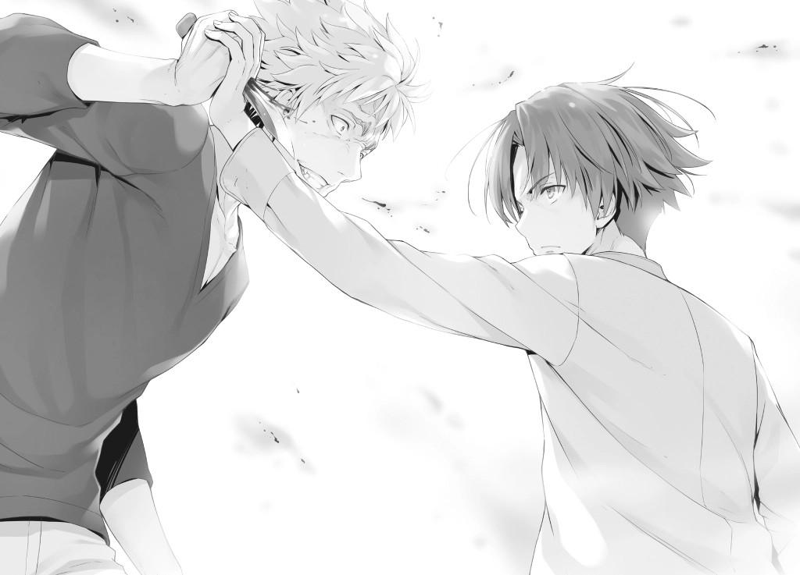
—¿¡Qué─!?
Esto no era precisamente lo que Housen esperaba de mí. Habría sido casi imposible predecir mis acciones previamente.
Después de todo, ¿quién hubiera pensado que alguien se dejaría apuñalar a propósito?
El brazo que impulsaba la hoja se detuvo, y con él, la sonrisa de Housen también se desvaneció.
—Tú... ¡Ayanokouji!
Estaba confundido. Cualquiera en su sano juicio lo estaría después de ver lo que yo me había hecho.
En la mayoría de los casos, mis acciones serían vistas como peligrosas, incluso autodestructivas.
Sangre fresca y brillante pronto empezó a brotar de la herida en mi palma.
—Ese cuchillo, o para ser más exactos, ese cuchillo petty, es el que compré, ¿no?
—¿De qué mierda estás hablando?
—Ibas a apuñalarte en el muslo con mi cuchillo. Después de eso, armarías un escándalo en la escuela por tu lesión, y usarías eso como evidencia para que me expulsen. Ese era tu plan, ¿no?
Por la forma en que sostenía el cuchillo en su mano, era obvio que no era para apuñalar a un oponente. Orientó la hoja hacia arriba para que pareciera que alguien más lo había apuñalado. Además, agarró el mango en reversa, para permitirse clavar la hoja en su pierna de manera más efectiva.
—¡Ja! Así que incluso aunque te las arreglaste para unir todo, ¿aun así viniste y te apuñalaste? ¿Te has vuelto loco?
Housen parecía un poco agitado mientras soltaba una risa seca.
—Esta era la mejor manera de acabar contigo por completo. Además, no creo que seamos tan diferentes. Después de todo, viniste aquí totalmente preparado para sufrir una herida grave.
Aunque supieran que era el curso de acción correcto, la mayoría de la gente no estaría dispuesta a seguir adelante con un acto tan peligroso de sufrir una lesión como esta. Esta fue la razón principal por la que pudo apuñalarse y culparme por ello.
—En efecto, hay una especie de examen pseudo-especial que sólo se le dio a un número limitado de ustedes los de primer año. Y según tu conversación con Nanase, la premisa de ese examen es que me expulsen. Así que con ese fin, comenzaron a urdir un plan. Comenzó contigo atrayéndonos hasta aquí y obligándonos a pelear. Entonces, después de golpear a Sudou y Horikita un poco, dirías que saqué un cuchillo que llevaba conmigo en caso de emergencia y te apuñalé con él en un ataque de rabia, lo que finalmente conduciría a mi expulsión. Esa es la narración absurda que estabas tratando de construir esta vez.
Aunque el consejo estudiantil fuera más tolerante, empuñar un cuchillo en una pelea no sería eximido con una simple suspensión.
Justificaría una expulsión, o hasta podría terminar con cargos criminales.
—Escuché que eras una mierda genial, pero me pareciste bastante debilucho, así que no pensé mucho en ti. Pensar que vendrías y te dejarías apuñalar... ¿Cómo te enteraste de que el cuchillo es tuyo?
—Hice algunas investigaciones por mi cuenta. Hasta ayer, era el único que había comprado ese modelo de cuchillo Petty. Así que es natural que juntara las piezas al verte sacar exactamente el mismo.
Podría haber escapado fácilmente del cuchillo y agarrar el brazo de Housen.
Pero hacer eso no habría resuelto el problema fundamental que tenemos aquí.
Todo lo que él habría tenido que hacer es crear algo de distancia y empezar su plan de nuevo. Para evitar que lo hiciera, no tuve más remedio que dejarme apuñalar.
Housen trató de soltar el cuchillo, pero usé mi propia mano para bloquear su puño.
—... ¿Qué demonios...? ¿Quién mierda eres?
Al ser testigo de mi fuerza de primera mano, la tranquilidad que Housen mantuvo hasta el momento quedó completamente destrozada.
—Ahora bien, ¿qué sigue? Aunque soy el dueño del cuchillo, tú eres el que me apuñaló con él. Además, una investigación revelará que intentaste comprar el mismo modelo de cuchillo antes. Si no encuentras una manera de salir de esto, serás expulsado, Housen.
Mientras que mis huellas estaban en el mango del cuchillo, las de Housen también lo estaban. Y el hecho de que el cuchillo estuviera ahora atravesando por la palma de mi mano no era algo que se pudiera explicar muy fácilmente. Su propia estrategia terminó disparándole.
—¿Así que pensaste hasta este punto...!?
Después de mirarme fijamente por un momento, Housen soltó su agarre y tomó su distancia, dejando el cuchillo clavado en mi palma.
Y con eso, las cosas se habían vuelto completamente en su contra.
Mientras tanto, Horikita y Sudou se habían recuperado lentamente y ahora estaban recuperando sus fuerzas.
—¿Estás bien, Ayanokouji-kun?
—Ayanokouji...
—No se preocupen por mí.
No era descabellado que se preocuparan por mi condición, pero no era el momento de preocuparse por eso.
Lo más importante ahora era asegurarse de que no le diéramos otra oportunidad a Housen.
—¿Cuánta información tienen ustedes, bastardos...? Espera, Nanase, ¿les dijiste alguna mierda?
—No les dije nada.
—La primera vez que sentí que algo estaba fuera de lugar fue cuando Amasawa y yo fuimos juntos de compras al centro comercial Keyaki.
Sorprendida al oírme decir el nombre de Amasawa, Horikita habló.
—¿Amasawa-san? ¿Estás diciendo que ella está mezclada en todo esto...?
—Sí. Según el dependiente de la tienda, justo cuando Housen estaba a punto de pagar el cuchillo, ella extendió la mano y le impidió seguir con la compra.
Después de responder a Horikita, volví a Housen.
—Tú eres el que ideó esta ridícula estrategia, pero Amasawa es la que ayudó a perfeccionarla. Después de todo, si te apuñalaras con tu cuchillo, naturalmente te daría problemas una vez que la escuela investigara lo que pasó.
Sin embargo, si pudieras conseguir de alguna manera que yo comprara el cuchillo, entonces eso tendría el potencial de cambiarlo todo.
La razón por la que Amasawa y Housen eligieron usar este cuchillo caro fue porque era el único que venía empaquetado con una funda, lo que lo convertía en la opción más conveniente disponible.
Por supuesto, mientras que había una variedad de otras formas de ocultar una hoja desnuda, habría sido más rápido y fácil comprar uno con una funda dada la portabilidad añadida.
Cuando fui de compras con Amasawa, se las arregló para localizar y escoger el cuchillo exacto sin buscarlo en absoluto, aunque debería ser la primera vez que estuviera en esa tienda. Y esto fue lo primero que se me quedó grabado. El viernes, se presentó en mi habitación diciendo que perdió su cinta para el pelo, pero eso no fue más que una excusa para conseguir el cuchillo. Es natural asumir que lo había puesto allí antes o simplemente mintió sobre dejarlo allí.
Además, como existía la posibilidad de que notara que faltaba si lo retiraba
demasiado pronto, esperó, retrasando su traslado hasta el último momento posible. Después de eso, sólo necesitaba sacar el cuchillo de mi habitación sin dejar huellas dactilares y entregarlo a Housen.
Si ella no hubiera sido capaz de recuperar el cuchillo, entonces seguramente habrían elegido posponer el plan.
—Tch, nunca debí haber confiado en esa chica cualquiera.
—No, fue gracias a Amasawa que este plan tomó forma. Sin su ayuda, todo se habría desmoronado.
—Lo que sea. Me parece que ahora tienes la ventaja. ¿No es así Senpai?
¿Y ahora qué?
Además de todo lo que había pasado, la sangre de mi mano había manchado la ropa de Housen. No había manera de que pudiera hablar de una salida de esto ahora.
Aunque recuperara el cuchillo y se apuñalara en el muslo, ya no era posible que saliera victorioso.
Por supuesto, aunque intentara hacerlo, usaría todas mis fuerzas para detenerlo.
Lo más probable es que Housen ya lo hubiera discernido por sí mismo.
La parte importante es lo que sucedería a continuación.
—Horikita", Sudou, y yo podemos prometer que guardaremos silencio sobre lo que pasó esta noche. ¿Qué tal eso?
—¿Qué estás diciendo? ¿De verdad vas a tirar por la borda tu oportunidad de hacer que me expulsen de aquí?
—A cambio de no hacer eso, tengo dos condiciones.
—¿Dos?
Seguramente sabía la primera sin que yo tuviera que decirlo.
—La primera es que aceptes formar una relación igualitaria y cooperativa entre nuestras dos clases.
—Bueno, no es que tenga mucha elección entre eso y la expulsión.
Entonces, ¿cuál es la segunda?
—Quiero que te asocies conmigo para este examen especial.
Desde el momento en que puse mis ojos en Housen, me encontré pensando que si estaba en posición de seleccionar a quien quisiera, entonces él sería mi primera opción con mucha diferencia. Aunque había varias razones para esto, la más importante era que no le importaba llamar la atención debido a su comportamiento problemático. Si estuviera en el lugar de Tsukishiro, le habría dicho a mi ejecutor que evitara sobresalir tanto como fuera posible. Estuve considerando la opción de contactarlo en privado para discutir la idea de trabajar juntos si la discusión de Horikita fracasaba. Así que en ese sentido, esta serie de eventos resultó ser muy conveniente para mí.
—... ¿Hablas en serio?
—Acabas de inscribirte aquí, así que estoy seguro de que hay un montón de cosas que no has tenido la oportunidad de hacer todavía. Si te expulsan ahora, todo habrá terminado antes de que puedas disfrutar haciendo cualquiera de ellas. No sé cómo fueron las cosas cuando estabas en la escuela secundaria, pero los rumores que dicen que eres equiparable a Ryuuen terminarán por quedarse así. Y eso es por lo que todos te recordarán. Al menos, por lo que he visto de Ryuuen durante el último año que ha estado aquí, no puedes ni siquiera compararte con él tal y como eres ahora mismo.
—¡Hijo de puta...!
Obviamente, el joven conocido como Housen Kazuomi tenía un sentido del orgullo inquebrantable.
Venía de una egoísta y habitual creencia de que era una de las personas más fuertes que existían.
Aunque quizás estuviera un paso por encima de Ryuuen en cuanto a fuerza física, el hecho de que hubiera dicho que Ryuuen era mejor era inaceptable para él.
Pero sobre todo, no había manera de que se las arreglara para tolerar el hecho de que yo había sido más listo que él.
Tenía una calificación de Habilidad Académica B+, así que si se reprimía y no aprobaba el examen, definitivamente sería expulsado.
Dicho esto, no era razonable pensar que eligiera sacrificarse para vengarse de mí. Mientras Housen era lo más cercano a la inocencia que se podía conseguir, el hecho es que no hay manera de estar 100% seguro de que él no sea de la Habitación Blanca. En ese sentido, por mucho que lo intentara, no sería capaz de librarlo de toda sospecha. Sin embargo, después de lo que pasó aquí esta noche, las cosas eran diferentes. Aunque Housen se abstuviera de hacer el examen, el hecho de que me hubieran apuñalado seguiría vigente.
Mientras dejara dolorosamente claro que algo inusual había sucedido en secreto, ni siquiera Tsukishiro sería capaz de forzar mi expulsión de inmediato.
La escuela establecería una investigación para averiguar exactamente lo que sucedió, y la decisión de Housen de sacar un cero en el examen se sometería a deliberación.
Cualquier truco que Tsukishiro intentara hacer, me mantendría firme como una roca hasta que la expulsión no estuviera sobre la mesa.
—Jodida buena mierda, ¡Ayanokouji-senpai! Eres el primer oponente que ha hecho que me hierva la sangre así. Forzarte a rendirte ya no será suficiente para mí. En vez de eso te voy a matar a golpes, así que espero que lo estés anticipando.
Los débiles rastros de temblor que había mostrado antes eran cosa del pasado.
Por ahora, Housen ya había cambiado su enfoque para prepararse para su próxima pelea.
—Me quedaré aquí. Hay algo que siento que debo explicar a Ayanokouji-senpai.
—¿Eh? ¿Qué le vas a decir, Nanase?
—Algo que decidí que será útil para la clase 1-D en su conjunto.
Ayanokouji-senpai y Horikita-senpai ya son muy cautelosos con nosotros.
Siendo ese el caso, ¿no sería mejor si los hiciéramos vigilar a las otras clases también?
—Como quieras.
Aunque los detalles de lo que decía no estaban claros, Housen aceptó la propuesta de Nanase.
Al final, Housen fue la primera persona en irse y regresar al dormitorio.
PARTE 3
Ahora éramos sólo nosotros tres y Nanase de primer año.
Aunque había un par de cosas que discutir dado lo que pasó, un asunto tuvo prioridad sobre todo eso.
Y era calmar a Horikita, que había perdido la calma al ver el cuchillo atravesado en mi mano izquierda.
—¿Q-Qué deberíamos hacer...? ¿Deberíamos, uhm, sacar el cuchillo?
La normalmente sensata Horikita nunca había estado en una situación como esta antes.
—No. Sé que no es exactamente agradable de mirar, pero es mejor dejar el cuchillo donde está por ahora.
Si el cuchillo no se sacaba correctamente, correría un riesgo muy real de sufrir una hemorragia.
—Más importante aún, ¿están ustedes dos bien?
—Comparado contigo, estoy prácticamente ilesa...
—Sí... yo también estoy bien.
Sudou se acercó para echar un mejor vistazo y puso una mueca al ver el grotesco estado de mi mano.
—Amigo, ¿cómo puedes estar tan tranquilo con tu mano así?
—Hmm, no lo sé.
Estaba haciendo las cosas como siempre, no había nada especial en ello.
—Pero, viejo... no sabía que eras como, tan fuerte...
—Sólo intenté lo que pude para bloquear el cuchillo.
—... Aunque no es lo que me pareció a mí.
Expresó su honesta impresión de mi confrontación con Housen antes.
Sudou se había abierto camino a través de un buen número de peleas en su tiempo, por lo que no me pareció que fuera capaz de engañarlo, o a Horikita también para el caso.
Con mi mano derecha, saqué mi teléfono y llamé a Chabashira.
—Ocurrió algo con lo que necesito un poco de ayuda. ¿Podría venir rápidamente a verme detrás de los dormitorios de primer año? Por supuesto, usted sola. Además, por favor traiga una toalla de baño.
Aunque Chabashira parecía confundida por mi repentina llamada, se las arregló para percibir la urgencia de la situación y prometió ir inmediatamente. Mientras tanto, lo mejor era que nos quedáramos y esperáramos a que llegara.
Sería peligroso si otros estudiantes vieran el estado de mi mano mientras cambiamos de lugar.
En cualquier caso... incluso después de ver de cerca las consecuencias, Nanase no parecía estar en absoluto alterada.
A pesar de que tenía un cuchillo atravesado en la palma de mi mano y sangre esparcida, estaba perfectamente tranquila y serena.
La intensidad visual y la naturaleza gráfica de la escena no la afectaron en absoluto.
—¿Podrías explicarnos lo que pasó aquí, Nanase?
—Si no lo hago, creo que la clase 1-D quedará en una posición bastante difícil, así que lo haré.
—Sabías que las negociaciones iban a resultar así... ¿Es eso cierto?
—Es cierto. El plan era que Housen-kun se apuñalara en el muslo para que Ayanokouji-senpai fuera expulsado.
Habló sin reservas, explicando su plan en el mismo tono educado de siempre.
—¿Estás diciendo que la amabilidad que nos mostraste fue parte de una actuación destinada a cumplir con ese objetivo?
—No, nada de eso, Horikita-senpai. Realmente quería reunirme contigo y establecer una relación de apoyo entre nuestras dos clases. Es sólo que...
atacar a Ayanokouji-senpai era nuestra principal prioridad, eso es todo.
La razón por la que tanto Housen como Nanase estaban tan obsesionados con la clase 2-D era simplemente porque yo era miembro de ella.
—¿Por qué era ese su objetivo? No recuerdo haberte perdonado por lo que pasó aquí esta noche, esas fueron las palabras de Ayanokouji-kun, no las mías. Dependiendo de tu explicación, podría terminar reportando esto a la escuela de inmediato.
Horikita presionó a Nanase por respuestas, incapaz de comprender por qué me estaban atacando.
—Si bien estoy de acuerdo en que había un problema con nuestro método, la escuela en realidad aprueba la idea de tomar medidas para expulsar a Ayanokouji-senpai. Sólo unos pocos estudiantes de primer año saben esto, pero es posible recibir un tremendo número de puntos privados sólo por forzar su expulsión.
Por fin, la razón por la que Housen fue tras de mí ha salido finalmente a la luz.
—Nos dijeron que el estudiante que logre expulsar a Ayanokouji Kiyotaka de la clase 2-D recibirá una gran suma de 20 millones de puntos privados. Ese es el examen especial que se nos dio.
—No entiendo lo que estás diciendo. Eso no tiene ningún sentido. ¿A quién se le ocurriría un examen especial tan escandaloso y estúpido?
Nanase se quedó callada, sin querer responder a la pregunta de Horikita.
—...Por ahora, he dicho todo lo que tenía que decir. Con esto, deberías darte cuenta de lo cauteloso que debes ser con las otras clases de primer año,
¿verdad Ayanokouji-senpai?
No analizó muy profundamente, revelando sólo lo mínimo necesario para transmitir la idea. No hace falta decir que si Housen y Nanase sabían de este
"examen especial", entonces Amasawa también lo sabía. Extendiendo esa lógica, sólo tenía sentido que los estudiantes de las Clases 1-B y 1-C también estuvieran en él.
—No esperas que acepte una respuesta así, ¿ verdad? El hecho es que Ayanokouji-kun recibió una dolorosa heri─
Horikita comenzó a hostigar a Nanase con preguntas por mi causa, así que me metí para detenerla.
—Está bien Horikita. Un entendimiento general de la situación es más que suficiente. Aprecio la ayuda, Nanase.
—Por el bien de mi clase, de la clase 1-D, elegí trabajar en colaboración con Housen-kun sabiendo muy bien lo horribles que eran sus métodos. Porque, si la recompensa de 20 millones de puntos cayera en manos de otra clase, tendría serias ramificaciones para que pudiéramos seguir adelante.
Con 20 millones de puntos, tendrías sólo lo suficiente para comprar un boleto sencillo a la Clase A.
Pero dada la utilidad de exámenes especiales como éste, cuanta más influencia financiera tuviera tu clase, mejor estarías.
—Sin embargo, esa no fue la única razón por la que cooperé con Housen-kun.
El tono de Nanase era suave y tranquilo, y sin embargo había algo en la forma en que me miraba, un brillo agudo pero sutil en sus ojos.
—Yo... simplemente no creía que una persona como tú fuera adecuada para esta escuela, Ayanokouji-senpai.
Esta fue la primera vez que Nanase dirigió estos aparentes sentimientos de odio hacia mí.
Sin embargo, no pude averiguar por qué.
Poco después, Nanase inclinó la cabeza y dejó este sitio.
[Nota de traducción (Del traductor japonés-inglés)]
Por lo general no me gusta escribir notas como esta, pero en este caso tengo que hacer una excepción. Para los que no lo sepan, el japonés tiene múltiples pronombres en primera persona. El inglés sólo usa "I" o "me" para este propósito, pero el japonés tiene más de 10, todos usados para diferentes propósitos, edades y géneros. Cada personaje de la serie (hasta ahora), sólo ha usado uno de estos para referirse a sí mismos, y lo ha usado consistentemente a partir de entonces. Aparte de una vez en la que se equivocó en un capítulo anterior, Nanase ha utilizado exclusivamente 私 o "watashi". Este es un pronombre típicamente neutro en cuanto al género, tal vez un poco femenino, que Horikita y los personajes femeninos más serios y respetuosos (y Koenji) también usan. En la última línea hablada de esta parte, Nanase dice:
"Yo*... simplemente no creí que una persona como tú fuera adecuada para esta escuela, Ayanokouji-senpai."
El asterisco que pongo aquí es mi forma de transmitir que el pronombre en primera persona que ella usa aquí es ボク o "boku", que es un pronombre en primera persona usado principalmente por los varones jóvenes. Ahora, Hirata e Ike también usan boku, pero usan 僕 (el kanji) para decirlo en lugar de escribirlo
en la forma estilizada, katakana (ボク) en la que Nanase lo ha usado. La parte importante de esto es que, con esto, Nanase es ahora sólo el segundo personaje de la serie en usar su pronombre en primera persona escrito en katakana. El primer personaje es Kiyotaka, con su uso de オレ o 'ore', que es incluso más un pronombre masculino que boku. Hosen, Ryuen, Sudo, y la mayoría de los personajes más masculinos también usan 'ore', pero utilizan el kanji (俺) para hacerlo, no el katakana, lo que hace de Kiyotaka un caso especial.
Al tener el boku de Nanase escrito también en katakana, el autor está resaltando o enfatizando algún tipo de conexión entre Kiyotaka y ella misma. (Lo cual, desafortunadamente, es intraducible al idioma inglés.) Por lo tanto, hay dos cosas clave que hay que tener en cuenta aquí que son difíciles (o imposibles) de transmitir en una traducción al inglés. La primera es que ella está usando un pronombre diferente, más masculino por alguna razón desconocida, y la segunda es que también está usando el pronombre en su forma katakana en lugar de su forma kanji, tal y como Kiyotaka usa cuando se refiere a sí mismo con su propio pronombre.
Espero que esta información te haya ayudado a entender el impacto de esta última línea de Nanase en un nivel mejor que el que tendrías sin saberlo.
UN MISTERIO QUE SE INTENSIFICA
El lunes siguiente, Nanase y Horikita se reunieron y resolvieron con éxito los detalles del acuerdo entre nuestras dos clases. Para el martes, las 157 parejas se habían formado, y todos se centraron en los próximos exámenes escritos.
Aunque Koenji se mantuvo sin cooperar hasta el final, instantáneamente accedió a asociarse con Nanase a petición de ella, sorprendiéndonos a Horikita y a mí.
Aunque mi mano izquierda sufrió una grave lesión, puedo decir con confianza que los resultados valieron la pena. Muchos estudiantes se sorprendieron al ver mi mano envuelta en vendas, pero gracias a Chabashira-sensei y Mashima-sensei, el asunto se mantuvo confidencial. Esto permitió que el examen especial siguiera adelante sin que nadie más se enterara de lo que pasó.
A pesar de que hubo muchas oportunidades de interactuar con los estudiantes de primer año durante estas dos semanas, todavía no podía discernir la identidad del estudiante de la Habitación Blanca. Ante la falta de movimiento en el examen especial, me hizo preguntarme si realmente existía o no en primer lugar. Era seguro asumir que tenía que ser cauteloso con todos los de primer año con los que tuve contacto cercano.
Normalmente, uno podría pensar en descartar a Housen debido al hecho de que varios estudiantes lo conocían desde la secundaria. Sin embargo, ni Ryuuen ni Akito lo habían visto en persona antes. En otras palabras, existía la posibilidad de que fuera un impostor que contactó con el verdadero Housen y asumió su identidad.
En cuanto a Nanase, aunque a primera vista no parecía tener mala voluntad hacia mí, al profundizar en el tema había varios factores que no podían pasarse por alto, como el método que utilizó para acercarse a mí, su actitud después de salir de la sala de karaoke, y la razón por la que eligió contactarme.
Y luego estaba Amasawa, que se unió a Housen para intentar que me expulsaran. Pero incluso entonces, era más que posible que estuviera detrás de la recompensa de 20 millones de puntos por mi cabeza.
En cualquier caso, todavía no tenía ni una sola prueba que conectara a ninguno de ellos con la Habitación Blanca.
Si mostraba el más mínimo indicio de debilidad, podía ser tragado completo, y daba la impresión de que esto seguiría siendo así por un tiempo.
Así de fácil... el 1 de mayo finalmente llegó. El día en que se anunciarían los resultados del examen especial.
Durante el 6º y último período del día, se dedicó un tiempo para presentar nuestros resultados.
—Ahora presentaré los resultados del examen especial. Mientras que todo se mostrará aquí en la pizarra, se mostrará en sus tabletas también para que puedan comprobar lo que quieran en detalle.
Gracias a nuestras tabletas, pudimos enfocar las calificaciones que queríamos revisar sin siquiera mirar la pizarra.
Podía sentir los ojos de Horikita fijos en mí. No había duda de que este examen especial había sido el más difícil hasta ahora. Era muy improbable que los dos termináramos sacando la misma puntuación.
El día del examen, Horikita eligió matemáticas como materia para que los dos compitamos.
Al poco tiempo, la pantalla de la pizarra cambió y los resultados del examen se mostraron en nuestras tabletas.
A la mayoría de los estudiantes no les importaban los resultados de los demás, priorizando sus resultados.
Yo, por otro lado, prioricé la comprobación del rendimiento de nuestra clase en su conjunto.
En términos de expulsiones... evitamos perder a alguien.
Al clasificar las calificaciones generales en orden ascendente, la puntuación combinada más baja fue de 579. Por lo visto, todos aprobaron el examen sin problemas. Aunque sin duda todos se habían esforzado al máximo, no era como si la escuela nos hubiera lanzado un examen especial tan excesivamente difícil al principio del año. De hecho, Ike, Satou, y muchos otros se las arreglaron fácilmente para obtener más de 250 puntos. Esto significaba que, cuando Chabashira-sensei nos mostró esa tabla de calificaciones estimadas al comienzo del examen, quizás bajó los valores intencionalmente.
A medida que todos comenzaron a ver sus calificaciones, se podían escuchar en toda la clase suspiros de alivio y gritos de alegría.
Con eso fuera del camino, era tiempo de revisar la calificación de Horikita. Filtré los resultados para mostrar sólo matemáticas y mostré los resultados en orden descendente.
Como el tema seleccionado para nuestra competencia, Horikita obtuvo un impresionante total de 87 puntos. Puesto que la siguiente puntuación después de la suya era la de Keisei con un 84, no podía imaginar el esfuerzo que debe haber puesto en sus estudios. Todos los estudiantes después de Keisei tenían altas calificaciones de Habilidad Académica en o alrededor de A. Dicho esto, el umbral de 80 puntos parecía ser una gran barrera para la mayoría de los estudiantes, sin importar la materia. Después de todo, aproximadamente el 10%
del examen se basaba en conceptos que iban completamente más allá del alcance del plan de estudios del primer año, sin mencionar la dificultad del examen en sí.
Como la clase estaba rebosante de alegría por haber superado con éxito otro examen, gradualmente comenzó a surgir una conmoción entre algunos de los estudiantes.
Por supuesto, yo ya era consciente de lo que pasó. Chabashira-sensei me miraba desde el podio, junto con otros estudiantes que se habían dado cuenta de lo que había pasado. Esta reacción fue comprensible, dado que mi nombre estaba colocado justo encima de Horikita en los resultados del examen de matemáticas.
—¿Una puntuación p-perfecta...!? Esto... ¿En serio?
Nadie en la clase consiguió una calificación por encima de 90 en cualquier prueba, no importa la materia.
Es decir, excepto yo y mi puntuación en matemáticas.
Por cierto, obtuve un 70 en cada una de las otras asignaturas.
La mayoría de los estudiantes no podían entender por qué obtuve una calificación tan alta en sólo uno de los exámenes.
Estos exámenes escritos fueron varias veces más difíciles de lo que había previsto. Aunque había un riesgo relativamente alto de obtener una puntuación perfecta, me negué intencionalmente a hacer concesiones en mi rendimiento.
Inevitablemente, atraería la atención de mis compañeros y de toda la escuela, pero después de considerar lo que Tsukishiro haría en el futuro, pensé que no sería un problema mostrar esta faceta de mí mismo de antemano.
De hecho, desde una perspectiva futura, dar el primer paso me ahorraría muchos problemas más adelante.
En circunstancias normales, Sudou estaría armando un escándalo junto con Ike.
Si bien estaba sorprendido, simplemente se quedó sentado y me miró fijamente en silencio.
Como él ya sabía de las acciones que tomé hasta ahora y del incidente que tuvo lugar con Housen hace varios días, tenía sentido que se sorprendiera un poco menos que los otros estudiantes.
En cualquier caso, el pasado mes de abril, las cosas empezaron a cambiar bastante. En este momento, los estudiantes que me miraban extrañados comenzarían a hacer preguntas, y yo tenía que estar preparado para responderlas.
PARTE 1
Como la clase aún estaba en sesión, nadie podía acercarse a hablarme de mis resultados, pero eso cambió una vez que terminaron las clases.
Tan pronto como Chabashira-sensei nos despidió, la primera persona que se acercó a mí no fue Horikita, sino Keisei del Grupo Ayanokouji.
—Kiyotaka, ¿tienes un momento?
No sería exagerado decir que Keisei se jactaba de tener las notas más altas de todos los de la clase D, por lo que sabía bien lo difícil que era conseguir una puntuación perfecta. Sin duda tenía su cuota de preguntas sobre lo que había pasado.
—Lo siento, pero ¿podrías posponerlo por ahora, Yukimura-kun? Me gustaría tener unas palabras con él primero.
Antes de que pudiera responder, Horikita intervino y lo alejó.
—Sí. Lo siento, Keisei. Hablaremos más tarde.
—Ah, claro.
Cuando salí del aula con Horikita, muchos de mis compañeros de clase tenían los ojos fijos en mí, no sólo Keisei, Haruka y Airi.
Después de caminar juntos en silencio por un rato, Horikita finalmente se detuvo y, al confirmar que estábamos solos, se dio la vuelta para mirarme.
—No voy a poner ninguna excusa. Hice todo lo que pude, y obtuve una puntuación con la que estoy satisfecha.
—¿Estás segura de que no quieres la revancha?
—Ni siquiera pude entender lo que significaban esas preguntas finales, y mucho menos intentar resolverlas. Ni siquiera sé cuándo se espera que aprenda esos conceptos de la manera habitual.
—Teoría de la medida, integrales de Lebesgue... tal vez en algún momento alrededor de la universidad, ¿creo?
No sabía mucho sobre ese tipo de cosas, así que no podía darle una respuesta exacta.
Después de todo, aunque le dijera que aprendí a hacerlas de niño, no serviría de nada.
—...Olvídalo. Fue estúpido de mi parte preguntar.
Como si se hubiera dado por vencida en algo, Horikita suspiró y me observó fijamente con una mirada nublada en sus ojos.
—Es frustrante, pero admito la derrota. Los acontecimientos de estos últimos días me han obligado a reconocer tus habilidades. Retrasar las cosas más que esto sería una tontería por mi parte.
Horikita luchó admirablemente, pero elogiarla ahora parecía que terminaría perjudicándome.
—Acerca de las condiciones que fijaste antes...
—Ah, ahí estás, Ayanokouji.
Horikita fue interrumpida justo cuando estaba a punto de empezar a hablar del Consejo Estudiantil.
Era nuestra profesora principal, Chabashira-sensei, que venía a buscarme.
—¿Qué quiere de mí?
—Qué terriblemente frío. ¿Dónde estarías si no fuera por mi ayuda el otro día?
—En efecto. Fue muy útil en ese entonces.
—Me voy a casa por hoy. Hablaremos más tarde.
Naturalmente, Horikita no estaba dispuesta a hablar en presencia de Chabashira-sensei, así que se excusó.
Una vez que Horikita estuvo fuera de la vista, Chabashira-sensei se giró para mirarme.
—Veo que te he interrumpido, pero es urgente. El Director Interino Tsukishiro pregunta por ti. Vamos.
—Ya veo.
Era tan importante que era absolutamente necesario decírmelo, aunque eso significara interrumpir a alguien para hacerlo.
Manteniéndose a unos pasos delante de mí con los ojos fijos hacia adelante, Chabashira-sensei comenzó a hablar.
—Sólo para que lo sepas... Según Mashima-sensei, el Director Interino Tsukishiro no hizo nada fuera de lo normal durante el examen especial.
—Eso tiene sentido. Después de todo, él tomó acción antes de tiempo. Es decir, durante la fase preparatoria del examen.
Durante el examen en sí, simplemente estaba esperando los resultados.
—¿Qué posibilidades hay de que las cosas se pongan más pesadas en el futuro?
—¿Qué quiere decir?
—Ser apuñalado con un cuchillo no es un asunto de risa, ¿sabes? Tu padre entró en acción, ¿no es así?
—Mi mano no tiene nada que ver con eso.
No le había contado a Chabashira-sensei los detalles de lo que pasó. Por supuesto, lo mismo ocurrió con la recompensa de 20 millones de puntos. No creí que ella hubiera escuchado nada de eso en otro lugar.
—Si ese es el caso, entonces está bien. Estaba pensando que podría haber intentado restringirte y sacarte de la escuela por la fuerza.
—Necesitaría una cierta cantidad de recursos humanos para eso. No es nada de lo que se tenga que preocupar.
Algo así podría funcionar en un conejo pequeño, pero un ser humano sería una historia diferente.
—Genial. Te necesito aquí, necesito que me seas útil. Tu perfecta puntuación en el examen de matemáticas me ha dejado claro lo especial que eres.
Obtener una puntuación perfecta tenía muchos inconvenientes y, aunque pocos, este era sólo uno de los efectos secundarios.
En poco tiempo, llegamos a la oficina de recepción.
Dejando atrás a Chabashira-sensei, me aventuré a entrar en la habitación solo.
—Gracias por venir hasta aquí para reunirnos, Ayanokouji-kun.
—Enviando a mi profesora para que vaya a buscarme así... ¿Qué estás planeando? Ella podría sospechar algo.
No dije nada sobre el hecho de que ya había atraído a Chabashira-sensei a mi lado.
Hice una actuación, fingiendo que me sorprendió que de repente me llamara el director interino.
—Bueno, como director interino, no sería apropiado para mí ir a tu clase,
¿verdad?
Me pidió amablemente que me sentara, pero lo ignoré, optando por quedarme de pie.
Al notar eso, finalmente comenzó a hablar.
—Ahora que Abril ha llegado a su fin, ¿has conseguido averiguar quién es el estudiante que envié? Estaba pensando que debería preguntar para saberlo.
Esto estaba relacionado con su promesa de que se echaría atrás si conseguía descubrir la identidad del estudiante de la Habitación Blanca a finales de abril.
—Desafortunadamente, todavía no tengo ni idea de quién puede ser.
—Qué respuesta tan concisa. ¿No debería al menos listar los nombres de los estudiantes que encontraste razonablemente sospechosos?
—No hablaré de cosas de las que no estoy seguro. Al menos, no en esta situación.
—Ya veo. Así que ese niño se las arregló bastante bien para permanecer oculto.
Con expresión satisfecha, Tsukishiro asintió, casi como si estuviera impresionado hasta el momento con la actuación del ejecutor.
—No he sido capaz de sentir su presencia en absoluto. Se las han arreglado para cubrir sus huellas de forma bastante hermosa.
—Han trabajado duro estos últimos meses en un plan de estudios especialmente diseñado para convertirlo en un estudiante de preparatoria hecho y derecho.
Así que, tomó medidas tan elaboradas con anticipación, ¿no es así? Bueno, si no, no tendría sentido mencionarlo.
—En cambio, tú tuviste que pasar por muchos problemas cuando llegaste aquí. Entre tu forma de hablar, tu actitud, tu forma de pensar, e incluso la forma en que elegiste pasar tu tiempo, fuiste muy poco natural en todos los aspectos.
Tsukishiro sonrió divertido, como si hubiera estado observando de cerca todo el tiempo. Sólo se burlaba de mí, intentando enfatizar la noción de que él tenía el control total de la situación.
—La imagen de lo que un estudiante de preparatoria ordinario debería ser es algo que se me ocurrió por mi cuenta.
—De todos modos, al menos no lograste descubrir su identidad. Estoy satisfecho con eso. Puedes irte ahora.
Con esto, Tsukishiro me despidió, poniendo fin a nuestra discusión. No tenía ninguna intención de presionarme por el vendaje que llevaba en la mano izquierda. Sin embargo, me mantuve firme y continué hablando.
—Director Interino Tsukishiro, ¿podría ser que hayas calculado mal algo?
—¿Y qué quieres decir con eso?
—Ya es mayo. ¿No querías tener esto resuelto para finales de abril?
—No, no. No hay necesidad de apresurar las cosas. Me han dado una extensión sorprendentemente larga.
—¿Es así? Estaba pensando que debes haberte encontrado con algún...
problema inesperado.
—Qué interesante. ¿Y en qué te basas para ello?
—Por lo menos, tengo la impresión de que esta vez has estado totalmente preparado para forzar mi expulsión. Lo único que tenía que pasar era que el estudiante de la Habitación Blanca se pusiera en contacto y se asociara conmigo.
Sin embargo, ninguno de los estudiantes de primer año hizo algo así.
Por supuesto, había algunos como Tsubaki que querían asociarse conmigo, pero no iba a contar algo tan trivial como eso.
—De hecho, estoy casi tentado de empezar a pensar que no hay ni siquiera un estudiante de la Habitación Blanca entre los de primer año.
Simplemente parecía poco convincente, eso es todo.
—Bueno, gracias a la aplicación OAA, me di cuenta de que tenías problemas para encontrar pareja hasta la mitad del examen. Sin embargo, eres una persona excepcional. Como tal, se determinó que sería demasiado arriesgado enviar a mi ejecutor sólo para que descubrieras su identidad tan fácilmente. Pensé que sería más prudente intentarlo en otro momento.
—Qué despreocupado.
—Puede que sí.
—O quizás el estudiante de la Habitación Blanca desobedeció tus órdenes y tomó medidas por su propia cuenta. Cuando se pone de esa manera, todo parece encajar muy bien.
—Dios mío... Seguro que se te ocurren algunas ideas interesantes.
Divertido, Tsukishiro entrecerró los ojos; tomando un sorbo de la taza de té que había preparado en su escritorio.
Después de un breve momento de silencio, bajó la taza.
—Muy bien. Es una molestia que busques credibilidad en mis palabras y similares, pero lo admito. Es cierto que había planeado garantizar tu expulsión esta vez. Sin embargo, ese niño simplemente lo ignoró.
Aunque Tsukishiro lo había negado al principio, rápidamente cambió de opinión y admitió la verdad.
—Es sólo un niño, después de todo. Así que si sólo está pasando por una fase clásica de rebelión, es bastante entrañable, pero si no... entonces no podría tomar este asunto tan a la ligera.
El mismo estudiante que Tsukishiro envió para infiltrarse en la escuela desobedeció sus órdenes. Si ese fuera realmente el caso, sería una situación muy difícil.
—Cuídate, Ayanokouji-kun. Yo no fui el que eligió enviar a alguien de la Habitación Blanca esta vez. Además, viendo que el ejecutor está haciendo caso omiso de mis instrucciones y actuando a su propia discreción, me temo que los superiores pueden muy bien estar pensando en algo sospechoso.
—¿Se dieron por vencidos? Tu actuación ha sido bastante terrible.
—Eso puede ser cierto. Sin embargo, el hecho de que me hayan dicho que te expulsen no ha cambiado. Aunque me utilicen como peón, continuaré simplemente siguiendo las órdenes que recibo. Si fallo y termino siendo expulsado, bueno, eso es todo. Simplemente pasaré a mi siguiente destino.
Había pensado en el estudiante de la Habitación Blanca y en Tsukishiro como si fueran una misma cosa. Pero ahora, con esto, había una posibilidad emergente de que la relación entre ellos no fuera tan estrecha. Dicho esto, si lo que decía era cierto, ¿por qué? Si trabajaban juntos para expulsarme, sin duda tendrían más posibilidades de éxito. O, ¿todo esto fue sólo un farol para engañarme?
¿Estaba el estudiante de la Habitación Blanca descontrolado...? ¿O era "ese hombre" el que movía los hilos desde detrás del escenario? En términos de probabilidad, diría que cada una de estas dos opciones era igualmente probable.
También era importante para mí tener en cuenta lo engañoso que era el hombre conocido como Tsukishiro. No parecía tener prisa, ni estaba preocupado en lo más mínimo.
—Una última cosa... Si ese niño llega a ignorar las intenciones de tu padre, entonces, dependiendo de las circunstancias, puede que sea mejor que elijas que te expulsen a ti. Después de todo, cuanto más inquebrantable sea tu posición como la obra maestra de la Habitación Blanca, más insondable será la envidia y el odio que recibirás por ello. Me estremezco al imaginar lo que será de ti antes de que estén satisfechos.
Ante la seria, pero cómica advertencia de Tsukishiro, simplemente me di la vuelta y me fui, dejando atrás la sala de recepción.
Examen especial ・ Clasificación general
1er lugar ・ Clase 2-A ・ Calificación promedio: 725
2º puesto ・ Clase 2-C ・ Calificación promedio: 673
3er lugar ・ Clase 2-D ・ Calificación promedio: 640
4º puesto ・ Clase 2-B ・ Calificación promedio: 621
Puntos de clase a partir del 1 de mayo:
Clase 2-A, dirigida por Sakayanagi ・ 1169 puntos Clase 2-B, dirigida por Ryūen ・ 565 puntos
Clase 2-C, dirigida por Ichinose ・ 539 puntos
Clase 2-D, dirigida por Horikita ・ 283 puntos
PALABRAS DEL AUTOR
2020. Parece que también pude reunirme con ustedes este año. Es Kinuko~ No lo han olvidado, ¿verdad?
¡De acuerdo! Para recapitular, soy Kinuko... no, eso no está bien. Soy Kinugasa Shougo.
¡Feliz Año Nuevo a todos! ¡He conseguido publicar el volumen 1 del segundo año con cierta seguridad! Tanto si es la primera vez que lees como si vuelves por más, espero tenerte aquí conmigo este año también. El lanzamiento del volumen 2-1 coincide con el lanzamiento del segundo libro de arte de YouJitsu.
Espero que todos estén atentos a ese libro también. Tendremos un evento de conmemoración y promoción del segundo año, que comenzará a finales de mes, así que esperamos que gente de todos los rincones del mundo se presente en el lugar del evento. ¡Puedo hacer un poco de publicidad de vez en cuando!
Bueno, ahora que nos embarcamos en una nueva serie memorable, las cosas van a empezar a moverse más que nunca. Ayanokouji y los otros eran inmaduros cuando comenzaron, pero todos están empezando a mostrar signos de crecimiento de vez en cuando, ¿verdad? Desde los cambios que vienen con el segundo año hasta la llegada de un nuevo grupo de estudiantes, ha habido mucho que escribir. Tanto es así, que me las arreglé para usar el máximo número de páginas permitido por el estándar y tuve que reducir las palabras finales a una sola página. Apenas lo hice a tiempo. ¡Caramba!
No pude decir mucho esta vez debido al número limitado de líneas, pero los veré pronto, ¡así que por favor vuelvan la próxima vez! Oh, ¡y asegúrense de revisar la página web oficial también! ¡Definitivamente la disfrutarán!
HISTORIAS CORTAS
NANASE TSUBASA
LA VOZ EN MI CORAZÓN
—Horikita-senpai está muy ocupada —Murmuré cuando la vi salir de la biblioteca.
—Es parte de su trabajo para mantener a la clase unida.
—Desearía poder convertirme en alguien tan espléndida como ella, para el próximo año...
—Horikita no te preguntó en detalle sobre esto, pero, ¿cómo vas a convencer a Housen?
Eso no es más que un pequeño detalle para mí. Pero esta puede ser mi oportunidad ya que Horikita-senpai no está aquí.
—Eso... no tengo problema en responder a esa pregunta pero sólo si, si puedes hablarme de ti.
—¿Sobre mí?
—Horikita-senpai es el líder de tu clase. No eres nada de eso, ¿verdad?
¿Qué clase de persona eres, senpai?
Ni siquiera fui consciente de ello. Le hice esta pregunta sin pensarlo en absoluto.
Sería mejor si me hubiera detenido ahí, pero seguí, fuerza de voluntad en cada palabra que dije mientras él me miraba en silencio.
—¿Me lo dirás?
Sobre lo que quiero saber. ¿Qué clase de persona eres?
Empecé a pensar que le había preguntado mal y que no me había entendido...
—Parece que lo que quieres saber no es sobre su relación conmigo.
Respondió como si hubiera entendido todo lo que quería preguntar. No puedo retroceder después de haber llegado tan lejos.
Puede que sea un poco imprudente por mi parte, pero quizás obtenga la respuesta que necesito saber.
—Sí, creo que tal vez seas un ser humano malvado y sucio, Ayanokouji-senpai.
Sería natural que se enfadara. Pero me escuchó. Ni siquiera un movimiento de sus cejas. Como si estuviera tratando de leer detrás de mis palabras.
Pero en este punto me las arreglé para calmarme.
Me dije a mí misma que era demasiado pronto para esperar resultados.
Acabábamos de conocernos.
—Por lo que puedo ver, pareces un ser humano normal, Ayanokouji-senpai.
—Entonces, ¿eso significa que me ves como alguien que no lo es?
—... No. No es así.
Pensé que me había acercado demasiado, así que decidí retirarme. Cualquier cosa que le diga apresuradamente ahora sólo será un demérito para mí. Ya lo sé.
—Lo siento, por favor, olvida que dije algo. Lo importante ahora es si podemos llegar a un entendimiento y cooperar entre nuestras clases.
Esperaba que siguiera con el tema, pero no lo hizo.
¿Fue porque entendió todo lo que yo quería preguntarle? O es...
NANASE TSUBASA
LO QUE SE REFLEJA EN SUS OJOS
Después de salir del dormitorio, miro la ola de estudiantes que van y vienen durante algún tiempo.
Estudiantes de todos los años están viviendo en los terrenos de esta escuela.
No se ven ni adultos ni niños. Me recordó una vez más lo especial que es este ambiente.
Me pregunto si será posible vivir una vida tranquila y relajada aquí.
Pero ciertamente es un ambiente desconocido que nunca he encontrado en mi vida hasta ahora.
Quería disfrutar del paisaje que se extendía más allá de mí para siempre, pero no estaba destinado a serlo.
Eso es porque vi a Ayanokouji-senpai.
Supongo que a esta distancia él no se dará cuenta de que estoy aquí.
Además, creo que se está concentrando en dos estudiantes de la clase 1-A que caminan delante de él.
Creo que esas dos ya tienen pareja, así que quizás se preocupa por pedirles ayuda.
Ignorar que se acerca más a la clase 1-A no sería un mérito.
Empiezo a correr, cerrando la distancia antes de igualar el ritmo de Ayanokouji-senpai.
—Buenos días, Ayanokouji-senpai.
Le llamo de forma natural y hago que se fije en mí.
Definitivamente creo que conseguí una sonrisa perfecta.
—Ah, buenos días.
Parece desconcertado cuando entro en escena, tal vez porque no se lo esperaba.
—¿Tienes algún asunto con esas dos personas de enfrente? ¿Debo llamarlas por ti?
Sabía que rechazaría la oferta, pero aun así la sugerí.
—No, está bien.
—¿En serio?
Empecé a caminar a su lado después de obtener la respuesta que esperaba.
Pero, ¿cómo lo digo? La presencia de Ayanokouji-senpai es inusualmente peculiar.
En lugar de llamarla débil, sería mejor llamarla una hoja afilada y distraída.
Me hacía sentir que con sólo tocarla ligeramente con un dedo sería suficiente para provocar una profunda herida... ese tipo de existencia.
Pero quizás es por lo que es una persona especial.
El bien o el mal. ¿Cuál de ellos somos?, es lo único importante para mí.
—Siento lo grosero que fue Housen el otro día.
—No, no fui directamente dañado en modo alguno, así que no necesitas disculparte.
—Pero no es mentira decir que te molestó. Lo seguí para evitar que hiciera ese tipo de cosas, pero... ¿cómo decirlo? No ser capaz de hacer nada es doloroso...
Lo obligaré a profundizar su relación con la clase 1-D, involucrándolo activamente.
Dependiendo de cómo vaya, puede que busque mi cooperación para convertirme en su pareja.
No... esa posibilidad está cerca de 0 por el momento.
En este momento, él es sólo una existencia desconocida para mí.
Mis pensamientos sobre él y lo acertados que son, son sólo especulaciones de mi parte.
De todos modos, para evitar un comportamiento poco natural, continué con mi actuación.
Haciendo eso, él debería llamarme a su debido tiempo.
—¿Has decidido sobre algún candidato para ser tu compañero en este examen especial?
Evitó preguntar directamente mientras daba el primer paso hacia mí.
Si realmente es una persona especial, ya habría captado mi situación con la aplicación OAA.
—¿Yo, quieres decir? Aún no lo he decidido.
—Bueno, pero te han preguntado, ¿verdad?
Esta conversación es sólo una formalidad.
—Supongo que sí. Me han preguntado algunos alumnos de la clase 2-A y 2-D.
—¿Alguna razón para no contestarles?
¿Por qué no les estoy respondiendo?
Porque es la dirección que estoy tomando. Es la única cosa con la que podría responder...
—Lo siento, pero no puedo responder a eso.
Por supuesto, no hay manera de que pueda decirle eso en este momento.
—No responder a una pregunta que no quieres que te hagan es la elección correcta, no hay necesidad de disculparse.
Pareciera que desde el principio sabe que no puedo responderle.
—Si está bien para ti, ¿qué tal si unimos fuerzas entre nuestras clases y buscamos compañeros adecuados entre nosotros?
Y entonces me hizo una propuesta drástica.
—Quieres colaborar... ¿verdad?
Sin embargo, en primer lugar eso es lo que yo quería.
Si él no lo hubiera sugerido, yo lo habría hecho.
Así que eso significa que mi primer contacto con él quizá fue un éxito.
Miré a Ayanokouji-senpai, mientras pensaba profundamente. Su imagen se reflejaba en mis ojos.
-No puedes juzgar a la gente por su apariencia.
Ese es un sentimiento que mantengo firmemente.
KARUIZAWA KEI SS -
UN TIEMPO SÓLO PARA ELLOS
Era viernes por la noche. Fui a la habitación de mi novio a divertirme. Como si...
fuéramos a estudiar.
Normalmente este tipo de cosas tienden a llevar a algo romántico, pero las posibilidades de que ocurra son nulas.
Es una pena que se sintiera como una extensión de la escuela.
Pero no estaba tan triste. Era un tiempo valioso a solas con él.
Siendo quien soy, le pregunté un poco sobre sí mismo.
—Por cierto, hay algo que me he estado preguntando.
—¿Qué es?
—Sé que me estás enseñando y todo eso, pero ¿no se supone que debes estar en el rango C para los estudios? Eso es tan normal, si sabes a lo que me refiero. La verdad es que... podrías haber conseguido algo mejor, ¿no es así?
—Así es como es.
Ya sabía que era bastante inteligente.
Sólo que no sabía cuán inteligente era.
Si estudiara, ser abierto al respecto haría que la gente lo mirara más favorablemente, creo.
—Puedo entender tu forma de pelear, pero ¿por qué intentas ocultar tanto todo lo demás?
—No quiero destacar, así que no veo la necesidad de sacar una mejor calificación.
Eso es algo que él diría.
Por cómo ha estado tan callado hasta ahora, parece comprensible.
—Oye, oye, ¿cuánto podrías sacar si te pusieras serio?
—Quién sabe.
¿Quién sabe, dijo? Instintivamente revelé una sonrisa debido a lo genial y serio que se veía.
—No intentes ocultarlo, dime...
Algo que sólo yo conocía, algo que sólo me dijo a mí.
Eso es especial... sí, algo entre parejas.
No se puede evitar, pensó mientras yo lo molestaba, así que se le ocurrió esta sugerencia.
—Si te presentas en el grupo de estudio a partir de mañana, no me importa decírtelo.
Ya había sido invitada al grupo de estudio dirigido por Horikita-san algunas veces.
Siempre me las he arreglado para evitarlos hasta ahora. Pero es verdad, hasta yo sabía que necesitaba estudiar.
—¡Lo haré, lo haré! ¡Hoy me he dado cuenta de lo malo que está para mí!
Sí, si ahora reprobara en algún examen especial, me expulsarían.
Me niego a ser expulsada justo después de empezar a salir con él.
Finalmente me di cuenta de lo serio que era, y él me lo reveló.
—Dejemos de lado cuántos puntos podría obtener. Me pregunto cuántos conseguir.
—¿Q-Qué se supone que significa eso? Suena bastante bien, por la forma en que lo dices.
Lo sorprendente no fue que dijera cuántos puntos quería obtener, no cuántos podía conseguir. Eso lo hizo tan impresionante.
—400 puntos.
La cantidad que casualmente dijo que sacaría sería una quimera si yo hubiera dicho lo mismo.
—...¿En serio? Si recuerdo bien, 400 puntos serían...
Intenté recordar lo que el Chabashira-sensei había explicado.
—A en Académico.
—¿Piensas que sólo desearlo de alguna manera lo hace posible?
Normalmente no obtendrías tantos puntos sólo por estudiar.
En otras palabras, ¿estaba diciendo que podría competir con Yukimura a partir de ahora?
—Es algo natural para mí y no he encontrado ningún problema que no pueda resolver desde que entré en esta escuela.
Se acabó. No puedo entender lo que está diciendo... de verdad. Es tan impresionante.
Eso significa que, puede ser raro, pero lo que está diciendo es básicamente que puede controlar cuántos puntos obtiene...
Y... y, ¿no suena como si pudiera lograr la puntuación máxima si decidiera ponerse serio?...
Pero su respuesta fue tan poco realista que no pude mantener su ritmo.
No creo que esté mintiendo cuando digo que mi cara probablemente se veía como si estuviera en las nubes ahora mismo.
—Es porque puedo ver todo que conozco los riesgos y quiero que te concentres.
En cualquier caso, debería escuchar su advertencia, ya que es tan impresionante.
Pero es cierto que mi corazón no saltaba de alegría por la idea de estudiar con Horikita y el resto.
—Bueno... tal vez debería estudiar un poco antes de irme...
Sí, creo que puedo hacerlo lo mejor posible si es junto con mi novio.
—Ya veo. Entonces empecemos de una vez.
Aceptó fácilmente mi modesto deseo.
Me volví más positiva al ver su aparición frente a mí mientras abría las notas y me enseñaba.
—Aquí, aquí.
—¿Hmm?
Si ese es el caso, mejor sentarse uno al lado del otro en vez de enfrente.
Toqué el lugar a mi lado, dándole la bienvenida para que viniera.
—Entonces, enséñame desde aquí
No me rechazó, y lentamente se acercó y se sentó a mi lado.
Era como si una suave brisa se hubiera llevado su olor con ella.
Me puse tan feliz que por un momento no me importó en absoluto estudiar. Pero tomé las riendas una vez más y me concentré.
Para poder pasar una divertida vida escolar con Kiyotaka.
HORIKITA SUZUNE SS
¿CUÁL ES EL ALBOROTO POR MI CABELLO?
Ha sido una larga cadena de eventos desafortunados después de que salí de mi casa esta mañana.
Cuando la gente que conozco se fija en mí, miran mi pelo con sorpresa. Luego empiezan a susurrar entre ellos.
Todos se cortan el pelo o lo dejan crecer.
No debería ser un gran problema.
Pero aun así estaba bien con la gente de otras clases.
El problema es este. Cuando entré en el aula, todos mis compañeros tuvieron una reacción todavía mayor.
—¿S-Suzune? Tú, eh, cabello... ¿¡Qué le pasó a tu cabello!?
Sudou-kun, que hablaba alegremente con Ike-kun y los demás, me miró y levantó la voz.
Los estudiantes que todavía no se habían fijado en mí, también me miraron.
También fue lo mismo para Kushida-san, que me despreciaba.
—Horikita-san, realmente pasaste por un cambio total de imagen... qué sorpresa.
—¿Es tan raro cambiar mi peinado?
Traté de preguntarle a Sudou-kun quien tenía las opiniones más fuertes sobre eso.
—N-no bueno, no es raro, es sólo, sólo me sorprendió... acabas de cambiar tu imagen con ese cabello... bueno, no es que no te quede bien ni nada.
El pelo corto también está bien, ¿sabes? ¿Verdad? ¿Kushida?
Cortar el pelo lleva a un cambio de imagen.
Eso es cierto.
—Este, seguro que sí. Creo que te queda bien. Pero... ¿pasó algo?
Kushida-san estaba más interesada en por qué me corté el pelo que en mi cambio de imagen.
No estoy segura de poder usar esto como referencia para después, pero lo recordaré por si acaso.
—¿Qué quieres decir con que pasó algo?
—Por ejemplo... ¿un amor no correspondido?
—¿¡Amor no correspondido!?
Fue para mostrar mi determinación de separar el yo del pasado con el yo del ahora, no estoy con el corazón roto en lo más mínimo.
Hicieron una suposición tan mala que tuve que refutarla de inmediato.
—Si tengo que decirlo, es más como mostrar mi determinación.
La razón más importante es que no quiero que mi mejor recuerdo de mi hermano se contamine con descripciones como amor no correspondido.
—Es así, sí, no hay forma de que te rompan el corazón, ¿verdad?
—Estamos en segundo año, así que pronto tendremos que pelear para elevar nuestra clase. Por eso, quiero hacer todas las cosas que pueda hacer.
Sí. Yo... quiero convertirme en una persona que pueda apoyar a todos en mi clase.
Y entonces llegaremos a la clase A...
Acaricié ligeramente mi pelo corto y suelto mientras que una vez más reforzaba mi voluntad en mi corazón.


VISÍTANOS EN NUESTROS
DIFERENTES SITIOS
http://gladheimtranslations.blogspot.mx/
https://twitter.com/GladheimT
https://mastodon.social/@GladheimT
Si alguien desea hacer una donación
https://ko-fi.com/gladheimtranslation
https://www.buymeacoffee.com/gladheimtls
https://patreon.com/GladheimT